| ベン・トー 10 恋する乙女が作るバレンタインデースペシャル弁当３５０円 | |
| アサウラ | |
| 集英社 (2013) | |

ベン・トー 10
恋する乙女が作るバレンタインデースペシャル弁当３５０円
アサウラ
この本は縦書きでレイアウトされています。
また、ご覧になる機種により、表示の差が認められることがあります。
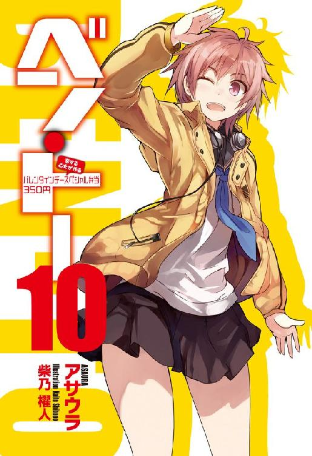
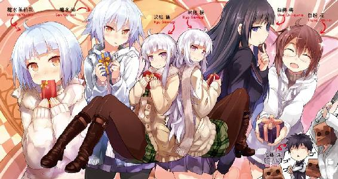
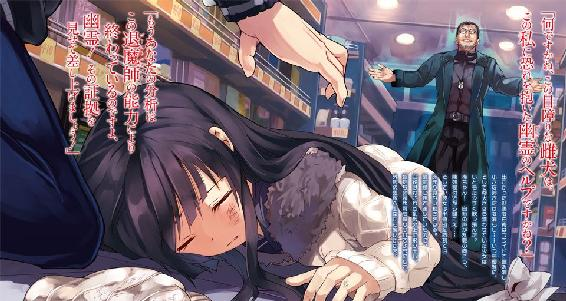
主要登場人物
佐藤 洋（さとう・よう）
烏田高校一年。体力とバカには自信がある。ゲームはセガ派。
著莪 あやめ（しゃが・あやめ）
丸富大学付属高校一年。佐藤洋と同じ生年月日の従姉。イタリア人の母を持つハーフ。ゲームはセガ派。
槍水 仙（やりずい・せん）
烏田高校二年。ハーフプライサー同好会会長。二つ名は《氷結の魔女》。
槍水 茉莉花（やりずい・まりか）
槍水仙の妹。小学五年生。姉と一緒に暮らしていた時は共に寝ることが多かった。子犬のような少女。
白粉 花（おしろい・はな）
烏田高校一年。小説執筆が趣味な女の子。実は一部ネットでは名が知られた存在だったりする。
白梅 梅（しらうめ・うめ）
烏田高校一年でありながら生徒会会長を担う。白粉をとても大事に想っている。暴力的な一面を見せることも。
沢桔姉妹（さわぎ・しまい）
丸富大学附属高校二年の双子の姉妹。やや残念な姉の梗と良くできた妹の鏡。それぞれ生徒会長と副会長を担っている。二つ名は《オルトロス》。
二階堂 連（にかいどう・れん）
丸富大学の生徒にして、元《ガブリエル・ラチェット》頭目。現在は一匹の狼。
鬼塚 博（おにづか・ひろし）
東北の大学に通いながら、探偵事務所でバイトしている狼。烏田高校の出身者。二つ名は《退魔師》。
ウルフヘア
烏田高校に通う一年生の女生徒。狼となってまだ半年ほどだが、その成長は著しいものがある。
高段位桜桃少年団（ハイクラスチェリーボーイズ）
鳥田高校の男子寮内で本人たちも知らぬ間に結成されてしまった汚れを知らぬ純粋な少年たち。神田、蔵田、矢部等といった面々が名を連ねており、これに一応佐藤も入る。週末の夜には皆が集まり、様々なテーマに対し議論し、解決の道を探っている。
イラスト／柴乃櫂人
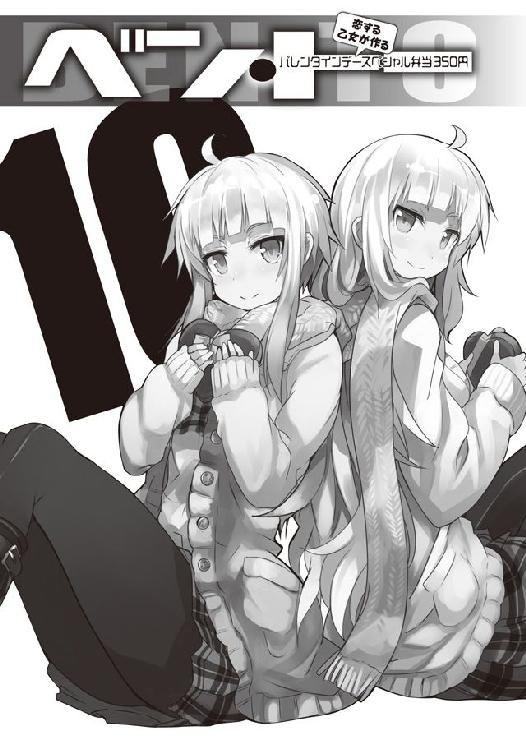
需要と供給、これら二つは商売における絶対の要素である。
これら二つの要素が寄り添う流通バランスのクロスポイント......その前後に於いて必ず発生するかすかな、ずれ。
その僅かな領域に生きる者たちがいる。
己の資金、生活、そして誇りを懸けてカオスと化す極狭領域を狩り場とする者たち。
――人は彼らを《狼》と呼んだ。
１章 退魔師
「ナッハハハッ！ ＨＰ部、いや、ＨＰ同好会も腕が落ちたものですね！」
鬼塚博
０
『彼』にとって、そこは何かと縁のある店だった。
入店。自動ドアが開き、一月末の骨身にしみ入るような寒さから逃れる。代わりに、この地の狼たちからの鋭い警戒の視線が『彼』を襲った。
――果たしているのか、この中に。
彼は肌に突き刺さる視線を吟味し、歩み行く。店内を肌で感じ、読み取り、そして分析する。コート越しとはいえ、それでも二つ名持ちがいるのなら判別は可能だという自負があった。
その程度の分析能力がなければ、あの二つ名を名乗れはしないのだ。
「ふむ。気になる奴は一人、二人といったところですね」
『彼』は呟きながら、青果コーナーに並ぶ野菜に目をやる。見るからにずっしりと重そうなキャベツをはじめ......おっと、大葉が特売だ。相変わらず品質もサービスも悪くない。その店――ジジ様の店は相変わらず、いい。この地域を代表する店舗だと言っても過言ではない。
「よぅ、久しいな。もう春休みか？ まだ一月だぜ。狙いの品もまだだろう」
『彼』はかけていた丸い伊達眼鏡をかけなおし、その声の主を見やる。
どこぞからこちらの情報を聞きつけて待っていたのだろう、《毛玉》だ。
「課題が早く終わったのでね、一足先に出てきた、というわけさ」
「節分にしちゃ少々早いな。何かに惹きつけられてやってきたか？」
「《東北のカナリア》が面白い歌を唄ったのでね。先にその正体を見極めようかと思ってね」
「ということは、今年の年末年始の出来事か。その時カナリアが会っているとなると......」
「余計な情報はいらないよ。私には自分で聞き、見て、感じ、そして理解するだけの能力がある。そしてそれこそが私の楽しみなのだから」
『彼』はそれだけ言って毛玉の横をすり抜け、店内最奥、弁当コーナーへ。
ジジ様らしい、見事な弁当群を横目にしつつ足を止めることなく通り過ぎると、菓子の島棚の前に立つ狼たちを見やった。先ほど『彼』に視線を向けた中でも有力そうな狼の一人だった。
「......ふむ。女、か」
それもなかなかにいい女だった。烏田高校の制服を纏っているが、Ｐコートから溢れる大きな胸が印象的な、茶色の髪をした彼女。その制服のネクタイの色を見るに現在三年だ。
そうなると昨年......いや、一昨年もこの地にいたのだろうか？ 『彼』の記憶に該当する狼はいない。そうなると、昨年から参加したか、それともこの一年程度で一気に実力を付けたかのどちらかだろう。一昨年まではＨＰ部のメンバーに意識が向いていたとはいえ、今の彼女ほどの鋭い視線を放ってくる相手を、『彼』の観察眼であれば見逃すはずはない。
「昨年も来るべきでしたかね。ＨＰ部が解散したと聞いて、興味を失うべきではなかった」
愛すべき怨敵、宿命のライバルと『彼』が認めた相手......《ウルフズベイン》こと烏頭みことが実質的に引退し、古狼のようになってしまったと聞いたせいもあっただろう。昨年は来るには来たが、長居はせずに節分の前後の夜にわずかに争奪戦に参加しただけだった。
『彼』は茶髪の女から視線を外し、さらに歩み行く。興味深いが、しかし、今彼が求めている相手ではなさそうだ。カナリアが唄ったそれとは、違う。
彼女を除くと、他には坊主頭の男と顎髭を生やした男の二人がそこそこに良い気配を漂わせているものの、まだそれほどピンとくるものはない。『彼』が望む狼ではない。
今日はいないのか。『彼』がそう諦めかけた......まさに、その時だった。
何者かが来店したのが自動ドアの気配でわかる。思わず『彼』は呻いた。
店内の空気はさほど変わらない。だが、向こうから『彼』へ放たれた視線が肌を刺してきた。その来店者は『彼』を新手の狼と見て取り、そして警戒しているのを感じる。
全身を走る衝撃とは違う、肌のざわつき。今まで拳を交えてきた多くの狼たちのどれとも似ていない。圧倒的な、しかし、圧迫感はなく、ただただ寒気を覚えさせるほどの研ぎ澄まされた意志。それを感じた途端に鳥肌が立ち、嫌な汗が『彼』の肌に湧いた。
「......ほぅ、これは大したものですね。歴代のＨＰ部メンバーを彷彿とさせるレベルだ」
無意識のうちに立ち止まっていた『彼』は両の手を拳に固め、全身に力を入れる。気合いを入れなければ、その能力の謎を解き明かすより先に気持ちで負けてしまいそうだ。
このインパクト......カナリアによればかつてＨＰ部の猛者であった《大厄の闘牛士》を打倒したという狼だ。当然といえば当然か。しかし店内の空気が変わらないのは何故だ？
......慣れ、か。恐らく今店内にいる狼の大半は今の来店者と幾度となく拳を交えているのだ。だからこそ、店内の空気はそれほどの変化を見せないのだろう。向こうも意識せず、彼らの日常からすれば異質である自分のみに視線を向けているのかもしれない。
『彼』が肌の感覚だけを頼りに〝場〟を推理していると、毛玉がフラリとやってきた。
「どうした？ ......あぁ、そうか、お前が探していた相手が来たってわけか」
「おぞましいものですね。この気配、カナリアの歌にあるように、大した使い手とみえる」
「それなりだな。ただ、変わり種らしくって、普段はそれほど目立たないってのが――」
「毛玉、喋りすぎです。少しは楽しませていただきたい、この相手。話は全てが終わった後に。......何です、その顔は？ 呆れないでいただきたいですね。これが私の在り方であり、やり方なのです。そこに謎があるのなら、解かずにはいられない。それが、私という狼です」
そうして『彼』は調味料コーナーにて瞼を閉じ、己の知的好奇心と腹の虫を意識する。
戦い、そして秘密を解き明かし、メシを喰う。そのための準備を、整える。
『彼』の名は鬼塚博。北の地の学生にして、探偵事務所で働く二〇歳の狼。かつてはウルフズベインをはじめとしたＨＰ部のメンバーと死闘を演じた剛の者にして、特殊能力を有する狼たちから畏怖されし、謎好きの男。
――人は彼を、《退魔師》と呼んだ。
○
今宵のＨＰ同好会の部室は、いささかいつもとは雰囲気が違っていた。
烏田高校部室棟、最上階に当たる五階の角部屋。大きな窓から差し込む月明かりによって、照らし出されるのは近隣のスーパーとその半値印証時刻を記した大きな地図と、その対面の半額シールが無数に貼られた歴史ある壁。様々な食事関連の品物が納まる棚や冷蔵庫......。
そんな部屋の中央には大きな円卓とそれを囲む幾つもの椅子。そこに座る僕――佐藤洋と白粉花、そして同好会会長の槍水先輩。......と、ここまでは一年近くもの間で当たり前となった僕らの日常。当たり前の光景。だが、いつもと違うのは円卓の上の品物だった。
――全員がどん兵衛なのだ。いや、それだけなら過去にもある。僕や白粉はともかく、槍水先輩もどん兵衛を食べることは度々ある。僕ら狼が勝ち得んとする半額弁当が値引きされる前に売り切れてしまったり、たまにある何らかのセールの情報を掴み損ねたが故に半値印証時刻がずれてしまっていたり......もちろん、負けてしまう時も先輩にだってないわけじゃない。
けれど、三人が三人ともどん兵衛というのは珍しく、さらに希有なのは、そば派の先輩が、なんと今回はうどんをチョイスしたということだろう。
電気ポットからどん兵衛にお湯を入れてくれた白粉はおずおずとしつつ、先輩を見やる。
「えぁっと......先輩がどん兵衛のうどんって、珍しいですね」
たまにはな、と言って椅子に座っていた先輩はゴツイブーツを纏う足を組み替え、肩口までの、あえてワイルドに尖らせている己の髪先を指でいじって、白粉から視線を外した。
僕はうまく実力を発揮できずに負けてしまったためだが、先輩は、実は違うのだ。
彼女がそれを選んだ理由......年末から正月にかけてのみ販売される『日清のどん兵衛 年明けうどん』が、一月も終わるということで安売りしていたからだ。これは普段のそれとは出汁が違い、さらにはおめでたい寿の文字が入ったカマボコや溶き玉子、とろろ昆布、そして本物の梅干しがまるごと一個という仕様である。
値引きがどうのというよりは、先輩の場合こういう季節物に少々こだわるので、それで、だろう。少なくとも新学期が始まってから先輩は半額弁当を常に獲っていたはずだ。
僕がそのことを口にすると先輩は少し照れたような顔をしつつ、僕や白粉から顔を背けた。
「あ、それでですか。あたしは負けちゃったからですけど、先輩は珍しいなって思ってました」
「ん、まぁな。弁当を見るより先に〝在庫限り〟の文字を見てしまって、心が奪われてしまった。そのままではどうせ勝てないだろうと思って、今回は半値印証時刻に参加しなかったんだ」
残りわずか、限定、今だけ......こういう言葉に弱いのが日本人である。文化的なものなのか、それとも遺伝レベルで刻まれた何らかの理由があるのかはわからない。だが、これに独自の理論でもって解説してくれた友人が僕にはいた。彼がまだ元気だった頃、矢部君の部屋で僕を含む高段位桜桃少年団に語ったのだ。
日本人は〝限定〟〝今だけ〟そういったものに弱い。それは我々が農耕民族の末裔であり、狩猟ではなく草木を育み、季節の恵みを享受して営みを続けてきたが故である。狩猟民族と違い、食料が得られるタイミングは人間側でコントロールすることが叶わず、春夏秋冬の恵みはその時に口にしなければ次のチャンスは早くて翌年......そういった太古の経験から我々は限定品というものに弱いのだ。そしてそうであるが故に日本人はロリコンなのだ、とも語っていた。
〝若さ〟ほど平等で、かつ、貴重な限定品があるだろうか。誰もがそれを有して生まれ落ち、失い、死に果てる。その中にあってもっとも貴重な〝若さ〟は、やはり未成年のそれだ。何故ならば大人としての時間は数十年あるが、子供のそれは二〇年に満たない。また幼い体は日々成長していくことを考慮するならば、成長期の子供たちにとって一日一日、いや、一瞬一瞬が二度と手に入れることの出来ない〝限定品〟なのだ。これらを踏まえて考えるに我々は当たり前の日本人であり、ロリな少女を愛することに何の抵抗を持つこともなく、むしろ胸を張るべきなのだと僕の友人――元気だった頃の霧島君は熱く語ってくれていたっけ。
ちなみにこの時の高段位桜桃少年団のリアクションとしては『ロリは良い、しかしロリが良いのではなく、ロリも良いのだ』だった。霧島君の訴えたいことは十分に理解出来たが、それを踏まえても僕らのような健全な野心家にしてエロスの権化みたいな男子高校生には、どうしてもおっぱいへの夢を絶つことが叶わない。だから僕らは霧島君に言ったのだ。ロリもいい、だが、その瞬間だけを愛するのではなく、その幼女が少女になり、そして大人の女になってエロスを溢れ出させるその変化をも愛したいのだ、と。
これから先の会議の様子は他言出来ぬハイレベル、即ち公の場で口にしようものなら直ちに通報されかねないものになってしまったのであえて伏せるが......ともかく、霧島君の理論を信じるのならば日本人は誰であっても標準的にロリコン――違う、限定品に弱いものであり、こればかりは仕方のないことなのだという。
「さて、この五分の間に準備しておかないとな。白粉まで年明けうどんだったのは都合がいい」
そう言って槍水先輩は組んでいた足を解くと、まだ何かしら中身が入っているレジ袋を持ち、棚から何かを取り出すと、部室を出ていく。それを見送る白粉は小首を傾げ、頭の上に〝？〟マークを浮かべるが、僕はあえて何も言わないでおいた。
それから約四分。先輩のいなり寿司、白粉のエビ天二本、僕のマイタケの天ぷらをレンジで温め終わったタイミングで、先輩が帰還。その手にはピーラーとおろし金。そして、生姜だ。
先輩を中心に窓際の席に着くと、割り箸を持って手を合わせる。――いただきます。
まだ怪訝な顔をしている白粉を尻目に、僕らはどん兵衛の蓋を開け、一度かき混ぜ、年明けうどんの決まりである赤い物、梅干しを投入。寿の文字がかかれたカマボコが出汁に浮かぶ。
まずはそのままで。先輩は短く言うと汁を啜り、そして麺を手繰る。満足感のある笑みを浮かべ、一度頷いた。そして......いよいよ生姜とおろし金を手に取るのだった。
「もうすぐ二月とはいえ、まだまだ寒いからな。生姜は体を温めてくれるし、何よりこのどん兵衛にはとてもよく合う」
先輩がシュッシュと音を立てて生姜をすり下ろす。香りが、広がった。
デフォのどん兵衛をまず口にした僕らのそれにも彼女は入れてくれる。どん兵衛はそれ自体で一つの完成した食べ物であるとする僕からすると、全体の味を変えてしまうこの手のものはやや邪道のような気もするけど......しかし、先輩が言うのならば信じて試す価値はあった。
果たして、そのどん兵衛を口にしてみれば......驚いた。この年明けどん兵衛自体は上品な昆布出汁の見事な梅うどんであり、そんじょそこらのうどん屋が腰を抜かしかねない味わいである。まろやかで、風味豊か。そこに、すり下ろした生姜を投入......。すり下ろしだからなのか、それとも特売だった国産の生姜だったからなのか......どん兵衛が別物のように......いや、さらなる上位料理へと昇華してみせたのだ！
昆布出汁のまろやかさ自体は変わらず、優しく包み込むような、それ。そこに生姜の風味が加わることでやんわりとした味わいに一本スッと芯が通ったようになった。
そのままでももちろん、いい。だが、これはこれで、また......いいっ！ はっ、そうだ......!!
僕はふと思い立って、半額総菜だったマイタケの天ぷらを箸でつまむとどん兵衛の上へ。天ぷらはひたひたに浸してしまうのもいいが、マイタケの天ぷらはあまりそうしない方がいいだろう。僕はあまり時間を置かずに喰らいつき、したり顔になるのを感じる。
案の定だ。この生姜入り昆布出汁どん兵衛......天ぷらに、合う!! 揚げ物特有のまろやかさを活かしつつも、どうしても生まれてしまうくどさを全て生姜が切り捨ててくれる。後味スッキリだ。それでいて天ぷらの――マイタケの風味を邪魔しない。......これは、いいぞ。
通常のどん兵衛のように、しょうゆやカツオ出汁の風味が強いそれとは違い、年明けどん兵衛にはコロッケは少々合わない予感がしたので、あえて淡泊な、それでいてあまりスーパーでは見ないマイタケの天ぷらにしたのだけれど、これがそもそも正解だ。白粉のエビ天など、さらにいいだろう。......少し羨ましいぐらいだ。
僕同様に驚いているのか、白粉は黙々とエビ天を乗せたどん兵衛を食べていく。その様子はどこか小動物が焦ってご飯を食べているようで、何だかかわいらしくてたまらない。
僕同様に見守っている先輩も、クスリと笑う。
「たまにはこうしてみんなでどん兵衛というのも、いいな」
「同じ物を食べながら、総菜とかでそれぞれにちょっとアレンジして......いいですよね」
僕の言葉に先輩はニッコリと微笑み、先程人肌程度に温めておいたおいなりさんを頬張った。
そうして、僕らが最後の一滴までどん兵衛を食べ終えた頃には体がぬくぬくと温かくなってくる。温かな食事を腹に入れたからというよりは、きっと生姜のパワーだろう。
「ふぅ。うまかったな。ごちそうさま。......あぁ、そうだ、佐藤。さっき言い忘れたが、〝こういうの〟もいいが、それはあくまで〝たまに〟だぞ。どん兵衛の安心感に甘えて弁当を追い求める心を鈍らせてはダメだ」
「はい、わかっています。......今回は初めての狼がいて、実力をうまく発揮できなくて」
「何のために合宿をやっていると思っているんだ。そういう突発的に出くわす狼たちにも迅速に対応出来ないようでは、まだまだだぞ」
そう言って、先輩はツンっと僕のおでこを突いた。言葉は厳しいものの、口調はどこか昆布出汁のように柔らかで丸みのあるもの。月明かりで輝く黒水晶のような瞳も、生姜の力が発揮されているかのように、温かかった。
「白粉は、今日、どうしたんだ？」
「えぁっと、あたしはちょっと、油断してというか......その、ちょっと気が抜けてしまって」
「そうか。......これから大学は春休みになる。そうなると近隣に実家のある狼たちが戻ってきたり、今まで近隣の大学に通っていた者が姿を消したりと、出くわす狼が大きく変わるだろう。さらには高校生であっても来週からセンター試験だ。受験をする者、終えた者、すでに合格を決めた者......それぞれ生活スタイルが変わるから場の変動は必然的に大きくなる」
言われてみれば、今ってもうそういう時期か。学校内でも三年生の教室がある階などは独特の雰囲気だったし、何より学校全体で『落ちる』『滑る』『漏れる』といった言葉は使ってはいけない、というような暗黙の了解が成立していた気もする。
そういえば中三の三学期の時もそうだったっけ。僕は一足先に推薦で烏田高校が決まっていたので大して意識しなかったけれど、一般受験のクラスメイトはみんな真剣そのもので、石岡君に至っては......何故か坊主になっていて......まぁ、その辺りの話はまた別の機会にでも。
「受験シーズンが終われば、もう春ですよね。いろんなものが変わる季節で......あ、でも、うちの同好会はあんまり関係ないですね、三年生いないし」
「ん、そうだな。ただ......その、何だ。......それより、今は来週に迫った節分のことに集中した方がいいぞ。毎年ジジ様の店では変わり種の、しかし、節分らしい弁当が出るんだ」
槍水先輩は少しばかり無理やりに話を変え、どこか哀しげに微笑んだ。
「......それって、どんな弁当なんです？」
どうしてそんな顔をするんです？ そう尋ねたいのを僕は堪え、先輩の話に乗ることにした。一秒でも早く彼女の顔に浮かぶ哀しさを消してしまいたいから、僕のちっぽけな疑問は、魚の小骨のように呑み込んだ。
「ん、例年内容は若干変わるらしいんだが、名前は共通らしい。その名も、『鬼斬り弁当』という、その日限りの弁当なんだ」
槍水先輩がいつも通りに得意げに語りだし、僕は少しホッとしてその話を聞くのだった。
１
隣に立つ彼は、自らを退魔師という名で呼んだ。自称ではなく、それが二つ名であるらしい。てっきりマシュマロのおばけと戦ったりするのかと思いきやそうではなく、そもそも〝ゴーストバスター〟という職業がアメリカには実在するのだという。それは怪しげな機械を背負ってゴーストと戦ったりするわけではなく、日常生活で起こる心霊現象の原因を科学的に証明し、住民の不安を解消したりするのを目的とした立派な職業であり、実質的にその実体は探偵業に近いものらしい。それ故、退魔師と名乗る彼も実際に探偵事務所でアルバイトしている大学生なのだと、まどろっこしくなるほどに丁寧に話してくれるのだけれど......何だか一訊いたら十の答えが帰ってきた感じだった。
「だから、私はこの名を案外に気に入っているのですよ。......もちろん、狼としての特性にもフィットしているからですがね。フフン」
若干丁寧過ぎたり、インテリを気取った感じがする、大柄な男。それが退魔師という男だ。身長も一八〇は余裕であるだろうか。何となく威圧的で、人の良さそうな笑みを浮かべていて......どことなくインテリというよりは肉体派といった雰囲気を纏っていた。
新しい狼か、と何げなく話しかけてしまったのが失敗だった。話が長い......。
僕はいまだ喋り続ける退魔師を余所に、今一度店内の様子を気配から探る。狼の数は、僕も入れて七。警戒すべきは坊主とウルフヘアぐらいだろうか。アブラ神の店にしては、若干少ないという印象を受けた。まぁ、だからこそ見慣れぬ狼の存在が気になったのだけれど。
僕は今一度弁当を想う。現在三割引きの弁当は三つ。その中でも僕の空っぽな胃袋を誘惑するのが『エビチリ・エビマヨ・エビ焼売にエビ炒飯......もはやこれ以上どんなエビを求める？ エビの絨毯爆撃中華弁当!!』である。名前からも分かるとおり、エビ......とにかくエビを主軸に置き、これでもかと言わんばかりに大量にその身を使用した大ボリュームの弁当である。さすがにコストが高いのか、他の弁当より一五〇円ほど高いのだが......その魅力たるや、今さら語るに及ばない。エビ......何と甘美な響きだろう。世界中の誰もが愛するが、その中でも日本人が特に好む食材だ。そしてそんなエビをおいしくいただく調理法といえば......やはり、中華だ。和食でもおいしいし、嬉しくもなる。だが、日本料理特有の奥ゆかしさ故か、その使用量は控えめで、せいぜい一品に一匹程度。いわゆるワンアクセントでしかない。ガッツリいきたいという、十代の男の子が女体を求めるそれにも似たエビへの欲求を満たすには、やや物足りなさを感じてしまうのは間違いない。
中華で、ガッツリと、エビをいただく......。想像するだに腹が鳴り、よだれが湧く。何より昨日、白粉の奴が年明けうどんのどん兵衛にエビ天を二本もぶっ込んで食べていたのを見ていたのに触発され、僕の中でエビに対する情熱が燃え上がっているといっても過言ではない。
エビが食べたいと思った翌日にこの弁当。しかも敵は六人、弁当は三つ......喰いっぱぐれるのはわずかな人数と、悪くない勝率が約束されているのだ。狙わないわけがない。
あえて他の二つの弁当は意識の外へ押しやり、一点に集中。明るく爽やかな店内ＢＧＭが流れる中、僕は腹の虫の呻きを店内に響かせた。それにより緊張していた空気がわずかにざわめく。負けじと坊主とウルフヘアが気迫を発するのを肌で感じる。
「......ふむ。さすがに入店時からただ者ではないと思っておりましたが、なるほどなるほど。あなたもそこそこの狼のようですね。一年生かな？ ......なるほど。いやはや、時間があれば君の能力も分析したいものですが、先客があるのが残念です」
分析？ 先客？ 何を言っているんだ、コイツ。
僕は閉じていた瞼を開き、目の前にある珈琲豆のパックから隣の退魔師の顔を見やる。
彼は眼鏡をかけ直し、視線を僕ではなくエントランスへ向けた。
「私の狙いはカナリアが謳いし狼と拳を交え、その能力の謎を解き明かすことなのですよ」
「カナリアっていうと、あの東北のカナリアか」
「おや、ご存じなのですか？ そうです、あの彼です。彼が唄ったのですよ、今年の正月に彼の地でその力を見せつけた狼のことを。......元ＨＰ部の猛者にして、希有な毒の能力を持ちし狼、秋鹿雅を打倒せしスーパーの新星たる狼の存在を......！」
僕は両腕を胸元で組んでそこに力を入れると、俯いた。そうしなければニヤけてしまう。
......うん、悪くないな、こういう展開。僕のことを求めてやってきた相手が何も知らずに僕と接触してそのことを話しちゃうのとか。ラブコメだったら間違いなく相手はかわいくて小心者の女の子で、僕のことが好きなのだけれど、告白した方がいいのかどうかという悩みをひょんなことから気がつかずに本人である僕に相談しちゃう的な？ ニヤニヤが止まらないね！
まぁガタイのいい大学生の男でも我慢するさ。狼として名が売れた、ということは素直に嬉しいし。帰ったら先輩に早速報告しよう。
「相当な使い手と聞くが、カナリアの歌だけではその能力の真なるところはわからない。その謎を解き明かそうと思って、私は今従弟の家に居候しているのですよ」
カナリアの奴、ちゃんと唄えてないな。能力云々以前に、聞いた奴が僕だってわからないって......表現力が足りないんじゃないのか？ 今の僕は制服の上に黒のパーカと黒のスカジャンを重ね着しているのだ。ほら、黒妖犬の一種、僕の二つ名だという《カペルスウェイト》を連想しやすい服装だってのに......。っていうかスカジャンの背中とかには犬の絵まであるんだからさ、普通それとなく察するもんじゃないのかね？
ゴーストバスター≒探偵だというが、コイツの能力、さしたるものではないと見た。となると、あまり意識を向けているのも無駄だな。エビへの意識を今一度強めよう。
「......噂をすれば、ですか。店外にいながらにして、この気迫......おぞましきものだ。すでに一度戦っただけの私の存在に気がついたと見える」
退魔師はキュッと靴を床にこすりつけるようにして一歩後ずさりした。
何を言っているんだ、コイツは。お前の目当ては隣に......そう思った直後、僕にも奴が何を感じ取ったのか、わかった。この感じ......間違いない......!!
「そう、あなたも感じましたか。奴です。奴こそが、あの秋鹿雅......《大厄の闘牛士》を打倒せし、凄腕の狼なのです！」
僕もまた退魔師が向けている目線の先を見やる。エントランス。開き行く自動ドア。一月の寒風と共に入店するのは――。
「その名も......《幽霊》こと白粉花!!」
はい、眼鏡を装備してニチャリとほくそ笑んでこちらに視線を向ける白粉先生です。今夜も絶好調です、えぇ、はい。......何だアイツ。
「ほら、ご覧なさい。闘牛士を倒した実力者だというのに、店内の空気はさほど変化がありません。せいぜい一匹狼が増えただけ、という感じ、まさにこれも彼女の能力ではないかと私は見ます。おぉ、なんとおぞましきあの表情と発する気配......まさに幽霊。その二つ名と相まり、私の敵とするに......あ、ちょっと......」
饒舌な退魔師を放置し、青果コーナーへ進みながらもニチャリと笑ったままこちらを見つめ続ける白粉のもとへ僕は飛ぶようにして向かった。そして当然、まずは奴の束ねられている後ろ髪をやや強めに引っ張り「――あぅ！」の声を上げさせる。
「白粉、まずはいろいろと説明してもらうぞ......」
「え？ な、何がですか？ あたしはただ、昨日もいたマッチョ探偵がサト......サイトウ刑事と接触するという新たなイマジネーションが浮かんでちょっと微笑んでいただけで......あ、ちなみにこの場合接触っていうのは会うって意味であって、間違っても熱き漢たちによる粘膜同士の触れ合いではな――あぅ！」
スーパーではまず耳にする......というか、日常でもあまり耳にしない単語を聞いたことで、それに付随する汚れたイメージが頭に思い浮かび、僕は反射的に奴の髪をもう一度引っ張った。
......何だ、何が起こっているんだ......？ まず、落ち着いて考えてみよう。
退魔師はカナリアの歌で知った、秋鹿を倒した狼を求めてこの店に来た。秋鹿を倒したのは僕だ。しかし、彼は何故か白粉こそがカナリアが唄った相手だと言った。その当の白粉は、自分は単にスーパーはもちろん、路上で公開しようものなら即座に捕縛されかねない妄想をしていたに過ぎないのだと口にしている......。
......何だ、何が、どうなっているんだ？ どこかで何かがおかしくなり、事実という名の糸が絡み合って、真実の姿を隠しているぞ。
「何だ......一体、何が、どうなって......真実は......一体......」
「......難解な事件を前に苦戦するサイトウ刑事。そんな彼の前に現れたのはアメリカでゴーストバスターとして働いた経験を持つマッチョな探偵。刑事と探偵、似て非なる二人の漢たちが互いを意識しながらも、一つの事件の捜査に乗り出して......。ほほぅ、これはいいですよ佐藤さん！ 刑事ＶＳ探偵という何気に今まであまりなかったシチュエーション！ 大抵探偵が出てくると刑事は無能なバカだったりしますが、刑事の方が主人公で、探偵がライバル、そしてマッチョ......これはアツい！ もちろん途中でライバル同士ながら肉体関係もあぅ!!」
とりあえずもう一回引っ張っておいた。
僕は遠くの方からの退魔師の視線を感じつつ、携帯を取り出して時刻を確認。一九時五七分。この店の半値印証時刻は二〇時前後......いつ半額シールが降臨してもおかしくはない。僕は舌打ちして白粉の後ろ髪を離して、奴を逃がす。まだ白粉は弁当コーナーを見ていないのだ。
早く行けと、純白のダッフルコートを羽織る彼女の小さな背を押す。
僕自身、白粉のせいで気が散ってしまい、先ほどまであった燃えたぎるようなエビへの欲求が薄れ切っている。このままで戦闘に向かうのは少々ヤバイ。
僕は青果コーナーのキノコゾーンに視線をやって、食欲を意識する。昨日食べたマイタケの天ぷらを思い出すと同時に、そこを入り口にして昨日白粉が食べていたエビ天に想いを馳せ、それへの欲求を高める。だが、それを邪魔するように退魔師が僕の隣にやってきてしまった。
「ふむ、君は彼女と知り合いのようですね。馴染みと私は見る。まさか同じＨＰ部、いや、ＨＰ同好会の人間ですか？ ......これはお恥ずかしい。失礼しました。てっきり今のあそこには魔女とその犬である彼女、幽霊しかいないものとばかり」
......おい、カナリア。唄うんならちゃんと唄えよ......。秋鹿を倒したのが白粉になっているどころか、そもそも僕の存在が消えているぞ。っつぅか白粉に二つ名......？ 幽霊......？
くそ、また様々な謎が湧いてきやがった！ 白粉の思惑通り僕は退魔師というこのマッチョ探偵と競い合うように一つの謎を追い求めてしまうのか!? っていうか、こいつはマッチョじゃな......いや、マッチョかもしれない。
僕は今一度隣に立つ男に視線をやる。やや不愉快に見える笑みに眼鏡。してその体は、マッチョかというと......マッチョだ。言われてみればそう見える。コートに太めのカーゴパンツという出立ちのためわかりにくいのだが、よく見れば尻辺りの張り具合からして何気にいい体をしている気がする。そして何より首の太さがその鍛え上げられた上半身の筋肉を想像させるのだ。......白粉の奴、よくこれを一瞬で......。いや、退魔師は先ほど一度戦ったというようなことを言っていたな？ 訊いてみよう。
「うむ。昨日、ジジ様の店で戦った......というか、出くわしたのです。ただ、拳を交えたというには及ばず、その能力すら見せてはもらえなかった。......きっと私の能力を察し、己のそれを分析されるのを嫌ったのかもしれませんね。フフン。おっと、君は彼女の仲間か、失礼失礼」
......何か、うざいな、この男。インテリっぽさが全て悪い方に向いている気がする。
「まぁ、どれだけ出し惜しみしたとしても狼である以上はいつかは必ずその能力をスーパーで発揮するはず。そうでなくては飢えて死ぬのですからね。私はそれまでゆっくりと時間をかけて彼女を追跡すればいいのです。......ちなみに、あなたは？」
鬼塚がそう尋ねてきたので、僕は佐藤だと名乗るものの......さすがにまだあまり定着していない二つ名を口にするのも抵抗があったので、あの名は伏せておくことにした。
......うーん、遠くの方から視線を感じるな。肌の上を冷たく、ぬめる何かが這っているような、この不愉快極まりない視線は......まぁ、白粉だろう。
「さすがは幽霊、私へのこの警戒する視線......これは過去に戦ってきたどの狼よりも禍々しい」
何だかんだで一年付き合ってきた今の僕でさえ全身に鳥肌が立つのだ、いきなりこんな視線を浴びせられようものなら震えがくるレベルだろう。
「あのさ、その白粉の二つ名、幽霊って、一体......あ」
僕の口を、店内の張り詰めた空気と、そして、パワフルに開かれたスタッフルームの扉の音が塞いだ。アブラ神の降臨、半値印証時刻の幕開けである。
僕は舌打ちして、隣の男と全身を舐め回すような視線を無視し、己の腹の虫を意識する。
アブラ神がいつものように、見事に、さりげなくも華麗に半額シールを舞わせる。そしてスタッフルームへ。一歩、また一歩と悠然と歩み行くに従い、店内の空気の張りが増す。七匹の獣が、その身に力を溜める。息を殺して腹を鳴らす。
神は扉の前で踵を返すと店内へ向かって一礼。そして再び大きな背を僕らに見せ、その奥へ。そうして......観音開きの扉が、締まる。
衝撃に、店が揺れた。狼たちが地を蹴り、まさに飛ぶが如く獲物――半額弁当へ向かって疾駆。僕もまた全ての雑念を捨て、ただ弁当を想い、自らの体を躍らせた。
だが、僕がいた青果コーナーというのは多くの店がそうであるように、エントランス付近。店内最奥にある弁当コーナーへはいささか遠い。出遅れはやむを得なかった。
第一陣として弁当コーナー前に現れたのは......ウルフヘアと坊主。互いに弁当を左右から挟むようにして迫る。もし互いに狙うべき弁当が違えば、すれ違いざまに二つ持っていかれる可能性もあるが、さすがにそうは事が進まない。二人は衝突する寸前に互いの視線、そして伸ばしかけた手の位置から狙いを推察。遠くから見ていてもわかった――二人共、エビ弁狙いだ！
坊主、伸ばしかけていた手を引っ込め、代わりに拳を走り込んだ勢いに乗せて繰り出した。
一方のウルフヘアはこれに対し、何ら対応もせずに、さらに加速。坊主の拳がそのキリっとしたネコ科のような彼女の瞳の寸前にまで迫った時になってようやく体勢を変える。すっ転んだように、重心を落として拳をかわすと同時に彼女は身を捻って坊主に背を向けた。だが、加速していた彼女の体の勢いは止まらず、背から坊主の懐......いや、下半身にぶつかっていく。
ウルフヘアの背と坊主の足がぶつかった瞬間、坊主は前方に向かって宙返りするかのように吹っ飛んだ。ウルフヘアの全身と走り込んだ勢いを使った足払いと言えなくもないのだが、実際には彼女は素早く坊主の腕を掴んでおり、投げ技であったのだと傍から見ていた僕は察した。
走り込んだ互いの勢いと己の体重を利用した、坊主の腕を掴むと同時の投げ技......。
今まで彼女が使ってきた柔道技とは、根本において意味の違うそれに、思わず僕は感嘆した。
乱戦において一対一でしか通用しない柔道の技はあまり有効ではない。技をかける際と、かけた後は他者に無防備な姿を晒すことになるので、あまり良しとはされないのだと、僕は槍水先輩から聞かされていたし、実体験として理解していた。唯一使い道があるとすれば《サラマンダー》戦で僕がしたように、乱戦の果てに敵がごく少数となった時ぐらいなものだ。
しかしその技を得意としていたウルフヘアはこの短期間で、よりアクティブかつスピーディな技へと昇華させていやがった。柔道というよりは合気道や柔術の類に近いその動きは乱戦の中でも通用する可能性を見る者に予感させる。
とはいえ、ウルフヘア自身まだその技の使い方に慣れていないのか、せっかく弁当コーナー前には己だけになったというのに、弁当を獲れない。坊主を投げ飛ばした後の己の体を制動しきれず、走り込んだ勢いに引っ張られるようにして尻餅をついてしまう。スカートが捲れ、彼女のエロさよりも健全さを感じさせる張りのある美しい両の足が露になった。冬でも生足なところに、彼女の溌剌とした雰囲気が表れていて......いや、今はそんなことに心を動かされている場合ではない。弁当だ、弁当に集中だ！
「あの少女もなかなかやるようですね。ここは面白い土地だ。見所のある狼が次々に......」
背後から鬼塚の声。だが、まだ腕が届く距離ではないはずだ。僕は意識の片隅に奴の存在を置いておきながら、弁当コーナーへ。スカートの裾を直しつつ立ち上がろうとしていたウルフヘアを飛び越し、そのままさりげなく弁当に手を伸ばしていた狼の一匹に跳び蹴りを放って、そいつを吹っ飛ばす。着地と同時に弁当へ手を伸ばしたかったが、蹴りの反動で微妙に陳列棚から遠ざかってしまった。とりあえず、着地......出来ない。靴の裏に床とは違う感触。手。ウルフヘアが僕の踵を伸ばした両手で掬い上げるようにして掴んできやがった。
ふんっ！ という声と共にウルフヘアは両腕、背筋をフルに使い、僕の踵を上へ放り投げる。
着地しようとしていた僕の片方の足がいきなり持ち上げられればどうなるか、考えるまでもない。僕は、転んだ。陳列棚の下方に、顔面をしたたかに打ち付けて。
僕は痛みと衝撃に意識を持っていかれそうになりながらも、何とか身を捻り、陳列棚に背を向けた状態で尻餅をつく。弁当は獲り辛いが、他の狼に無防備な背を晒しながら立ち上がるよりはマシだと思ったのだが、それが失敗だった。間髪をいれず、ウルフヘアのスニーカーが視界に迫っていた。僕はそれを両腕でガードして受けようとするのだが、その腕の隙間から、彼女は僕の頭上へ手を伸ばしているのが見えた。攻撃と同時の奪取だ。槍水先輩が得意とし、僕も好むそれではあったが、よくよく考えれば一子相伝といった技ではない。何度かウルフヘアにも見せてもいる。そこから学ばれ、やられるのは当然でもあるのだ。
だが......それは、何だか面白くない。
僕は防御を捨て、蹴りを顔面に喰らう覚悟で彼女の細く引き締まった腰に飛びつく。スニーカーが頬をかするも、そのまま彼女を捕まえ、そして陳列棚から遠ざけることに成功。弁当に伸ばしていたその手は空を切り、ベシッと僕の背を叩いた。
ウルフヘアを地面に押し倒すと同時に彼女の腰を抱きしめるようにしていた両腕を全力で引き絞る。あがっ、と彼女の呻きが上がった時......ようやく出遅れていた他の狼たちが到着。坊主と鬼塚も現れ、乱戦を形成。僕とウルフヘアは滅茶苦茶に踏まれ、蹴られる。全身に衝撃と痛みを感じながら、僕はウルフヘア共々這い蹲りながら一度陳列棚から遠ざかった。
乱戦から転がり出るようにして脱出した僕らは、二人して床に倒れる。すぐ近くに相手の顔。
ウルフヘアは忌々しげに僕を見るものの、こちらは得意げな笑みで返してやる。
「いつも私の邪魔ばかりして......！ もうっ！」
彼女は苛立たしげな顔をして、立ち上がり、再び乱戦の中へ。
僕もまた立ち上がって飛び込んでいこうとしたのだが、膝をついた僕の背と肩に軽い衝撃。白粉だ。彼女が僕を駆け上り、乱戦の上空に舞い上がった。
「来ましたかっ、幽霊!! 今宵こそ、その力を見せていただきましょう!!」
乱戦のど真ん中で大声を上げ、上空を見る鬼塚。乱戦でそんなマネをすれば、周りからいい的になるのだが......彼もそれはわかっていたらしい。フンッと、全身に力を入れる。太く余裕のあるはずのカーゴパンツの太もも部分が今にもはち切れそうになり、太い彼の首に血管と筋肉の筋が浮き上がる。そこに周りからの攻撃。全て、受け止めてみせた。重心を落とし、柔道の構えのようなそれを微動だにさせない。逆に攻撃を仕掛けた方が跳ね返されている。
やっぱこいつ、ゴリゴリのパワータイプじゃねぇか！
鬼塚は上空から飛来する、白いダッフルコートのせいでまさに幽霊に見える白粉を追う。
白粉、細めた目、そして口の端をかすかに吊り上げるようにして歪め......鬼塚の上空へ頭からダイブ。鬼塚の対空アッパー。決まる、そう見えた。だが、白粉はまるで舞い落ちる木の葉が、拳の生み出した風圧で煽られたかのように、ひらりとかわす。......いや、当然風圧なんかじゃない。白粉は両手でその拳をそっと受けるとともに、それをいなすのではなく、そこを支点にして軽い自分の体の方を横にそらしたのだ。そして、そのまま彼女は重力に引かれるとともに、鬼塚の体を這うように次々に両手で彼の体をタッチしていく。そして、そのまま鬼塚はもちろん周りの誰からも一発の拳を受けることもなく鬼塚の足下に着地してみせた。
鬼塚は眼鏡の奥の目を見開き、悠々と密着するようにして着地した少女を見やる。彼は怒声を上げて回し蹴りを放つものの、周りにいた狼を吹っ飛ばしただけで白粉にはかすりもしない。彼女はたやすく鬼塚の足の下をくぐり、彼の軸足の膝裏に軽く手をついた。そう見えたのだけれど、鬼塚はわめきながらバランスを崩す。さすがに転倒まではしなかったが、自らの蹴りの勢いに引っ張られ、全身を無防備にした。
それを見逃す狼は、さすがにいない。明らかに普通の狼よりパワーがあり、目障りであった彼に、坊主とウルフヘアが襲いかかった。倒れまいと大股で踏ん張る鬼塚にウルフヘアのスライディングのような足払い。彼の重心が落ちるその瞬間に、まるで示し合わせたかのように坊主のアッパーが鬼塚の顎を見事に捉え、大柄な男を宙に跳ね上げさせた。
巨漢が浮くそのさまを尻目に、場を形成する狼たちは再び熾烈な乱戦を始めるのだが......白粉は悠々と歩いてそこから脱出し、思わず一連の動きに見惚れていた僕の前でコートの裾を揺らして立った。
「ふむ、あの感じからすると器具を用いた筋トレでボディを作ったタイプのようですね。総合的に見て筋肉の付き方に不自然なムラが......。あたしの観察眼もまだまだのようです」
「お前......何やってんだよ」
「え？ いえ、その......単にあのマッチョ探偵がもう少し暴れ回ってくれると、邪魔な狼が減って狙いやすくなるかな、って思いまして」
あぁ、そうか。白粉の得意とする戦法は場を読み、乱戦の中にあるわずかな〝道〟を見出し、そこを走り抜けて弁当に達するというもの。タイマンのような状況は苦手とするが、同時に乱れすぎているのも彼女からすると困る......ということなのだろう。だから鬼塚を利用して......。
そういえば冬合宿の時も白粉は槍水先輩を......あ！ そうか、そういうことか！ 確かに白粉の奴、秋鹿こと大厄の闘牛士に一度勝っている。ただ直接ぶつかった、というよりは彼をはじめとしたその場の全員の意表を突いて誰よりも先に弁当を奪取したせいで、鬼塚の言葉から連想できていなかったのだ！ カナリアは誤った歌を唄ったわけではない。
そしてその二つ名の意味もまた、あの時の動きを見れば......！ 謎が、解けたぞ！
「まぁもちろん生地の厚いコートを纏っていたのでボディの詳細が不明瞭であったこともありますけどね。それ故に今後彼という素材を利用するためにも直接お触りをして――」
うん、きっと幽霊の名はこのおぞましきところから来ているに違いない。烏頭みこともビックリな恐怖と食欲の減退を与えてくるぞ......。
僕は今一度腹に力を入れ、ウルフヘアと坊主の戦いが主軸となっている乱戦に飛び込む......前に、いまだぶつくさ言っている白粉の後ろ髪を一度引っ張っておいた。
走りだす僕の前に鬼塚の体が落ちてきて、バウンド。その一瞬宙に浮いた奴の体に足をかけ、僕はそこから飛ぶ。それだけでは天井には届かないが、乱戦の中央に飛び込むには十分だった。
ウルフヘアと坊主がクロスカウンター。その反動でできた隙間に身を滑り込ませ、僕は左右同時に掌底を放つ。それは二人の体を捉えた。
......チッ、腹の虫の加護が弱い、吹っ飛ばし切れないか！
彼ら二人共によろめくが、周りを巻き込んで吹っ飛ぶほどのものじゃない。
二人がよろめいたその瞬間をチャンスと見た他の狼たちが僕の掌底を放った腕の下をくぐるようにして陳列棚へ。止めたいが、掌底の後は死に体。対処が間に合わない。
弁当陳列棚と僕の背の間に、入られた。
「ぬおぉうらぁ!!」
野太い雄叫びが聞こえ、何かが迫るのを肌で感じる。本能的な何かにより頭を下げた僕の上を一匹の狼がぶっ飛んでいき、弁当に手を伸ばしていた狼に衝突。一塊になって転倒する彼らは陳列棚の下方に叩きつけられた。
飛来した狼の体勢はどう考えても自ら飛んだのではなく、投げ飛ばされたそれだった。乱戦の後方を見やれば、投擲後の体勢で、首筋に血管を浮かせた......インテリジェンスの欠片もないパワーファイターの鬼塚の姿。狼をぶん投げて武器にするのか、コイツ......。
これで残るは僕、ウルフヘア、坊主、鬼塚、そして白粉のみ。
場の複雑さがこれでかなり薄れた。ということは......。
白い影が、地を走った。身を低くし、鬼塚の脇を抜け、僕を中心として横一列に並んだ形になっているウルフヘア、そして坊主へ向かってくる。
突如として高速接近してきた白粉に対応を迫られるウルフヘアと坊主。すぐ目の前には僕が、そして白粉の背後には鬼塚。二人は別の決断をした。ウルフヘア、後方から迫り来る白粉に体を向けつつバックステップするようにして陳列棚へ。一方、坊主は白粉を無視、僕へ来た。
「喰らえ、ワン公！」
拳。僕もまたそれを同じく拳で受けようとしたが、今の腹の虫の状態では押し切るのはもちろん、相殺も出来ないと判断。真っ直ぐではなく、横殴りのそれにして坊主の拳を弾くようにしてそらす。そしてそのまま体ごと飛び込むようにして肘打ちへ繋げた。坊主、肩で受けて顔を歪めるも、それは僕もだった。坊主の膝が脇腹にねじ込まれ、二人して呻いて一歩離れる。
そこに白粉が駆け込んでくる。坊主から攻撃されない刹那の隙と見たのと同時に、僕の体をウルフヘアからの楯としやがった。
ウルフヘアが舌打ちし、白粉への警戒を捨てると、彼女は弁当陳列棚へ向き直ると同時に、手を伸ばして飛んだ。奪取を狙う。
白粉が僕と坊主の間を抜ける。ウルフヘアより一瞬早く陳列棚へ手を伸ばす。だが、彼女の背後、というか僕らの前に巨大な影。鬼塚。
――なに!? 僕と坊主の声が被る。僕らの胸ぐらを掴む大きな鬼塚の手。そこから行われるのは当然、僕らの投擲だった。
予想を超えるパワーの投げに呻きながら僕はウルフヘアへ、坊主は白粉へ向かって投げつけられる。衝突。ウルフヘアの短い悲鳴が上がり、互いの四肢を絡めるようにして陳列棚下方、そしてそこで気を失っていた狼たちに衝突。
一方、白粉はかわした。投げつけられた衝撃のせいで途切れ途切れの視界ではあったが、確かに彼女は背後から迫り来る坊主を見もせずに、かわしたのだ。それも走っていた方向とは逆の、あえて後方へバックジャンプすることでかわしてみせ、鬼塚の表情を呆気に染めさせた。坊主が単体で無意味に陳列棚下方へ衝突して呻きを上げる。
さすがの僕も、これには驚いた。背中に目があるとしか思えぬその行動。先ほどの僕のように頭を下げるぐらいなら可能だろう。だが、ジャンプ、つまり全身を空中に浮かせてかわすとなると飛ぶための力の溜め、さらに飛ぶタイミングを見計らう必要がある。それを肌の感覚だけでやってのけやがったのだ、アイツは。
そうして、床で倒れる僕らを、そして投げ飛ばした体勢のままの――自らの肩を抱くようなポーズの鬼塚の目の前で、白粉は弁当陳列棚へ手を伸ばし、エビ弁を掴み獲......え？ あ、あの野郎、僕が狙っていた弁当を獲りやがった!!
って、いや、待て......あ、しまった。僕がエビ弁狙ってるって伝えるの忘れてた!? アイツのマッチョ探偵の話に意識を持っていかれ過ぎて......しまった!!
「クッ、さすがですね、幽霊......！」
鬼塚は悔しげに言うと、視線をエビ弁を手に取ったまま薄ら笑いを浮かべている白粉に向けながら、彼もまた弁当を獲る。これで残る弁当は、あと一つ。......まだ、獲れる。
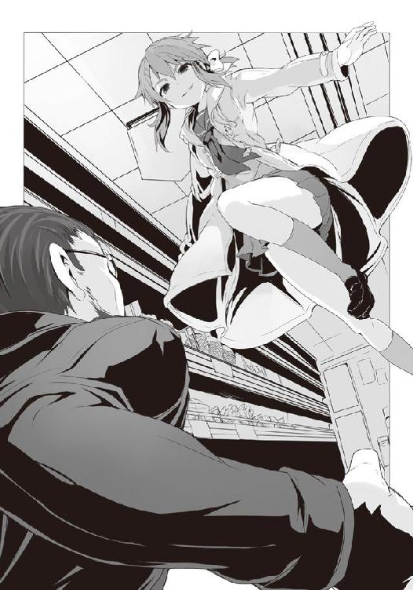
だが、そう思ったのは僕だけじゃなかった。下敷きにしていたウルフヘアが僕に抱きついてくる。耳に鼻息がかかるほどに密着されると、彼女は体を回転させ、上下を入れ替えた。そして即座に腕を解き、床にその手を着き、体を持ち上げようとするのだが、当然そうはさせない。
今度は僕が彼女に抱きつく。......だが、これが失敗だった。彼女のダウンジャケットの前が開けられていたせいで、制服越しのブラと胸の感触が僕の頬に来てしまった。温かく、そして柔らかくも跳ね返してくるような弾力に、僕は食欲ではない欲望を刺激され、腹の虫の加護が一気に弱まってしまう。普段なら強靱な腹の虫がそんなものを吹っ飛ばすのに、今日は白粉のせいでいろいろと弱まっていたから意識がそっちに......！
ヤバイと思って息を大きく吸って腹に力を入れようとしたものの、香水等とは違う、ほのかに香る女の子の匂いが鼻に滑り込んだ瞬間、一気に力が弱まり......もう、ダメだった。
頭頂部に叩きつけられるウルフヘアの肘打ちに、僕の意識が一瞬飛ぶ。しかしその一瞬で体から力が抜け、僕は床に一人倒れた。
「この《変態》！ もう、ホントしつこいんだから！」
ウルフヘアが僕から離れ、立ち上がるとともに弁当へ手を伸ばす。坊主が彼女の足にかろうじて手を伸ばすものの、それを踏みつけ、ウルフヘアは最後の弁当を手に入れたのだった。
鬼塚は眼鏡をかけ直し、咳払いを一つ。そして、同じく弁当を手にする白粉を見据えた。
「ようやくカナリアの歌にあった能力を見せてくれましたね、幽霊。前回は私を警戒してあえて能力を使わずに負けたのでしょうが......今回その力の片鱗を見せた以上、あなたの攻略はもはや時間の問題ですよ。次に戦場で会う時は、是非とも覚悟を。それでは」
鬼塚は言うだけ言って、レジへと向かっていく。
「......月桂冠になってもおかしくはなさそうなエビのお弁当に、素晴らしいネタ......今夜は大漁ですね。そして彼のあの様子からするとまた次の争奪戦でも......ククッ......楽しみです」
白粉は、ニチャリ、と、不気味な笑みを浮かべて鬼塚の背を見送る。
......鬼塚よ、覚悟するのはお前の方かもしれんぜ......。
僕は同じ男として、彼にそう告げずにはいられなかったが......ウルフヘアの攻撃で意識朦朧としていた僕の口はうまく言葉を紡げず、あばうばうばうばー、みたいな自分でもわけのわからないことを口走るだけだった。
「......さっき、腹の虫の加護、相当弱かったみたいだけど......大丈夫？」
弁当を持ったウルフヘアが僕を見下ろし、ちょっとだけ心配げに、そう言った。
......腹の虫が弱まってるのわかってんなら、少し手加減しろよ、もう......。
２
今日は何だか寝癖が凄くて、髪型がうまく決まらなかった。髪というのは、どうして日によってこんなにその表情を変えるのだろう。自分が気にしすぎているだけで、他人からすれば同じに見えるのかもしれないけれど、気にせずにはいられない。
いっそスプレーとかでガチガチに固めてしまえば楽だろうが......さすがにクールじゃない。
あ、クールといえば、セガにもそのワードにまつわる逸話がある。世界中の誰もが認めるように、セガのハードというのはそのどれもがクールの極みであり、その名称、形状、色合い、男の子の心を擽る様々なアイディアがぎっしりと詰められた夢のマシンだ。言うなれば〝メガドライブ〟や〝セガサターン〟そして〝ドリームキャスト〟といったハード名を〝クール〟の代名詞に置き換えたって恐らく何の問題もないはずだ。
例えば〝今日の君の髪、超盛りまくって、素敵だね。メガドライブみたいだよ〟とか〝彼って本当に頭脳明晰で、脳が二個あるんじゃないかっていうぐらい、もう最高にセガサターンなの！〟っていう感じに使っても何ら違和感はない。むしろクール感が強調されているじゃないか！ そして、さらに〝この間発売されたＮ社のゲーム機って、超ドリームキャストだよね。一〇年経ってようやく追いついてきたって感じ。コントローラにモニターってもう完全にビジュアルメモリを意識し......〟うん、よし、さすがにまずい匂いがしてきたので話を戻そう。
クール。この言葉によって、アメリカのメガドライブは数奇な運命を辿ることになったのだった。そもそもメガドライブにも逸話が多く、テレビに繋げるＡＶ端子の音声はモノラルなのに、何故か本体の前面についているヘッドホン端子ではステレオだったりと面白い作りだったりする。実はこれ、当初の設計では普通にステレオ出力だったものの、完成間近になって急に販売価格を下げることになり、本来備わっていた幾つかの機能をオミットせざるを得なかったという内情があったりするのだけれど......まぁ、それを語るのはまた別の機会にしよう。
クール。メガドライブという名前、デザイン、性能......その全てが僕らからするとクールなのだけれど、どうも当時のアメリカ人の感性にはそうは受け取られなかったらしい。セガ・オブ・アメリカ、つまりアメリカのセガ支社では、これを「クールじゃない」と判断し、コントローラのスタートボタンの色等の変更を要求したり、果てはメガドライブという最高過ぎる名称を変更したいと言いだしたりしたのだった。その結果『ジェネシス』という、まぁ、確かにこれはこれでクールな名称が候補になったものの、この商標が先に登録されていたためにそのままでは使うことが出来なかった。どうしたものかと悩んでいると、言い出しっぺのセガ・オブ・アメリカが「オレたちに任せておけ！」と自らその交渉を買って出たのだった。
その後、日本のセガ本社にその商標をゲットしたとの連絡が来たものの......その手段が多額の金で買い取っただけ、という......交渉でジェネシスの名を使えるようにすることを想定していた本社の人間は度肝を抜かれ、さらに怒濤の追撃として、その請求書を日本に送り付けるという荒技すら彼らはやってみせたのだった。セガは、アメリカでもセガだった。
ただ、彼らがそういった行動をしたおかげかはわからないが、ジェネシスはアメリカで凄まじい大ヒットを遂げ、これによりアメリカにおけるセガの地位を盤石にしたのは間違いない。
クールか否か、それが如何に重要なことなのかおわかりいただけたかと思う。つまり僕の今朝の髪型がなかなか決まらず、シャワーで頭をリセットさせたりして遅刻してしまいそうな今の状況は致し方ないことなのだ......といった、担任に告げる遅刻の言い訳を一生懸命考えながら、僕は学校への道を全力疾走していた。
吸い込む息は痛いほどに冷たく、空はまだ青みに薄く、春はまだまだ遠い。そんな通学路には僕の他に生徒は誰もいな――いや、一人いた。僕の前を走る、小柄な女の子。白いダッフルコートと後ろでまとめた髪......白粉だ。
「珍しいな、白粉。いつもは早めに登校しているくせに」
「あ、佐藤さん、おはようございます。......いえ、実はちょっと夜更かしをし過ぎたというか、徹夜しちゃって......」
白い息を弾ませながら、彼女はそう言うのだけれど......言われてみればいつもは小動物のようなクリクリとしたその目は、どこか暗く淀んでいるように見える。クマが濃いのだ。
「昨日、部室から帰ってからずっと執筆していたんですが......いやぁ、来ましたよ！ 久々のヒットの予感です！ もうね、ライバルでありながら同じ事件を追う仲間......そこで生まれる微妙な関係性がその後の肉体的な繋がりに至る過程がいい感じになってですね！ そう！ 二人の追跡者が一つになる時、事件の真相が明らかになるんですよ！ 無論これには刑事の捜査と探偵の推理、即ち男たちが協力し合うってのと同時に当然肉の棒と穴でイエス、ドッキング!! っていう意味もあって――あぅ!!」
どうやら徹夜明けというか、執筆時のテンションのままで女子寮を出てきたようで、気分がまだ切り替わっていないのだろう。僕は次々に早朝から卑猥な単語を吐こうとする化け物を抑えるために、後ろ髪をいつものように引っ張った......のだけど......。
「ただせっかくのこのネタ、普通に筋肉刑事の話とするにはちょっともったいなくってですね、ここは一つ劇場版というか特別編的な扱いにしてみようかと思ったんですよ！ その名も『ドミノ・エフェクト 〜筋肉刑事ＶＳ筋肉探偵〜』!! キャッチコピーは、〈命を並べろ、運命を崩せ〉ってしてですね、先ほども言ったように非常に複雑な、そして運命に翻弄されし哀しき漢たちの事件を刑事と探偵がそれぞれ追っていくのですが、お互いに手詰まりに！ しかしそこで煙たがっていた相手と組むとそれぞれの情報、能力により、全ての謎がドミノ倒しのように次々に解けていき、事件はさらなる展開を見せ、いよいよ犯人が企てた計画の全貌が明らかになっていくのです!! そして最後、犯人の魔の手は、文字通りにサトウさんの肛門に伸びてあまりに強引なフィストフ――あぅ!!」
「ハッスルするにもほどがあるぞ......何朝っぱらから口にしてはいけない言葉を......」
とりあえず白粉のテンションが幾ら後ろ髪を引っ張っても下がらないので、やむを得ず掴んだまま、学校まで行くことにした。
......いつだかの合宿の時と同じく、犬の散歩みたいになってしまっているな。
そのまま僕らは校庭、そして校舎へ。チャイムはまだ。どうやら無事に間に合いそうだ。
白粉とは廊下で別れ、僕たちはまだ教師の来ていないそれぞれの教室へ入ったのだった。
「よし、セーフだ！」
「いえ、アウトです」
間に合ったのはいいけど、セガの話を担任やクラスメイトに強制的に静聴させられないのは少し残念だなぁとか僕は思いながら――白梅様の平手を喰らってぶっ飛びました。
凄いよね。教室の扉を開けたら平手だもんね。バネ仕掛けかっていうぐらい的確なタイミングで、かわしようがないっていうか、白梅様の平手って速いよね、音速超えてんじゃないの？
強烈なそれを喰らった僕は、廊下へ吹っ飛び、冷たい壁に叩きつけられた。
おはようございます。そうさらっと言ってのける白梅様は今日もいつものようにお美しい。艶やかで、真っ直ぐな黒髪を腰のところでかわいらしい白いリボンでまとめられており、それが歩む度に揺れる様など心が洗われるようで、その、えっと......何で、僕いきなり殴られたの？
「ＨＲが始まってしまいますので簡潔にお答えいただきたいのですが......アレは何ですか？」
白梅様は廊下に倒れる僕にギリッギリでスカートの中を覗かせない距離で立ち止まり、その研ぎたての日本刀のような鋭い瞳でこちらを見下ろしていた。......チッ、あともう一歩ぐらい近づいてくれてもいいものを。彼女の白いニーソと肌から覗くパンチラ、いや、パンティーラのサービスぐらいあってもよかろうに。スチュワーデスがファースト・クラスの客に酒とキャビアをサービスするように、とは言わないからさ。
「あ、アレって......なに？」
「窓から見ていました。佐藤君、あなた白粉さんと一緒に登校......いえ、それは良くとも彼女の髪を掴んでいましたよね？ ......何しているんです？ 全然セーフじゃないです、アウトですよ。ふざけるにしても限度があります。ですので......怒っていいですか？」
「いや、あれはその......むしろ僕が白粉の魔の手から世界を救済しようとしていたぐらいで......信夫っ!!」
はい、白梅様の足先が僕の腹に送り込まれました。凄く痛いです。えぇ、悶絶ってやつです。......っていうか誰だよ、信夫って。
「ま、待って......待ってくれ！ わ、わかった、ごめん、反省する、反省するから待って！」
もう一発来そうな気配を察し、僕は慌てて言った。
「......もうすぐＨＲですし、今はこれぐらいにしておいてあげます」
え、何その後で続きをしよう的なニュアンス。そして微妙に感じるこの視線は......チッ、教室の中から内本君が物欲しげな顔をしてこっちを見ていやがる。変態め。
「もうああいったマネはしないでください。いいですね？」
「で、でも......あれぐらいやらないと僕がセクハラされるっていうか......。それに多分あの男の話だと、アイツ、今日も白粉に付きまとうはずだし......そうなると当然、明日明後日と......」
また新しいネタがキちゃいましたよ！ サト......サイトウ刑事とマッチョ探偵がもうすんごい所で、その、アレです、超絶ハードなプレイを繰り広げ――以下略、といった奴の嬉々としたセクハラが僕を襲うのは間違いないのだから、もしあの化け物に触れてはならぬとなったら、どうやって奴から身を守ればいいのか。もう事故に見せかけて亡き者にするぐらいしか......。
これは困ったことになったぞ。でもまぁ常時監視されているわけじゃないだろうから......とか考えながら立ち上がると、白梅がおかしな顔をして僕を見ていた。
得体の知れない虫を自分の部屋の中で見つけてしまった時のような、驚きと嫌悪感と、そしてかすかな焦りと不安が彼女の端整な顔に浮かんでいる。
「......佐藤君、今......何て言いました？」
●
「幽霊......何と的確な名なのだろう。重さを感じさせずにかの狼は地を駆け、空を舞う。その気配を感じ、目にも映る......それなのに我々の拳は捉えきれずに空を切るばかり。いるのはわかっているのに、手が届かないというあのもどかしさは......いや、それよりも真に恐ろしいのは彼女のスタイルだろう。戦闘を避け、奪取にのみ賭ける手法は古来より存在してはいるが、あそこまでおぞましげな気配を漂わせる狼はこれまでいたと言えるだろうか。無論、ゾクリとさせる狼はそれなりにはいた。だが、視線のみであそこまで嫌悪感を与え、触れられてもいないのに肌にぬめるような冷たさを味わわせ、こちらの腹の虫の力を削ぐ......。半値印証時刻前段階からすでに彼女は術を展開し、その場の狼を恐怖のどん底へと突き落とす......。ある意味では我がライバルのウルフズベインと同じ、毒使いの類なのかもしれない」
鬼塚は白い息と共に演説のように語る。一月の夜はいまだ寒かった。
うーん、と並走する従弟は首を捻る。一昨年よりも体は厳つく、一回り大きくなっている。正しいスクワットのやり方を教えたが、それが功を奏しているようだ。
「従兄さんの読みが正しいのかどうかはわからねぇんだけどよ、そもそもＨＰ同好会にそんな奴いたか？ 俺の記憶じゃ、魔女の犬というともう一人の男の方しか記憶にねぇんだが。女もいたような気もしないわけじゃないが、そんなクセの強い奴じゃなかったはずだ」
「ふむ？ ということはわずかな期間で能力を開花させましたか......いや、単にお前が気がつかなかった、ということも考えられる。お前はそれほど頭が良くなかったですからね」
「冗談よしてくれ。これでも一応丸富だぜ、俺」
勉強が出来るということと頭の良し悪しはまた別の問題です、そう言って鬼塚は笑い、従弟の頭を乱暴に撫でてやった。
「なに、今宵これから行くアブラ神かジジ様の店で真実が知れることでしょう」
「そうかい。......それで、そいつの攻略法は？ もう見出したのか？」
「えぇ。能力の解析はほぼ終わりました。今宵、それを証明してみせますよ。もはや私が奴に負けることはありません。......見えてきましたよ」
ランニングを続ける鬼塚と従弟の前に、煌々とした照明を受けるアブラ神の看板が顔を出す。
「ちなみに、その男の方、佐藤という奴だったかな。彼は確かにそれなりでしたが、二つ名を持っているようには思えなかったんですがね？」
「いや、アイツは二つ名持ちだよ。それもなかなか厄介な奴でね、何度か当たったが、その力量にムラがあるんだ。......お、噂をすれば奴......と、何だ、知らねぇ奴がいるな」
従弟が視線を向ける方角に、鬼塚も視線をくれてやると黒いパーカとスカジャンを重ね着した、佐藤だ。そしてその横にはかの幽霊、そしてもう一人初めて見る女の姿があった。
薄手の白いダウンコートを羽織り、夜の暗闇であってもわずかな光で艶を見せる真っ直ぐに長い黒髪を腰の辺りで白いリボンによってまとめた烏田高校の女生徒。頭の上に載せたコートと同色のふんわりとしたキャスケットが可愛らしかった。
あれは狼なのか？ いまだ店外とはいえ、彼女が発する気配はどう見ても一般人のそれ。
新たな謎の登場に、鬼塚は己の顎に指を這わせた。
○
何事にも適材適所というか、合う合わないの組み合わせがある。例えば和食にサラダってのは少々厳しい。意外に思われるかもしれないが、日本は昔から農作物が豊かではあったものの、野菜を生で食べる習慣は本来の和食においては薬味のそれを除くとほとんどなかった。
実は明治時代にようやくその文化が知られ、戦後の食事の欧米化及び化学肥料による寄生虫の少ない農作物の生産に伴い普及したものなのだ。ただ、今なら和風ドレッシングなどがあるように、和食に合わせても問題ないのではないか......そう思う人もいることだろう。だが、現在の和食の基本はどうしても肉食が禁じられていた時代のそれであり、和の調理法による魚介類と生野菜は馴染みが悪く、肉食の場合のくどさを和らげるような働きをせずに、むしろ主菜の生臭さを強調してしまう。実際、日本で一般的に生野菜を食べる、いわゆるサラダ的な食べ方をする最初の切っ掛けは、とんかつの元になったイギリスの牛肉料理であるカットレットの付け合わせであることからもわかるように、やはり生野菜には洋食なのだ。
......んで、ここでようやく本題に入るのだけれど......僕の目の前の光景が違和感バリバリで、すげぇ。スーパーマーケットと白梅って凄いミスマッチだった。いや、あのビッグ・マムが経営しているような高級店というか、ちょっと生活に余裕がある主婦の皆様が御用達としそうなお洒落系なスーパーとかなら似合いそうだけれど、庶民感バリバリの、三割引きシールが貼られた総菜・弁当コーナー前を歩く彼女の姿は......まさに和食にサラダ、という感じである。
どちらもとても美しく、素晴らしい価値を持つ。だが、それら二つはなかなかに〝和〟を形作らない。水と油とまではいかなくとも、どうしても何だかしっくりこない。
「白粉さん、お弁当は確認しました。この後はどうするんです？」
前をちょこちょこと歩いていた白粉は「えぁっと......」とやや困惑げな顔で振り返り、優しげな顔で微笑む白梅を見やる。
「この後は一旦離れて、近すぎず遠すぎない場所で他の商品を見るような感じで、半額になるまで待つって......その、そんな感じ......ですよね、佐藤さん」
助けを求めるように言われ、僕は頷く。だが視線は二人に向けずに弁当へ。......気まずい。
今宵の半額に至りそうなアブラ神の弁当は、四つ。そのどれも個性的だが、その中でも一際なのが『焼きそばＶＳ焼きラーメン 〜どちらが勝っても炭水化物祭り〜』という、お遊びが過ぎるぞ、とさすがに言ってやりたくなるような焼きそばと焼きラーメンの弁当だ。それって総菜じゃねぇの？ と言いたくなるが、何気にこの弁当、二つの麺類にさらにご飯がついているという神をも恐れぬ禁断の仕様なのだ。炭水化物が三つ、ドドンと大盛りで居座っているこの暴挙、もはやアブラ神の正気を疑うレベルである。
うん、それは華麗にスルーしてその横の『ふっくらとしたカレイの煮付け弁当』という、打って変わったまともな弁当を狙おう。ご飯が雑穀米だったり、お店のサンプルのように煮崩れしていないカレイの身が僕の心を惹きつける。
僕と白粉は気まずい気分のまま、白梅を引き連れ、缶詰コーナーのある島棚へと場所を移す。その途中、肌で感じた店内の狼の数は七。この中では茶髪の存在が気になるところで......ん？
白粉が短く、あっ来た、と声を上げ、エントランスの方を見やれば、そこには鬼塚の姿。
「あの方が、白粉さんに付きまとっているという、鬼塚という男ですか？ ......そうですか」
隣にいるだけで身震いしそうな気配を発しながら、白梅が言った。頭に載っているかわいらしいキャスケットだけではそのおぞましげな気配は中和出来ていなかった。
......なお、簡単に現在僕らの置かれた状況を述べておくと、朝方鬼塚が白粉をやたら意識して付きまとっている、ということを僕がポロリしたら、何か白梅様が肩を怒らせついてきた、という大変わかりやすい展開になっております。
「アレ？ 横にいるのって......」
鬼塚の隣を歩く男が一人。ダウンジャケットを羽織ったジャージ姿で、カゴを手にしたガタイの良い男の姿が。――ジョニーだ。
鬼塚たちもまた視線を感じたのか、店内外周を歩きながら、止まることなく不敵な笑みを浮かべ、白粉と僕を見てくる。それから白梅の視線に気がついたのか、彼女に目をやると二人は共に訝しげな顔をして立ち去っていった。
「ジョニーの奴、何で......。あ、そういえば鬼塚、従弟の家で寝泊まりしてるって言ってたか」
ジョニーと鬼塚、二人を意識して比べてみればどことはなしに似ているような気がした。体格というか、筋肉の付き方というか、全体のシルエットが確かに似ている。
「あの眼鏡の方が、鬼塚という人ですか？ ......わかりました。では先に彼とお話を――」
「あ、待って白梅。もう、始まる」
スタッフルームの扉が盛大な音を立てて開き、アブラ神が現れた。こうなってしまっては話をする時間などない。一応、道中半値印証時刻云々についての話はしてあったのと、店内の気配が変わったのを白梅自身感じたのだろう、彼女は小さく舌打ちしてその場に止まった。
「あの......梅ちゃん、本当に、今日、参加するの......？」
「鬼塚という男が白粉さんに突っかかってこなければ、特に何もしません。後ほど少しお話しさせていただくだけです。......ですが途中で彼が接触しようとしたら、それなりに動きます。白粉さんは、気にせずにいつものようにしてくださいね。わたしのことは心配いりません。小説のいいアイディアが湧くといいですね」
途中まで鋭かった白梅の目は、後半になるにつれて柔らかな、まるで我が子を見守る母親のそれのようになっていった。
......あ、そうか、ようやくわかったぞ。白梅がいることのこの気まずさ、何かと似ていると思っていたら、アレだ、子供の遊びに親が交じってきた感じなんだ。
子供同士の遊びっていうのは、やっぱり独自の空気ってもんがあって、そこに部外者が交じると一気に気まずくなるものだ。しかもそれが誰かの身内、つまり年齢も違えば、生まれてからずっとその子供の〝素〟を見続けてきた人間が混じるというのは、とにかく気まずい。昔、僕の親父が赤井ちゃん宅で行われたクリスマス会に平然と参加してきたテロを思い出す。
ただまぁ、今回はあそこまで悲劇的な展開にはならないのだろうが、何か気まずいのは確かだし、不安なのだ。狼ではない者が半額弁当争奪戦に参戦しようものならどうなるのか......その身でもって実際に体験した僕や白粉としては、白梅の身を案じずにはいられない。
それとなく僕と白粉はお互いの顔を見やり、不安げな表情を見せ合った。白梅ならうまくやれるような気もするし、そううまくいかないような気もする。
店内の空気が張り詰める。アブラ神が靴底を鳴らし、スタッフルームへ。一礼し、そしてその中へ。扉が閉まり......戦いが始まる。
白梅のことは一旦頭の外へ。腹の虫に語りかけ、体に加護を行き渡らせる。前段階で集中していなかったので、十分な力ではないが、それでも僕は扉が閉まる音とともに地を蹴り、白梅の脇を抜け、床を滑るように低い姿勢で駆け出した。驚く白梅を後に残し、弁当コーナーへ。
今回、突出する狼はいなかった。同時に僕と茶髪、そして名も知らぬ狼二匹が最前線に躍り出る。わずかに僕と茶髪が早いか、そう思った時、彼女の視線が僕に何かの合図を送ってくる。
接近。手を伸ばせば彼女の実り豊かな胸に指先が届きそうな距離になった時、僕らは叫んだ。――カレイ！ ――カツ！
狙いが違う、即ちそれは現状敵対の必要がないということだ。僕らは視線で共闘を誘い合う。
茶髪こと《シーリーコート》が飛び、僕はその下を潜り抜けるように身をさらに低くする。
迫っていた他の二匹の狼に茶髪は跳び蹴り、僕は腰狙いの掌底をかます。それは完全に二匹の狼の隙を突く。彼らを吹っ飛ばし、転倒させた。
僕は攻撃が終わると同時に床をしっかりと靴底で捉え、そこを軸にして今一度弁当コーナーへ向かって飛び込......もうとしたのだが、視界が無数の格子によって区切られ、そして頭頂部に鈍い衝撃。背骨が軋む。巨人に頭を掴まれ、力任せにねじ伏せられたようなそれに抗い切れず、僕は背から地面に落ちる。だが、それでも床に落ちる直前に反射的に顎を引き、後頭部の直撃だけは避けた。
仰向けに倒れた僕の頭上を大柄な男がカゴの縁を握り締め、飛び越えていく。ジョニー。奴のカゴ技は相変わらずのパワーだ。彼と茶髪が衝突し、そして他の狼が群がってくるのを気配で感じながら、乱戦が形成される前に僕は跳ね起きる。直後に背後にぶつかってくる狼たち。
慌てて体勢を整え、近づいてきた一匹を殴り飛ばし、再度弁当を狙おうとしたのだが......そこで陳列棚に後ろ腰を付け、弁当を守るようにして仁王立ちしていたジョニーと視線が合う。
立て直しが早ぇな！ そう叫び、ジョニーは手にしていたカゴによるロングレンジの〝突き〟を放ってくる。防御しつつ、僕はやむを得ずその場でジャンプ。無理に受けずに自ら後方へ飛ぶようにして攻撃を喰らった。それによりダメージはほとんどないが、体はふわりと浮き上がり、乱戦の外へと飛び出してしまうのだった。
まぁいい。揉まれながら戦うより、外周から攻める方が僕としてはやりやすい。
上空で身を捻り、着地に備えていると、その下を白粉が、そしてそれを追い掛けるようにして鬼塚が駆け抜けていった。
床に着地。膝と手をついた時、その傍らを何かが走りすぎていく。白梅だ。彼女はその顔に戸惑いと、しかしやるしかないという覚悟の表情を浮かべ、乱戦に走り込む。
彼女から発せられる気配に、腹の虫のそれは......ない。
「やめろ、白梅！ やっぱり無理だ！」
僕の声は果たして彼女に届いたのだろうか。どちらにしても彼女を止めることなど出来はしないのだというのは、叫びながら僕自身わかった。
乱戦の中に道を見出した白粉が人混みに飛び込もうとしたその直前に鬼塚の手が伸びる。そしてさらにその鬼塚の動きを見て取った白梅が、奴の腕へ鋭い拳を放った。
その攻撃はうまく繰り出したように、僕には見えた。だが、白梅の拳は鬼塚の上腕三頭筋の前に弾かれる。いつもは鋭い白梅の目が見開かれ、彼女の顔が驚愕にゆがむ。
「何ですかね、この目障りな雌犬は。この私に恐れを抱いた幽霊のヘルプですかね？」
攻撃は意味をなさなかったが、白梅の攻撃によって白粉は鬼塚の手に触れられることなく逃れ、乱戦の中へ。それにより鬼塚の意識が白粉から殴りかかってきた白梅に向く。
鬼塚、ゴミを払うかのように腕を振るう。格闘技の経験があるのか、白梅は綺麗なフォームで受けの体勢を取るが......ここは狼たちの狩場。腹の虫が何より意味を為す半値印証時刻。鬼塚のさして強力とも思えない一撃は、白梅の防御を容易く崩し、彼女の腹部を強烈に叩いた。
出かかった悲鳴を白梅はプライドで噛み潰し、小さな呻きだけを漏らし......いつも優雅に、そして尊大さすら漂わせていた少女はいともたやすく吹っ飛んだ。
弁当コーナー前はおろか、島棚の間の通路まで飛び、そして床に叩きつけられ、転がった。
梅ちゃん！ 白粉の声が乱戦の向こう、陳列棚付近から聞こえ......そして、彼女は半値印証時刻ではあまり見ない動きをする。最前線にまで達していたのに、白粉はわざわざ乱戦の上に飛び出し、狼たちの頭や肩を蹴りつけるようにして、外周の鬼塚へ上空から襲いかかる。
しかしそれは半額弁当へ繋がる動きではない。いまだ腹の虫の加護が働いてはいても、そのポテンシャルを最大限には使えはしない。さらに彼女は元々戦闘を得意とするスタイルでもない。
そしてきっと、それらを全てわかった上でなお、白粉は鬼塚を強襲しようとしているのだ。
「もうあなたの分析はこの退魔師の能力により終わっているのですよ、幽霊！ その証拠を見せて差し上げましょう！」
鬼塚は白粉を引き付け、そしていつぞやの夜のように、彼女へ向かって、対空アッパーを繰り出す。白粉、それを手の平で受けようとするものの、拳が彼女を捉えない。傍から見ていた僕も、そして白粉もまたハッとした。鬼塚は以前と同じように拳を繰り出しつつも、それと同時に己の腰を、重心を落としたのだ。
そして突き上げていた拳を引くと同時に、もう一方の手を拳として白粉へ放ち、かつ、下半身の筋力を頼りに強引に重心を持ち上げる。
白粉が対処しようとしていたのとは違う位置から拳が、急激な伸びをもって彼女を襲う。
白粉は歯がみしつつ、これに対応は不可能だと即座に判断。防御するも、体重の軽い彼女で、しかも空中である。接触した瞬間に、白粉の体はきりもみしながら、店内外周にある食肉コーナー方面へ殴り飛ばされた。
素早く落とした重心を間髪をいれずに持ち上げる動きは大したものだが、しかし、本質はそこではない。鬼塚は、完全に白粉の読みを逆手に取っていたのだ。彼は上空から迫ってきた白粉に対し、あえて同じような対応を見せた。そうすれば当然白粉もまた一度は彼を翻弄したように、同じ手段を用いてくるであろうと、鬼塚は読み、今度はそれに対するカウンターを用意していたのだ。
ゴーストバスター、不可解な謎を解き明かし、対処する......まさにその名の通りに、彼は白粉の技を読み切った。たとえ白粉のそれが腹の虫の加護が弱まる怒りに任せた行動であったとしても、この短時間で彼女の技に対抗策を出してくるのは驚嘆に値するものだった。
「ナッハハハッ！ ＨＰ部、いや、ＨＰ同好会も腕が落ちたものですね！ 昔のウルフズベインや魔導士のような狼はさすがにもういな――」
いや......先輩も、そして僕もいるさ。そう僕は心の中で呟く。
「従兄さん変態が来る!!」
ジョニーの不愉快な声が耳に届いた時には、僕はすでに鬼塚の懐に飛び込んでいた。
着地した体勢からそのまま腰を上げることなく地を蹴り、間合いを詰め、そして鬼塚の懐に身を捻りつつ密着したのだ。
抉るような左の肘打ちを鬼塚の鳩尾へ叩き込む。そのまま体を捻るように回転させ、奴の顎へ右の掌底。巨漢が膝をつく。そこを僕は左足で蹴り上げる。しかしその爪先は首を捻ってかわされる。だが、それで凌げたと奴が安心した瞬間こそ、僕の狙いだった。
振り上げた左足に引っ張られるようにして体を浮き上がらせた僕は右足を鬼塚の左肩に乗せる。そして、そこを支点にして......振り上げていた左足を全力で振り下ろした。遠心力を加え、そして視界の外から、かつ、防御のしようのない鬼塚の後頭部に踵を叩き込んだのだ。
これでもうこいつは終わりだ、そう思ったのだが......。
「なるほど、この技の繋ぎ方。特に蹴りに体を引っ張らせるのは、烏頭みことの得意としたところ......継いだのですね。彼女の技を」
退魔師は倒れなかった。蹴られた衝撃に身を任せて床を転がりながらも、即座に蹴りを放ってくる。先ほどとは逆に僕が背後から襲われる形になり、防御も取れず、吹っ飛ばされた。
「最初の二連撃で彼女を思い出して、反射的に全身を硬直させて正解でしたよ。実に懐かしい」
固い床の上を転がりながら鬼塚の言葉を聞くも、完全に油断したところを攻撃されたために、予想以上にダメージがあって立ち上がれず、僕は床の上でしばらく呻いた。
そしてようやく立ち上がれるコンディションまで回復した時、視界の端に何か白い物が飛んでいるのが見えた。白粉だ。
白粉がやや困惑した顔で乱戦の上を舞っている。そしてその近くには僕のことなどもう忘れたように、乱戦の中で暴れ回る鬼塚の姿。さらに驚くべきことにそれを追う白梅の姿もあった。
しかし白梅は立っているのが精一杯という有様だ。それでも彼女の目は鬼塚を追い、白粉から引き離そうとしながらも、乱戦の中で他の狼たちに翻弄されるばかり。
「辞めろ白梅！ 君じゃ無理だ!!」
乱戦の上空にいる白粉は鬼塚を倒すべきか弁当を狙うべきか、はたまた白梅をこれ以上巻き込まないために身を引くべきか......気が割かれ、集中出来ていない。
何かを決断したのか、白粉は乱戦の中に着地しようとした。だがその際、近くの狼が他に向けて放った大振りな蹴りにかすかに接触。バランスを崩し、彼女は膝をついてしまう。
そこに鬼塚が嬉々として襲い掛かった。他の狼をその肩で押しのけ、拳を振りかぶる。
だが、それをさせまいと白梅が遮二無二距離を詰め、鬼塚の脇腹狙いで正拳突きを放つ。普通ならば一撃必殺になり得るのだが、しかし、鬼塚は白梅のそれを喰らってもなおよろめきもしない。ただゴミを見るような目で白梅を見やり、そして白粉に放とうとしていたその拳を白梅に向けただけだった。
まずい。僕は反射的に立ち上がり、乱戦の中へ飛び込んだ。
先ほどの攻撃が効かなかったからなのか、正拳突きはどっしりと重心を落としてのそれであったために、白梅は攻撃が来るのを愕然と見つめるばかりで反応出来ない。そんな彼女に、僕は横合いから飛びかかり、押し倒す。何とかこれでかわせるはずだ。
だが、予想外のことがそこで起こってしまう。床に倒れる僕と白梅、そして鬼塚の拳の間に白粉が飛び込んだのだ。白梅を、守るために。
防御も何もかもを捨てた動きであったがために、小さな体に大きな拳が無慈悲にめり込む。
白梅が甲高い声で彼女の名を呼ぶものの、白粉は一言も発することなく島棚の間にその身を飛ばされ、そして床に数度バウンドする。
「大厄の闘牛士を打倒せし、幽霊......さほどのことはないっ！」
止める間もなく、白梅が僕を押しのけ、勝ち誇った鬼塚に飛びかかる。
だが、その彼女にもまた、巨大な拳が迫り、そして――。
「そこの棚にカロリーメイトを買い置きしてある。その娘らが目覚めたら夕飯代わりに一個ずつ持っていけ。くれてやる。オレの好きなチーズ味だ。何ならソイジョイのアプリコットもあるからそっちでもいい。......そういえば、一年ぐらい前にもお前に言ったか。なら、わかるな」
そうニヒルな笑みを残し、アブラ神はスーパーのバックヤードであるそこ――煙草臭い休憩室を後にするのだった。
僕はその扉が閉まるまで深く頭を下げ、しっかりと閉まった音が聞こえてから顔を上げる。
室内を見渡した。さして広くはない部屋の壁際に並ぶロッカー、ソイジョイやカロリーメイト、飴等が入った棚。新聞と週刊誌が上に載る往年のジャンプのコミックスが並ぶ小さな本棚。ガラスの灰皿の載ったテーブルと、それを挟む二つのソファ。
そして......それぞれのソファに横たわったまま意識のない白粉と白梅。
二人とも、鬼塚にやられた。白粉は大丈夫だろうが、白梅は少し心配だった。腹の虫の加護なしでやられた経験を持つ身からすると、あれがどれほどのものであったのかよくわかる。
......結局僕は何も出来なかった。半額弁当を獲ることも、彼女らを守ることも。だが、そんな過去を悔やんでいても何も始まらない。何も、変わらない。大事なのは今、この瞬間からどうするのか。どう、行動するのかだと、僕は思う。たとえここの掟だったとはいえ、目の前で僕のよく知る女の子が痛めつけられ、意識を失っているという事実。
それらを踏まえ、今僕は何をするべきなのか、それを考えるべきなのだ。
......そう、密室に意識のない二人の女の子と僕がいるというこの状況において、何をするべきなのか!! それを考えるべきなのだっ!!
落ち着け、落ち着くのだ、ヨー・サトウ！ 真のジャズマンはどんな状況であっても己の個性を失わず、見事なセッションを奏でるものだ!!
アブラ神が休憩室を出ていった瞬間から高鳴りだした鼓動を意識しながら、僕は手にしていた白梅のキャスケットを手の平で撫でる。柔らかで気持ちの良い手触りが、まるで猫を撫でる時のように僕をリラックスさせて......ムッ！ キャスケットから白梅の香りが......!! これはいかん、白梅様大好き内本君ならこの時点で絶頂を迎えかねない。落ち着け、落ち着くのだ。
僕はそれをテーブルの上に置き、今一度己の置かれた状況を整理し、そして確認する。
狭い個室。グッタリとしてソファで眠る白粉と白梅梅。思わずフルネームで確認したくなるほど、この状況に僕は興ふ――困惑していた！ だってよく考えてみろよ!! 僕以外意識ある奴がこの場には誰もいないんだぜ!? 白粉はともかく、目の前に同級生の女の子が眠っているんだぜ!? 誰も邪魔する奴なんていないんだぜ!? 言うなれば――僕、今、神だぜ!?
そう、神なんだよ!! この瞬間ッ、この場においてッ、彼女らに対して!! 何だって出来るんだ!! 世界を股にかけて大冒険してドラゴンボールを七個集めたりしないとまずありえないシチュエーションが目の前に存在しているわけなんだよジョニー！
仮に今知り合いから電話がきて「今何してる？」と問われれば、僕はこう即答するだろう。――神になってる、と。
僕は生唾を飲み込むとともに、ソファで眠る白梅様の横に膝を着き、彼女の顔を見やる。
いつもは生ゴミか、それをあさっている豚を見るような彼女の目は、今は閉じられ、体の痛みによって少し苦しそうな表情をしていた。
......ムッ、彼女のサラリとした髪が顔に。まつげや唇に触れて、何だか邪魔そうだな。そう思い、僕は指先で彼女の髪をそっと払う。その際に触れた彼女の頬――何というきめの細やかさだろう。一瞬でも普通とは肌質が違うのがわかるほどに、素晴らしかった。かさつきなんてなく、年が明けたとはいえまだ冬の趣である今であっても潤いが満ちていて......ハァハァ。
そして、何て上品な形をした唇だろう......。つやつやとして、見ているだけでそれがどれだけ柔らかであるのかを見るものに考えさせる。あぁ......普段僕を追い詰める言葉を淡々と放ち続ける口は、今はうっすらと開かれ、弱々しい吐息を漏らすばかりで......。
おおぅ......普段虐げられてばかりいるせいか、僕の目の前で白梅様がこうして全身無防備な姿でいるっていうシチュエーションが嗜虐心に火をつけようとしてきやがるぜ!!
そう、いつも殴られたり蹴られたり踏みつけられたり、内本君が羨むようなことばかりをされていたことへのお返しとして、この唇に僕のそれを重ねたとしても......きっと、世間様は許してくれるのではないか......。最悪、慰謝料的なものであると言い張れば......。
っていうか、さらっと実行してしまって後は僕の胸の中の宝箱にしまっておけば、その事実すら誰も知ることなど......ぬふぅ〜。
誤解がないように言っておくが、僕は誰彼構わずその唇に引き付けられるようなクズではない。そう、やはり接吻というものは好きな相手だからこそ価値があるわけで、その、ね。いや、普段はいろいろあるけれど、僕は白梅のことが嫌いじゃないわけですよ。好きか嫌いかといえば好きだし、彼女と家庭を築いたりする妄想を頭に描いたのも一度や二度じゃない。だから、その......つまり、これから行われる口づけというのはある種、愛のあるそれであり、決してゲスな思惑に支配されたものではないことを理解していただきたい。
むしろ王子様が眠り姫に口づけして目覚めさせる類の、高潔な愛の接吻だ。あれと同じ！ 絵本の中の王子様が許されるなら......僕だって許されたっていいじゃないか!!
「ふむ......著莪以外じゃ僕の初めての相手、あ、でも合宿で茉莉花と......って待てって！」
なに計画実行が確定したかのような展開になってんだよ！ 衝撃的な己の呟きに、僕自身が驚き、焦る。変な汗が噴き出た。さすがに変態の二つ名をほしいままにしている僕とはいえ、さすがにそれは......ねぇ？ できないよ......ねぇ？ しちゃ......マズイ......よねぇ？ 世間からの好感度が駄々スベリになってしまうから......ね？
うん..........................................バレたら......ね？
クソゥ!! バレなければ犯罪は犯罪として成立しないという悪人御用達の理論を思い出してしまったぞ!! 僕はどうしたらいいんだジョニ――――――――!!
僕はかつて一世を風靡したサッカー選手、ビスマルク・バレット・ファリアがゴールを決めた後のように......片膝をつき、俯いて眉間を指でつまむ。それはクリスチャンが神に祈りを捧げるポーズだ。その状態で僕は頭の中の天使と悪魔を戦わせる。
――さすがにそれは白梅の、いや、女性の尊厳を無視したあまりに身勝手な行動ではないのかね！ 彼女の人権を！ 心を！ どれだけ傷つけることになるか！
――バカがっ！ よく考えろ、こんなチャンスはもう二度とはないぞ!! あの白梅様が密室で無防備になって横たわっているんだぞ？ っていうかまずバレねぇって！ イけるイける!! 最悪バレても普段のお返しだって言えば何とでもなるって!!
......うーむ、やや悪魔が優勢だな。ん？ おっと、また白梅様のご尊顔に髪が。そうか、空調のせいで髪が煽られてしまうんだな。どれ、また払ってさしあげなくては......。
何故だかわからないが、僕は自分の中でそんな言葉を丁寧に連ねながら彼女の顔にそっと手を伸ばす。彼女の顔が近づいた。
こうして見れば何て綺麗なのだろう、と思わずにはいられない。朝、目が覚めると隣にこんな彼女の寝顔があれば、それはどれだけ幸せなことだろう。そう思う。
そんなことを考えていると、吸い寄せられるように無意識に僕は彼女に顔を近づけ、そのまま......。彼女の吐息が僕の唇を撫でるほどになった時、ふと、僕の頭を過るものがあった。
――ひょっとして、これって白梅のファーストキスじゃね？
いや、正確には白梅にとって男相手の、っていうことだけど。ほら、白梅パパが昔から女の子しか家に連れてこなかったって以前言っていたし、普段の様子からして男とキスしたことがあるとは到底思えない。女の子とならまだあるかもしれないけれど、よく漫画とかでそういうのはノーカウントだと言ったりもしているし......。
僕は磁石が反発するように白梅から顔を離す。勢いがありすぎて床に尻餅をついてしまった。
......危っぶねぇ!! 超危ねぇよ、今の!! ダークサイドに半歩っていうか、ほぼ全身入ってたもの!! ダメダメダメッ、そんな寝ている女の子にキスとかしたら、もう犯罪っていうレベルじゃないよ!! しかも初めてだったりしようものならバレるバレないとか関係なしにヤバイっていうかもう死刑になっても文句言えないって!! ......ねぇッ!? ハハッ!!
「ふぅ、今のはさすがにちょっと危なかったな......。全身からよくわからない汗が吹き出ていやがるぜ。......まったく、この場にいるのが僕のような理性の塊である英国紳士でなければ、どうなっていたことか。白梅のことだ、これを知れば、一緒にいたのが僕であったことを感謝するとともにお礼としてキスの一つもしてくれるやもしれないな。......ハハッ！」
どうしてかはわからないのだけれど、何かテンパると人間ってのはハハッ！ とネズミの化け物みたいに甲高い声で短く笑うよね。僕だけかな。
僕は出来るだけ今し方の最低な行為を意識しないように、忘れるように違うことを考えながら額の汗を拭う。顔を見ていたらヤバイので、僕は違う方を見ることにした。
......おっと、これはいけない。いくら許しを得ているとはいえ、白梅の奴、ソファで寝ているのに靴を履いたままじゃないか。これはいけないな。
僕は横たわる彼女のスカートから伸びる白く、引き締まった両足――白いニーソに包まれたそれを見やりながら靴に手を伸ばす。まずは右足から......そっと靴を右手で持ち、左手で彼女の足首を押さえて、ぬぽっと......。
お、おぉ......こ、これは槍水先輩のブーツほどじゃないが、なかなかのセクシャルプレイではないか!! これはいい。鼓動が高鳴り、口元によくわからない笑みが浮かびやがるぜ......！
ブーツと違い、ローファーは比較的簡単に脱げてしまうものだ。あっという間に終わってしまう。......ということで、次に左足を脱がす時、僕はトランプタワーを建てるかのような繊細かつ遅々とした動きでそこに生まれるフェチズムを一欠片も漏らすことなく堪能しつつ、たっぷりと時間をかけて白梅様のお靴を脱がさせていただきました。硬いローファーからしなやかな白梅の足がぬっぽりと、仄かな温もりとともに......ハハッ......ハァハァ、た、楽しい......。
あ、そうだ。白梅だけ脱がせていたら彼女が起きた時に何か勘づくかもしれないから白粉の方も脱がしておくか。
数分かけた白梅と違い、僕は三秒とかからずに白粉の靴を脱がすと、ソファの床に並べる。
「......さぁ、次はどうする......何をする......？」
僕は立ち上がってソファに眠る白梅を今一度見下ろした。まな板の上の鯉ってヤツだな。
さすがにキスはマズイ。だが、それ以外の......正当な理由がつくことなら......。そう、例えばこのまま意識が戻らなかった時のためにご住所、というか、家の電話番号を調べるために彼女の生徒手帳を探したりとか......。きっと白梅のことだ、校則通りに肌身離さずに持っていることだろう。胸ポケット辺りだろうか......。そうなれば当然バランスを崩してしまって僕の手が彼女の胸を鷲掴みにしてしまう可能性は十分にあるな。事故ならば、しょうがない......よね？ いや待て、それとも、スカートにあるというあの伝説のポケットの中だろうか。そこに他者が手を突っ込むなどというのはまさに下腹部にタッチする可能性を......ん？
......スカート？ しっ、しまった、スカートがあるじゃないか!? 靴を脱がす時に何故その中っつぅか、その奥に視線を移さなかったのかっ！ 僕はバカか!? バカなのかっ!?
......ク〜っ、いつも喰らっている蹴りからは考えられない白梅の意外なほど華奢な足首に加え、ニーソに包まれた足の指々への鑑賞に意識を全部持っていかれていたぜ!! 足を愉しむのはもちろんのこと、出来れば合わせ技で見ておくべきだった......ッ!!
今更やり直すのは論外だし、かといってさすがにむんずとスカートを掴んで捲り上げるようなものは犯罪だ、っていうか、ロマンがねぇ。パンチラの神髄は〝パン〟ではなく〝チラ〟にある。極論的に言えば見えそうで見えないっていう状態でも問題ないっていうか、むしろそっちの方が興奮するものだ。つまり、パンチラはロマン！ ......うーん、どうしたものか。
......だが、大丈夫だ。まだ慌てるような時間じゃない。この場における神たる僕だ。何だって出来る。......そうだな、ふむ、空調があるじゃないか。これを利用しよう。
今、これから僕がしようとしていることがわかるか否かで天才かバカかがわかるというものだろう。そう、僕同様の天才ならば十分にわかるはずだ。つまり、次のようにすればいい！
白梅をソファごと移動させ、空調の風が来る方向にスカートの裾、つまり足先を向ける。その後空調のリモコンでその風力を強弱させることで人工的にチラリズムを発生させるのだ!!
どうだ、合理的かつ天才的、人工的にチラリズムを生み出すという奇跡のアイディアだろう!?
あぁ、何だこの連鎖的に生まれ来るアイディアの数々！ 楽しい、楽しいぞ、この時間!! 何という万能感、何という未来への希望、何という興奮......!!
身悶えしそうなそれに、恐らく今の僕は相当に気持ち悪い顔になっているであろうことはわかっていた。だが、どうせ誰も見てはいないのだ。気にすることはない。
......だが、このテンションで作業を続けるのはいささか良くないな。冷静さを欠いた仕事は必ずミスを呼ぶ。一旦落ち着いた方がいいだろう。
うん、よし、体の緊張を解きほぐすためにジョジョ立ちでもしてみるか。
今の気分からするとアレだな、『ジョジョの奇妙な冒険』第二七巻の表紙にあるディオ様のポーズだろう。パワフルかつ軽やかに跳躍したその瞬間のような、このポーズ......言葉では決して表現できないので、わからない人がいたら今すぐ書店に走ることをおすすめしたい。
......うーん、同級生二人が意識を失い、その間でテーブルに腰掛け、悪い顔してディオ様のポーズをしているこの状況......なかなかにカオスだな。何も知らない人がこの光景を見たらどんなことを考えるんだろう。
......よし、何か己を客観視して少し落ち着いてきた。もう少し緊張を解すか。腰回りの自由度が低いとジョジョ立ちは厳しいからちょっとベルトを外すとしよう。
っていうか、アレだ、緊張を解そうってのにこんなもので己を縛りつけていてはダメだよな。うん、よし、外そう。っていうか、もう制服の下なんて脱ぎ捨てて――。
その瞬間、僕は、震えた。ジョジョ立ちは人体の究極の美を表現するもの。それをすることによって僕は、今の今まで己がどれほど愚かなことをしていたのかを悟り、震えたのだ。
「ぼ、僕は......僕は......何て愚かなんだ......。何バカなことを......何だよ、パンチラの神髄はチラだとかって......。っつぅかわざわざパンチラ起こさせるために白梅をソファごと移動させようとか、狂気の沙汰じゃないか......」
僕は言ってやりたい。っていうか、言うしかない。さっきまでの自分に、言い放つしかない！ ――ウブな中学生かっ!! やることが低レベル過ぎるわ!! 誰も見ていないのに、クソゥ！ 何だこの恥ずかしさは!!
靴を脱がすことでのセクシャルプレイはいいだろう。だがそれ以外、稚拙なエロを求めただけではなく、白梅梅という女性に対して僕は何て失礼なことをしようとしていたんだ......!! 何だよ、寝ている彼女にキスしようとかって、マジで最悪じゃないか!! 普通に犯罪だよ!!
人を傷つけた先にある喜びは、必ず不幸しか生まない。僕は己の愚かさ、幼稚さに思わず肩を落とした。だが、ギリギリで踏みとどまっていたことに、少しばかりの幸運をも覚える。もし先ほどまで考えていたことを実行しようものなら、僕は白梅に一生をかけてでも償わないといけないところだった。
「......もうダメだ、こんな子供の悪ふざけみたいなこと。......もうやめよう。これからは......大人の楽しみ方をするんだ!!」
そう叫ぶ僕は己のベルトを解いた。そう、白梅を脱がすんじゃない――僕が脱ぐのだ!!
暗殺された彼のミュージシャンの歌じゃないが......想像してごらん。服なんて必要ないんだって。なっ!? それがどれだけ素晴らしいことか!!
白梅を脱がしたりしたら彼女がどれほど傷つくかわかったもんじゃない！ だが!! 代わりに僕が脱げば......ほら、傷つく人がほぼいない!! みんな幸せ!!
犯罪？ 公然わいせつ罪？ ハハッ、何をバカな。ここは公共の場ではない、屋内なのだよ。っていうかぶっちゃけ、全裸で公園にいて「裸になって何が悪い！」って叫んだ芸能人がいたけれど、それも不起訴になった前例があるのだから、何も問題はないはずだ！ シンゴー！
考えてもみろ！ 今この場で全裸になり、思う存分白梅の周りでムーンウォークをかまし、ほどよく興奮が高まったところで〝ポゥ！〟とか叫ぼうものなら......もう、完全に神話として語り継がれるレベルだぜ？
親父が愛して止まないＭＤの『マイケルジャクソンズ・ムーンウォーカー』をしこたま遊んだのは、もしかしたらこの瞬間のためかもしれない。運命すら感じる。そう、僕という男の生き様が神話になるための......!!
よぅしいいぞ、ノってきた！ 〝ポゥ！〟の後は......そうだな白梅の上を軽やかに飛び越えたりしてみるか。無論、全裸で。いや、いっそ白梅を跨いだ状態で「オッケェーイ、どうもー、佐藤洋でーす！」と腰を激しく振りながら楽しげに叫ぶのもいいだろう。無論、全裸で。
それらを複数回行った後、ほどよく体が温まってきたらもう一度ジョジョ立ちして......それで......ええぇいっ、面倒だ!! 後はその時のテンションで体が赴くままにフリーセッションと行こうじゃないか!!
最高だ、今僕は本当の意味での自由を手に入れたのだ!!
ベルトの拘束を解き放ち、制服のズボンのホックを外し、そしてジッパーを下ろ――。
「ヌゥッ！ この音は烏田高校男子制服のジッパー開放音!? ――あうぐっ！」
バネ仕掛けのオモチャのように、白粉が突発的に叫んで上半身を起こしたので、僕は即座にその首に手刀を放つ。見事に決まったそれにより、白粉は再び眠りについた。
邪魔をせずに大人しく寝ていればいいものを。......うん、よし、大丈夫そうだな。まったく、ジッパーの音で目覚めるとか、こいつはとんだ変態だな。......さて、脱衣の続きといこう。
僕は白粉を警戒しつつジッパーを無事に下ろしきった。そう、もはや僕の下半身は羽化を終えた蝶がごとく、飛び立つその瞬間を待つばかり。僕は白梅の前にて制服とパンツ双方に手を掛け、一気にずり下ろす準備に入る。
しかし、さすがに類い希なる才能を有した僕といえども、緊張せずにはいられない。呼吸を整え、相変わらず少し苦しげな、しかし美しい白梅の寝顔を見つめながら僕は心を決める。
――よしっ、脱ぐぞ!! 今こそ文明人の証たる服を脱ぎ捨て、一糸まとわぬ素顔のヨー・サトウとして今、このスーパーのバックヤード、そして眠り続ける白梅の前に大胆かつ力強く降臨するのだ!! さぁ、行くぞ!! 日本よ、これが佐藤洋だ――!!
「ぅん......おしろ......い、さん......」
――僕はその瞬間、時が停止したのをはっきりと感じた。
僕の思考と、放送コードギリギリのラインにまでパンツを下ろしかけていた手が、完全に停止。けれど不思議だよね、心臓すら止まったように感じるのに汗だけは尋常ではない勢いで全身の毛穴から吹き出すんだもの。マジで。もうぐっちょりですよ、奥さん......。
ま、まずい、白梅様が王子様からのキスもなしに目覚めようとしている......！
あぁ、眉間に皺が......そして、苦しそうに呻き、瞼がピクピクッと......ぼ、僕の神の時間が崩壊して......!!
「さ......佐藤......君？」
はい、白梅様のお目覚めです。僕は軽くお辞儀をするような体勢から、目にも止まらぬ速度で彼女の傍らに膝をついた。そして、白梅の白い手を取り、両手で握りしめる。
「よっ、良かった、目が覚めたんだね、白梅！ 一時はどうなるかと......心配していたよ！」
......うん、アレだな、浮気のやましさから妻に妙に優しくなる夫の気分だ。
迫真の演技だったおかげなのか、我ながら感じる胡散臭さが一周回ってリアルに白梅の目に映ったのかわからないが、彼女は僕の顔を困惑したまま見つめるばかり。
いつぞやは「気持ち悪いです」と放られた手も、今はやんわりと彼女に握り返されていて......うん、何とかこのまま誤魔化せそうな気配が漂ってきたぞ。
「ここはスーパーの裏側で、店員さんとかの休憩所だ。白梅の意識がなかったから、特別に......あ、まだ寝ていた方が」
白梅は僕の手をグッと握り、それを支えに半身を起こす。そして、テーブルを挟んだ向こう側に白粉がいるのを見つけると、まるで迷子になっていた犬が主人をようやく見つけたかのように、すぐさまソファから降り、立ち上がろうとするのだが......まだダメージが残っているのか、彼女はよろめいてしまう。
いまだ白梅の手を両手で握っていた僕は片手を離して、彼女を抱きかかえた。
細い体の感触。この体に腹の虫の力が載った鬼塚の攻撃は相当に堪えているはずだ、それでも彼女は白粉の所へ行こうとしていた。
僕は白梅を白粉のもとへ連れていく。二、三歩の距離とはいえ、ゆっくりと慎重に......その、何だ、制服のズボンがズルリと脱げてしまわないように、がに股で......。
白梅は靴を履いていないことなど気にもせずに、冷たい床に足を這わせ、そして白粉の傍らで膝をついた。僕の手を放し、白粉の小さな手を包み込むように握る。
白梅は悔恨の表情で瞼を閉じ、俯いた。その姿は隣で膝をついている僕からはまるで神に懺悔するかのように見え、何だか痛ましかった。
敗れて倒れるのは当然のこと。それは白梅にも伝えてある。それでもこうするのは......。多分、白粉を守るつもりが、逆に足を引っ張ってしまったのだと、わかっているのだ。
いつも高圧的な白梅のそんな姿を見ていると、僕の心は苦しくなってくるのだけど......それより下半身をどうにかしなくてはならない危機感に僕の全身から変な汗が噴き出ていた。
そう、白粉と白梅の関係はこの際置いておこう。今、問題なのは先ほどまでの状況と僕の下腹部の有様だ。非常にまずいことになっていた。
白梅が目覚めた瞬間、僕らは割と近くで視線が合っているのだ。想像してごらん。目を覚ましたら自分の顔を見つめながらベルトを外してズボンを下ろさんと勇む男の姿を......。
うん、もう完全に貞操の危機ってやつだ。誰がどう考えたって重大な性犯罪を犯そうとしていたとしか思えないじゃないか!!
僕が白梅の立場で目を覚ました時、男がこっち見ながらハァハァと荒い息でズボンを下ろそうとしていようものなら、凄まじい身の危険を覚えることは請け合いだ。普通に怖いわ。
法廷に持ち込まれたから間違いなく負けるだろう。落ち着け、僕はただ全裸になって君の周りで愉快なダンスをしようとしていただけなんだ！ そう叫んだところで、僕のようなロマン豊かな感性を持たぬ者たち......特に女性には伝わらないことだろう。
っていうか、今の一連の中で僕がしたことといえば白梅の靴を脱がしたぐらいである。実際にしようとしていたのならともかく、何もしようともしていないってのに重罪の疑惑をかけられるのはさすがに嫌だ......！
何とか白梅にバレる前にベルトをどうにかしてこの状況証拠を隠滅しなくては！
「わたしが......余計なことをしなければ......」
第三者である僕からすると彼女らの想いは、はっきりと見えていた。互いを思うが故に、本来出来ないことを無理して行った、その結果がこの有様だった。一生懸命だった、だからこそ、失敗したのだ。白梅のせいじゃない、そう僕は告げてみるものの、それは耳には入っても彼女の心にまでは届かなかったようだ。
......実際、今、白粉が気を失っているのはさっきの僕の手刀のせいだしさ......。
白梅は白粉の手を握ったまま、彼女のお腹に額をつける。横から見える白梅の目はギュッと強く閉じられ、後悔を噛みしめていた。
白梅の肩を抱いたり、手を置いてやりたい気分にもなったが、どこか彼女らは手を触れてはいけないもののような気がして、僕は何も出来なかった。だから......目を閉じている今がチャンスとばかりに彼女に背を向けて立ち上がり、ズボンをずり上げながらベルトに手をやる。音を立てないように慎重に慎重に......。あと、立ち上がったのが不自然に思われないように、それとなく移動し、白梅のローファーのもとへ。......よし、ちゃんと締まってないけど、とりあえずベルトがはまったぞ!! これで制服が落ちてヒヨコ歩きになることはない!! あとは、この『社会の窓』だッ！ 閉じろジッパ――――――――――――――――――――――ッ!!
ビィイイイイ......。ぶわはははははは!! これでもう僕をどうこうすることは出来まい!!
「あ、白梅、靴さっき脱がしちゃったんだけど、とりあえず履いた方がいいよ。その......白いニーソ、汚れちゃうから。ね」
膝をつく彼女の傍らにローファーを揃えて置くのだけれど、白梅は一切それを気にもしない。
「白粉なら大丈夫だよ、そんなんでどうこうなるような繊細な奴じゃないし。よくあることだって。それにまだ起きないのは昨日徹夜していたせいもあったんじゃない？」
「あんな手酷くやられたのでは......わたしはともかく、白粉さんの体では......」
「腹の虫の加護があれば、あれぐらいどうってことないさ。白粉も狼なんだ」
大丈夫だって、と、軽口っぽく言いながら、僕は白梅の傍らに膝をつき、そして彼女の肩に手を置いた。その瞬間だった。
涙の滲む目が僕を捉えるとともに、彼女の平手が来た。いつもなら目にも止まらぬ速度の、それ。いや、今回のもそうだ。相当に速い。......普段の僕ならば、だ。
半値印証時刻後とはいえ......さらに性欲に若干負けかかっていたとはいえ、まだ晩飯前。
僕の腹の虫はまだ、眠っちゃいない。
凄まじい力の入っているそれではあったが、僕は彼女の目を見つめながら、軽く腕を持ち上げるだけで受け止めた。肌の表面に痺れるような痛みは走るが、それだけだ。
白梅の目が驚きに見開かれる。いつもはその平手一つで僕は枯れ木のように吹っ飛ばされているのだから、当然だろう。
「腹の虫の加護は説明しただろう。それが効いていない白梅と僕ら狼じゃ、スーパーでのダメージの受け方がそもそも違うんだ。だから、そんなに心配しなくてもいいんだよ」
白梅の手は力なくだらりと下げられ、そして、彼女はらしくもない自虐的な笑みを浮かべて項垂れる。すみません、と言葉を漏らす。
「八つ当たりのようなことを......。しかし、正直、半信半疑でした。そんなもの、と。本当に......わたしは......無駄な、いえ、余計なことをしてしまったんですね」
そんな彼女を見ていられなくなり、僕は思わず視線を逸らしてしまう。
「気持ちは白粉には嬉しかったと思うし......無駄じゃないんじゃないかな。わかんないけど」
「しかし......ここにおいては、無力でしかない。わたしは、白粉さんを......守れなかった......」
普段狼として活動しているか否かの違いなのだろうが、白梅は一度の敗北を随分と重く感じているのだろう。スーパーにおいて負けるのなんて当たり前だってことを彼女は......あー、スーパーがどうとかっていう問題じゃないのかな。
考えてみれば、白梅の完全無欠さに敗北は似合わない。たとえ負けるのが当たり前という場であってさえ、彼女は勝つんじゃないかという雰囲気がある。それほどに敗北に縁がない。容姿端麗、頭脳明晰、傍若無人、性格破た......いや、最後は違うな。うん、違うってことにしておこう。とりあえず、そんな彼女だから、全力でぶつかって負け、さらには守ろうとした白粉さえ目の前で、自分のせいで、やられてしまった......だから、こたえているのだろう。
白梅にとって大切なものを傷つけられ、そして味わわせられた縁のない敗北......それがどれだけ彼女に衝撃を与えているのか、想像すら出来ない。
僕はかける言葉を探すように、それとなく白梅の顔を見やる。
すると、今度衝撃を受けたのは僕の方だった。
白梅の目尻には今にもこぼれそうなほどの、大きな涙の雫があった。
彼女の目にそんなものがあるということに違和感を覚え、息苦しくなる。それに、僕は......。
「......僕が、何とかする」
気がつくと、そんなことを言っていた。言い終わってから、僕は自分が何を言っているのかを考える。でも、それと同時に言葉が口から勝手に飛び出ていった。
「君は狼じゃない。半額弁当を求める気持ちがない以上、なれもしないだろう。でも、僕がいる。僕が、あの退魔師と呼ばれる男を白粉から祓ってみせる。だから......」
そこで言葉は途切れ、そして自分がどうしていきなりそんなことを言いだしたのか、はっきりとわかった。
だから......泣かないで。そんな言葉が喉まで出かかっていた。
かつて槍水先輩から、「もし、私が目の前で泣いていたとしても、お前は何もしてくれないのか？」そう訊かれた。答えはもちろんＮＯだ。けれど、出来ることなら......涙を流す前に何とかしたい、そう思う。それはきっと、誰だって同じことだろう。いや、女の子が泣こうとしているのを止めようとするのは、男なら誰だってそうだ。たとえ普段ぶん殴られまくっている相手だったとしても。
だって、男だから。いや、以前真希乃が言い表したように、男の子だからと言った方がいいのかもしれない。少し幼稚で、でも、だからこそ――。
......いやまぁ、単にさっきまでの行動に対する罪悪感からかもしれないけど。
白梅は驚いた顔で僕の目を見つめ、そしてその潤む瞳を僕から床へ、そして悔しげに唇を歪めた。自分が何も出来ず、僕なんかに頼ろうとしていることへの悔しさかもしれない。
しかし、彼女は歯を喰い縛る。まるでそんな己の悔しさをはじめとした何もかもをも全てかみ砕くように。そうして、彼女は小さく頭を下げた。
「どうか......お願い......します」
僕なんかへ頭を下げ、震える声でのお願い。それに優越感でも覚えるかと思ったが、意外にも僕の心にはそんなものが微塵も湧かない。早く頭を上げ、いつもの彼女に戻ってほしい、という......何だかよくわからない気分だった。
......ひょっとしたら、僕もなかなかのＭなのか？ 違うはずだ、別に殴られたいわけじゃない。単にいつもの、そう普段の彼女が好きだからだろう。
いや、でも凄いよね。ほんの五〜六分前まで僕は、意識のない白梅の前で全裸の〝ポゥ！〟をやることで一人大興奮していたのに、何だ、このドシリアスな展開は。
考え方を変えよう。そう、さっきまでの変態的な行為、思考、計画なんて存在しなかったのだ。そう、全ては夢。紳士な男、佐藤洋にそんな不埒な考えは微塵もない。
誰にもバレていなければ、そういうことに出来るはずだ！ うむ、高潔なるヨー・サトウは真のジャズマンであり、変態などでは断じてないのだ!!
「お礼は......必ずします。だから......」
その言葉を聞いた次の瞬間、「君の前で全裸の〝ポゥ！〟をやらせてくれ」とお願いしたらどうなるのかと、僕は想像した。......だって、男の子だもん！
３
あのスーパーのバックヤードでの出来事からずっと考えているのだけれど、白梅からのお願いはぶっちゃけおいしいとしか思えなかった。
よくよく考えてみると鬼塚の目的は白粉の能力（？）を分析し、解き明かすことだ。すでにそれは終え、しかも打倒したのだ。放っておいても白粉の前に鬼塚は現れないかもしれないし、仮にまだその気があるのだとしても......別にスーパーで追い払う必要はないのだ。
そう、半値印証時刻だけが世界の全てではない。手段はいくらでもある。例えば......もう白粉に付きまとうのはやめてやってくれないか、と直接お願いすればいいのだ。
そう考え、翌日の土曜日、僕は〝奴〟を近所の公園に呼び出した。
「それで？ オレをわざわざ呼び出したのはそんなくだらないことのためなのか？」
エンジンを切るどころか、降りる気もないのか、ヘルメットこそ脱いだものの、二階堂連はバイクに跨ったまま不愉快そうな顔でそう言い放った。
いやぁ〜、と、状況を説明した僕は彼から視線を逃がし、土曜日の午前中というのに人気のない公園を眺めた。さすがにこの時季の朝っぱらってのは体の芯に響く寒さだ。
人がいないのも頷けるが、そうであるが故に余計に寒々しく感じる。
「鬼塚の連絡先がわかったらいいなぁと思って。もしくはジョニーの......あぁ、東区のカゴ使いの狼なんだけど、従弟らしいから、そいつに連絡が取りたいんだけど、どうにかなんない？」
「......狼ならばスーパーでケリをつけろ。店外で談合しているようじゃ、お前はもう終わりだ」
「談合ってわけじゃ......。それに僕自身っていうより、今話した白粉と白梅のためであって、要は半分一般人のためなんだよ」
まぁ白梅のためっていうよりは、白梅が言った〝お礼〟のためなんだけど。
以前あった〝一度だけ怒らないでくれる権利〟のご褒美をいただいた時は呆気ない終わり方を迎えてしまったが、今回のお礼は具体的な内容は示されていない。交渉次第では本当に裸で〝ポゥ！〟も可能だろうし、そうじゃなくても添い寝とか膝枕とか......いや、僕の高度な交渉テクさえあれば妻にだってなってくれるに違いないのだ！
「だが、お前はその白梅というのに約束したのだろう。自分が何とかすると。それは、狼としてのお前がしたはずだ。オレとお前、そしてお前と退魔師を結んでいるのは同じ狼だとする繋がりのみだ。それを頼っておきながら、狼としてではない行動など......」
そう言われてしまうとぐうの音も出ない。確かにそうなのだ。でも......大部分は白梅様からのお礼という名のご褒美のため、即ち狼というよりは男の子としての行動。だからこそ僕は後ろめたさもなく二階堂に連絡をしたのだろう、と今ならわかる。......ぶっちゃけ白粉と鬼塚のことは放っておいても大丈夫だろうという気がしているし。
「逆に考えてみたらどうだ。その白粉とやらをスーパーに行かせなければいいんじゃないのか」
そうなんだけど......そうすると僕が追い払ったことにならないんだよ、二階堂！ それじゃダメなんだ！ それに......。
「白梅って奴は白粉の行動を邪魔したくないっていうか、制限したくないらしいんだよね。束縛したくないっていうものなのかもしれないけど、一日二日ならともかく、これからずっととなるとちょっと難しいと思う」
「悪いがオレには協力出来ない。オレが出来るのは狼としての行動のみだ。何より近隣に住んでいない退魔師の連絡先など知らんしな」
二階堂は素っ気なく言うと手にしていたヘルメットを被ってしまう。わざわざ直接会いに来てくれるぐらいだから、もっといろいろしてくれるのかと思ったのだけれど......ちぇっ。
僕の顔をチラリと見た二階堂は、そういえば、とやや言葉を濁しながら口にする。
「退魔師の目的は幽霊とやらだけではないはずだ。少なくとも数日はスーパーに出ると思っていた方がいい。......ただ奴は元々この近辺に住む狼じゃない。大学と実家、それぞれ二カ所ともにここより遠方だ」
「つまりその間だけ我慢すれば帰ってしまうはずってことか」
「何日も必要ない。早ければ明後日の節分までだ。ジジ様の店で出るある弁当が目的なんだ」
ん？ それって、槍水先輩が言っていた鬼斬り弁当かな？
「アイツ、あそこの弁当に入っている恵方巻きを喰って今の大学に合格したから、去年も縁起担ぎのためにわざわざ現れた、と聞いている。......また聞きだがな」
「実家も遠くなのに、何故ジジ様のスーパーに......？」
「知らないのか？ アイツは元烏田だ。ＨＰ部ではなかったが、一時期はウルフズベインやその前の代とともにスーパーを駆けていた。オレも昔に幾度か当たっている」
そういえば烏頭のことをライバルだとか言っていたっけ。......っていうことは、鬼塚って、地味にあのレベルの狼なのかよ......。そこまでじゃなかったと思うんだけどなぁ。
「じゃあこの数日間だけ白粉を封じればいいってわけだな。それなら――」
ブォンと、エンジンを吹かし、二階堂は僕の言葉を打ち消した。
「そんなことは言っていない。その日、ジジ様の店に奴は必ず現れるということだ。そして、それを逃せば退魔師はこの地から去ってしまうだろうと言ったんだ」
つまり、と二階堂はまとめる。
「奴を完膚無きまでに叩き伏せるのならば、その夜がベストだ。力でもって打倒し、奴が最も欲している弁当を奪い去るんだ。それが......狼というものだろう」
確かに、と僕はちょっと悔しげに頷くと、二階堂は続けた。
「その白梅とかいう女に約束したのだろう、自分が何とかすると。ならばするべきことは一つのはずだ。男なら、そして狼ならば......姑息に生きるな、愚直に奔れ。オレの知っているお前は、もっとバカでシンプルだったぞ。......それこそ、犬のように」
言うだけ言って、二階堂はバイクを発進。排気ガスの匂いだけを残し、公園の入り口前からあっという間にその姿を消してしまうのだった。
何だよ、アイツ。......ちぇっ。
「......でも......まぁ、しかし、アレだな。言われてみれば〝何とかする〟と言っておきながら、鬼塚がいなくなるのを、息を殺して待つっていうのは少し違うよな、確かにさ」
......直接ぶつかり、追い払うってのも、いいか。一度は神に上り詰めかけた僕なら出来るはずだ。......それに、退魔師を逆に、退治されるはずの妖魔――黒妖犬と呼ばれる僕が退けるという、そのシチュエーションは、悪くない。
ちょっと癪だけれど、二階堂の言葉は受け入れておいてやるか。
妙な悔しさというか、少しばかりの気恥ずかしさを覚えながら、僕はしばし二階堂が去っていた方角を見やっていた。
予定とは違ったけれど、奴に会っておいて良かったな、と、少し思う。
４
「......そうか、そんなことがあったのか」
槍水先輩は言いながらオセロの駒をひっくり返していく。部室の円卓の下、彼女の組まれた足、その上に載せられている方のブーツの先が犬の尻尾のように上機嫌に揺れていた。
先週末の争奪戦、つまりあの白梅が参戦した日は、結局白粉がなかなか意識を取り戻さなかったので部室に戻れず現地解散したため......ようやく今日、節分当日になって僕は先輩に事のあらましを語ることが出来たのだった。
戻れないと連絡したとはいえ、多分先輩は部室で一人、弁当を食べることになったはずで、ちょっと怒られるかなと思ったのだけれど、彼女は微塵もそんな雰囲気を出すことはなかった。
むしろ......何故だか優しい感じがする。普段はキリッとした目すら柔らかい。
「普段は殴られたり蹴られたり......結構アレなんですけどね。それでも、涙とか見ちゃうと、さすがに考えるより先に言葉が出ちゃって」
僕の手番。駒を置き、白を黒に変えていく。視線を感じ、僕は盤上から隣に座る先輩の顔に目を移す。部室の大きな窓から差し込む夕暮れの黄色い光を受け、先輩の黒水晶のような瞳が温かに照っていた。そして彼女はそんな目で僕を見つめながら、柔らかに微笑む。
「いい奴だな」
はい？ と僕が首を捻ると、彼女は円卓に肘をつき、そこに頬へ手を当てるようにして自分の細い顎を載せる。そして、ニッコリと笑った。
「お前がさ、佐藤。そうやって言ってやれるお前は、いい奴だ。そして、いい男で、いい狼だ。涙を浮かべた女のために何の得もないのに行動を決め、あえて小賢しい手段を使わずにあの退魔師をスーパーで叩き伏せようとするその判断......私は、好きだぞ」
そ、そんな、ハハッ！ とまたネズミの化け物のように甲高い声で僕は笑い、頭を掻いた。
きっと先輩からは照れてるように見えたのだろうが、実際には白梅のご褒美の件と、二階堂に発破をかけられたことを伏せ、全て自分の自主的な行動だとして語っていたため......若干罪悪感に苛まれただけなのだけれど。
いや、ほら、やっぱここでその二つのことを語っちゃうとさ。白粉がクラスの用事でいないってんで、せっかく二人っきりで遊んでいる場の空気が悪くなっちゃうかなぁ〜って思ったわけでさ？ 何より嘘をついたわけじゃなくて、触れなかっただけだから、そんなに悪いことをしているわけじゃないし、そのえっと......。えぇい、何で僕はこんな政治家みたいな言い訳をしているんだ！
いつの間にか顔を伏せていた僕はチラリと上目遣いに今一度先輩を見やる。
放課後の部室、窓から差し込む夕日。その優しい光の中で、椅子に座っている槍水先輩。短いスカートから伸びるストッキングに包まれた足、その慎ましく黒光りする太もものラインがたまらない。その足先が上機嫌にゆっくりと揺れるさまは今僕らを包んでいる温かで緩やかな時間の流れを感じさせる。そして、円卓に頬杖をつく彼女の表情は、甘いお菓子を頬張った子供のように純粋で、幸せそうな微笑み。髪先こそいつものように尖っているけれど、それ以外のどこにも今の彼女には鋭さというか硬さを感じない。その全てがぬくぬく丸みのあるものになっている。そんな思わず心奪われる彼女の姿に、僕の心はさらに締めつけられた。
......ごめん、先輩、多分僕、先輩が思っているほどいい奴じゃないと思う。でも、もうこの流れになった以上それに触れることはできないけど。
「い、いやぁ......何か、そう言われちゃうとちょっと照れますね」
いつの頃からだったかわからないけれど、先輩は今のような雰囲気をたまに見せることがある。茉莉花と一緒にいる時は勿論、僕といる時にも、だ。この一年で彼女が変わったのか、それとも長い時間を一緒に過ごしたことで僕の前でも素の彼女を出してくれているのかは、わからない。代わりに初めて会った頃の、氷細工のように触れれば壊れてしまいそうな繊細さと同時に硬く、冷たく、尖りきった雰囲気はスーパー以外で見ることは少なくなっていた。
綺麗なのはそのままに、クールさが薄れ、かわいさが増したように思える。昔の彼女もそれはそれで僕は好きなのだけれど、今の彼女は同じかそれ以上に僕は好きだった。
「その......アレですよ。ぼ、僕も、そう言ってくれる先輩が好きです」
「ん、そうか。では、私たちは両想いだな」
そうですね、と、僕は罪悪感と照れの二つを胸に抱きながら、先輩が駒を置くのを見......ん？
アレ、今、僕さらっと告白したんじゃ......。単に先輩に「好きだぞ」って言われたから、同じように僕も「好きです」と言ったわけで、言うなれば「お主も悪よのぅ」「お代官様こそ、クックックッ」みたいなもんで......で、でももちろん槍水先輩のことは狼として、先輩として、そして女性として好きだし、それに嘘偽りはないのだけれど......その、え......えっ!?
ハッとして槍水先輩の顔を見やるも、先ほどの微笑みのまま先輩は「ん？」と顔を上げるばかり。しばしそうして見つめ合ったのだけれど、僕の〝まさかっ〟という気持ちとは裏腹に、先輩に変化は見られない。いや、ほんのり頬に朱が差しているように見えなくもないが、夕暮れのせいでよくわからない。ただ、多分これは僕が考えていることとは違うような気が――。
先輩は照れたように笑い、頬杖をやめてその手を僕の頬に伸ばす。
「何だ、佐藤。どうした。そんなに見つめるな、ちょっと......照れるだろう」
先輩の人差し指が伸びてきて、僕の頬をクニュっと押して顔を背けさせる。
うーん、「両想いだな」とか言われたものの......相手が今のを告白だと認識していない以上、これは......深く考えるべきじゃなさそうだ。
いっそのこと「先輩は両想いだって言ってＯＫしてくれたじゃないですか、つまり僕らはすでに恋人であるとして、ホテルに行くのは当たり前ですよ！」と繁殖意欲旺盛な渋谷の若者のように強引に関係を結ぶのも悪くないが、先ほどの流れからいきなりそんなゲスの極みのようなマネをすると僕の好感度が駄々スベリになる上に、あまり趣味じゃないので、やめておこう。
僕はため息をついて気持ちを切り替えると、駒を置き、盤面を黒くしていく。
「佐藤と白梅は仲がいいのか悪いのかよくわからなかったんだが、どちらにせよ、もしお前が退魔師を追い払うことが出来るのなら......いい関係になれそうだな」
「どうですかねぇ。単に利害関係って気がしますけど。僕はそうでもないですけど、向こうは僕をそんなに好いてはいないでしょうし」
......というか、白梅は多分男という生き物自体、好いていない気がするし。
「だったらなおさらだ。節分とはまたタイミングがいい」
意味がわからず首を捻る僕に、先輩が語ってくれるには、本来節分というのは春夏秋冬、それぞれの節目のことだが、どういうわけか春にだけ豆まきが行われるようになったそうな。
これは魔滅と通じる豆を鬼にぶつける、つまり、まくことで悪いものを追い払い、その年の無病息災を願うものだという。また本来鬼というのは中国では形のない亡霊のようなものを指したりすることからもわかるように、日本独自のイメージである、角を生やし、虎柄パンツを身につけた物の怪のことだけではなく、強いもの、神に類するもの、必ずしも悪いものではなかったりするもの等々をも指したりもするが、それらと同時に悪いものの総称をも指したりもする。それを祓う、つまり――。
「あのしつこい退魔師こと鬼塚をこの地から叩き出し、そして白梅の心からもお前を嫌う心、即ち鬼を、魔を、邪気なるそれらを追い出してしまうのに、今日という日は最適だ。それに白梅がお前を嫌いであればあるほど、そういうのは――」
先輩はそれまで手の中で弄んでいたオセロの駒を盤に置く。全体的に僕、つまり黒色が優勢だった盤面がたった一つのそれによって次々にひっくり返されていき......白が一気に優勢に。
「――効果的だ。好きと嫌いは紙一重だと昔の人は言っている」
先輩らしい、ちょっと強引だけれど不思議と納得できてしまう言葉だった。さすがに今回の件を切っかけに僕の嫁に......とはならないだろうが、多少関係が良くなりそうな気がしてくる。
得意げに語ってくれた彼女に、僕は大きく頷いてみせる。すると彼女もまた、頷いた。
「今宵、私はアブラ神の店に行こう。ジジ様の鬼斬り弁当は、お前に任せてやる、佐藤」
「いいんですか、先輩？ その弁当って、結構大事っていうか、先輩そういう季節物の弁当とかって好きじゃないですか。それなのに」
「いい。どうせ私とお前が一緒にとれるほど数は残らないだろう。それなら後輩に譲るのが先輩というものだ。それに去年当たったが、退魔師のこちらを分析する視線はあまり好きじゃない。狼の実力とあの体格もあって、さっさと薙ぎ払ってしまうというわけにもいかない相手だしな」
何でも去年、先輩は節分だけではなく、その前の段階で幾度かぶつかっているそうな。勝てない相手ではないが、好き好んで拳を交えたいとも思えない狼だとか。
まぁ、あのインテリぶった喋り方はあまり好きになれそうにないのは何となくわかる。
「よし、これで私の勝ちだな」
盤面が白で埋め尽くされ、僕は項垂れる。話の方に意識をかなり持っていかれていたとはいえ......結構な大敗だった。すぐに次のゲームに入るために、僕らは盤上の駒を整理していくのだけれど、先輩がポツリと漏らす。
「......仲良くなれるといいな」
「え？ えぇ、まぁ、そうですね。ただ、別に僕の方もそこまで本気で愛してるッていう意味での好きじゃないですけど......」
「ん、それでも、だ。好きなのに、相手がそれを拒んでいるという関係は、その......辛いだろう。誰も幸せじゃない。たとえ、男女としてのそれじゃなかったとしても」
先ほどまでの柔らかな笑みとは違い、少し寂しそうな微笑みで先輩は言った。
「それに、みんな仲良くしているのが一番いいと私は思う。みんな一緒に、大勢で......。何せ、去年、この部室では私が一人で豆まきをしたんだが、あれは地獄だったぞ」
え？ と、先輩がとんでもないことを言いだしたので僕の手が止まった。
「......去年、鬼斬り弁当を獲った後、静まりかえった部室棟の中で、私が一人で、鬼は外、福は内とやってな......わびしく声が反響するんだ。そして、パラパラと豆の落ちる音が......」
うっ......その光景がいとも容易く想像できてしまう......。この広い部室で、しかも月明かりだけの中で先輩が一人で豆まきを......。
超切ねぇって!! ちょっと先輩、何とんでもない苦行をしちゃってるの!?
「さすがにな、私も一人でやるのはどうかと思ったんだ。だが、やはりこういった季節の行事はちゃんとやるべきだと思って......そうだな、あれは、私の人生の中でもなかなかの......」
オセロの駒を力なく握りながら、俯き加減に喋る先輩の瞳はだんだんと潤みを増していく。
「せ、先輩、大丈夫です！ 絶対、もう、そんな辛い想いさせませんから！ 今年も来年も、僕や白粉が必ず一緒に豆まきしますから!!」
思わず椅子から立ち上がって先輩の肩に両手を置いて、唾が飛ぶほど、僕は力強く叫んだ。
うっすら涙目の先輩が顔を上げる。
「......優しいな、佐藤」
いや、一人で豆まきをしている女の子がいたら、多分、男の大半は同じことを言うんじゃなかろうか。かわいそうにも限度があるって......。
先輩は目尻の雫を指先で拭うと、力なく笑ってみせる。
「ん、もう、大丈夫だ。......あ、そうだ、ちゃんと豆まきをするなら買っておかないとな。鬼斬り弁当にも豆の小袋が付いてくるんだが、足りないだろう。私の方で買っておこう。あとは......そうだな、柊はともかく鰯の頭を出入り口に飾るのはさすがに部室が臭くなるからやめるとして、鬼のお面は必要だな。三人で豆まきするとなるとやはり――」
先輩から目尻の潤みが失せると、それまでの鬱々とした雰囲気から一転、今度は遠足前の子供のようにあれこれと必要なものを口に出して考え始める。
そんな彼女を微笑ましく見つめながら、僕はこの後の争奪戦を思う。
こんなふうに僕らはすでに勝つことを前提として話をしているが、果たして鬼斬り弁当を奪取することは可能なのか。季節物は人気がある、好きなのは先輩だけではないのだ。
何より、退魔師だ。二階堂の言葉からすると、何としてでも鬼斬り弁当を狙ってくるだろう。
あれと戦って勝てるかどうかは......まだ、わからない。
実力は確かにあった。だが、それだけだ。烏頭たちのような、かつてのＨＰ部の猛者と比べると相対した際に感じる、こちらを圧倒してくる〝何か〟はなかった。
その二つ名、そしてこれまでの戦法を見るに、彼の実力は複数回戦うことでようやく発揮されるタイプなのだろう。相手を分析し、それに合わせて戦術を組み立てるのだ。殺し合いが行われる銃器でのそれと違い、負けても再度参戦可能にして日々繰り返し行われる半額弁当争奪戦という環境に、ある意味では最高にマッチした能力だ。それを踏まえるなら今回のような実質遠征といった争奪戦に参加するよりは、地元でどっしりと腰を据えて同じ狼たちと戦っていくのが彼本来のスタイルのはず。ならば、彼が烏頭をライバルと呼んだこともさしたる違和感はない。回数を戦えば本来の実力以上に、その相手と渡り合えるようになっていくのだから。
前回、そして前々回共々、どうも僕は彼の中でそれほどの優先度が高い狼ではなかったようだから、白粉と違ってしっかりとは分析されてはいないはず。
つまり......僕なら、対等以上にやれるはずだ。
何故かカナリアに唄われなかった僕の存在、白粉という隠れ蓑、退魔師の能力、節分、ジジ様の鬼斬り弁当......全てが絶妙なバランスを取り、僕にとって優位な状況を形作っている。もしそのうちの一つでも欠けてしまえば、白梅のお願いを叶えられず、先輩の期待にも応えられず、ただの負け犬として床を舐めることになっていたかもしれない。
今〝流れ〟は僕に来ている。だが、そうであるが故にきちんと戦い、きっちり勝てるのか......と、思わずにいられない。
うまくいっているのに、そうであればあるほどに不安になる......白粉の小説じゃないが、ドミノ倒しのようだ。数多くのドミノを立てていくにつれて、不安になり、そして全てが完璧に出来上がったのだとしても、全てが倒れきる最後の瞬間まで安心できはしない。一度しかないチャンスだからこそ、一度のミスで全てがダメになる。だから怖い、だから緊張する。
だから、だから......と連鎖するように僕の頭にネガティブな言葉が浮かぶ。それが表情に出ていたのかもしれない。
「そんな顔をするな、佐藤。複雑に考えてどうこうなるものじゃない。シンプルにいけ。なに、ただ争奪戦で勝てばいいんだ」
先輩の声で我に返ると、盤上には四つの駒、オセロの初期配置。いつも黒を持つので、手番は僕からだった。あ、すみません！ と、僕は慌てて駒を打つものの、それに即座に先輩は応じてくる。それを見ていて、ふと、白粉がジジ様以外の店に行ったら、どうなるのかを思う。
白粉がいなくとも、退魔師はジジ様の店に行くだろう。んで、仮にそれを倒したとして白梅からご褒美って貰えるものだろうか？
うーん、考えてみてもわかんないな。そうなったら何とか僕の類い希なる話術で恩を売って、ご褒美を貰えるように交渉すれば......。
僕はそこで、視線を感じて顔を上げる。
槍水先輩は千切りを作る時の左手のような、いわゆる猫の手にした頬杖の上に頬を載せていて、柔らかに、優しげにくにゅりとその頬が形を変え、微笑みながら僕の顔を見つめていた。
「......何ですか？」
「いろいろと......いいな、と思ってな」
「いろいろって？」
「去年の今頃は私だけだったのを思い出すと、今、こうしてお前と当たり前のように一緒にいて、一緒に遊び、一緒に立ち向かう狼や夕餉のことを話したりしていることとかな」
......そりゃ、一人豆まきと比べりゃ、どんな状況でも〝いいな〟という気分になるでしょうね。僕は胸の内だけでそう呟き、苦笑した。先輩が続ける。
「それに、佐藤がそうやって必死に考え、不安に緊張する顔も私は結構好きだ。そして、白粉や白梅の二人の関係とかにも、そう思う」
「何か、照れますね。......って、白粉と白梅？」
「ん。辛くなった時、泣きそうになった時、側にいる誰かが一生懸命にどうにかしようとしてくれる。それが、いいな、と思う」
いいな、という言葉は一緒だけれど、それって......羨ましいってことだろうか？
「先輩にだって、木之下先輩とか紫華先輩とかいるじゃないですか。それに......その、僕も絶対側にいますから......」
ヤバイ、照れる。言っている最中もだんだん顔が熱くなってきて、最後まで続けられねぇ！
さっき告白もどきに好きだって言ってた時より、何かヤベェ！
アレか！ ちょっとキザで、クサい台詞だったからか!?
らしくない台詞を言おうとして、思わず言葉にブレーキがかかる。
でも、僕が言わんとしたことは不思議と先輩には伝わっていたらしい。彼女はニンマリと笑うと、頬杖していない、膝の上に置かれていた手を盤の上へ。その手には、小指が伸びていた。
「約束だぞ、佐藤」
「......あっ、は、はい、先輩」
指切り。さっきクサい台詞を言おうとしたせいで、瞬間的に変な汗が浮いていたけれど、先輩はその笑顔を変えることなく僕を見つめながら、その細い小指で、僕の小指をキュッと握る。
先輩の手に触れたことは幾度かある。初めて僕が月桂冠を手に入れた夜に思わず掴んだ彼女の手、夏の合宿先で繋いだ彼女の手、茉莉花と一緒に三人で繋いだ彼女の手、寮へ帰る時に繋いだ彼女の手......。でも、何故だろう。これまで手を触れ合わせたどの瞬間よりも、今が一番、彼女と繋がっている気がした。
それはきっと......何の理由もない、ただ純粋な僕との繋がりのためだから。
先輩がクスリと笑う。僕も、笑う。恥ずかしくなって顔を見ていられなくなった。
見つめられていると、どうしていいか、わからなくなる。どんな顔をすればいいのか、どんな言葉を口にすればいいのか、指切りを外すタイミングも、何もかも。でも、何だか、嫌な気分はこれっぽっちもなくて......。
この約束だけは、絶対に守ろう。僕は、そう一人、胸の奥で呟いた。
『わかりました。あとのことは、お願いします。くれぐれも白粉さんには内密に。......では』
部室棟の男子トイレで元気のない白梅との電話を切ると、僕は白粉を引き連れ、ジジ様のスーパーへ向かう。奴が来るはずだとは伝えたが、白粉も何故か行くと言ったのだった。
肌寒い空気の中、住宅街の道を僕と白粉の二人は肩を並べて歩いていく。
静かで、車の音は遠く、コツコツという白粉のローファーの音が心地よく響く......だから余計に、奴の鼻息の荒さが気に障る。
「ですからね、やっぱりサト......サイトウ刑事がガントウ刑事とともに最後の戦いに赴くんですけど、もうひと盛り上がりというか、もうワンアクセントが欲しいわけなんですよ！ 今のままではマッチョ探偵オニヅキと組んだ瞬間が物語的なピークになってしまって......あ、組んだっていうのはもちろんご期待通りに性的な意味も含みま――あぅ！」
「期待してねぇよ！ っつぅか、お前、退魔師に恨みとか持たないのかよ。白梅は......」
思わず僕は握っていた白粉の後ろ髪を放してしまう。白梅の名を出した途端、白粉の顔が、明らかに曇った。鬼塚に対し、何も思わないでもないのだろう。
実際、前回白梅がぶっ飛ばされた後に無茶を承知で攻撃を仕掛けたぐらいなのだ。
「そ、それは......ちょっとは。でも、あの場は狼の狩り場。普通の世界とは違う、それで、その、いわゆるリングの内と外というか......。あんまり、考えていてはいけないのかなって。梅ちゃんも、もう参戦しないって言っていたし、狼でもないのにおこがましいマネしちゃって......みたいなことを言ってて、それで、自分のことは気にしないでって......」
白梅の奴、あえて白粉に自分がやられたことを意識させまいとしたのか。出来るだけ白粉の自由にさせてやりたいとする彼女なりの気遣いだろう。後悔を引きずってしまうと、白粉が気にしてスーパーに行き辛くなる。
さっきの電話で何度も白粉には知られるな、と念を押してきたのはそのせいだな、きっと。
屈辱を覚えながら僕なんかに頭を下げたことを知られたくないだけかとも思ったけれど、そうではなく彼女は白粉に気遣いをさせないようにしているのだろう。
「だ、だからその......この前のことは忘れるっていうとおかしいですけど、あたしも出来るだけ意識しないようにっていうか、変な感情抱かないようにって」
まぁ......違う意味で十分変な感情抱いているとは思うけど。僕は口の中でその言葉を噛み殺しながら、そっと白粉の頭に手を伸ばす。後ろ髪をまた引っ張られると思ったのか「はぅっ」と肩をすくめて身構える白粉だったけれど、僕が手の平を彼女の頭に置いて、ポンポンと軽く叩くと、彼女は不思議そうな顔をして僕を見つめてきた。
互いに互いを想っている。気を遣っている。でも、それを相手に知られまいとしている......そんな二人の姿は、先輩の言葉を借りるなら、確かにちょっと、いいな、と思う。
ジジ様の店の明かりが見えてきたのとほぼ同時に、僕と白粉の足は自然と止まった。
「ほほぅ、これはまた偶然。どうやら我々は何かと縁があるようですね、幽霊」
背後からのスーパーの照明を受けているせいで、はっきりと見えるオーラのような白い湯気を全身から放ち、駐車場に立つ二人の男。上着を脱いだ退魔師とジョニーだった。
「今宵はあなたと当たるつもりはなかったのですが......ひょっとして前回の復讐をしにあなたが私を探した、とか？ フフッ、追う立場と追われる立場が入れ替わりましたね、これは実に面白い、いや滑稽ですね。あの黒髪の子犬は、さすがにいらっしゃらないようですが......ひょっとして狼になる前にスーパーを去ってしまいましたかね？」
遠くの方で何かを見つけた犬のように、白粉は目を見開き、感情を殺したような目で二人を見やっていた。僕はそんな彼女に「行くぞ」と一声かけて、止まっていた足を再び動かす。
駐車場を縦断した方が入り口には近いので、僕らは自然と退魔師たちの方へと向かっていく。
そんな僕らを見ながら、退魔師が笑い、そして饒舌に語りだす。
「幽霊と変態でしたか、おかしな組み合わせです。しかし、それで私にリベンジというのはなおおかしい。ＨＰ部の先輩から何も聞いていないのですかね？ 一度敗北した者はもう二度と私に勝つことは出来ないのだと。その者の能力を分析しきってしまえば、何度やっても無駄なのですよ。従弟が過大評価していましたが、幽霊に変態が協力したとて、所詮は――」
「......では、犬ならどうだ」
その声は駐車場の片隅から聞こえてきた。僕と白粉は足を止め、退魔師たちもまたハッとしてそちらを見やれば......。
「ほぅ、これはまた懐かしい。情報戦のスペシャリスト集団であった《ガブリエル・ラチェット》頭目ではないですか」
駐車場の片隅にエンジンが切られたバイクと、そしてその乗り手である二階堂が、いた。
エンジン音が聞こえなかったところをみると僕らよりも先に来ていたのかもしれない。
二階堂は革の手袋を脱ぎながら、僕らのもとへと歩み寄ってくる。
「ガブリエル・ラチェットは解散したと風の噂で聞きましたが、まさか、あなたお一人で？ だとしたらそれは......無謀というものでしょう。あれは群れていてこそ意味のあるものだった」
二階堂はちょうど僕らと鼻で笑う鬼塚たちとの間で三角形を作るようにして、立ち止まる。
「鬼塚、お前の大きな欠点は己が誰よりも優れていると信じて疑わないことだ。人は、変わる」
「筆跡と同じようなものです。どれだけ特徴を変えようとしても、その根底にあるものは変えられず、必ず独自の流れがある。私はそこまで分析するのです」
「他人の成長を認めぬ者は、己もまた成長しないものさ」
「主人の言いつけを守るだけの忠犬風情が言うものですね。......いいでしょう、相手になりますよ。かつてのボス犬、幽霊、そして変態の三人など、どうということはない。普段でもそうですが、私にとって今日という特別な日にあってはもはや――」
「幽霊とやらと、犬が二匹さ。そうだろう？」
そう言って二階堂は僕を見てくる。何かを......誘うように。
「そいつは犬さ。ブルドッグだったり、黒妖犬だったりとコロコロと姿や名称を変えるが、犬だ。......そうだったはずだろう、カペルスウェイト」
二階堂の言葉に、僕は息が詰まった。かつて僕を〝変態〟と呼び、その呼び名を広めた本人が、その名を口にし、僕を呼んだ。
《ツードッグス》として、かつてオルトロスやサラマンダーと肩を並べて戦った、その男が。
僕は噛みしめるようにして、そして二階堂の目を見つめながら、頷いた。
「安心しろ、鬼塚。オレとそいつは共闘はしても完全に組んだりはしない。運が良ければ漁夫の利もあるさ」
二階堂は入り口へと向かうので、僕と白粉も彼についていく。
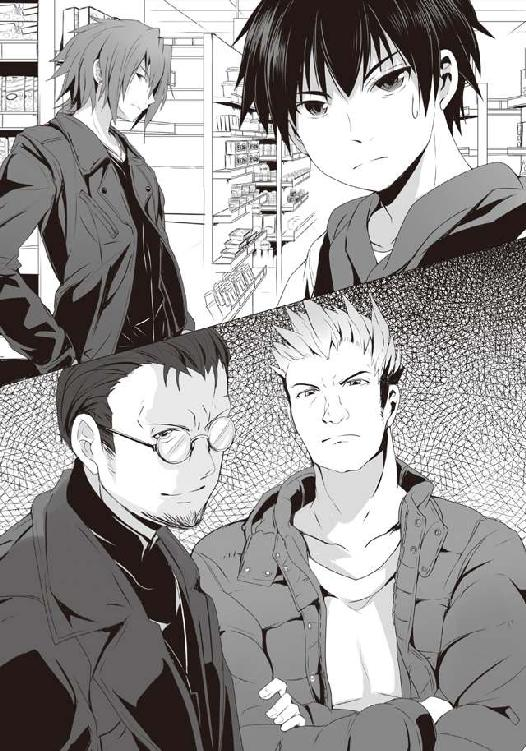
「二階堂、どうして。お前、協力なんてする気はないって......」
「お前と喋っていて、そういえば鬼斬り弁当はオレも食べたことがなかったのを思い出しただけだ。助けに来たわけじゃないし、何より鬼塚にも言ったが、組むわけでもない。敵は味方だが、味方も敵だ。それを忘れるな」
二階堂はそう背で語り、思わず彼の言葉に立ち止まってしまった僕を置いて入店してしまう。自動ドアの向こうに消える男の背を見やりながら、僕は思わず彼の名を漏らした。
彼は助けに来てくれたのかもしれないし、言葉の通りかもしれない。その両方かもしれない。何もかもわからない、けれど、僕は思うのだ。二階堂は――。
「デレ期キタ――――――――――――――――――――――――!! ツンデレな相棒が、ついに、いよいよ、ようやく、佐藤さんにケツを差し出し――あぅ！ 佐藤さん、やりましたね、もうこれで彼の心と穴と棒は好き勝手し放題ですよ！ ――あぅ!! いいですよいいですよ、いい感じですよ!? かつての敵にして、相棒が助けに......お、おおぅ!! そうか、その手があったか!! 最後のどんでん返しですね!? 協力して犯人を追い詰めた後、それぞれの目的の違いから再び決別し、刑事と探偵が最後の戦いなわけですよ!! ガントウ刑事がいない中、従弟とタッグを組んだ筋肉探偵に対して苦戦を強いられていたところにかつての事件で組んだ男が......!! 刑事と探偵が協力した段階で読者にカタルシスを与えた上で、さらにひっくり返してのバトル、そこに駆けつけるかつてのパートナー......こ、これは熱い!! いつもサトウさんのお尻の中で解き放たれる白濁液と一緒で、実にアツ――あぅぅぅぅ!!」
......こいつ、腐りきってやがる。くそぅ、後ろ髪を幾ら引っ張っても止まりやしねぇ!!
仕方ないのでまた後ろ髪を握ったまま、入店。自動ドアを抜ければ、そこは戦闘領域。体を突き刺す無数の視線。さすがにいつもより鋭い。その数......多いな、今の段階で一〇かよ。青果コーナーを進んでいく二階堂がこちらに意識を向けていないのと、外の二人を合わせるとプラス三で、僕らを入れれば一五......かなりの激戦になりそうだった。
どいつもこいつも見覚えのある奴ばかりだが、警戒すべき相手は坊主、顎髭、そして茶髪といったところだろうか。数は多いが、面倒そうなのはそれぐらい。そうなるとやはり今回のキモになるのは外の二人、ジョニーと筋肉探偵――じゃねぇ！ 鬼塚こと退魔師だ!!
くそぅ、奴の後ろ髪を握っているせいか、白粉の腐敗汁が僕の脳を冒しているかのようだ。
いつものように僕らは店内外周を回る。荒ぶっていた気持ちを青果コーナーの青々とした野菜類で癒し、鮮魚コーナーへ。そしてそこを抜ければ総菜、そして弁当コーナーだ。
今宵のジジ様の総菜エリアは、いつもとはかなり違っていた。総菜コーナーの半分には、節分特設エリアとして節分について書かれたＰＯＰと何種類もの恵方巻きが用意されている。
ＰＯＰによると七福神に因んだ七種の具、かんぴょうやら椎茸、きゅうりなどの普通の素材で作られた太巻きを始め、変わり種の恵方巻きもあるようだ。ツナマヨやら、とんかつやら、鰻やら......とはいえ、今現在残っているのはわずかに五本だけだった。
太巻きの大半が売り切れてしまっているのを見て、やや緊張しつつ弁当コーナーへ。そちらに残された弁当の数は......四つ。そのどれもが『鬼斬り弁当』。
節分だということで特別な仕様になっており、こちらも手書きのＰＯＰが用意されていた。そこを見るに......鬼斬り弁当はまさに、節分という今日に相応しい構成なのが知れる。
角切りになったニンジンやれんこん、コンニャクとともに煮られた五目豆、そして黒光りするお多福豆、鰯の蒲焼き、太刀魚の唐揚げ......ん？ 太刀魚？ そんな風習あったっけ？
一瞬疑問に思うものの、ＰＯＰにその由来も書かれていた。特に風習にはないが、鬼を斬るためには太刀が必要だ、という店側の洒落らしい。ちょっと小粋である。
そしてそれらの具材とともに容器に収まるのは......名から連想する通り、おにぎりだ。小振りなのが一個、さらにやや短めながら極太な太巻きが一本。
構成だけ考えると結構素朴な感じのものだが、どれもこれも節分仕様。今日という日のためだけに作られた弁当だ。
弁当を見て腹の虫がアップを始めるのだけれど、それと同時に僕の頭は目まぐるしく今宵の展開をイメージする。総菜コーナーの恵方巻きは五本、そして鬼斬り弁当が四つ。つまり現段階ですでに六人が弁当はもちろん、恵方巻きにすらありつけない。しかも、この店が近隣における最終半値印証時刻を有することを考慮すると、ここで獲り損ねると、今日中に恵方巻きに齧りつくことは絶望的になることだろう。
見慣れた連中しかいない店内でありながら、妙に鋭い視線が突き刺さってきたのはそのせいか。そりゃ全員殺気立つわな......。しかも弁当争奪戦の後に行われる総菜の奪取もいつも以上に熾烈になりそうな気がする。
もう一つ、僕の頭に引っかかるのは四つとも同じ弁当だということだ。こうなると一体どういう展開になるのか、いまだ経験がなかった。
結果的に同じ弁当が二つ残ったという状況は幾度か経験した。
だが、初めから四つも同じ弁当が並ぶとなると......これは、どうなるんだろう。
たまにあるように数は残っていたとしても欲している弁当が被ってしまえばバトルになる。だけれど、同じ弁当である以上その手の展開はない。ならば......速攻、か？ 開戦と同時に走り込み、辿り着くのが四人以下なら邪魔されることなく奪取できるんじゃないのか。仮に五人以上だったとしても、かなりの確率で奪取できるはずだ。
散々店外で啖呵を切った二階堂や鬼塚だけれど......案外、一瞬で勝負が決するかもしれない。
そうなると僕はともかく、白粉は相当に不利だ。機敏だが、速度にウェイトを置いた動きではない。あくまで乱戦を形成した後にその能力が発揮されるのだ。
隣を歩く白粉をチラリと見やれば......彼女はやや難しげな顔をして弁当、そして店内を交互に見やり、何かを必死に考えているようだった。
「白粉、行けそうか？」
「えぁっと......正直、厳しいですね。ただ、この人数に全員が見知った今日のメンバーなら......最初に全て持っていかれさえしなければ......きっと〝道〟は......」
彼女とともに弁当コーナーを離れ、島棚へ。今回人数が多いのに加え、誰もが開戦直後こそが要となるのを察しているのか、場所取りがかなり厳しい戦いになっていた。
弁当に遠すぎず、かといって豚だと言われないように近すぎもしない位置。そこに身を置きたいのは誰もが同じなのだけれど、人数が多く、ベストポジションの奪い合いになっている。
本来、場所取りはそこまで激しいものではない。だが、今はまだ本来の半値印証時刻にはやや遠い。この手のイベント的な日は半値印証時刻が前後しやすいからどうしても余裕を持っていなければならないが、逆に前倒しにならなければ、何も買わずにじっとしている怪しげな客として店内に居座ることになる。咎められはしなくとも、居心地は悪いものである。......つまり、移動せざるを得ないのだ。ベストポジションに着いても、しばしの後に移動する。すると即座にその場に代わりの狼が入り込む......それを繰り返していた。
そんな店内の狼が流動的に身を潜めるさまは、どこか椅子獲りゲームに似ていた。
その、普段見ることのない展開に僕は不安を覚え、知り合いのもとへ自然と足を向けた。茶髪である。彼女は弁当コーナーから少し離れた位置で、Ｐコートの前を開け、胸の下で軽く腕組みをして佇んでいて......その、何だ、立体感が凄いことになっていた。
いつもの彼女のそれでも大したものだが、タートルネックのふんわりとしたセーターである。巨乳にセーターはまさに男のロマンであり、猥褻物だとして規制されかねないほどのエロスを発散する魅惑的な組み合わせだ。しかも腕組みなど......僕を誘っているとしか思えない。
チャオ、と、茶髪は横目で僕らを見て言うと、腕は組んだまま、その手を振ってくれる。
「今年も結構しんどい感じね。まぁ去年みたいに魔女が来るよりはいいけど」
「毎年こんな感じなんだ」
「私が参加したのは去年だけだけど、そうみたいよ。退魔師も毎回現れるみたいだし。......まっ、今年こそは私がもらっていくけどね。......噂をすれば」
店内の空気がざわめき、島棚から島棚へ移動していた狼たちの動きが一瞬止まる気配。そして彼らは一様にエントランスを見やる。――退魔師、そしてジョニー。堂々たる足取りで入店。
これで一五。残されし弁当の三倍以上の狼が集い、戦いの刻を待つ。店内の空気がいつもより、重い。そして平時の半値印証時刻までは、まだ遠い。それを意識しながらも、僕は己の腹の虫に語りかけ、初速にウェイトを置いたコンディションを作っていく。
よう、と声をかけられ、見やれば......いつの間にか茶髪は消え、代わりに顎髭が立っていた。
「今日は一段と賑やかだな。二つ名持ちやワン公はそうでもないのかもしれねぇが、他の連中はうるせぇったらねぇぜ」
うるさい？ 空気は荒れているけど普通に店内ＢＧＭ、レジ、そして冷蔵設備の駆動音しか聞こえないのに......どういうことだ？
僕は言葉を促すように顎髭を見やれば、彼は得意げに語った。
今、店内では共闘の名を被った謀略戦が密かに繰り広げられているのだ、と。
「なるほど。つまり、同じお弁当が四つあるということは四人以下の人数でチームを組むのは理に適った手段。しかしながら他にも同様にチームを組む者たちがいるのも道理であり、それらメンバーが重複する可能性は否定できない。しかしながらこの場において自己犠牲なるものが存在しないのもまた道理であることを考慮するならば、あえて重複し、かつ、群れていながら己のみの利益確保のために裏切りに走るのは当然。しかし組んだ相手もまた同様に出し抜きを考えているとなると......それはお互いの裏切りを前提とした共闘、まさに謀略という言葉が相応しい。だからこそのこの空気、このざわめき、そして流動的な移動は単に場所取りではなく、他の狼とコンタクトのために......。なるほど、信頼と裏切りが交差する知的なゲームというわけですね。場の読みが恐ろしく難しい」
白粉が唐突に呟き、眼鏡をかけるとともに一人何かを納得するとメモ帳を取り出してペンを走らせた。いつもと違って嫌な感じがしないところを見ると、あっちのネタではなく、純粋に話の展開としてメモっているのだろう。
「本来ならお前と仲の良いガブリエル・ラチェットの頭目がこの手のものに関しては専門だろうが、アイツ、誰とも組む気はないようだ。それともすでにお前らと組むのを決めたからか？」
「そりゃもちろん、二階堂さんの心とボディは佐藤さん専属の肉ど――あぅ！」
ニチャリ、とまた白粉が不気味な笑みを浮かべたので慌てて後ろ髪を引っ張るが、少し遅かったようだ。なるほどな、と顎髭は面白くなさそうな顔をして去っていってしまった。
......もしかしたらアイツはアイツで僕らと組もうとしていたのだろうか？
そんなことを考えていると今度は坊主が現れ、顎髭の誘いには乗ったのかどうかを尋ねられるのだけれど......その会話はすぐに途切れた。紫色のジャンパーを羽織ったジジ様が現れたのだ。かなり早い。しかも、それだけじゃない。
ざわっと、店内の空気が揺らぐ。僕もまだ余裕を持って構えていたので、ジジ様の予想外の動きに思わず目を見張る。いつものジジ様ならこの後、精肉、卵、ドリンク、パンのコーナーを順に周り、それぞれの商品の整理を行い、その上でシール台紙を手に取り、総菜・弁当コーナーへ向かうのだが......僕らの目の前で、今、ジジ様はシール台紙を手に、真っ直ぐに総菜・弁当コーナーへ歩を進めたのだ。
店内に散っていた狼たちが一斉に動きだした。まだ数分は余裕があると思われていた半値印証時刻が唐突に始まらんとしたことで、予定の場所取りも、そして何より誰もが己のコンディションを高め終えていないのだ。
「何故だ、ジジ様。何故今日という日に限ってスタイルを変えやがったんだ。......いや待てよ。使いかけの台紙が一枚のみ......シールが足りねぇぞ？」
坊主の呟きを聞きながら、僕らはジジ様の動きを注視する。すると、また彼は驚くべき行動に出た。総菜・弁当の並びを正すのはいつものこと。しかしながら......総菜、そして恵方巻きにだけ、シールを貼ったのだ。弁当は三割引きのままで彼はその場を離れていく。
「半額にするべきか否かを迷う素振りもなかった......まさか時間差か!?」
「いや待てワン公、この店にそんなシステムは......。そう考えるとこれは、救済措置か。恵方巻きを食べられれば良しとする弱い狼にとって鬼斬り弁当が厳しいのはもちろんだが、狼として生きる覚悟をした以上三割引きのものに手を出すには気が引ける。だから、先に恵方巻きだけに半額シールを貼り、そういう連中に......」
坊主の仮説には一理ある。そういう優しさかもしれない。だが、同時に試練かもしれない。誰もが鬼斬り弁当を欲しているが、その構成を考えるに半額になった総菜と恵方巻きを合わせて買うことで、ある程度似通ったものを夕餉に用意出来る。その誘惑こそが、試練であり、狼としての本質を問われているような気がした。......考えすぎか？
だが、その半額シールの影響は絶大だ。店内が先ほどとは違うざわめき方を始めていた。
そりゃそうだ、さっきまで組もうとした相手がもしこの誘惑に負けたら、それまで立てていた作戦を変更する必要がある。
疑心暗鬼。裏切りを前提とした共闘、しかしながら戦いが始まるより先に抜け駆けされるとなると全てがひっくり返る。白粉の仮説によれば、誰もが複数のチームに所属し、その中でうまく立ち回って己だけは弁当をゲットしようと画策したのに、一人が裏切ればそれら思惑は全て水泡に帰すどころか、そいつがそう考え、裏切ることまでを前提として考えていた他の奴らの作戦もまた意味をなさなくなる。
この場は複雑に絡み合ったパズル......いや、複雑に並べられたドミノか。一つ崩れると連鎖的に他が崩れ、その崩壊はどこまでも広がっていく。
「だからこそ誘惑に負けそうな奴がいれば止めなくては、と誰もが思い、相互監視のような有様になり、この空気を作っている、か......もうわけわかんなくなってきたなぁ」
あまりに複雑で、何か面倒だった。僕は割り切ってそれらを切り捨て、瞼を閉じることにした。どうなるかわからない他人の思惑より、己の腹の虫の加護を高める方に意識を向ける。
何より......セガは、いつだってそうしてきたのだ。そしてそんな彼らを見て、流行は乗るものではなく、自分たちで作るものだと、僕らは教わった。他人の動向を気にしておろおろするぐらいならば、真っ直ぐに前を見て、己が信じる道を走る。それこそが――！
「よしっ、まだ大丈夫っぽい！」
誰もが店内の狼に意識を向けている中、僕の思考を途切れさせるそんな声が響いた。
見やれば......ウルフヘアだ。息を切らせているところを見ると他の店で負けて、慌ててこの店に駆け込んできたのだろう。
「......あれ、何だろう、この空気......？」
ウルフヘアは小さく呟くものの、張り詰めた店内の空気はそれをかろうじて僕の耳にまで届けてくれた。彼女はキョロキョロと辺りを窺いながら総菜・弁当コーナーに向かって今日の品目をチェック。ＰＯＰの前で一度立ち止まり、ほほぅ、と呟く。すると、その傍らに一匹の狼。
たまに見かけるサイドテールの女の子がウルフヘアの陰に隠れるようにして、そっと、当たり前のように、でもどこかしらに覚悟を決めた雰囲気を漂わせて恵方巻きを手に取ってしまうのだった。しまった、という声が店内のどこぞから聞こえた。
「あの目、あの雰囲気......よっぽど願掛けしたいことがあったのかも」
白粉の言葉に坊主は頷いた。
「残り物には福があるって言うしな。だからこそ半額になった恵方巻きは願いを叶えてくれるって言う奴もいるぐらいだ。......確かアイツはまだそんなに強くはなかったし、どうしてもっていうんなら悪くない判断だろう。もうすぐ烏田も卒業式だし、その前にはバレンタインデーだ。......誰かに告白でもする気なのかもな」
ふーん、と納得出来たような出来ないような気分でサイドテールを見ていると、ウルフヘアがダウンジャケットのポケットに両手を入れ、肩をすくめるようにして僕らのもとへやってきた。
「ねぇねぇ、佐藤くん。これ、何？」
僕は、来たばかりのウルフヘアにこの状況を語ってやろうかと思ったのだが、言葉を紡ぐ前に店内の空気がさらに一変。ジジ様が通常の半値印証時刻前の行動を開始したのだ。精肉、卵、ドリンクのコーナーと回り、パンコーナーへ。もはや悠長に話している余裕はない。僕らは口と瞼を閉じて腹に語りかける。ウルフヘアもまたそれ以上訊いてくることはなかった。
店内では先ほどのサイドテールが戦線を離脱したことでいまだ動揺が走ったまま。まだ謀略に知恵と言葉を労している者もいたが、もはやそれは意味をなさないだろう。そうなるとこの状況の中で、当たり前のように落ち着いている奴らこそが今宵やっかいな相手だと見るべきだ。......退魔師とジョニー、二階堂、茶髪と顎髭、隣にいる坊主、そしていまだ状況を理解していないウルフヘア。
僕もまたどっしりと構えていよう。右往左往するより、腹の虫の加護だ。
――心を濁すな、狙いを澄ませ。今、想うべきは一つだけだ。
かつて先輩に貰った言葉を思い出し、僕は弁当を想う。そして小細工を捨て、白梅との約束はかすかに頭の片隅に残すに留め、そこに付随する欲望は意識の底へ押し沈める。先輩からの期待も一緒に。ただ空腹のみを感じ、それを強めていく。
狼たちの動揺をよそに、ジジ様はいつものように優雅にシールを舞わせ、三割引きの鬼斬り弁当を半額に昇格させていった。
店の空気が静かに、しかし耳には聞こえぬざわめきで張り詰めていく。
そしてジジ様の紫色のジャンパーが扉の向こうに消え、その音が鳴り響いた。密に立て並べられたドミノが崩れだし、誰もがその全体像を想像出来ぬままに、戦いは始まったのだ。
予めそれとなく腰を落としていた僕は身を低くして地を蹴り一気にダッシュを仕掛ける。どのような展開になるにしても速攻を狙うのは悪くな――なにッ!?
まだ弁当コーナーに遠い位置。それなのに、大きく一歩踏み出した直後、僕の胸にはスニーカー。ウルフヘア。彼女がまるで僕にドロップキックするかのように空中に身を浮かせ、全身を縮めて足を向けていた。
ごめんっ、そう言ってウルフヘアは僕の胸を蹴る。そして次の瞬間、衝突の反動、そして全身のバネを最大限に利用し、彼女は僕を踏み台にし、そして僕が発した初速を奪い取り、水平に飛んだ。その勢いは凄まじく、ウルフヘアは坊主を追い抜き、一気に弁当コーナーへ。
一方の僕は反動で仰け反るようにして後ろによろけてしまい、出遅れが確定。状況を把握していないながらも雰囲気で場を読んだのか、それともたまたまなのか。ウルフヘアの意外な行動に呆気に取られていると、また鈍い衝撃。今度は白粉だ。彼女もまた僕を踏み台にして上空へ。......一秒ほどの間に二人に踏みつけにされるって......なんだよ、それ。
ウルフヘア、さすがに弁当コーナーまでは飛翔出来ず、目前で床に足を着ける。だが、勢いはいまだ衰えない。そのまま減速することなく走り込んだ。場所取りでかなり弁当コーナーの近くに身を置いていた狼たちでさえ、彼女に追い抜かされていく。
早速四つのうちの一つが持っていかれるかと思われたが、さすがに奴らがそれを阻止した。
ウルフヘアがその手を伸ばしたタイミングで、彼女の足下にカゴが滑り込む。カーリングがごとく床の上を滑り、トラバサミのようにしてその口が彼女の足を捉えた。
ウルフヘアが意識を弁当に集中させた、ここしかない、という絶妙なタイミングでのその攻撃は彼女を転倒させる。背から床に落ち、カゴが高く舞い上がる。
「さすがに今のは驚いたな！ 速かったぜ!!」
ジョニーがその大きな体格をものともせずに弁当コーナーへ走り込み、茶髪を含む他の狼数匹も素早く前へ出る。......ウルフヘアを除いても合計五匹。すでに一個足りない。三匹が奪取に動き、一瞬かすかに遅れていた茶髪とジョニーが攻撃を仕掛ける。
ジョニーがその筋力を活かしたラリアットで一匹を吹っ飛ばし、ボウリングのピンのようにもう一匹をもそれに巻き込んで転倒させる。茶髪もまた弁当へ手を伸ばしていた狼の肩を掴み、これを阻止する構え。彼女らの後方にはすでに退魔師を含めた他の狼たちが迫っていた。速攻奪取は出来ず、乱戦が形成される、そう思われたのだが......。
「その女の狙いは弁当ですよ!!」
退魔師が叫んだ。ジョニーがハッとしたものの、ラリアットをかましたばかりで攻撃にも奪取にも体勢を移せない。そうしている間に茶髪は先行していた狼の肩を掴んだ手を、後ろに引く。そうすることでその狼には急ブレーキがかかるものの、反対に茶髪は加速するようにして前へ出る。弁当陳列棚最前線へ。彼女の指先が弁当の蓋を撫でる。
まだ間に合うと判断したジョニーが無理のある体勢ながら、拳を繰り出し茶髪を狙うのだが、その拳が彼女の顔面まで数センチの位置で、ピタリと止められる。茶髪が、獲ったのだ。
ジョニーの拳の風圧により茶髪のやや長めの前髪が吹き上がり、その得意げな瞳が現れ、小憎らしくも、かわいらしくウィンク。その豊満な胸が僕らをからかうように弾む。
これで弁当は残り三つ。展開が早い、僕も早くあそこまで行かなければ......そう思うばかりで、僕は彼女の二つ名を失念していたのに気がついた。
シーリーコート。神々に祝福されし善良なる妖精。恩は恩で、仇は仇で返す者......。
茶髪に肩を引っ張られた狼が、ハッとした顔で再び弁当へ手を伸ばす。多少よろけ、勢いを茶髪に奪われたとはいえ、まだ最前線にいる。ようやく場に駆けつけた狼たちが一斉にそいつの阻止へ動くのだが......彼らの前には、弁当を手にした茶髪の姿。
弁当を奪取した以上、誰も彼女を攻撃することは出来ない。つまり、絶対的な楯として彼女は利用した狼の男を守ったのだ。二人の雰囲気からするに、組んではいなかったはずだ。茶髪が利用させてもらったことへの謝罪を含む礼をした、ということだろう。
弁当を持っていかれたことへの焦燥感とともに、彼女の姿にビミョーな悔しさが胸の内にあることに僕自身ちょっと動揺する。僕は幾度となく彼女の優しさに触れてきたから、どこかで彼女のそれは自分にのみ向けられているものだと感じていたのかもしれない。
ジョニーが雄叫びを上げ、周りにいた狼を薙ぎ払う。弁当に一切意識を向けなかったところを見ると、退魔師と完全に組んでいるのだろう。二人で弁当を獲る、そのために従兄が到着するまで場を維持する気だ。
そうした彼の働きにより乱戦が形成。この時になり、白粉が空中よりそこへ飛来。その手には先ほどウルフヘアがすっ転んで蹴り上げたカゴがあった。彼女はそれを持ったまま殴り合う男たちの肩や頭の上で、まるで踊るように軽快なステップを踏む。参戦するわけでもなく、奪取するわけでもなく、ただ乱戦の上を舞っていた。入り込む隙を探しているのだろう。
僕もまた乱戦に到達。そこで気がついたのだが、弁当陳列棚を背にし、二つの鬼斬り弁当を守るようにして戦うジョニーの視線が白粉を追っていた。そして白粉もまた、ジョニーをちらりちらりと見やっている。ジョニーが弁当を守っている以上、奪取は不可能と白粉は読み、カゴを奪ってジョニーを挑発し、隙を作ろうしているのかもしれない。ジョニーとしてもカゴがなければ本来の実力を発揮できない以上、隙あらば取り返したいところだろう。
「幽霊に惑わされてはダメです！ 奴の狙いはお前に隙を作ることですよ！」
退魔師が乱戦の中で坊主をぶん殴りつつ、声を上げた。
彼の太い腕が空中に伸ばされ、舞っていた白粉の足を掴もうとする。彼女はそれをひらりとかわすのだが、退魔師の腕は白粉の足から即座にカゴへとシフト。あまりに素早いその動きからして、むしろ狙いは初めからそちらだったのだろう。カゴが掴まれる。
これには白粉もさすがに不利と判断したのか、躊躇わずにカゴを放棄し、乱戦の外へ逃げる。
退魔師が奪い返したカゴをジョニーへ向かって放り投げようとするのだが、その時、僕の目には背の高い彼の不敵な笑みが乱戦の中からもはっきりと見えた。
それが何なのか、意味を考える。今ジョニーがそのカゴを持てば、周辺の狼を薙ぎ払えるかもしれない。そうなれば当然コンビとなった退魔師にとっておいしい展開になるだろう。
だが、本当にそれだけなのか......？
「やめさせた方いい」
いつの間にか僕に背を向け、身を低くして他の狼と攻防を繰り広げる二階堂が囁くように言った。カゴをジョニーに渡させるな、という意味だと思い、一瞬頷きかけるものの......彼の言葉がおかしなことに気がつき、何を言わんとしているのかを察する。
僕は、二階堂の背に足をかけた。合図も目配せもないのだけれど、乗った瞬間に二階堂は下げていた重心を一気に上げてくるので、それに合わせて僕はジャンプする。天井経由では間に合わないとして、やや水平方向に、退魔師とジョニーを結ぶ直線の間に身を差し込むように。
カゴが放たれ、乱戦の上を飛ぶ。そこに......白粉だ。カゴを奪取しようと再び乱戦の上空に身を躍らせるのだが、それを退魔師は誘っていたのだ。
退魔師はカゴを投げると同時に乱戦を引き裂くようにして無理やりに前に出た。
白粉がカゴを乱戦の上空でキャッチしようとしたその瞬間、羽虫を水中から魚が喰らうように退魔師の腕が彼女の足を狙う。そこに、僕は跳び蹴りを放った。
白粉がハッとした顔で慌てて他の狼の頭を軽く蹴りつけ、再度乱戦から離脱。カゴは乱戦の中に落ち、見知らぬ狼がそれを手に取り、利用し始めた。
僕もまた蹴りの反動を利用して、乱戦外へエスケープ。白粉が小走りに近寄ってくる。
「す、すみません、つい油断して......。ありがとうございます」
「いい、気にするな。っていうか、あれが誘いだってのは二階堂が気づいたんだ」
白粉は乱戦の中の二階堂を見やり、一度小さく頭を下げた。
僕はそんな彼女をその場に置き、今一度乱戦の中へ向かった。
人数が多いが故に広範囲に展開する乱戦の現状を確認するために、背を向けていた狼の一匹に足をかけて天井へ飛ぶ。天井に着地と同時に下を見やればなかなかに面倒な光景だ。
狼は一一匹。その中で退魔師とジョニーを含む三組は間違いなく組んでいるのが乱戦の中での連携で見て取れる。恐らく残りが二個になっても瓦解していないというのは初めから二人で組んでいた連中なのだろう。そんな中で二階堂は単独で乱戦の中央に、ウルフヘアは最初の転倒から何とか前線近くで立ち上がりはしたが、立て直せなかったのか、場に流され、前後左右からの攻撃を防御するだけで精一杯といった様子だった。
退魔師とジョニーは、ジョニーが弁当を守り、退魔師が乱戦外周から徐々に前へと突き進んでおり、彼らが接触した瞬間、弁当二つの同時奪取を狙うのだろうというのが見て取れる。若干合宿で見た《ナックラヴィー》とアンの戦法に似ているが、あれとは違い、退魔師があえてゆっくりとしか進んでいないような......。
もしかして、待っているのだろうか。幽霊こと白粉を。それとも......僕と二階堂をか。
どうするべきか。必ずしも弁当を狙ってダイブすることがプラスになるとは思えぬ場だ。
僕はやや大雑把に最前線ではないが、やや前の方、という具合に狙いを決め、天井を蹴る。視界の隅でこちらを警戒していたのか、退魔師の顔が僕に向いた。
そして、それと同時に前線近くにいた顎髭と坊主が目配せし、二人が同時に動く。
戦いの中でいつの間にかカゴを有していた坊主がそれの底を前方に突き出すようにして構えて乱戦を突き進み、最前線にてジョニーと相対する。
坊主がそのカゴの縁を握り、ジョニーの頭に被せるような動き......ジョニーの技だ。マネた技をあえて本人に放ったのだ。当然ジョニーは表情に怒りを宿し、それを片手で受け止めた。
「見よう見まねで出来るほどカゴ技は――！」
「甘くねぇんだろ、わかってるって」
僕は坊主がいた乱戦のスペースに着地しつつ、彼の余裕ある声と顎髭の鼻笑いを聞く。
顔を上げてみれば、坊主はジョニーに受け止められた瞬間にカゴを放し、彼の脇から手を弁当へ伸ばす。ジョニーが慌ててこれに対処しようと奪い取ったカゴを振り下ろそうとするのだが、そこに顎髭が間に入り込み、坊主を守るように受けの体勢を取った。
初めから組んでいたのか、それともあの目配せの瞬間に組んだのかはわからないが、二人の動きは見事に連動していた。
恐らく坊主が弁当を奪取した直後、先ほどの茶髪のように顎髭の楯になろうというのだろう。
このままでは二つとも奪われるかもしれない。でも、そうじゃないかもしれない。その可能性に賭け、僕は坊主が作った道を駆け、彼の後を追う。
顎髭がジョニーの攻撃を受けた瞬間、僕もまたその隙に便乗して弁当に手を伸ばせるかもしれない......そう、思ったのだが......。
ジョニーの雄叫びとともに振り下ろされたカゴは、あの捕まえるようなそれではなく、底を下にした叩き潰すようなそれ。顎髭はこれを受け止めてみせた。だがジョニーがさらに上をいく。
ジョニー、カゴの縁を握っていた手を放すと同時に拳に固め、カゴの口の中に放つ。カゴと拳による二連撃。うまい、と思わず驚嘆した。人間は防御の瞬間に体を硬直させるが、衝撃が走った直後はその反動で体が緩む。そこを狙った技だ。
案の定、顎髭の防御は容易く弾き飛ばされる。ジョニーのカゴ越しの拳は顎髭の頭頂部に直撃するも勢いは止まらず彼の背後にいた坊主までをも巻き込み、床へねじ伏せやがった。
「従兄さん考案の新技だ！ どうだ!!」
彼らの攻防は僕の目と鼻の先での出来事......チャンスだった。潰れた顎髭と入れ替わるように前へ出た僕は、彼らを踏み台にしつつ死に体となっているジョニーの顎先へ左足で蹴りを放つ。さらに、その攻撃と同時に弁当へ右手を伸ばした。
弁当が二つあるため、本来ならばジョニーを放置しても構わないはずだが、退魔師と組んでいる以上、奴は何としてでもこちらの奪取を防ごうとするはずだ。だから一撃与えて怯ませておこう、そう思ったのだが......。
これで決まるか、そう考えた時、二階堂の声が響き渡った。
「後方だ、かわすな!!」
声に反応し、背後に視線を向ける。猛烈なパワーで狼が一匹ぶっ飛ばされてきていた。
蹴りのために飛び上がったのを後悔したが、もはや遅い。
このまま衝突すれば僕もぶっ飛ばされてきた狼も陳列棚に突っ込むことになる。それだけは避けねばならない。止むを得ず蹴りの行き先を横のジョニーから背後のそいつへ向ける。
やや無理な軌道修正をし、飛来した狼の体を蹴りつけ、床に落とす。その反動で僕は意味もなく空中に高く浮かび上がってしまった。背後を見やる。退魔師が得意げな顔で僕を見ていた。
「私の読みならば、この程度は造作もないのですよ」
完全に僕が防ぐであろうことを予測しての無茶をしてきたわけか、やられたな。
そう思った直後にそれは一層強いものになった。
ぶん投げられた狼の体が作った乱戦の中の道、そこを走る鬼塚。そして、その背後に白粉。彼女もまた状況を読んでいた。鬼塚に道を造らせ、そこを自分もまた走り抜こうというのだ。
鬼塚を出し抜く。恐らく白粉の頭にはそれがある。気にしないと言っていたクセに、散々二階堂デレ期キターとか言っておきながら......彼女はあえて鬼塚を出し抜くこのタイミングを待っていたのだろう。だから今夜の白粉にはどこか隙が多かったのかもしれない。弁当に集中しきれていなかった、と、今ならわかる。
僕はスーパーに来る前に「悔しくないのかよ」と余計なことを言ってしまった。
悔しくないわけがないのだ。白梅がやられて、自分もコケにされて......それでおとなしく〝気にしない〟でいられるわけがない。それを彼女なりに抑えていたのだろう。それなのに......。
白粉が跳躍し、目前を走っていた鬼塚の肩に飛び乗る。鬼塚はさすがにそこまで読み切れなかったのか、しまった、という顔を浮かべた。
しかし、本来の白粉ならそこを蹴って、ウルフヘアが僕にしたように、走っている奴の移動エネルギーを奪い取り、かつ、そこに己の跳躍力を加えて加速して飛ぶはずなのに......彼女は、飛び乗った肩の上から、鬼塚の顔を狙って蹴りを繰り出した。
甘いッ!! 白粉の靴底が鬼塚の顔面に迫った瞬間、彼は声を上げて頭をあえて靴底にぶつけていった。ダメージ覚悟のヘッドバット、鬼塚の眼鏡が吹き飛ぶ。
今度驚くのは白粉の番だった。彼女は予想外の衝撃にバランスを崩し、跳躍するというよりは彼のヘッドバットに弾き飛ばされるようにして、頭から床に落ちた。
鬼塚の足がボールでも蹴るかのように、床に落ちた白粉を蹴り飛ばす。その行く先は、弁当陳列棚。そこには空中に浮かぶ僕。そしてすぐ近くには体勢を直しつつあるジョニー。
顔を歪めて飛来した白粉を反射的に僕は空中で受け止める。接触しただけで彼女の口から漏れる弱々しい呻き。ほぼノックダウン。腹の虫の加護も何もない。今、これで退魔師かジョニーの一撃を喰らうのはヤバイ。
退魔師が腕を振り上げ、迫る。そして見えはしないが、背後からジョニーのカゴが風を切る音と気配を僕の肌が感じ取る。挟み撃ち。空中の僕らでは避けようがない。
「ＨＰ部も堕ちたものですね！ 所詮はこの程度ッ!! まとめて祓ってあげますよ!!」
楽しくて仕方がない、といった退魔師の顔が、癪だった。
もはや受けるしかない。覚悟を決め、白粉を後ろから抱きかかえるようにして体を硬直させる。少しでも彼女へのダメージが減少するように――。
その時だった。一瞬、かすかに何かを感じた。
悲痛な、女性の......声だったのかもしれない。
それを刹那に意識した時......脳裏に浮かぶ、あのスタッフルームで見た、悔しげな白梅の横顔。彼女の、雫。公園での二階堂との会話。小指に残る、槍水先輩との約束――。
僕は受ける覚悟を捨て、喰らう覚悟を決めた。
「白粉、退け!!」
僕は白粉の後ろ髪と肩を掴み、床に突き落とすように押す。互いに空中である以上、それは大した勢いにはならない。だが、僕の無防備な体勢と引き替えに、白粉を退魔師とジョニーの攻撃からは外すことは出来た。
僕は見る。迫り来る退魔師の拳とジョニーのカゴではなく、弁当陳列棚を。奇抜な名前ながら、その実、素朴なおかずで作られたシンプルでヘルシーな鬼斬り弁当を。
肉をふんだんに使った、豪快だったり、ヘビーだったりする弁当もいい。だが古くからある節分という風習の今日だけは、祖母が作ってくれたようなあんな温かな弁当がいい。――食べたい。あれが。あの弁当が。
腹の虫が雄叫びを上げる。体に力が湧く。その全てを体に行き渡らせる。
そして退魔師の笑みを見やった。来い、とメッセージを視線に乗せる。喰らってやる、と。
巨大な拳が僕の脇腹に喰らいつくように、叩き込まれる。長身と重力を活かした、やや上から下へのベクトルを持つ一撃。
その衝撃が全身に響くのと同時に、背にはジョニーのカゴの底が叩きつけられた。退魔師の拳、そしてジョニーのカゴ、二つの凄まじい圧力に体がバラバラになって飛び散りそうになるものの、僕は歯を喰い縛り、呻きすら噛み殺し、得意げに微笑む鬼塚の顔を睨み続ける。
退魔師のパワーが強い。僕、そしてジョニーのカゴごと奴の拳は押しきった。ジョニーは転倒し、僕は床に叩きつけられ、バウンド。再び空中へ、中途半端な高さまで浮かび上がった。
この時になり、残っていた狼たちがチャンスとばかりに群れる。これを慌ててジョニーが膝立ちの体勢のまま、受ける。そしてそれを空中にいる僕はただ、見ていた。
天井に達するほどの勢いもなければ、即座に床へ足を伸ばせる高さでもない、微妙な高さ。
「啖呵を切った割にさほどでもないですね、変態。いや、カペなんとかいう犬でしたか。失神しない根性だけは、認めますがね！」
ニヤリと微笑む退魔師が眼下で待ち受けていた。うるせぇ、と僕は声に出さずに呟き、奴の目の前へと、落ちていく。重力の手から逃れる術は、僕にはなかった。
とどめの一撃を喰らう覚悟をした時、何かが視界の端で動く。
――二階堂。彼は身を低くし、床すれすれをまるで四本の足で駆けるかのようにして退魔師の視界に入らぬよう急接近。しかし彼を攻撃はせずに、その目前で飛び上がった。僕へ向けて。
「負けるなら、約束とやらを果たしてからにしろ、佐藤!!」
二階堂の言葉に、僕は今一度己の体を叱咤する。腹の虫の加護を引き絞るようにして身に受ける。痛みを、頭の外へ。倒れるのは......あともう少し後だ。
飛び上がった二階堂を僕は蹴りつける。それにより豪速で僕は天井へ、彼は床へ。
僕を狙っていたであろう退魔師の攻撃が空ぶる。突如現れた二階堂と、さらに僕と彼が上下二手に分かれた動きに退魔師は明らかに焦りの顔を浮かべた。
僕は天井、二階堂は床へほぼ同時に着地。そして全身のバネを引き絞り、互いにタイミングを合わせ、僕らは己の体を加速させる。目指すは退魔師。上下からの二面攻撃。
半額に至りし素朴な弁当への想いを胸に、変態ではなく、カペルスウェイトとしてでもなく、ツードッグスとしての一撃を......僕らは放つ。
●
目前で天井と床へ別れた二人の男。彼らを読む。場を見る。そして己のスペックを踏まえる。その結果、鬼塚の脳裏にはどちらかを受け、もう一方の攻撃を喰らうビジョンしか見えなかった。避けようとしても両方は無理だ、それを凄まじい速度で迫ってくる男たちを見やりながら、意外なほど落ち着いた頭で考える。
立っている狼は皆従弟と弁当へ向かっている。場は乱戦とはいえ、今のこの戦いに介入してくる者がいないのは間違いない。幸運な展開にはならないだろう。
だが、まだそれでノックダウンされない自信があった。自分は頭脳明晰なだけではなく、ボディにも十分過ぎるほどの能力があるのだ。重心を落とし、両の手を拳に固めて肩まで持ち上げ、脇を締める。全身の筋肉を最大限に固める。全身防御。上下からの攻撃など、完全に受け止めれば、奴らの心こそが逆に砕けるはずだ。実質的に、本当の意味でこれを打ち破ったのはウルフズベインの毒、その平手によるものだけなのだ。
奴らが彼女を上回る毒の使い手ではないのは、間違いない。
同時攻撃を受けきる、そう覚悟を決めた次の瞬間、二階堂が加速した。こちらが受けきれてしまうと判断したのか、タイミングをずらしてきた。だがそれでどうなるというものでもない。
二階堂が鬼塚の右の脛を狙う。一瞬身を縮めた直後に放たれたその攻撃は、ほとんどヘッドスライディングのような掌底だった。あまりに低く、床と水平にならんとするかのようなそれ。硬化した体に彼の掌底が触れた瞬間、そこに予想を超えるエネルギーを鬼塚は感じた。
本来掌底は腕回りの力も大事だが、その肝となるのは背と腰の捻りが生み出す力だ。下半身と腰の捻り、そしてそこに上半身のエネルギーが加算される。今の二階堂の体勢はあまりに低く、ほとんどヘッドスライディングのような形になっている以上、その腰の捻りの力はほとんど生まれないはず、それなのに......。
そう考えた時、彼が掌底を放つ直前に身を縮めたことを鬼塚は思い出した。腰の力の代わりに、背筋を用いたのだ。バーベルを上げるように、それを床とほぼ水平にして、力を込めた、そうとしか考えられない。だが、本来その部位は瞬発性に優れる筋肉ではないため、二階堂の掌底は吹っ飛ばすというよりも、〝押す〟意味合いの強いものになっていた。体を硬化させた鬼塚にダメージはほとんどないが、さすがに踏ん張り切れずに右足は床から離れる。
本来情報戦及び組織戦において特化したガブリエル・ラチェットが有する技とは思えないそれは、解散後に二階堂が独自に編み出した技なのか。だが、何にせよ恐れるに足りない。奴の攻撃は凌いだ。後は、空から来るカペルスウェイトだか変態だかいう犬の攻撃を防げば一気に反撃に出て、生意気な二匹を薙ぎ払ってやればいい。
幽霊は先程のカゴの囮に引っかかった時点でもう見限っていた。闘牛士を打倒したというのもたまたまなのだろう。強いて言えばやはりあの茶髪の女が気になるところではあったが......。
鬼塚はすでに今よりも先のことを考えつつ、空から両手を組んで飛来する佐藤をチラリと見やる。狙いは頭頂部辺りか。それぐらい甘んじて受けてやる。そう思ったものの、衝撃は予想外の箇所に来た。左の、肩だ。奴は全身を回転させながら、抉るような一撃を放ってきた。
何故そんなところに、そう考える鬼塚は自分の体が傾いていくのを感じる。それなりのパワーはあっても、意に介するほどではないはずの一撃で体が傾いていく。何故――？
――体を硬めたせいか......!!
硬直させた体の右足を押しきられ、その対となる左の肩に佐藤の一撃。それら二つは鬼塚を痛めつけるためのものではなく、鬼塚の体を回転、そして転倒させるためのものだったのだ。柔軟な状態にしていればダメージこそあれ、転倒は防げる。いや、そうでなくとも奴らのそれが単なる同時攻撃であれば膝をつく程度で済んだはずだ。二階堂が一瞬早かったせいで持ち堪えようと残った左足に重心を移動させてしまった。それでバランスが崩れたヤジロベエのようになってしまったのだ。そこに肩へ衝撃が来れば......。
鬼塚の体は硬化させた体勢のまま、左肩を突き出すようにして倒れていく。
場が陳列棚に近い位置であることを踏まえると、完全に倒れるのはあまりにまずい。乱戦の下敷きになれば全身防御もクソもない。
鬼塚は体の硬直を解き、床へ手を伸ばした。だが、その手が触れるより先に、首に何かが迫り来るのを感じる。それも......上下からの、二発。
掌底を放った直後、床に手をついて急ブレーキをかけ、その状態のままで放ってきた二階堂の蹴り。そしてさらに、両手での一撃を放った後、その拳の勢いにあえて身を任せて一回転した佐藤の踵落とし。
共に首狙い。今度こそ本当の、上下からの同時攻撃だった。
それも硬直を解いた瞬間を狙った、これ以上ないというタイミング......完璧なまでの一撃。
佐藤と二階堂の雄叫びが合わさり、一つになり、この世のものではない獣の咆吼になる。
巨大な獣が獲物である自分の頭を丸呑みしようと喰らいつき、上下からの巨大な牙が首に――そんなイメージを鬼塚は連想した。
節分、鬼を祓う日、鬼斬り弁当――鬼斬り......何とも微妙な皮肉ではないか。魔を祓うべき己が祓われるとは......。
そんな自虐的な思いを最後に、退魔師の意識は飛んだ。
――静寂と暗闇。
しかしそんな中に従弟の雄叫びが聞こえ始めると、頬に触れる冷たい床の感触を思い出したように感じる。そうして泥の中でもがくようにして、鬼塚は瞼を開く。辺り一面はまさに死屍累々。その中にあって、カゴを振り回す従弟が、争奪戦開始直後に鬼塚の指示でカゴを投げさせて転倒させた若い雌の狼と組んで戦っている。相手は、佐藤と二階堂。もはや、その四匹だけ。他の狼は鬼塚共々倒れているか、乱戦の外において恵方巻きを手にして事の成り行きを見守っている連中のみだ。後者は恐らく、この場ではもはや勝てないと踏んで先に総菜コーナーの恵方巻きを取って離脱したのだろう。幽霊もその内の一人であり、後ろにまとめられていた髪は解け、乱れた髪のままで乱戦の行方を追っていた。
残されている弁当は変わらずに二、恵方巻きは一つだけ。
状況から察するに、意識を失っていたのは数分ほどもあったのかもしれないと鬼塚は察した。
過去に手合わせしたガブリエル・ラチェットとしての二階堂、先日ぶつかった佐藤......それらは鬼塚の感覚ではさして警戒すべき相手ではなかった。だが、その二人が組み合わさった瞬間に予想以上の力を発揮したのは、鬼塚に新たなる教訓をもたらしたと言っていい。組み合わせによる能力変動は今後検討すべき課題だろう。いくら組織戦に慣れた二階堂がパートナーであったのだとしても、あの瞬間的な戦力の跳ね上がり方は今までにないパターンだ。
だが、今注目すべきはそれよりも佐藤、個人の方かもしれない。波があるように思える。
今回幽霊を助けた直後もそうだったが、その前にもあの黒髪の雌犬と幽霊を殴り飛ばした直後に、猛烈な腹の虫の加護を発現させた。
まるで別の狼になったかのような、そんな印象すら受ける。取るに足らない平時、サラマンダーを彷彿とさせる爆発力、ウルフズベインが得意とした円滑な技の繋ぎ、二階堂との阿吽の呼吸を見せた完璧過ぎる連携、そして......。
「変態......カペルスウェイト......なるほど......」
従弟の情報も、二階堂が呼んだ名も、全て根拠があったということか。鬼塚はばらけていたピースが一つにまとまったのを感じる。いや、いくつかに伸びて並べられていたドミノの列がそれぞれに倒れゆき、それらが合わさった瞬間、一つのモザイク画を描いたかのように......といった方が正確かもしれない。倒れなくては――戦わなくては、見えはしなかったのだから。
その彼の姿にはどこかしら氷結の魔女、そして彼女に技を伝えた最強の狼たる魔導士の能力と似たものを感じる。ＨＰ部の後輩だというが、魔女と違い、技は魔導士から受け継いだわけではないのだろう。彼らの能力は似てはいても、彼とは根本的なところが違うのだ。
わかってそういった能力となったのか、それとも無意識なのかはわからない。だが、あの佐藤という変態にしてカペルスウェイトなる犬は、紛れもなくＨＰ部の先人に似つつも、その本質では独自の道を歩んでいる。
面白い狼だった。出来ることならじっくりと観察、そして分析したい対象だ。幽霊など相手にしている場合ではない。こいつだ、こいつこそ分析すべき相手だ。新しい謎を見つけたことで、鬼塚は胸の内で笑う。そして、もうしばらくこの地に止まろう、そう決めた。
――争奪戦が終結に向かいつつあった。
突発的に組んだであろう従弟とウルフヘアの少女。たまに連携をしくじることを踏まえてみても、彼らの組み合わせは意外なほど相性がいい。
とにかく、しつこい。佐藤たちから打たれても蹴られても、倒れはしない。二人して膝をつくことなく敵に襲い掛かっていく。体力に優れた従弟と、腹の虫の加護が攻撃よりも耐久力に回っているらしいウルフヘア。長期戦になればなるほど、その二人のしつこさが際立っていく。
彼女の健康そうな四肢の具合――筋肉や骨格の作りからするに、幼い頃からスポーツをたしなんできたのだろう。さらに言えば彼女の顔つき、戦い方から見るに、愛くるしさと意味を同じくする邪気のない小ずるさや、その底にある素直さ、真っ直ぐさ、活発な心の動き、快活さ......そういったものを読むことが出来る。それらはどこかはしゃいで遊ぶ犬を連想させた。
彼女の魅力、それが問題だ。......どう考えても、彼女は従弟のタイプだった。
スーパーでないのなら、半値印証時刻でないのならばどうでもいいことだが、今はまずい。観察眼のない従弟とはいえ、組んだことで彼女の魅力を察してしまい......足を引っ張っていた。
変にウルフヘアを庇うのだ。長くやってきたのならともかく、突発的に組んだ間柄でおかしな馴れ合いは足の引っ張り合いでしかない。何より彼女を囮にして、従弟が一人で弁当奪取を狙えばいけるはずだ。だが、それをしない。彼女と二人で獲ろうとしている。そしてその気持ちが腹の虫の加護を弱め、それを気合いでカバーしようとするが、それがまた狼ではなく男としてのそれであり......要は、悪循環に陥っていた。
そしてウルフヘアはウルフヘアでそんな従弟の気遣いに困惑し、変に見捨てられないでいる。彼女の〝いい子〟な部分が抜け駆けを選択させない。
一方、ツードッグスの方は逆に、入店前の二階堂の言葉通り、完全に結託していないのか、パートナーの抜け駆けを微妙に警戒している気配があり、そこに付け込む隙があるのを鬼塚は察することが出来た。従弟となら、対処できる自信はある。体が動けば、だったが。
ウルフヘアを庇い続けたが故に先に限界を迎えた従弟が二階堂の跳び蹴りで倒れる。その一方で、体当たりするようにして佐藤の下半身にぶつかっていくウルフヘア。
それを見た際、勝負が決したのを鬼塚は察した。
ウルフヘアはタックルではなく投げを狙っている。そして、それを佐藤は完全に読んでいた。
佐藤と接触する直前にウルフヘアは反転、接触と同時に己の腰へ佐藤の体を乗せるように――尻を突き上げるようにしつつ、佐藤の腕を掴み、前方へ引っ張る。
だが、佐藤はウルフヘアに投げられるより先に、自ら前宙するように飛ぶ。彼女に接触することなく一回転して、着地。ウルフヘアは驚きに目を見開いたまま、床に尻餅をつき、そこから勢いを止められずにゴロゴロと転がった。
佐藤と二階堂......十数匹の狼を打倒し、ついに陳列棚の前に立った。
二人は一度間近で互いの顔を見やり、頷き合う。
そして、彼らは同時に半額弁当へ......勝利へと手を伸ばしたのだった。
○
「すみません、佐藤さん。迷惑かけちゃいました......すみません」
レジを抜ける僕と二階堂を待っていたのは、荷造り用台の前でおどおどしている白粉だった。後ろにまとめられていた髪は解かれ、乱れていた。
「別に大丈夫だって。大したことじゃないから。それより......」
僕はレジ袋に収まる弁当を荷造り用台に置くと、来る途中で落ちているのを見つけた白粉のリボンをポケットから出す。
あっそれ、と口にする彼女の後ろに回り、いつもの彼女のように後ろ髪を結んだ。
「あ、ありがとうございま――あぅ」
女性の髪を結ぶのは著莪以外では初めてだったので、あまり自信がなかったものの......うん、この引っ張り具合からするにほぼ完璧だろう。
「......何をしているんだ、お前は」
二階堂が言った。......まぁ、後ろ髪を結んだら、いきなりむんずと掴み、グイッと引っ張る行為は一般人には不思議に見えるものかもしれない。
体の向きを変え、僕を見上げる白粉の顔は少し恥ずかしそうに紅潮していて......おいおいこれは要らないフラグをおっ立てちまったかな、フゥ、モテる男は辛いぜ......とか思いたかったのだけれど......奴の顔にすでに眼鏡が装着されていた時点で、全てがどうでもよくなった。
「佐藤さん、ほら、早くフォローしないと！ あたしなんか放っておいて、相棒にうまいこと言い訳しつつ、二階堂さんの嫉妬する様子を舐め回すように味わい楽し――あぅ！」
「......なるほど、そういうことか」
何かを感じたのか、顔を歪ませた二階堂は頭痛でもするかのように瞼を閉じ、頭を振った。
僕らは白粉を――後ろにするとその視線がやたら気になるため――先頭にして店を出る。冷たい風が吹いていたが、争奪戦を戦い抜いた体にはそれが心地よかった。
「二階堂、この後ＨＰ同好会の部室でさ、豆まきするんだけど、どう？」
最後共闘した、というか助けてもらったからこその勝利という気がしたので誘ってみたのだけれど、奴は「興味ないな」とだけ言い残して僕らに背を向けてしまった。
......チッ、鬼役にしてやろうと思ったのに。
ふと、二階堂が立ち止まり、店の入り口横に並ぶ自動販売機の陰を見やった。その後、チラリと僕らを見やり、そしてまた彼は駐車場の片隅に止めてある愛車へと歩き始める。
彼が去っていくエンジン音を聞きながら、なんぞ？ と、僕と白粉は顔を見合わせ、奴が見やった自動販売機の陰を見やれば......驚くことに白梅がいた。
「梅ちゃん!? ど、どうして......？」
「......いえ、その......ちょっとお塩を切らしてしまって、たまたま買いに」
空中で退魔師とジョニーに挟まれたあの時、かすかに感じた声は、きっと白梅のものだったのだろう。きっと遠くから見ていた彼女が白粉の名を叫んだのだ。
「白粉が心配で来ちゃったんだろ」
うるさいですよ佐藤君、とか言って平手が来る......かと思いきや、予想外にも、白梅は頷くようにして俯いた。その顔はどこか申し訳なさそうな、反省するかのような、悪いことをした子供が親の前に立たされた時のような......そんな顔。思わず、慌てた。
それが他の奴なら「どした？」とでも言えたのかもしれないけれど、白梅がこんな表情をすると、僕はどうしていいのかわからなくなる。
ど、どうしよう。何かわかんないけど、とりあえず抱きしめて彼女の頭を撫でてあげるべきだろうか。それとも著莪家の伝統に従い、とりあえずキスして何となくＯＫな感じにしてしまうべきか!? 今の白梅なら意外と僕の唇を、その、なんだ、受け入れてくれるんじゃないのかい!? むしろそれが例のご褒美だとしておこう、ディープに――!!
「......梅ちゃん。ごめんね、心配かけちゃったんだ、あたし」
「いえ、謝るのはこちらです。もう狼というものには関わらないようにしますと言っておきながら......。白粉さんが最後無理をしたのもきっと......わたしのことを......。ごめんなさい」
「梅ちゃん......。ううん、謝らないで。梅ちゃんがそんなに心配してくれるって、凄く嬉しくて、その......確かに最後のは仕返ししたいなって少し思ったからだけど、それはその、梅ちゃんのお返しじゃなくて......えぁっと、梅ちゃんを痛めつけた相手が憎かったというか、梅ちゃんに迷惑かけちゃった自分がアレで、そのケジメをつけたかったというか......えっと、と、とにかく、梅ちゃんが心配してくれるのって、嫌じゃないから！」
えへへ、と照れるように笑う白粉と、潤ませた瞳で彼女と見つめ合いながら少しだけ微笑み、首をかすかに傾ける白梅。二人はそれ以上言葉を発することなく、心を通じ合わせ......僕に多大なる疎外感を与えてくるのでした。
あ、あれ、おかしいな。何故だろう。数秒前まで白梅を抱きしめ彼女の慰めとご褒美という名目の下に接吻的なものをいただこうとしていた僕が何だか凄く惨めに思えてきたぞ......。
僕は白梅と白粉の顔を交互に見やるが、二人は意に介することなく見つめ合ったまま。
うーん、大した疎外感だ。しかし考えようによっては凄いぞ、これは。もしかしたら今この場にて服を脱ぎ捨て、彼女らの周囲を全裸ムーンウォークしたとしても案外平気なんじゃないのか？ 寒いが、全裸という興奮により高まる鼓動がそれを補って余りある熱を与えてくれるんじゃないのか？ ......試すべき価値はあるんじゃないのか!?
僕は女の子二人を前に、割とガチでそのプロジェクトを立てるのだけれど、ちょっと問題があることに気がついた。いつぞやの密室とは違い、屋外だ。さすがに周りの目があるだろう。監視カメラもどこかにあるかもしれない。そうなると石岡君を逆バンジーさせて釣り上げたのと同じか、それ以上の素敵な動画が世に解き放たれてしまいかねない。
......大勢の人に、僕の全裸ムーンウォークが......。な、何故だかわからないけど、考えていると興奮してむずむずしてくるな......。
とはいえ今後を考えるとさすがに証拠が残るのはまずい。店の前に監視カメラは......ん？
僕が辺りを窺っていると、自動ドアを抜けて、喘ぐウルフヘアが出てくるのが見えた。その手には恵方巻きらしき袋と、そしてぐったりとして彼女に肩を支えられているジョニーの姿。
「お、重いぃー......。あ、佐藤くん、ちょっと、手伝って、この人筋肉ばっかで重くて」
「何してんの？ ジョニーなんて放っておけばいいじゃん」
「最後に組んで戦ってくれたしさ。何か、放っておくのもさすがにあれかなぁって。......いろいろ、庇ってくれたしね。って、ジョニー......？」
何だウルフヘアの奴、好感度を上げる気か。......ははーん、さては僕を狙っているな？ そうやってジョニーなどという筋肉の塊すらも気を遣うことで、いい子ちゃんアピールか。フゥ、やれやれまったく仕方のない子猫ちゃ......ん？ ジョニーの奴......これ、起きてるよね？
腕を肩に回し、必死になって支えているウルフヘアは気がつかなかったかもしれないが、ジョニーの奴、薄目を開けて辺りを......っていうか、ウルフヘアの横顔をじっと見ていやがる。
僕の視線に気づいたのか、慌てて瞼を閉じたのだけれど、それはわかりやす過ぎるわ。
「でもさ、連れていってもこの寒い中寝かせておくのもあれじゃん。それに恵方巻き一本しか買ってないみたいだから分けられないし、どうする気？」
「あ、それもそっか。うーん、それじゃやっぱり店内に戻しておこうかな。佐藤くん、お願い、ちょっと手伝って」
「大丈夫、こっちで預かるよ。やっとく」
ホント？ わーありがと、とウルフヘアは笑顔を見せると、僕に筋肉の塊を渡し、足早にその場から去っていったのだった。
そして彼女の気配が失せた後、僕は肩を抱いていたジョニーを地面に放り投げた。
ジョニーもまた、僕に背を向けた状態で当たり前のように立ち上がる。
「......ジョニー、お前......」
「......何のことだ、オレは単に運命というものを肌身で感じただけだぜ。そう、ついに組むべきパートナーを見つけたというか、そのアレだ、運命だ」
「まだ何も言ってないっての。......お前、それで最後なんか妙な動きしてたのか。しかも、時間が経つにつれて弱くなっていったのって、つまり腹の虫の加護が......。いやまぁ、確かにいい子そうだけどさ」
「な、何のことかさっぱりわからないぜ。オレはその、ただ、運命という主に仕える奴隷であり、これはその......アレだ、運命だ。......あ、従兄さん！」
僕から逃げる理由を見つけたのか、レジ袋を下げ、首を気にしながら自動ドアを抜けてくる鬼塚に向かってジョニーは爽やかな笑みで全力ダッシュ。が、鬼塚は従弟の頭にゲンコツを一発放つと、そのまま僕のところまでジョニーを引き連れ、歩いてくる。
「佐藤......変態、カペルスウェイト......おかしな名を持った犬だか狼、ですか」
悔しげ、というよりは何だか不敵な笑みで鬼塚は呻くように言った。
「まぁ、今夜はオルトロスが付けた名前の、ツードッグスって感じだけどね」
「実に興味深い、本当に。もはや幽霊など追いはしません。......これから私の狙いは、あなたです。あなたを分析し、そして今宵の借りを必ず返してやりますよ」
望むところだ。そう言って、僕は奴の目を真っ直ぐに見つめながら、笑ってやった。少しばかりの嫌みを込めて。
だが、その笑みは唐突に消え失せてしまう。蛇に睨まれた蛙というやつだ。冷たく、いやらしくも全身をぬめぬめと舐め回すような視線を感じる......。
見やれば......当然のように、眼鏡を装備してニチャリと微笑む白粉だった。
そしてその少し後ろで白梅が僕を見ている。少しばかり、悔しそうに。
その彼女の表情は、僕なんかを頼ってしまった己への悔恨からだろうか。それとも......。
僕がそんな疑問で白梅の顔を見やっていると、彼女はしばし僕の目を見つめた後、瞼を閉じ、ゆっくりと、そして深々と頭を下げるのだった。
「とりあえず、今宵はこれにて。次もこうなるとは思わない方がいいですよ、ツードッグス。私は戦えば戦うほど強くなるのです。......行きますよ」
鬼塚はそう言って、脇にいたジョニーにヘッドロックをし、そのまま去っていく。
「......まったく、狼ともあろうものが。戦場で女にうつつを抜かすなど......。鍛錬が足りないにもほどがありますよ」
「いてて、痛い痛い、苦しいって、従兄さん......！」
「......女にうつつを抜かすなど......いてて、痛い痛い、苦しい従兄さんときましたか......ほぅ」
二人の遣り取りを聞いていた白粉が邪悪に呟いた。
部室に戻った僕らを笑顔の槍水先輩が迎え入れてくれた。せっかくだからと白梅も連れてきており、彼女と白粉のどん兵衛（鴨そば）のお湯が沸くのを待って、弁当を温めることにした。
「白粉、たまには私の弁当も温めてくれるか。頼む」
珍しく先輩は己が獲ってきたアブラ神の『鬼を殺せ、皆殺せ！ 一匹たりとも逃がさず殲滅しろ!! 節分スペシャル殺戮弁当!!』という非常にバイオレンスな弁当を白粉に託す。
僕も白粉も、幾度か槍水先輩から電子レンジで温める際のコツを教えられてはいたけれど、こうして先輩が自らの弁当を他人に任せるのはかなり稀なこと......というか、初めてかな？
ひょっとしたらそろそろ二年になる僕らを認めて......それとも珍しく白梅がいるから白粉にいいところをくれてやったのかもしれない。
白粉が白梅とともに電子レンジの中で回る弁当を見やっているのを窓際の席に座って眺めていると、先輩が隣に座り、用意しておいたグラスに麦茶を注いでくれた。
「うまくいったようだな」
「はい、何とか。退魔師を逆に祓ってやりましたよ。......次から僕を狙うそうです」
「あいつはしつこいと聞いている。回数を重ねれば重ねるほど、厄介な相手になる。分析し、その対抗手段を用意する嫌な奴だ。気をつけろ」
「てっきりもっと頭脳派な奴かと思ったんですけど、思いっきりパワー系でしたね？」
「変にクセの強い技だと、応用が利かない。どうしても相性の善し悪しが生まれてしまうからな。それを踏まえるとアイツの力はその名、そしてその戦略からすると妥当なものだ」
なるほど、と僕は素直に納得する。言われてみれば槍水先輩もそのタイプかもしれない。
彼女の技――能力は何か、と問われても答えようがないし、以前にも柔軟性が己の武器だと言っていた気がする。
「しかし、まさか白梅が部室に来たのには驚いたな」
「あ、すみません、勝手に連れてきちゃって。迷惑でしたか」
あの後、本当は帰るという白梅だったが、それに白粉までついていきそうな雰囲気があったので、それならば......ということで僕の勝手な判断で連れてきてしまったのだ。
本当は二人だけにしてあげた方がいいような気はしたんだけど......いや、ほら、そうなると先輩と僕の二人だけの豆まきになっちゃうからさ。
二人っきりなのはいいとしても、豆まきをするとなるとちょっと寂しいからね。
......一人豆まきの苦行に比べれば、全然マシだろうけど。
「いや、構わなかったさ。むしろ豆まきは大勢の方がいいだろう。量も用意したし......何より......ま、ともかく、むしろ、良かった」
クイッと先輩はその細い顎で部室の隅にある棚を示す。そこには......妙に大きな袋が......。え？ あれ、全部......？ 普通小袋を人数分ぐらいとかじゃ......。
「あの、先輩......？」
「安心しろ、抜かりはない。鬼の面も用意してある。赤鬼と青鬼の二パターンだぞ」
そうじゃないんだけどな、と僕が困って頭を掻いていると、白粉が温め終わった弁当を円卓の上に並べてくれる。僕のはもちろん、先輩のにも恵方巻きが弁当内に収まっているので、温め具合はやや軽め。熱々にするのは恵方巻きが酢飯である以上問題だけれど、まだ寒い季節に冷たいのを食べるのも嫌なもの。他のおかずがあることを考えると実に絶妙な温かさだ。
弁当の内部構成を読み取り、電子レンジの特性、そしてターンテーブル内の置き方、時間......そういったものを総合的に考慮した上でようやく為せる匠の技だ。白粉め、やりおるわい。
さて、と先輩が組んでいた足を解くと、椅子に座り直す。そして白粉もまた彼女の隣に座り、さらにその横に白梅がどん兵衛を手に座る。
――いただきます。
四人の声が重なり、節分の夕餉が幕を開けた。夜中のＨＰ同好会の部室、月明かりの中の食卓。そこに白梅がいる、というのがちょっと不思議な感じだった。
白梅がどん兵衛とおいなりさんだということもあり、恵方巻きを最初に食べると白梅だけ先に食べ終わってしまう。そのため最後にしようと先輩が提案したので、僕はまずおかず類に箸を伸ばした。
最初は五目豆。大きな大豆の他、レンコン、コンニャク、ニンジン、ゴボウといった具が煮られたそれ。箸をつけてわかるのが、具材が全て大豆のサイズに合わせてカットされているという芸の細かさだ。パッと見で非常に綺麗で、落ち着いた感じがあったのはこのせいかもしれない。サイズが揃っているからこそ変に突出した具材がなく、調和が取れているのだ。
とはいえ具材の色合いが消えるほどに煮込まれているわけでもないので、地味な印象にもなっていない。ニンジンの色合いなど、月明かりでもわかるほどに鮮やかだ。
何となく最初にコンニャクを箸でつまみ上げる。
サイズもそうなのだけれど、何故だろう、指先サイズの正方形にカットされたコンニャクというだけなのに、何だか面白く見える。和食でこの切り方は珍しく、ナタデココみたいだ。
食べてみた。......うむ、味が染みてる。甘じょっぱい、醤油ベースのシンプルな味わいに、他の食材の風味が香る。続けてゴボウやニンジン、レンコンといけば......うん、ゴボウやニンジンは本来の素朴な味わいが生きていて、根菜特有の泥臭さもない。煮汁と相まって、祖母の手料理を思い出すような、優しい味わいである。レンコンの歯ごたえもいいアクセントだ。そして本日のメインと言っても過言ではない大豆は......甘い。砂糖――煮汁ではなく、大豆本来のほんわりとした甘さ。柔らな歯触りに、旨味とタッグを組んだ温かい味。
ご飯を喰らうためのおかずとしてはややパワーが足りない気こそするものの、一品料理としては申し分ない。......あ、そうか。今回の弁当における主食は小振りなおにぎりと、恵方巻き。つまりそれ単独で食べる仕様だから、変におかずに白飯を欲する要素があると逆に困るのか。恵方巻きは切ったりせずに一気に食べるのだから、なおさらだ。
小振りなおにぎりを左手で取る。豆ご飯で作られた、ちょっと変わったおにぎり。海苔はない。僕はそれを手にしたまま、鰯の蒲焼きに箸をつけた。てっきり缶詰とかのものかと思ったのだけれど、どうもジジ様のトコでの手作りらしい。
昔は大衆魚、今は高級食材になりつつあるそいつに齧りつけば......しっかりと焼いてあって臭みが少なく、まとったタレが甘じょっぱくて、実にうまい。そんな鰯の蒲焼きだ。
うん、思った通り、こいつには少しご飯が必要だな。僕はおにぎりを頬張った。
......ん？ このおにぎり、具に梅干しと昆布？
「ん？ あぁ、佐藤、それはきっと長寿を祝う、福茶の代わりだな。昆布、豆、梅を入れたお茶、知らないか？ それらは全て縁起もので、正月や節分の時に飲むと良いとされるものだ。ほら、私の弁当にも、おにぎりじゃないが同じようなものが入っている」
そう言って先輩が見せてくれた彼女の弁当には豆ご飯の上に昆布の佃煮と梅干しが載っていた。......さすがアブラ神の弁当、恵方巻きが別にあるのに、ご飯ががっつり入っていやがる。しかも具材も結構がっつりしていて、紅白のかまぼこと卵焼きというオールラウンダーなセットを用意しつつ、タルタルソースのかけられた鰯ハンバーグ、お多福豆、そして肉豆腐などが収まる、ボリュームたっぷりな弁当だった。......鰯のハンバーグが妙にうまそうだな。
「先輩、鰯のハンバーグ、一口貰えませんか？」
「ん、いいぞ。ただし、お前の唐揚げ......太刀魚？ そうか、去年は違ったんだがな。それを一口くれるのなら、ハンバーグを味見させてやろう」
僕と先輩は互いの顔を見てニッコリ笑うと、それぞれの弁当を味見し合った。
鰯ハンバーグって、大抵スーパーで冷凍になったのが売られているぐらいで、何となくパサついている、というか淡泊なイメージだ。でもタルタルソースがこれに実によく合っていて、足りない油分を補い、かつ鰯の臭みを覆い隠してくれていて......おぉ、うまいな。個人的にはこれに少量の醤油をかけて、ご飯のお供にしたいぐらいだ。
けれど、よくよく考えると節分の鰯って、本当は臭いから鬼が嫌がって逃げていく......といういわれのはずなのに、臭みを消してしまって意味があるんだろうか？
まぁ美味しいのが何よりといえば、そうなんだけど。
「ふむ、この唐揚げ、醤油と生姜で......太刀魚の身がまたほっくりとしていて......いいじゃないか。ん、ついでにこの五目豆も貰うぞ」
先輩の箸が豆に伸び、それを口に入れれば彼女はほっこりと柔らかに微笑む。
「お婆ちゃんの家を思い出すな、これは」
「あ、先輩も？ 実は僕も、それ、思いました」
そうか、と先輩はニッコリと笑う。そしてそんな僕らの遣り取りとは別に、白粉と白梅は二人、どん兵衛を笑いながら啜っていた。
最近のカップ麺っておいしいんですね、という白梅の素直な感想に、別に日清食品の人間でもない僕らだけれど......何故か、嬉しく思ってしまう。
白梅がいるせいか、彼女と白粉、そして弁当を獲った僕と槍水先輩の二つのグループに分かれたような感じで僕らの夕餉は進む。
半額弁当の味を白梅にも教えてあげようかと思ったけれど、何だか、二人のその空間を邪魔してはいけないような気がして、あえて僕も先輩も何も言わなかった。そして......。
「......さて、そろそろみんな、いいか。恵方巻きの時間だ」
言うなり先輩は何でも出てくる部室の棚から、コンパスをわざわざ二つも取り出すと、念入りに今年の恵方を確認。今年の恵方は、ちょうど今、窓の外に浮かぶ月の方角だ。
「恵方巻きはその来歴からして不確かではあるし、単に商品を売るための作り話だとする者もいる。だが、縁起物は駄洒落やそういった曖昧なものから生まれたものが大半ではあるものの、結局は何事も信じることが大事だ。わかっていると思うが、しっかり目を閉じて、喋らず、必死に願い事を思い浮かべながら一気に食べつくすんだぞ」
いいな!? と窓際に向かって並んで椅子に座る僕らに、先輩は気合いを入れた声で言い放つ。
......こんなに必死になってやるもんだっけ、恵方巻きって。
「白梅の分がないのが、残念だが......すまないな」
「いえ、大丈夫です。温かいお茶を用意して、待っていますので」
そう言って白梅はほとんど空になっていた電気ポットを手に部室を出ていった。
「......さて、始めるぞ、佐藤、白粉!!」
まるで作戦行動に入る前かのようなきびきびとした先輩の声に背を押され、僕と白粉はその黒くて太い棒状のものを両手に持ち......何か、表現が嫌だな。
「せーのっ......!!」
先輩のかけ声とともに、僕らは瞼を閉じ、太巻きに齧りつく。
しっかりと七種の具が入っているようで、結構な太さがあるそれを頬張りながら、僕は願い事を一生懸命に思い浮かべた。
――セガのハード事業部よ、復活せよ!! 今、僕らには帰るべき場所が、必要なのだ!! セガ純正の、セガの力のみで生み出されし一〇年後の技術を先取りした夢のマシンを、今こそ!! そしてそれらのためにも、ゲーム業界に元気を!! ソーシャルやら携帯ゲームとかいうのもいい、けれど本来の大本であるコンシューマーゲーム業界そのものに元気がなくては、ダメなのだ!! セガが再び君臨する、その時まで持ち堪えなければ!!
そしてさらに――！ と、僕はここぞとばかりに怒濤の勢いで次々に願い事を思い浮かべていくのだけれど、ふとあることに気がつく。
......気のせいか、左側の方からさっきまで「はぐはぐはぐはぐ」という小動物が猛烈な勢いでエサを食べるような音というか、声のようなものが聞こえていたのだけれど、それが今は聞こえず......代わりに舐め回すような視線と、フン、フフン......という鼻息のようなものが......。
......クッ！ 瞼を開くまでもなく、さっさと食べ終わった白粉が僕を見やりつつ「......ほぅ、サト――サイトウさんが、こんなにも黒光りする太くて長いものをお口いっぱいに頬張って......ほほぅ......」とか胸中で呟いている白粉がリアルに見えてしまう......!!
「......どれ、まずは一枚」
パシャッ、とデジタルな音が聞こえ、瞼の裏にまで一瞬光が!!
白粉、てめぇ、絶対今デジカメ使っただろ!! ......クッ、続けざまに撮影されているのが音と光でわかりやがる!!
こ、これはヤバイ、早く食べ終わらなければ!! 終わるまで僕は奴の玩具にされてしまう！
っていうか、今僕のお願い事ってどうなっているんだ!? 恵方巻きを食べながら願いを一心に思い浮かべるはずだけれど、今、僕が頭に描いているのって、眼鏡装備な白粉が不気味な笑みを浮かべながら僕を撮影しまくっている、という現実の光景なわけなんだけれど......。
これ、願い事じゃないからね、神様。ただの現在進行形の現実だから。
......ぬぅ、いかん、神様がちょっとボケてたりファンキーだったりしたら、今のこの光景が僕の望みだとして受け取られかねない!! やむを得ん、喰う速度を上げつつ、セガの業界制覇、株価高騰、世界中の美女が僕のものになるよう必死に願いを......。
「んっ......んぅ......うんっ！ ん......んぅ〜......んんっ」
......何か、右隣の方から妙にエロい喘ぎ声が聞こえてきたぞ？
――僕は、バカか？ しまった、僕は何て清純な心を持ってしまっているのだ!!
白粉のように汚れた心を持っていれば気がつくだろうが、く、くそぉう!!
そうだよ、よくよく考えてみれば僕の横では化け物の他に、槍水先輩があんなに黒光りする太くて長い立派なものを一生懸命に頬張っているわけだよ!! その来歴とされる話の一つに、花魁にぶっといのを咥えさせるゲスい遊びだとするものがあるように......恵方巻きってのは、本来エロいものなのだ!!
いかん、早く喰い終わらねば!! 先輩が先に終わってしまったら白粉の資料が増えるだけで今宵が終わってしまう!! この際奴に撮られてしまう僕の写真はどうでもいい、それよりも僕の心のアルバムにも豊かな資料を......!!
はぐはぐと僕は一気に恵方巻きを食べていくのだけれど、これってどうしても最後の方、海苔からご飯がはみ出してしまって、ちょっと汚くなるのはどうにかならないものだろうか。
ともかく......よしっ、全部口の中に入った。後はこれを飲み込めば......！
おいしいんだろうけれど、ろくに味わいもせず、僕は最後に、押し入れの中にしまいこんである壊れたままのＳＳのバーチャロンスティックが神々の力で何故か復活していることを祈りつつ、全てを胃に落とした。
オープン・ザ・マイアイズ！ くゎぁ!! と、瞼を開いてみれば......何気に僕の真っ正面に立っていた白粉が、実験データの一覧を見る科学者のような冷めた目で、しかし唇の端は耳に届きかねないほどに吊り上げ、デジカメの画像をチェックしていた。
こいつ、まさかずっと正面に......。じゃあ何か、僕はコイツに向かって一生懸命太くて長い立派なモノを咥え続けていた、というわけか......。
僕は素早く立ち上がると同時に白粉のデジカメを奪い去る。
あっ！ と彼女が小さな声を上げるものの、これは没収である。
「そんな、返してください、大事な大事な資料なんです！」
「お前は肖像権の侵害ってもんを知らんのか......って、おい」
......何だ、この僕の写真。正面から、僕を見下ろすようなアングルで、一生懸命に棒を咥える僕の姿が......そう、そしてヘタにフラッシュライトを焚きやがったもんだから、もうその微妙な映り具合が完全にハメ撮りのそれで......。
「......そう、サト......サイトウさんのプライベートなプレイ、巨大なアレを有するアニキに無理やり撮影されている姿、もしくは立て籠もり事件で人質になった際に〝女や子供には手を出すな......僕が、やる！〟と言って嫌々ながらも自ら〝ぶぅわはははは、口じゃない穴にもぶち込んでやるわ!!〟と勝ち誇って笑う犯人グループに奉仕するサトウさんの――あぅ！」
クッ!! 鳥肌が立ってきやがった!! コイツは悪魔か。退魔師の野郎、そんな二つ名を持っているのなら、こいつの心の魔を祓えってんだ!!
......おっと、いかん、白粉などという物の怪を相手にしている場合ではない。
そう僕には槍水先ぱ――お、おぉ、こ、これは......。
「......んぅ......んっ......あぅぐ......ぐん......ん！」
あぁ、そうか、何か、白粉の気持ちがわからないでもないな......。
槍水先輩は椅子に座り、ちょっとだけ前屈みだけれど、顔は遠くの月を見るように顎を少し上げていた。いつも組んでいる足は、今はキュッと内股となっていてブーツのつま先だけが床に触れているという、頼りなさげな雰囲気。そして彼女は恵方巻きを咥え、もごもごしているのだけれど......結構苦しいらしく、頬を紅潮させ、瞼を閉じているもののその目尻には涙の雫が。そして何故か妙にエロい喘ぎというか、吐息を放っていた......。
白粉じゃないが、邪な気持ちを胸にその光景を見ていると......たまらないものがある。
しかも何だ、白粉のカメラを奪うために立ち上がったため......その、ちょうど槍水先輩の前に僕が立っていてだな、アレだよ、その先輩がまるで僕に顔を向けながらアレを咥えているかのようなアングルで......あぁ、アレっていうのはもちろん恵方巻きさ！ 当然だろ？ 他に何があるっていうんだい!? 違うモノを想像した奴は腕立て三〇回だからな!!
......しかし、なるほど、先輩が苦しそうにしているところが無理強いしている感じがあり、僕の嗜虐心というか、背徳感を煽り、その......何だ。
――パシャッ。
......おっと、しまった。ついつい誤ってデジカメのシャッターボタンを押してしまったぞ。
失敗失敗。さっきの白粉が僕を撮影したのとまったく同じのアングルってのが、奇遇だね。
うん、よし、これは僕が預からせてもらうことに......。おっとまたシャッターボタンを......。
......ハァハァ......た、楽しい。
「白粉、これは僕が今晩預かっておくぞ。後でデジカメは返してやるから、安心しろ」
「そんな！ ダメです、あたしの大切な恥ずかしいデータなんです、今晩のインスピレーションを高めるためにはどうしても必要なんです、あたしの写真です！ 返してください！」
「僕の写真だろうが！」
白粉が抱きつくようにしてカメラに手を伸ばしてきたので、僕は奴の頬をグイグイと押してデジカメを渡しはしない。僕の写真を削除した後、槍水先輩の写真をパソコンにコピーさせていただくのだ。そして......。
「......なに、しているんです。佐藤君」
「ハハッ！ そりゃもちろん、このデジカメのデータでこれから毎晩お楽しみってわけさ！」
「か、返してください！ あたしの、あたしの恥ずかしい写真が入っているんです！」
「ぶぅわはははは！ この写真は僕の大切なエロフォルダにぶっ込んで――」
僕の頭に電気ポットがぶっ込まれました。
いやぁ、水の入った電気ポットでめっちゃ重くて、ヘタしたら死にかねないんだぜ、知ってた？ と、思わず心の中で誰かに訊くほどの衝撃とともに、僕は部室の窓に叩きつけられる。
床に倒れた僕はそれでもなおデジカメをしっかりと握り......あ、白粉に獲られた。
「......佐藤君、少し、怒っていいですか？」
頭に衝突した後の電気ポットを見事にキャッチした白梅が、いつの間にか僕の前に立っていて、若干のパンチラチャンスと同時に生命の危機が。
――ピンチはチャンス！ そんな言葉が思い浮かぶものの、天秤にかけるには命とパンチラってちょっと不公平な気がした。
だが待て。よくよく考えてみると数十分前に、白梅の中で僕の好感度は鰻登りであり、ある種すでに僕の妻になるフラグは立ったも同然。即ち今回のことも許してもらえるのではないか!?
僕は朦朧とする意識のままで、白梅様を見上げる。......うん、研ぎ澄まされた日本刀の切っ先を思い浮かべてしまうような視線だ。死ねる。
......その後、白梅様の靴先が僕の腹に幾度も喰い込み、その後に靴底で、グリグリと僕の頭を責めてくださいました。いつも通り、とても痛かったです。
「......ん、ろうひた、おはえひゃふぃ。あいをひへぇいうんあ？」
そう、全てを口に納め、まるでリスか小さな子供のように頬をぷっくりと膨らませた先輩が、きょとんとした顔で言う。床の僕を見つめながら。
「いえ、白粉さんに佐藤君が嫌がらせをしていたようでしたので、少々話し合いを。......白粉さん、大丈夫ですか？」
「うん、大丈夫だよ、梅ちゃん。写真は......えぇ、余裕で大丈夫です」
......ほぅ、白梅家では頭をグリグリすることを話し合いというのか。ちょっとした異文化コミュニケーションだな。
「やっぱり仲がいいんだか悪いんだか、わからないな、お前たちは。まぁいい。恵方巻きも無事に終わったことだし、さて、腹ごなしにいよいよ豆まきといくか」
槍水先輩が席を立つと、白梅様もお仕置きを終えてくださいました。
よれよれと立ち上がり、何とか席に座るとそれとなく隣に白粉が座ってくる。
「あの、佐藤さん。デジカメの代わりといっては何ですが、コレをどうぞ」
「......え？ ナニコレ......虎柄パンツ......？」
ニチャリ、と白粉が笑った。
「佐藤君、こちらもどうぞ」
白梅がスッと差し出してきたのは、豆のおまけで付いてきたらしい紙製の鬼のマスク。
「え？ 僕が鬼やるの、確定なわけ......？」
「まさか女性に豆を投げつける気ですか？」
いやまぁそう言われると何とも言えなくなるんだけど、そういうのはもっとさ、こう、自主的にやらせてほしかったというか何というか。僕がやるよ、いいのか？ 悪いな佐藤、ありがとうございます佐藤さん......みたいな、その、いや、いいんだけどさ......。
「お？ 何だ、佐藤、準備がいいな。そんなに鬼がやりたかったのか」
いや先輩これは......と、僕が弁解しようとするものの、彼女は「まったく、子供みたいな奴だな」と笑うので、それ以上何も言えなくなってしまうのだった。
「ささ、先輩もあぁ言っていますし、佐藤さん、さっさと着替えましょう！ ――あぅ！」
ニヤニヤと下品な笑みを浮かべていたので、とりあえず後ろ髪を引っ張っておく。白粉の短い呻きが上がると同時に僕の後頭部に電気ポットがめり込んだ。
......何だ、このピタゴラスイッチみたいな流れ。
白粉の視線こそ気になるものの、白梅がいる以上変なことはしてこないだろうと読み、仕方なく制服を脱ぎ、トランクスの上から虎柄パンツを穿く。白粉が若干残念そうな顔をしていた。
「よし、さすがにマスはないから、このボウルで分けよう」
ノリノリな先輩があの棚から三つのボウルを取り出し、豆を入れていく。ただ、その豆がおかしなことになっていて、パンツ姿の僕はもちろん白粉も白梅も「あれ？」と首を傾げた。
「あの、槍水先輩、失礼ですけれど......落花生なんですか？」
白梅がすでに武具と化した電気ポットの沸騰のボタンを押しつつ、申し訳なさそうに尋ねた。
そう、落花生なのだ。炒った大豆ではない。そしてやたらでかいレジ袋に入っていた理由もこれのせいだろう。落花生は、嵩張る。
「今までは大豆だったんだが、今年は特別にな。北海道や東北では落花生で豆まきをするんだ。よくよく考えるとこれが合理的で実にいい。落ちた豆を拾って食べる際に殻を剥くから衛生的だし、拾い集めるのもとても楽なんだ」
それに、と先輩は続ける。
「......お前たちには、これがいいかと思ってな。白梅本人が来たのは、予想外だったが」
何のこっちゃかわからない僕と白粉ではあったが、白梅は顎先に手をやりしばし何かを考えた後、何やらハッとした。槍水先輩はその様子にちょっと照れるように笑う。
「まぁ、今年、恵方巻きで私の願いが同じだった......ということもあるがな。始めようか。佐藤、金棒の代わりにそこの空になっているペットボトルでも持っていろ」
そうして、いまいち理解していない僕と白粉をそのままに、豆まきが始まるのだった。
ペットボトルの飲み口を持って「ガオ〜！」と唸りながら走る僕に先輩たちからの豆。
「「「鬼は〜外ッ！」」」
その声とともに三者三様の豆が飛んでくる。白梅のパラパラというふりかけるような豆はいい。槍水先輩の......剛速球な豆は何だ......？
彼女は大きく振りかぶると、人体の持てる限りの力を使って豆をぶん投げてくる。
「先輩、ちょっと待って！ むっちゃ痛いっていうか、何でそんな全力投球なんですか!?」
「何を言っているんだ、佐藤。鬼を倒すんだ、力を込めすぎて悪いということはないだろう。それ、福は〜......内いぃっ!!」
ヒィイ！ と逃げまどう僕に、先輩は真剣な顔をして豆を投げてくるものの、途中から面白くなったのか、吹き出し、笑いながら投げてくる。
白梅もそんな僕らを見てクスリと笑って豆を放る。そして白粉もまた......邪悪に笑っていた。
「......豆というのは種子。即ち、豆まきは種まきと同じ。故に佐藤さんの体内に解き放つのもまた豆まきと......うむ、言える。来年の節分には恵方巻きと合わせて特別読み切りを......うむ」
そう白粉は一人ぶつぶつ言いながら......僕のケツの、その大切な部分だけを狙ってピンポイントで狙撃してきやがる......。
ちょっとムカついたので、飛んできた豆をペットボトルで白粉に向かって打ち返したら白梅様から信じられないぐらいの速度で豆が飛んできて大変なことに......。
その後......僕は部室内を逃げ回り、円卓を何周かした後、廊下へと逃げ出すものの、楽しげに笑う先輩を筆頭に女性陣が追ってきて、階段の踊り場まで追い詰められ、ようやく終了を迎えたのだった。
踊り場の隅っこでまるでいじめられっ子のようになっている己の有様を考えると......今後、僕はもう少し鬼に優しくしようと心に決めた......。
まいた落花生を拾い始めた先輩たちをおいて、僕は一足先に部室に戻る。制服に着替えつつ、白粉の鞄を漁ってデジカメを探したが......チッ、あの野郎、持っていったままか。
部室内にばらまかれていた豆を拾っていると、先輩が独りで戻ってきた。
「ふぅ〜、白熱したな。佐藤、ありがとう。楽しかったぞ」
「......豆まきって、もっとこう、朗らかな行事だと思うんですよ。あんなエキサイティングするものではなくて」
「まぁいいじゃないか。楽しかったんだ。......お、早速恵方巻きの効果かもしれないな」
いつになく上機嫌な先輩もまた、僕と一緒に部室内の落花生を拾っていく。
「先輩、恵方巻きで何をお願いしたんです？ 涙目になってまでやってましたけど」
「それは別に願い事とは関係ない。あの太巻き、ボリュームが凄くてな、苦しくて......」
それでもなお口を離さなかった、というのはそれはそれでそこまでしてでも願いを叶えたいとするが故だと思うのだけれど......結局、何だったんだろう？
僕がさらに尋ねようとした時、廊下にまいた分を拾い終えた白粉と白梅が戻ってくる。
「よし、それじゃ部室内のも拾い集めたし、食べるとしようか」
「えぁっと、確か歳の数より一個多めに食べるんでしたっけ？」
「そうですよ、白粉さん。数え年で自分の年齢の個数、そしてもう一個余計に食べると健康に過ごせると言われています。ただ、落花生の場合、一粒に二つ豆が入っていますが......どう計算するでしょうね？」
「ん、言われてみると、そうだな。だが、食べ過ぎて問題があるわけでもないだろう」
先輩が言うと「そうですね」と白梅が笑った。
ピーッと二度に渡って僕を殺害しかけた電気ポットが沸騰を告げる。白粉との壁になるかのように、僕の隣に座っていた白梅が席を立とうとするものの、それを先輩が止める。
「ん、白梅、座っていろ。私が淹れよう。先に豆を食べていてくれ。実は落花生と一緒にいいお茶を買ってきたんだ」
先輩が席を立ち、レジ袋から『黒豆茶』と書かれたパックを取り出した。僕は落花生の殻を剥きながらつい笑ってしまう。節分だから徹底的に豆にこだわったのだろう。先輩らしい。
「そういえばさ、白梅。さっき、先輩が落花生にした理由で何か気がついたみたいだったけど、アレ、何？」
それは......と、白梅は少しチラリと横の白粉を見やる。白粉は落花生よりもネタが浮かんだ......というか僕のあられもない姿から何らかのイマジネーションを得たのか、一心不乱にメモ帳にペンを走らせていた。
彼女に聞こえないように小声で、白梅が言う。
「......佐藤君、槍水先輩にわたしのお願い、言いましたね？」
言い当てられ、思わずドキリとした。
「それできっと槍水先輩は、自分の願いだと言っていましたけど......気を遣って縁起を担いでくれたんでしょう。わたしと、白粉さんのために」
「いや、やっぱり意味がわからないんだけど。白梅と白粉......あと先輩の今年の恵方巻きのお願いって......どういう意味だよ？」
どこか大人びた目をした白梅は、丁寧に落花生の殻を二つに割る。半分だけになった殻には、ピーナッツが二つ。
「落花生の花言葉、ご存じないですか？ ......〝楽しみ〟そして〝仲良し〟っていうんですよ。......さ、白粉さん」
そう優しく言う白梅は、手にしていた落花生を白粉に差し出す。一瞬きょとんとした白粉だったが、そのうちの一つをつまむと口へ。そして白梅もまた、残った方を口へ。
「......佐藤君、今さらですけど......今日はありがとうございました」
いや、別にいいさ。そう軽く言いながらも、僕は考える。
〝楽しみ〟そして〝仲良し〟。落花生の花言葉。槍水先輩の願い......か。
「よし、できたぞ」
そう言ってマグカップに香ばしい芳香を放つお茶を四つ、器用に槍水先輩は持ってきて、僕らの前に置いてくれた。
「先輩、落花生にした理由って......」
僕の隣に座る槍水先輩は少しだけイタズラッ気な顔でウィンクしてくれた。
先輩が気を遣って落花生にしたのは......白梅が言ったような、彼女と白粉のことではないのだろう。きっと先輩が気を遣ったのは、僕と白梅の関係だ。
では......先輩が願った〝楽しみ〟と〝仲良し〟というのは誰とのことなのだろう。彼女の言葉から察するに、僕と白梅の関係というわけではないはずだ。
先輩はずず〜っと音を立てて、お茶を飲み、ほっこりとした顔で一息つく。
「うむ、悪くないな。香ばしく、さっぱりしていて油分の多い落花生とも合いそうだ。......去年とは大違いだ、ホント」
先輩が微妙に哀しげな目をするので、僕は慌てて先ほど白梅がしたように落花生を半分に割り、それを彼女に差し出す。お、悪いな。そんな声とともに......二粒とも持っていかれました。
......そうじゃねぇ、そうじゃねぇんだ、先輩......！
「来年も、一緒に豆まきしましょうね、先輩」
苦笑いするように僕が言うと、先輩は笑って頷いた。
「あぁ、もう一人豆まきはこりごりだ。またあれをやることになったら泣いてしまうかもしれん。......夕暮れの約束、忘れるなよ、佐藤」
そう言って先輩は微笑み、数時間前に僕と結んだ左手の小指を伸ばし、ピコピコと動かす。
そんな彼女に僕はもちろん、笑顔で頷いた。
なお、その日の夜に白粉にデジカメのデータを渡すよう、脅迫紛いのメールを送ったところ、恵方巻きにモザイクがかけられた僕の写真が大量に送られてきたのは......また、別のお話。
２章 恋する狼 その１
「あの時も......こうしてくださいましたわね、佐藤さん」
沢桔梗
０
世の中は不平等が溢れている。
そう口にし、それを是正しようと奮闘するのは大概不公平を味わっている側の者であるのだが、哀しいことにそれを是正しうる立場になる者は不公平を味わわせる側の者たちでしかない。
上から見下ろす者たちに下から見上げる者たちの何がわかるというのだろう。這い登ろうとする者たちの努力を、苦しみを、そして何をしても無駄だという諦めを......彼らは共感出来る、わかっていると気軽に口にするが、実際には永久に理解することなど出来はしないのだ。
だが、そのままでいいわけがない。どんなところにだって希望の光は存在するものだ。
光には影がある、だが、同時に影があるのなら光もある。暗ければ暗いほど、その闇に差し込む光は鮮烈なものであることは間違いないのだ。
例えば、ＭＤを例に挙げてみよう。ご存じのように、それは誰もが憧れる夢の16ビットハイスペックマシンなのだけれど......残念なことに当時発売が差し迫っていたライバルゲーム機の新型にはあったスプライトの回転拡大縮小機能といったものを持っていなかった。このスプライトというのはもちろん有名な炭酸飲料水のことではなく、アニメにおけるセル画のようなもので、背景やキャラクターを重ね合わせて出力することなのだけれど、これらを回転させたりサイズを変化させたりする画面効果の機能がメガドライブには存在しなかったのである。
そんなものただの演出でありゲームの面白さとは関係ないのだと、ハードの性能が進化したことでゲームがムービーだらけになり、絵が綺麗＝良いゲームだと勘違いされた苦難の時代を生き抜いた今の若者なら考えるかもしれないが......こういった演出機能の一つ一つが、当時にあっては黄金のような輝きを持っていたのだ。何よりハイスペックを売り物にしていたメガドライブ、当時のテレビＣＭでいとうせいこうさんが最近ゲームが面白くないのは『ハードに（性能の）限界があったからだ』と断言していたように、セガはとにかくスペックを重視していたし、そのセガを愛したセガ派の人たちもそれは同様だったから、他ハードユーザーが思う以上に当人たちがその機能がないことを気にしていた、と我が家のメガドライバーこと、僕の親父は当時を語った。もはやそれは劣等感と呼ぶに相応しいものであり、喉から手が出るほど欲しい、けれどそれは絶対に手に入らぬものであり、セガ派はため息とともに俯くほかなかった。
......だが、セガだ。セガはいつだって不可能を可能にし、ユーザーたちに笑顔を与えてきてくれた。それを忘れてはいけない。
そう、ＭＤの発売から三年後の一九九一年、僕らのアイドルにしてその名を冠したゲームソフト『ソニック・ザ・ヘッジホック』の誕生である。その愛らしくもクールなキャラクター、見ているだけで気持ち良くなるセンスある背景やマップ、ドリカムの中村正人さんが作曲した音楽、そして目を見張るハイスピードなゲームシステム......。全てが革新的なこのソフトだったが、中でもメガドライバーの度肝を抜いたのが、そのスペシャルステージでゲーム中に、ないはずの機能、スプライトの回転が行われていたことである。グルングルン回るその映像は、まさに全国のメガドライバーへのスペシャルなボーナスにほかならなかった。
セガはやった。彼らは不可能を可能にしたのだ。本来ハードに備わっていなければ出来ない画面効果を職人技......というよりは――技術的な詳細は省くが――かなり強引な力業でもってソフトの力で成し遂げたのだ。
セガは教えてくれた。この世に不可能なんてないのだと。もしあったとしても気合いと力業で無理やりどうにか出来るものなのだ、と。
初めからＭＤに相応の機能があったのなら、そのスペシャルステージについてこうも僕が語ることはなかったことだろう。暗澹たるメガドライバーたちに差したその眩しいほどの光だったからこそ、今も伝説的に語り継がれ続けているのだ。
......それで、つまり、えっと......何の話だったっけ？
「おい、佐藤。いきなりゲーム機について語りだしたと思ったら、何わけのわからんところに着地してんだよ。今俺たちの議論と何の関係があるんだ？」
僕の正面に座っていた神田君が言うのだけれど......あれ？ 何でこうなったんだっけ？
僕は今一度落ち着いて状況を考えてみる。男子寮、ガリガリかつ筋肉質な矢部君の部屋、家主の彼と神田君、そして擬似的におっぱいを自らの肉体上に再現しようとしているのか最近やたら太りだしたおっぱい博士こと蔵田君......いつもの高段位桜桃少年団のメンバーである。
深夜のテレビ番組が垂れ流されるその部屋、車座となっている僕らの中央にあるのはお菓子、というかチョコレート......あぁ、思い出したぞ。
「あぁいや、本当に僕が言いたかったのは......今、彼女はもちろん、バレンタインデーにチョコをくれるような女の子がいないというその状況は、いずれ真に愛する女性と結ばれた時の喜びを何倍にも味わうために神が課した試練なんじゃないのかって、言いたかったんだよ」
「現世の苦しみは神が与えたもうた試練だってか？ 何だ、そのどこぞの宗教みたいな論理は。俺が今回議論のテーマにしたかったのはそんな話じゃない。今回、提言したいのは――！」
固く握りしめた拳を振り上げたまま、神田君はピタリと動きを止める。
彼は、そして僕や蔵田君、矢部君もごく自然かつ、高速でテレビに顔を向けた。
――キミのハートにロック・オン！
言葉だけで考えると怖気を震うほどにイタくて寒い台詞なのだけれど、これをテレビＣＭの中で、広部さんがやっているのだから僕らとしてはたまらない。いやね、いよいよ来週に迫ったバレンタインデーのためにお菓子メーカーが広告戦略に本腰を入れているわけなのだけれど、そのうちの大手が広部さんをイメージキャラクターに使ったものだから大変だ。
僕はもちろんのこと、世間ですら今このＣＭがちょっとしたブームになっていた。
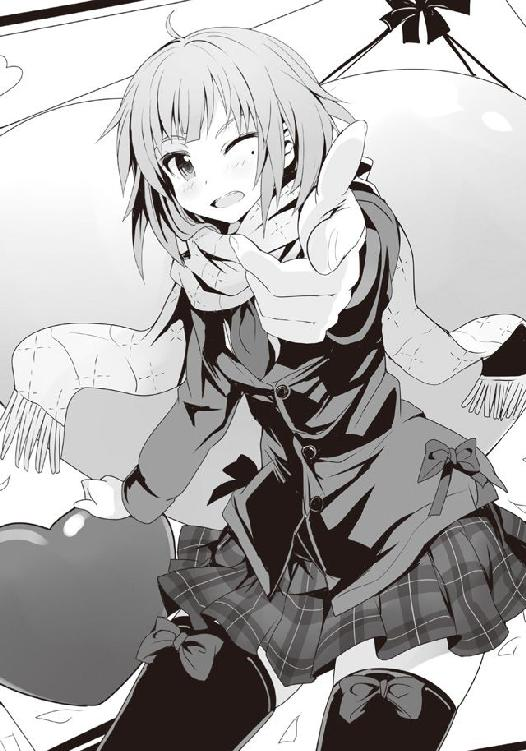
広部さん扮する恋する少女が一生懸命にバレンタインデーのチョコを作って、それを片想いの相手に渡す......というまぁ、ストレートにもほどがあるもので特にこれといって面白みがあるわけではないのだけれど、最後の決め台詞がヤバかった。いや、イタすぎるっていう意味ではなく、それを言う際の広部さんの仕草というか、表情が......いいのだ。
髪を下ろし、どこぞの制服に身を包んでふんわりとしたマフラーを巻いた広部さん。そんな彼女が視聴者に向け、ほくろのある左目をパチリとウィンクするように閉じて、指を銃にして一発撃つような仕草とともにその言葉を放つのだけれど、その顔には恥ずかしさを表すかのように、はっきりとわかるほどの赤みと、躊躇いが見て取れるのだ。でも瞳にはちょっと強気なところもあり......何だか普段強気な女の子が照れながらも一生懸命に告白しているように見えてしまい......視聴者のハートをまさにロックオンしていた。
それにはさすがに〝検閲の入ったテレビのアイドルより、いつパンチラ等のチャンスがやってくるかわからぬリアルの女の子〟だと普段から口にする神田君たちすら、ＣＭの度にテレビに釘付けとなる始末だった。
このＣＭが始まってからというもの、表情一つで人を魅了する演技力を持つ若手女優として雑誌に名が載り始め、彼女の人気にさらなる拍車をかけている。
......とはいえ、広部さんを昔から知っている幼馴染みからすると、あの表情は多分演技や演出じゃなくて、ガチで照れたのだというのを何となく察する。予想以上に恥ずかしいキャッチと仕草に照れてしまったものの、撮影してみたら結果的にいい方向にまとまったのだろう。
きっと撮影の後で一人になった時、頭を抱えて悶えたりしたんじゃないだろうか。
そんなことがわかるぐらい近くにいた昔が懐かしくもあり、微笑ましくもあり、どんどん遠い存在になっていくのを未練たらたらに寂しく思ったり......そんな彼女の姿を見ながらすえた匂いの部屋の中、男四人でチョコレートを囲んでいる今の己が哀れでもあり......。
「俺が今回提言したいのは、世の中の不平等を如何にして正すのか、ということだ！」
ＣＭが終わると同時にその空白の時間が存在しなかったかのように、神田君が振り上げた拳を床に叩きつけ、そう声を張り上げた。
「何故世間の男たちには彼女がいるのに、俺たちにはいないのだ!? この不平等は速やかに正さなくてはならない！」
......あぁ、そういえばそんな話だったっけ。僕が呆れるのをよそに、神田君は続けた。
「何故なら、これは重大な憲法違反だからだ!!」
「待て神田よ。不満があるのはオレも一緒だが、さすがに憲法違反ってのは違わねぇか？」
矢部君が至極もっともなツッコミを入れたので、僕と蔵田君は同意を示すように頷いた。
「バカを言うな、日本国憲法第二十五条において、すべての国民は、健康で文化的な最低限度の生活を営む権利を有するとある！」
「それ、昨今いろんな意味でナウなヤングにバカウケで、ビッグなムーブメントになっている生活保護に関連するもんじゃなかったっけ......？」
僕の疑問に神田君は頷く。
「そうだ。昔、ＰＣは資産であり生活保護受給者が有するべきではないとされていたが、昨今の普及状況から今では生活必需品という扱いになっている。......つまりだ、憲法が定めるところによる〝最低限度の生活〟というのは、多くの国民が持っていて当たり前のもの、一般的に普及したものを持つ、ということだ。故に!! 彼女がいるというのも同様ではないのか!?」
ドドーン！ と、派手な効果音とともに神田君の周りに集中線が現れたように見えたのは、僕だけだろうか。
「いいか、そもそもを考えてみてくれ。彼女がいるという状態、即ち〝つがい〟の関係である異性を有するのは人間という以前に有性生物としての基本的な状態だと思わんか？ さらに言うならばむやみやたらに精力を持て余すことは精神と肉体双方の健康を脅かしかねない大変危険な状態であり、これを発散することは健康状態の改善になるのはもちろん、そのまま犯罪の減少に繋がることは今さら語るに及ばない。前者は先に述べた〝最低限度の生活を営む権利〟に該当し、後者は第二十五条の後半部にある〝国は、すべての生活部面について、社会福祉、社会保障及び公衆衛生の向上及び増進に努めなければならない〟とする内容に該当する。だから、故に、総じるならばッ！ 恋人はすべての国民に須く与えられるべきものなのだよ!!」
そう、神田君は雄弁に語り、ＭＤのＣＭのいとうせいこうさんのようにえらいことを断言してみせたのだった。
「うむ、このおっぱい博士蔵田もその意見に同意だ。金は要らぬ、女を寄こせ。金は個々人の力で稼げるとしても、女を手に入れるのはもはや国の力を用いらねば無理がある」
「なるほどな。神田と蔵田の言うことはわかった。オレもまったくの同意見だ。国はオレたちに彼女を与える義務があるのは疑いようがない。つまり、今の日本の在り方は重大な憲法違反の状態だ。......大変だ、これは大きな問題だぞ」
何とかして解決せねばならんな、何故今まで是正されなかったのか、政治家はリア充どもなのか、これだから日本の政治家は......と、真顔で腕組みをして唸りだす、選挙権を持たず、消費税くらいしか払ったことのない三人を前に、僕は一体どうしたらいいのだろう......。
「あのさ、女性を物扱いしている時点でいろいろどうかと思うんだけど......生活保護って、働ける奴は働けよ、っていうのが基本にあったはずだよね？ だから個々人の努力を......」
佐藤よ、と蔵田君は哀れんだ顔をして僕の肩に手を置いた。
「おれたちが何もせずにこの世に生をうけてからの十数年を過ごしてきたわけじゃない。しこたま足掻き、藻掻き、悶々として苦汁を舐め続けてきた。今さらどこぞのクソみたいなラブコメよろしく女の子が空から降ってきてハーレム状態にならないってのはさすがにわかる......もうガキじゃないんだ。もはや荒唐無稽な夢想を将来のビジョンだと偽りそれに縋る時間はおしまいだ、もっと現実的に生きる時が来たんだよ。憲法の名の下に保護をしてもらって......な」
蔵田君と同様に僕の肩に矢部君が手を置いた。
「佐藤、考えてもみろ。人の一生は苦しむには長すぎるが、楽しむには短すぎる。何より十代という人生における花の時間に彼女がいなければ何のために男として生まれてきたのかわかりゃしねぇ。仮に二十代ならまだしも、三十代以降で十代の娘と付き合おうものならそりゃ犯罪だと世間から叩かれ――」
しまったっ!! と、神田君が声を張り上げ、頭を抱えた。
「お、俺は何というミスを......。俺たちがやろうとしていることには重大な問題があるぞ......!! 仮に我々の意見が通り、恋の生活保護を受けられたとして――！」
――キミのハートにロック・オン！ 広部さんのＣＭによって室内の議論が瞬間的に停止。そして終わると同時に動きだす。やっぱり広部さんは魔法少女だ。
「......保護を受けられたとして、ここにはその――！」
――キミのハートにロック・オン！ 二連続だった。
「......ここには支給物資、つまりこの場合恋人に......その年齢を定義する法が存在しない！」
誰もがハッとした。肯定的ではなかった僕ですら、神田君の指摘に思わず息を呑む。
そりゃそうだ。十代そこそこの僕らに女性が宛がわれたとして、それが五〇代オーバーな完全無欠の熟女だったりしようものなら、あまりに手に余る。難易度が高すぎて名作ＳＴＧ『怒首領蜂』の真ボスを思わず連想するレベルだ。そう、まさに『死ぬがよい』である。
僕らが十代だからといって必ずしも支給される女の子が十代であるとは限らず、フェロモンばらまく爆裂ボディをした女教師であったりするわけでもなければ、顔を赤らめながら僕らのハートをロック・オンしてくれるアイドルってわけでもないのだ。
国から熟女を押しつけられて生涯養えと義務付けられた己の姿を想像して矢部君とともに僕は頭を抱えた。年上はいい。爆裂ボディな女教師やツンデレ女医、はたまたおっとりお姉さんとかだったら最高だ。だが、さすがに僕らの三倍の年齢はあまりにキツ過ぎる。僕らは十代で熟女趣味に目覚められるほどの英才教育は受けていない普通の高校生なのだ......！
落ち着けぇい!! 蔵田君の怒声が矢部君の部屋で轟いた。
「甘いぜ、これだからお前たちは......。おれがいなかったら大変なことになっていたな、まったく。......いいか落ち着いてよく聞け、日本は世界でもトップクラスに平和な国だ。その国の法がそんな暴虐の限りを尽くしたような内容であるわけがない。いいか、生活保護法第二章保護の原則における第九条――！」
――キミのハートにロック・オン！
「......そうっ！ 第九条キミのハートにロック・オン！」
スパァンッ！ と矢部君が蔵田君をおっぱいマウスパットでひっぱたいた。
「お、おふぅ！ ......お、おぉ、危うく広部さんにハートを撃ち抜かれるところだった」
いや、すでに撃ち抜かれてんだろ、と誰もが思ったものの蔵田君の話が早く聞きたかったので、全員がグッと堪えた。
「......話を戻そう。いいか、生活保護法第二章保護の原則における第九条キミのハートにロック・オン!! ......お、おい、よせ矢部、何故鉄アレイを取り出すんだ？」
「矢部、死なない程度に一撃かませ。蔵田を正気に戻す。佐藤、そのデブを押さえろ」
「よ、よせ、今のはただの冗談だって！ ほら、深夜のノリ的な......なっ!? 何かやたら今ヘビーローテーションで流れてるしさ！」
深夜番組特有の、スポンサーが少ないために同じＣＭを繰り返しているのだろうが......確かに延々と聞いていると蔵田君のように心だけでなく頭まで染められてしまいそうになる。これもある種見事な広告戦略と言えよう。
「わ、わかった、真面目にやる。真面目にやるから、その鈍器をおろせ、矢部！ ......よし、いいか、続けるぞ。つまり、この第九条、つまり必要即応の原則についてなんだが、こうある。〝保護は、要保護者の年齢別、性別、健康状態等その個人又は世帯の実際の必要の相違を考慮して、有効且つ適切に行うものとする〟......とな」
彼が何を言わんとしているのかを察した僕ら三人は思わず立ち上がる。
蔵田君もまた、ゆっくりと立ち上がり......そして、全てを締めくくるように言った。
「第九条をかみ砕くなら......支給される恋人は保護されるべき者に有効且つ、適切......つまりッ!! 紛れもなく性の対象と成りうる女性だということだよ!! 同年代が好きなら同年代が、熟女が好きなら熟女が、そしてロリが好きならロリが国から支給されるというわけだ!!」
その瞬間、僕らは魂の咆吼を上げた。
勝った、僕らは紛れもなく日本という国に生まれた勝ち組なのだと実感した。日本の法は僕らに女を与えてくれる、それも性癖にピッタリな最高の恋人を国は僕らに与えてくれる――!!
男四人が喉から血を出さんばかりのそれは、男子寮を震わせ、まるで共鳴するかのようにどこからか「ロォォォォリィィィイィィ！」という野獣のような声も聞こえてくる始末だった。
僕ら高段位桜桃少年団は互いに握手し、抱き合い、自らの幸福に歓喜し、友の幸福を祝福した。世界は広大で、七〇億を越える人々が存在するが......その瞬間だけは、僕らは紛れもなく世界で誰よりも幸せを感じていたことだろう。
――キミのハートにロック・オン！
僕らは頭のネジが外れたかのように大騒ぎしていたものの、さすがに広部さんの魔法の前には黙らずにはいられない。かわいらしい彼女の照れ顔で僕らもまた一息入れる。
「......よぅし、今夜の議題はかなりいい結果を出せそうだな。後はこの違憲状態を如何にして正すか、その手段の模索だ」
だな、と何故か上着を脱ぎ捨て、筋肉はあるのに貧相に見えてしまうガリガリの矢部君が半裸で同意した。また矢部君同様、半裸になっているもののこちらはたぷたぷとした贅肉を揺らし、一人汗だくになっている蔵田君が頷く。
「まったく日本は最高だぜ。生活保護法は無差別平等、おれたち全員がこれによって救われる。そう、おれたちは法の下に平等なんだ」
平等を謳いながらどこにも女性の人権に対する配慮がなく、また同時に、逆に完全無欠の熟女に僕らが支給されるという概念もその場には存在していないことにうっすらと勘づいていたものの......それを口にするより先に、事態は急変した。
何故か先ほどまで一緒に歓喜していた神田君の目が鋭い。
「とりあえず議論が一段落したし......ちょっといいか？ うん、佐藤、お前......来週のバレンタインデー、何を考えている？」
「何を考えてるって、何が......？」
「お前はゲーム機について長々語った後にいささか気になる発言をした。あえて議論を止めぬためにスルーしたんだが、覚えていないか？ 思い出せないか？」
何だ、この神田君の鋭い目は......。まるで刑事か探偵のような......。
「佐藤、お前は言ったな。〝バレンタインデーにチョコをくれるような女の子がいないというその状況は......〟と」
神田君の言葉に、僕は己の失言に気がついた。一週間後に迫ったバレンタインデーというこの状況で、男子寮で、そして高段位桜桃少年団の前で、決して言ってはならぬことを言ってしまっている。言うなれば宗教総本山で、そこが崇める神を否定してしまったようなものだ!!
「佐藤、お前は〝その状況〟と言った。その、状況......チョコをくれる女がいないという状態を示してはいるが、しかし、前後の会話及びこの議論の場を考慮するに、俺をはじめとした蔵田や矢部の現状であることは疑いようがない。......しかし、佐藤、発言者であるお前が含まれていないというのはどういうことだ？ この状況......そう言ったのならわかる。だが、その状況とお前は言った。これからわかること......つまり、お前はバレンタインデーにチョコを貰える立場にあると自白したも同然......!!」
神田君の論理的かつ、数十分前もの発言ミスをいきなり突きつけられるという凄まじい時間差攻撃に、僕の膝は震え始める。
「これは我々に対する重大な裏切りにほかならぬ......！ 前々から怪しいとは思っていたが、ついに馬脚を現したか、佐藤!! 矢部、蔵田、佐藤を捕らえよ！ 地下への扉を開け！ 次々期寮長候補神田の名の下に、これより烏田高校男子寮名物、異端審問会を開始する!!」
気がつくと半裸の痩せとデブの二人は頭からすっぽりと二つ穴の開いた紙袋を被り、荒い息で出入り口を押さえるとともに僕を取り囲んでいた。
同様の紙袋を被りながらも神田君が窓をガードしている辺り、さすがだ。二階とはいえ、僕の身体能力を考慮して窓を突き破っての逃走を警戒しているとみえる。
「落ち着け、みんな！ 今のは......その、単に部活をやっているからだ！ 部活をやっているから、その関係で義理的なものを貰える算段が非常に高いというわけであって......いやまぁ本命が来る可能性は十分にあるわけだけれど......」
「ヒィーヒヒヒッ!! 今宵が土曜の夜であることを後悔させてやるぜ、佐藤ォ！ 楽しい夜は短いが、苦しみの夜は長いぞぉ！」
今にもヒャッハー！ とか言いだしかねない口調で矢部君が言った。
まさに絶体絶命。かつて僕が槍水先輩の足を揉みしごいたことで拉致られた拷問部屋にまた連れていかれるのだけは避けなければならない。だが、逃げられるのか、この状況......!?
絵に描いたようなピンチ。だが、その時、奇跡は起こった。
――キミのハートにロック・オン！
少女が指を銃にして一発放つ。それは性欲を持て余し、嫉妬の塊と化した野獣たちの心をガッチリロック。彼らの動きが止まる。
僕らのアイドル......いや、僕の守護天使・広部さんの魔法だった。
脱出には一瞬の隙があれば十分だ。僕は素早く蔵田君を蹴り倒して矢部君の部屋から脱出。魔法が切れたのか、背後から「待て佐藤！」と怒鳴り声とともに二人の男が追ってくるのだが......身体能力に優れ、さらには知的な僕にとってそれから逃れることは容易というものだ。
魔法は広部さんの専売特許ではない。僕だって、使えるのだ。
「何ですって!? 白梅様に荒縄で縛られて熱々のチョコレートを垂らしていただきながら鞭を打ってくださるんですか!?」
とある部屋の前を走り抜けた瞬間、廊下に轟くように呪文を詠唱。
直後にその部屋の扉が力強く開き、追ってきていた神田君と矢部君を弾き跳ばす。
「何だと!? どうやったらそんなスペシャルサービスを受けられるんだ!?」
召還獣、内本君である。ドＭの変態である。使い勝手が良くて重宝する。
追っ手を鮮やかに倒した僕は悠々と自室へ戻り、扉に鍵をかけて床についたのだった。
１
「......っていう血湧き肉躍る冒険活劇が一昨日の夜にあってさ。危うく今日学校に来られないところだったんだよ」
「......なるほど、つまりその神田さんの理論を用いるのならば、漢が好きな漢には有効かつ適切な漢が支給される、と？ ふむ、悪くないアイディアですね。生活保護として国から支給されるマッチョ......たくましい配達員の多い佐川急便がお届けする段ボール箱に納まる汗だくの漢......宅配アニキ、いや生保アニキ......十分ヤれるネタ......とりあえず、この内容をまとめると〝生まれてからずっと恋人のいない僕が国に生活保護を申請したら、たくましいアニキがやってきた！ 僕の生活、どうなっちゃうの――!?〟というハートフル・ナマポ・マッスル・ラブコメディ......いいですね！ 創作意欲がグイグイ湧いてきます！」
グッと親指を立てて僕に向けてくる白粉なのだけれど......そんな酷いネタを提供した覚えはこちらにはまったくない。
「多分主人公は普通に女の子が好きなノンケだったんですよ。でも支給されたのがアニキ。何で!? と大慌てするものの周りからは実はそっちが趣味だと思われ、苦しむ主人公。けれども家にやってきたアニキと共に暮らしているうちにそれまで孤独だった主人公の心は解きほぐされていき、初めて人の優しさ・温かさに気づく......。周りからの嘲笑にも慣れてきた頃、実は手違いでアニキが支給されたことが判明。国は謝罪とともにアニキと女の子を交換しようとするのですが、そこで主人公は女の子よりアニキを取るのです。一緒に暮らし、悩みを聞いてもらい、初めて自分の全てをさらけ出した頼りがいのあるアニキを主人公は選び取るのです！」
眼鏡装備の白粉が、視線を床に向けつつ手の甲で口を隠すようして割と面白そうな話を語りだしたので、僕はあえて何も言わず彼女の言葉を聞き続けた。
きっとその交換されかかった女の子が「主人公には本当なら私が支給されるはずなのにー！ ムキーッ！」みたいになって、気の強い彼女は何とか主人公を自分のものにしようと奮闘して誘惑してみたり......。でも毎回アニキがコメディ的に邪魔してうまくいかない。そんなことをしているうちに作品がややマンネリ化しそうな気配が出てきた辺りで、国の担当官がやはりノンケにマッチョを送ったのは良くないし、失態を放置したことになるとして、今度は違うタイプの女の子を主人公に送りつけるのだ。そうこうしているうちに徐々に国が主人公に何とか女の子を宛がい、マッチョを回収しようと奮闘し始め、気がつくと主人公は女の子（＋アニキ）に囲まれたハーレム展開に......というラブコメだな。
意外に悪くない。アニメ化までをも視野に入れた幅広い展開が期待される。
「アニキもアニキで、あえてノンケなはずの主人公が自分を選んでくれたことを嬉しく思い、涙。もはやそれは支給されただけの関係ではなく、一つの家族としてお互いを認め合い、その夜に〝おい、本当はコレが欲しかったんだろう？〟〝アッ、アァッ!? アニキー!?〟〝ぐぅわははは、お前はもう俺のフランクフルトなしじゃ生きられない体なんだよ!! たっぷりと俺の子種をお前の中に支給してやるぜ!!〟そして夜の街に轟くアッ――あぅ!!」
......もっと早く止めるべきだったな、と僕は若干の後悔を胸に、白粉の後ろ髪を引っ張った。
「そんな話を作ってほしくて僕は長々と一昨日の話をしたわけじゃない......」
「え？ あたしはてっきりそういうことかと......。それじゃ、何故いきなりそんな話を......？」
「何故話したかって、そりゃお前......」
決まってるだろ、と僕は心の中で言うものの、それを口にすることは出来やしない。
僕はそれとなく隣に座る白粉から視線をずらしていく。放課後のＨＰ同好会の部室をぐるりと見渡すようにしつつも、最後、大きな円卓の対面に座っている槍水先輩へ。
先輩は今日出されたという物理の宿題を黙々と解いていたものの、僕の視線に気づいたのか、「ん？」というように顔を上げた。
「あぁいえ、何でもないです。......いいか白粉、今の話は単に僕が暇だったからであって......」
「ということは、今のネタはあたしの独自の判断で好きにしていい、ということですね!? ありがとうございます、おいしくいただきます！」
......んなこと言ってねぇだろうが。
そう思うものの、何だか面倒臭くなってきた僕は適当に白粉をあしらい、ため息。
僕が話した理由は簡単である。単に今週末こそが、男として試される審判の日、バレンタインデーだからだ！ 白粉はともかくとして、槍水先輩にそれとなく「チョコ欲しい」アピールをしておかないと、忘れ去られたりしたら一大事である。
......現状、ちゃんとしたチョコをくれる可能性があるのは先輩だけなのだから......。
それに今年のバレンタインデーは日曜日で、なかなかに難易度が高い。だからこそ、ある程度過剰にチョコ欲しいアピールしておかないとスルーされてしまいかねないのだ。
嫌だよ、僕。一昨日の夜にみんなで囲んだチョコレートを当日の夜にアイツらと貪るのとか。
アレ、〝腹に入れば皆一緒。つまり美少女からのチョコも、自分で買ったチョコも一緒。せめてリア充と同じ状態になるために、一四日の夜に、みんなで喰おう〟と論理的に哀れなことを言いだした蔵田君が用意したものだ。......絶対に食べたくなかった。
「......ふむぅ。しかしながら生活保護というお堅いシステムに、こんなドラマの種が詰まっていたとは、正直あたし、驚きです。今凄くアイディアが......！ 昨夜に一本仕上げたばかりで執筆にはちょうどいいですし......今夜からでも......あ！ そうだ、閉まる前に図書室で憲法と生活保護関係の資料を借りてこなきゃ！」
言うなり白粉は席を立ち、某黒い虫のように機敏な動きで部室を後にした。
部室に残された僕は先輩の邪魔をしないよう、おとなしく窓から階下の駐車場とかを見やる。
先輩か僕、どちらかに宿題が出たりするとこんなふうに相手がそれを終えるまで時間を潰すか白粉と遊ぶのが恒例なのだ。
何とはなしにボーッとしていると、先ほどまで聞こえていた先輩のペンの音が消えていた。そして、トントンというノートを円卓に叩き、消しゴムのカスを落とす音。パブロフの犬がごとく、僕は敏感に反応し、先輩の宿題が終わったのだと思ってそちらを見やる。
すると先輩がいつものように僕を......あれ？ 見てくれない。というか、何か先輩、僕から意図的に視線を逸らしているような......？
「......そうか、もう今週末か」
先輩が顔を逸らしながらそんなことを呟くので、僕は高鳴る鼓動を悟らせないようにクールを装いつつ「え？ 何がです？」と軽く追撃してみる。
「なぁ、佐藤、今週末......というか日曜日なんだが、空いているか？」
日曜日！ つまりバレンでタインがデーしちゃう日ですね!?
「は、はい、まったくビックリするぐらい予定がないです！」
先輩は顔を見せないようにしつつ、消しゴムのカスを集めて捨てると、円卓の上のノートと教科書をまとめ......それを使って目元から下を隠すようにしながら、チラリと僕を見やる。
「そうか、良かった。その、何だ。......その日、良かったらでいいんだが......うちへ来ないか」
バレンで......タインが......デーしちゃう日に、お宅訪問だと......!?
先輩、いったいどうしたんだ!? まるでかの有名な、スターリングラード戦の行方を決定づけたソ連軍の『ウラヌス作戦』じゃないか！ 自宅という名の包囲網を敷きつつ僕を攻め落とすつもりか!! 先輩はまさか赤に染まったのか!?
「い、いいんですか？ え、えぇ、お邪魔させていただけるのなら、はい、行かせていただきますけど。でも、そのえっと......どうして......」
たまに素直な自分が嫌になる。考えるまでもない、恋人の日に男を自宅に呼ぶなんて一つしかないじゃないか！ それなのに〝どうして？〟だ？ 何だそのエンジョイプレイ中に恥ずかしい言葉を無理やり彼女に言わせようとするＳッ気のある男みたいなマネは......。
これで先輩が恥ずかしがって「やっぱいい、何でもない」とプイっとされようものなら......それはそれでデレツンでかわいくて興奮しそうだな。ハァハァ。
しかし僕の焦りと興奮を知ることもなく、先輩は僕の質問に当たり前のように答えてくれる。
「......またクリスマスの時みたいになったら嫌だからな、少し早めに言っておこうかと思って。ん、ともかく、空いていて良かった」
そう言って顔を隠していたノートと教科書を外し、先輩は少し恥ずかしそうにニッコリと笑う。その頬は、僕が想像した通り......朱に染まっていた。
その笑顔、その赤み、そして家に呼ばれたという事実に、僕の胸の内で、守護天使が声を張り上げる。――キミのハートにロック・オン！
２
あの衝撃的な包囲網戦宣言をされてからすでに数日が経っていた。多分僕の行動はあの瞬間から若干おかしくなっていたと思うのだけれど、バレンタインデーという審判の日が近づいていたこともあって、学校全体、男子寮全体もだんだんとおかしな空気に呑まれつつあったので、さして目立たなかったのは幸運というものだろう。
実際あの異端審問会が開かれそうになった後とはいえ、一旦時間を置いたことで神田君たちも冷静になってくれて、今では当日は如何にして行動すべきか、という内ゲバ――同一組織内部での暴力抗争――よりもはるかに建設的な懸案事項の打開案を模索するだけだ。
......ただ、たまに暗殺者のような眼で見られたり、夢うつつながら深夜に密かに僕の部屋の鍵をガチャガチャやられていた気がするのだけれど......僕が神経過敏になっているだけだろう、多分、きっと、おそらくは......。そう思ってないと怖くて寮で寝てられんわ......。
そんな感じに僕は毎日ドギマギしながら日々を過ごすのだけれど、僕のハートをロック・オンしちゃっている槍水先輩の方はといえば、何だかあまりに普通に日々を過ごすものだからこちらが不安になるほどだ。ひょっとしてあの包囲網戦の宣言は僕の夢だったんじゃないのか、こちらが期待した妄想でしかなかったのではないか、先輩は実はアカに染まらずに資本主義のままなんじゃないのか......。そんなふうに考えてしまう。
だが、そんな僕の不安を見透かしていたのか、それとも先輩もまたクールを装っているだけで内心ドギマギしていたのかわからないが、昨夜、つまり木曜の夜、別れ際に「日曜のこと......忘れていないな？ ......うん、覚えているならいい。いいと言っている、もう言うな」といったことを口にしてくれたのだから、多分現実であることは間違いない。その時は顔を僕に見せてくれなかったので、先輩が共産・社会主義者かどうかまではちょっとわからなかったけど。
僕が大人の階段を昇る日――即ちスターリングラードが再びソ連の手に戻る日まであと二日。そして先輩が、有名すぎて逆にチープな印象になりつつある、かの名狙撃手ヴァシリ・ザイツェフのように見事に僕のハートを狙い撃った日から四日。折り返し地点はとうに過ぎた。後は金曜日の今日、そして明日の土曜さえ過ぎれば......。
金曜日の朝、その当日までの日付を指折り数え、大人の階段に足を踏み出すまでの予想時間を秒単位で計算してみたりしつつ、僕は登校した。
いやぁ、凄いよね、校舎の玄関に足を一歩踏み入れた瞬間からの緊張感。普段ならば僕もその空気を生み出す一人なのだろうけれど、今回はすでに先約――安心保証・槍水宅へのご訪問する権利を持っているが故に、客観的にそれらを感じることが出来た。
ごくごく当たり前に、ごくごく当たり前の日常の雰囲気を演出しようとしている男子たちの気配はなかなかのものである。何だか全員がトイレに行きたいのを必死になって堪えて平静を装っているような、そんな雰囲気だった。
今日はまだ二月一二日だけれど、明日、明後日は休日。即ちあらかじめ決まった相手がいるのならともかく、告白を含めた意味でのチョコの授受が行われるとしたら今日の可能性が極めて高いというわけだ。だから今現在緊張しているのはまず彼女なんていない連中であり、神田君の言葉を用いるのならば〝国から保護を受けるべき対象者〟というわけだろう。
せいぜい保護を申請してマッチョなアニキでも送られてくるがいいさ、と僕は少しばかりの優越感とともに教室に入った。
教室内は平静を装って隅っこで小説を読んでいる奴、黙々とスマホを弄っている奴、寝ているフリしている奴などがいるものの、少数派である。ふむ、なるほどこれは確かに不平等が生まれているな......。是正しなくてはならぬという神田君の気持ちがわからないでもない。
まぁ僕には関係ないけど。優越感に浸りながら自分の席に着くと......ふと、後ろの白梅の席が空いているのが目についた。いつもなら僕よりも早くに来ているはずなのだけれど......？
「おはようございます。佐藤君」
おぉ、疑問に思った途端に現れるとは。......てっきり体調でも崩して休みかと思ったじゃないか。あ、もしかしてあの日かい、マイハニー？ などと表情には出さずに胸の内だけで朝から割と酷いセクハラをかましながら、僕はいつものように軽く応じる。
「おはよう。今日、珍しく遅かったね」
「そうですね。少し朝の準備に時間がかかってしまって。あと、父が面倒で」
なんのこっちゃ、と思っていると、白梅が席に着かずに鞄を開ける。そして......教室内に驚くほどの緊張を走らせた。
何故か白梅が僕の脇に立ち、何かを差し出していたのだ。
「佐藤君、良かったらこれ、受け取ってください」
そう言って、白梅が......白梅梅が、座っている僕に......綺麗な白いリボンのついた箱を差し出されましたとです。
「......................................................え？」
思考が数秒ほど......飛んだ。
いやいや、だって落ち着いて考えてごらんよ！ 普段彼女がくれるのはほんのわずかな幸せの他には暴虐の限りだぜ？ それがこんな......ははーん、さてはこれはＣ４だな？ リボンがそのまま信管に繋がっていて、それを解くと同時にボンッってわけだ。やるな、白梅、ついに爆薬に手を出し始めたか。ハハッ、しかし爺さんのトラップを命がけで解除してきた僕にかかれば多少の起爆装置ぐらい解体してやるぜ。......えっと、理科室に液体窒素はあったかな......？
「いりませんか？」
さらりと白梅様がおっしゃりました。先ほどから表情はこれといって何もなく、淡々としているのが何とも判断に迷う。Ｃ４をはじめとした高性能爆薬の類ではないとしたら......何だ。毒か？ それともジャングルの奥地に潜む猛毒の蛇か蜘蛛か。あとは......。
おや？ 白梅様が眉根を寄せてやや不機嫌そうな顔になったぞ？
「......何でそんなものをわざわざ渡すんですか。バレンタインデーですから、ただのチョコレートですよ。いらないですか？ それならそれで構いませんけど」
どうやら僕は考えていたことを口に出してしまっていたようだ。
「いただくよ！ あ、ありがとう......でもどうして僕に......。いや、凄く嬉しいんだけどさ」
震えそうになる手で僕は座ったまま彼女からの箱を受け取る。握り拳大のそれはさほど重くなく、金属類の使用や生物の気配はない。強いていえば本当にチョコの感じである。
箱も市販のそれではなく、明らかに業者ではない普通の人が丁寧に包んだ感じのもの......。ほ、本当にチョコなのか？ バレンタインデーに、この僕がチョコレートをいただいた......？ それもたまにいる無差別平等にお徳用チョコを配る感じのものではなく、ピンポイントで？ さらに言えばクラスメイトが大勢いる朝の教室という渡した瞬間から公認のカップルとなることが明白である場で渡すということはガッチガチのガチだという証拠にほかならなくないか......？ 何より、これをくれたのが......白梅......様......だと......？
そりゃ教室内に緊張が迸るわ。道をお歩きになっていた女王陛下がいきなり平民の一人に騎士の称号を与えたようなものである。さらに言うなら、僕が彼女の前で跪いて賜ったのではなく、彼女が座っている僕に渡してきた......という状況は明らかに僕の方が二人の関係において優位性を持つわけであり、これを夫婦関係において表現するのならばまさに亭主関白のそれであり、あの白梅を従順な嫁とするのは有りか無しかでいえば当然有りでありアリアリアリアリアリアリアリアリアリアリアリアリアリアリアリアリアリアリ......アリーヴェデルチッ!!
「......ふぅ、思わず心の中でブチャラティのスタンド能力、『スティッキィ・フィンガーズ』が発動してしまった。まずは落ち着こう、そうだ、ここはプッチ神父に倣って『素数』を数えて落ち着くんだ。２、３、５、７、９」
「９は素数じゃないですよ。３の倍数です。......いきなり何を言いだしているんですか？」
お、僕の従順なマイワイフがゴミを見るような目で僕を見下ろして......いや、見下しているぞ。おいおい、どうしたんだ。
ははーん、さては『ジョジョの奇妙な冒険』シリーズを白梅の奴、まだ読んでないんだな？ 仕方ない、今度全巻担いでお宅訪問しつつあの美人のお義母さんにご挨拶するとしよう。
「ちょっと正気を失ってしまってたんだ、気にしないでくれ。でもさ、本当にコレどうしたの、白梅。いや、凄く嬉しいし、その、アレだ......えっと、新婚旅行はどこにし――」
頭をガッと掴まれると同時に僕の視界には白いニーソで包まれた白梅様の細い足、その膝が音速を超えんばかりの速度で迫り、人体急所の一つ印堂、即ち僕の眉間を的確かつ激烈に打つ。
僕はチョコを両手で保持したまま椅子から転げ落ち、痛みのあまりにのたうち回った。
「気色の悪いことを......怒りますよ？」
そう言いながらも白梅は倒れた椅子を直してくれる辺り、厳しさの中に優しさを感じるわい。
はぁ、とため息をつくと、彼女は自分の席に戻ってしまう。
「あんまりふざけたことを言っていると、それ、返してもらいますからね。......そう白梅梅は言うものの、もしそれで本当に返されてしまったらどうしようとありえない不安が胸を占める。だがそれを面には出すまいと梅はグッと表情に力を入れ、必死にクールを装って自分の席に戻るのだった。梅は、緊張を纏った恥ずかしさから愛しの君である佐藤洋の顔を見続けることが出来ず、頬を赤らめたまま鞄から取り出したノートと参考書で予習をするフリをして周りからの目を必死に......えっと、どうしようか？」
「そうですね、とりあえず......怒っていいですか？」
一度席に戻ったものの、再び立ち上がると、白梅様の心理描写を口にしていた床の上の僕に蹴りを一発。ドフッと重い一撃を腹に喰らい、僕はチョコを抱きしめるようにしつつ悶絶した。
そこにさらに白梅様の足が僕の頭に置かれ、グリグリとさらなる攻めを......。
「勘違いしているようなので言っておきますが、それは単に先日のお礼です。あと、父が絶対に渡しておけとうるさかったからです。わかりますか？ わかりましたよね？」
凄いよね、どこの世界に足でグリグリやりながら「先日のお礼です」と言う女の子が......。
「クッ！ 佐藤の奴、この世の快楽の中でも上級な部類のものを今日という日に白梅様から賜りやがって......クソックソッ!! 羨望と嫉妬心で身も心もどうにかなっちまいそうだっていうのに、何故俺の股ぐらは大気圏を突破可能なほどのエネルギーをチャージして......!! クソッ、俺は今日一日前のめりで過ごすしかないのか!?」
......あぁ、内本君の世界では〝アリ〟なのか。まぁ彼というかＭの皆さんの世界では、〝アリアリ〟なのだろう。......うん、アリーヴェデルチ!!
――やっぱりあの二人って......。――以前も式には呼んでやるからな、とか言ってたし。――マジか、密かに憧れてたのにッ！ ――しかも父がどうこうって......親公認か......。――でも意外、白梅さんって佐藤君みたいなのが好みなんだ。もっと優良物件あるのにね。――やっぱアレじゃね、遺伝子的に自分にないものを求めたんじゃね？ ――ボラーレ・ヴィーア！
そんな声が聞こえる中、僕は何とも気まずい一日を過ごした。バレンタインデーだ、本当なら遺伝子レベルで優れる僕には子作りしたい年頃の女子が本能的に呼び寄せられ、チョコの受け渡し祭りみたいな展開になってもおかしくないのだけれど......まったく期待していなかった白梅からの贈り物のせいで、何だかそういったことへの期待というか準備に気が回らない。
まぁ白梅への驚きもあったものの......それに加えて授業が終わるごとに僕の教室を覗きに来る、荒い息の紙袋を被った男たちのせいもある。いつ手を出してくるかと警戒しているのだけれど、とりあえず校内で行動を起こす気はないらしい。今日が金曜ということを考慮すると......僕が帰宅した途端まず間違いなく地下への扉が開かれ、楽しい週末が待っていることだろう。
......今夜はどこかに身を隠した方が良さそうだな。
せめて白梅が他の人間にもチョコを渡せば良かったのだろうけれど、アイツ、僕にしか渡さないときた。てっきり昼食時にでも白粉へ渡すのかと思いきや、彼女が手にしたのはいつものお弁当の入った巾着のみ。どこにもチョコが納まってそうな箱はなかったのだ。
完全に、白梅のチョコは僕だけ......。その事実が周りの目をより確定的なものとしていた。一応本人はクラスメイトから「付き合ってたの？」と訊かれれば「違います。そんな事実はありません」とさらりと、そしてきっぱりと否定はしていたけど。
僕としても何だか悪い気はしないのと......もし、本当にこれで以前のお礼が終わりだとしたら最悪だ、という恐怖から白梅に話しかけることも、顔を見ることも出来ず......。
いやだって〝君の周りで裸でムーンウォークして、ポゥ！ して、ジョジョ立ちしても許してくれる権利〟とチョコじゃ......やっぱり男としては前者の方がいいじゃないか......。
ちなみに、僕が事実を知るのを恐れて彼女を変に意識してしまったせいか、周りからは〝照れ〟に見えたらしく、僕と白梅がズッコンバッコン説により一層の信憑性が増したのだった。
「......だからさ、今日は何だかおかしな空気で。白粉って白梅から本当に何も貰ってないの？」
そんなこんなの今日のことを話しつつ、放課後の部室にて白粉本人に訊いてみた。
「はい、梅ちゃんからは何も。ただ、日曜日に家で遊ぶ約束してるので......」
あぁ、そういうことか。まぁ確かに今日はまだ一二日。バレンタインデー当日ではないのだ。本命はやはり当日に渡してこそであり、一二日に渡すということは土日の間は一切会わないのだとしているわけで......なるほど、白梅的には、今日渡すという時点で義理であることを強調している、とでも思っているのかもしれない。
......ちょっと残念だと思ってしまう自分が、何か哀れだ。ガチならガチで割と僕は......。
「あの、佐藤さん。忘れないうちに言っちゃおうと思うんですけど......これ」
白粉はもじもじとして、まるで昔の彼女のように俯いたまま、紙袋を差し出してくる。
「ナニコレ？」
「あの......その......一応、チョコというヤツです。多分、汚くないと思います。手作り......といっても、市販のを解かして固めてデコーレションしただけなんですけど。あの、衛生面には最大限に注意を払ったので、多分、大丈夫です！ 手はちゃんとアルコール消毒しました！」
「あのな、そういうシチュエーションはいいと思うんだ。もじもじした女の子から贈り物を貰うっていうのはそりゃロマンさ。だけどな、白粉。......まずお前が眼鏡を着けている時点で警戒すべきだと僕の経験則が訴えているし、この紙袋の中にある薬品の瓶は何だ？」
「あっ......しまった！ つい一緒に......!!」
渡された紙袋は何故か四つのラッピングされた箱......と、明らかにヤバげなデザインの箱が一つ。手にとって見れば、それは空ときている。ここから導き出される結論はバカでもわかる。
「お前、この『スーパー媚薬 もうオラのあそこは波動砲、チャージ一二〇％!! 溢れ出る性欲!! もはやこれであの草食系な彼も穴があれば挿れずにはいられ（以下略）』......といった明らかに真っ当じゃないドラッグをチョコにぶっ込んだだろ」
「......さ、さぁて何のことだか。あたしはただ『生保アニキ』のネタを提供してくださった、佐藤さんの寮のお友達にもお礼代わりにと丹精込めてチョコを作ったわけでして、えぇ」
「丹精っていうか、悪意を込めたろ、お前。多分通販か何かで買ったその媚薬を入れたチョコを金曜の夜に男子寮内で食べさせることでよからぬ関係に発展させようと企みやがったな」
「なぁに溢れ出る性欲に負けて一度でもケツで快楽を味わっちまえばこっちのもんですよ!! えぇそうです、クスリの力で男子寮をハーレムランドにしてやっ――あぅ！」
「なるほど、チョコの箱が複数個あるのはそういった理由からか。......悪魔か、お前。人を地獄に誘うにしてもアグレッシブが過ぎるだろ」
「......うぅ、す、すみません、ちょっとした出来心で。でも、佐藤さん、よくこの断片的な情報だけであたしのプランをそこまで......。ははーん、さては、佐藤さんもこんな展開を考えたことが――あぅ！」
「ねぇよ。......何、お主も悪よのぅみたいな顔しやがってからに。大体察しがつくわ」
まったく、と僕はその紙袋を白粉に突き返そうとしたものの......やめた。邪悪な思惑が込められているとはいえ、これは紛れもなく白粉からのバレンタインデーチョコレート......。
僕は今一度まじまじと白粉を見やる。小柄でやや幼児体型とはいえ、それは決して悪い方向にばかり作用しているわけではない。日の光をろくに浴びない生活をしているせいなのか、白く柔らかそうな肌はとてもきめ細かく、可憐で思わず手が伸びそうになる。小動物のようなクリクリとした瞳が眼鏡越しに見上げてくるその様子は彼女の内面の闇を知らなければとても可愛らしく、男心を擽るものである......。
......何より文化祭の時に、神田君たちは白粉を美少女だとして扱っていたような記憶が......。
「あ〜、白粉、アレだ。これは僕の分はともかくとして、他の連中の分はちゃんと渡しておくよ。うん、きっと喜ぶはずだ」
「え？ いいんですか？ ......あ、ありがとうございます！」
驚き、そして顔を輝かせる白粉は弾けるような笑顔で言った。この笑顔の意味さえ知らなければ......きっと神田君たちは喜び勇んでこの危険物を貪ることだろう。美少女......っぽい女の子から貰ったチョコレートにきっと彼らはいたく感激するだろうし、僕への嫉妬心を和らげるのは確実だ。その後は部屋の鍵をしっかりかけておけば、まぁ、大丈夫だろう。男子寮ということもあってか、結構みんな部屋の鍵をかけないで寝ているから万が一、穴を求めて動き出したとしても、わざわざ面倒な僕のところにまでは来るまい。
「あたし......家族と梅ちゃん以外の人に手作りのものあげるのって、初めてです」
白粉は頬をほんのり赤くして初な感じに言うのだけれど......その初めての品に薬物をぶっ込む汚れた精神はどうかと思う。
槍水先輩がまだ来ないので、いつものようにノートＰＣを準備する白粉の隣に僕は座った。
「......それで、例の生保アニキは出来てんの？」
「えぇ、割といい感じに第三話まで書き終わりました。ちょっと法律関係の下調べで時間がかかっちゃいましたけど、その分説得力のある内容に仕上がっているんじゃないかと」
......早いよ、もう三話って。まだ四日しか経ってないっての。
「それでですね、以前ここでお話しした内容と大体同じで、恋人も友達もいないノンケな主人公に手違いでアニキが支給されてさぁ大変ってな感じなんですけど、その後交換されかかった女の子が『主人公には本当なら私が支給されたはずなのにー！ ムキーッ！』みたいになって、気の強い彼女は何とか主人公を自分のものにしようと奮闘して......。でも毎回アニキがコメディ的に邪魔してうまくいかない。そんなことをしているうちに作品がややマンネリ化しそうだったので、国の担当官がやはりノンケにマッチョを送ったのは良くないし、失態を放置したことになるとして、今度は違うタイプの女の子を主人公に送りつけるんです。結果として国が主人公に何とか女の子を宛がい、マッチョを回収しようと奮闘し始めるのですが、気がつくと主人公は女の子よりアニキが、いや男がいいんだ!! と、自分の本当の性癖に気がつきアニキと夜な夜なハードプレイを展開するのです!!」
......どうして途中まで白粉と僕は同じ妄想をするのに、最後の最後でこうもわかりあえないのだろう......。
多分感性は近いのだろうな、僕とコイツ。でも男女の差以上に性癖が決定的に違うのだろう。
「なぁに業の深い話ししてんだよ、相変わらずだな、仙の後輩どもは」
いきなりそんな声が聞こえて、僕と白粉は背にしていた部室の出入り口を見やれば......そこにいたのは、白粉よりも小柄で丸顔、何より特徴的なのはヘアピンでおでこを出しつつ、生意気な悪ガキっぽい目をした女性――木之下桃先輩だった。
「あ、洋君、花ちゃん、やっほー」
木之下先輩の後ろからは大きなリュックを背負い、バレッタで髪をアップにまとめたおっとり顔の女性――紫華蔓先輩。......ちなみに彼女が電波さんであることを僕は忘れていない。
「桃、蔓、止まるな。さっさと部室に入れ」
そして最後に槍水先輩が現れ、二人を室内へ押し込んだ。
「どうしたんです、先輩たち」
「ん、いやなに、蔓がお前たちにバレンタインデーだから手作りのチョコを渡したいそうだ」
「チョコっていうか、焼きチョコケーキだけどね。仙、テーブル借りるよー」
言うなり、紫華先輩はリュックを下ろして、中から意外なほど大きな箱を取り出す。
木之下先輩や槍水先輩が「おぉ〜」と感嘆の声を上げる中、得意げな顔をして紫華先輩が蓋を開けてみれば......直径二〇センチほどの見事なワンホールケーキがお目見えした。
上に粉砂糖が散らされたその見事なさまは手作りとは到底思えないレベルだ。
「それじゃ切っちゃうねー」
そう言って紫華先輩はリュックから紙に包まれた幅広のナイフ......ではなく、デザインがやたらにナイフっぽいケーキサーバーを取り出すのだけれど......電波な人がこの種のものを持つと、途端に危険な雰囲気が漂いだすな......。
木之下先輩が勝手にリュックから紙皿とフォークを取り出し、円卓の上に並べていく。
「蔓のヤツ、あんなナイフっぽいのを持ってきたもんだから、今朝クラスで大変だったんだよ。蔓、ヤンデレ化か!? って」
「酷いよねー、ただのケーキサーバーだっていうのにさー」
「何となくクラスメイトの皆さんの懸念が凄くよく分かります。紫華先輩が持つと危ない気が」
「えーナニソレー、洋君まで酷いなぁ。ケーキ、小さくしちゃうよー」
かくて切り分けられた五つのケーキ。それは焼かれたことで色合いが淡くなっている表面と濃い内部の二層になっていた。それは見るからに、何とも見事なしっとり感だ。かといって全体がクリーム的にどっしりとヘビーな感じではなく、断面にはきちんと気泡が見て取れる。
槍水先輩が珍しく珈琲を淹れてくれた後、僕と白粉はお礼を言い、フォークを手に取った。
召し上がれ。そんな紫華先輩の優しげな声に促されながら、その三角柱から一口分をカット。表面はやや固いものの、その部分を抜けるとスッとフォークが通る。
口にしてみれば......お見事。しっとりとしていながらもほろりとした食感。決して重過ぎず、軽くもない、絶妙なバランス。それを舌の上で転がすようにして味わえば、途端にとろけるようにして染み出してくるチョコレートのまったりさ。思わずクラリとくるほどに濃厚だ。
口から鼻腔に漂うカカオの香り、ほろ苦さ。そしてワンテンポ遅れてやってくるクリーミィさを有する甘やかな味わいが全てを包み込み、驚くほどの満足感と次の一口への誘いを生む。
「うわっ、これ本当においしいやつだ。凄いですね、紫華先輩」
「えっへん！ 昔から料理やお菓子作りは得意だからね！」
まだ木之下先輩と紫華先輩に慣れていないのか、先ほどから静かに存在感を薄れさせている白粉が僕の隣で珈琲をすすると、あっ、と声を上げる。
「槍水先輩、ひょっとして......えぁっと、この珈琲って......」
フォークを口にしながら瞼を閉じて昇天しそうな顔をしていた槍水先輩が、白粉の声に瞼を開き、「ん？」と顔を向けてくる。
「あぁ、わかるか。そうだ。実はこのために昨日用意しておいた。蔓が今回は何を作るのか、三日ぐらい前に桃と二人で聞き出してな。それに合わせたんだ」
「......仙、あれって聞き出したっていうか、ほとんど脅迫だよね......。今年はケーキ的なものが食べたい、濃厚なのが、ってお昼休みとかにずっと二人して耳元で......さ」
「何言ってんのさ。あくまで桃と仙はお互いに独り言を囁いていただけだぞ、なぁ仙」
「桃の言う通りだ。それに私はどうせ食べるのなら飲み物にもちゃんとしたものを合わせようと思ってだな。つまりあれは――」
何か、要望に従わされたのに、木之下先輩と槍水先輩の二人からやたらと責められる紫華先輩が哀れだ......。
そんなことを考えながら珈琲をすすってみれば......なるほど、確かに紫華先輩の作ってきたガトーショコラと相性は良さそうだ。ガトーショコラの方はまったりと濃厚だから、珈琲の方は軽い味わいのものをチョイスしたのだろう。
フルーティな香りに、ほどよい酸味。口がチョコレートで埋め尽くされたのを良い具合にリフレッシュさせてくれ、次の一口がまた新鮮なものになる。濃厚なお菓子は食べ過ぎると舌に倦怠感が生まれるものだけれど、こういう口直し的な飲み物があるといくらでも食べられる。
「いやでもホント、おいしいですよ、これ。この大きなリュックってこれのために？ ひょっとして......クラスメイトにも、とか？」
「うん。わたし、毎年クラスメイト全員に配ってるんだ。なんてたってせっかくのバレンタインデーなんだからね！ ......あ、でもケーキは特別で、みんなに配ったのはコレね。こっちも洋君と花ちゃんにあげるよ」
そう言ってリュックから紫華先輩が出したのは、厚さ二センチほどにカットされたチョコ色のパウンドケーキ。それ二枚が透明な袋に入れられ、かわいらしいリボンで封をされていた。
......これはこれで結構な手間だろう。しかもクラスメイト全員――多分この人の雰囲気からすると男女含めてだろう――となるとかなりのものだ。
なるほど......これが電波さんのパワーか。普通の人なら女子力高すぎるだろ、といった感想を抱くところだが、電波さんならその尋常ならざる行為に若干の狂気を感じずにはいられない。
「昼に桃と一緒に食べたんだが、このパウンドケーキがまたなかなかうまいんだ。......ただ、あれだな、ガトーショコラを食べながらだと、濃さで負けるから、少し味わいが鈍るかな」
そう言って槍水先輩は、本当にガトーショコラを食べつつ紫華先輩のリュックからパウンドケーキを取り出し、食べ始める。何だかその姿が子供っぽくて、かわいらしい......のだけれど、僕は先ほどからある疑問が脳裏を過り続けていた。
「あの、先輩」
「うん、なぁに、洋君？」
「あぁいえ、紫華先輩じゃなく、槍水先輩になんですけど......」
チェーッと、わざとらしく不満げな顔をする紫華先輩に、パウンドケーキをほむほむと食べる木之下先輩が「蔓は自意識過剰だな」と口にする。その途端、その広いおでこに、ぺちっと紫華先輩の軽い平手が。しかし木之下先輩は表情を変えず、ほむほむと食べ続けていて......何なんだろう、この人たちの関係性は......。
「どうした、佐藤」
「今こんなにいっぱい食べちゃってますけど、今日スーパーはどうするんです？」
「ん、まぁ腹の虫の加護は落ちると思うが、普通に行こうと思っている」
「あ、そうですか。......多分コレ、相当カロリーいっているんじゃないかなぁと思ったんで」
僕が禁断の言葉『カロリー』を口にした途端、ほむほむとパウンドケーキを貪っていた木之下先輩と、ガトーショコラの最後の欠片を口に入れた槍水先輩がピタリと固まった。
そして自然と全員の視線が作り手である紫華先輩に集まっていくと、彼女はやや俯きながら、フフフフ......と電波さんらしく不気味に笑う。
「......いい？ 桃、仙。甘い物を食べるっていうのはある程度の業を背負うものなんだよ......」
グッと震え始めた槍水先輩がフォークを握りしめる。
「......まっ、回りくどい言い方はよせ、蔓。真実を......真実を、言え!!」
「蔓......お前、まさか、桃たちを......!?」
唐突に立ち上がった木之下先輩が円卓をドンっと叩く。
途端に緊張感が増した部室内にて、紫華先輩だけが笑い続け、そして彼女はおぞましきことを口にした。
「手作りだから大雑把な計算になるけど......このカットサイズからすると、ガトーショコラは三〇〇キロカロリーぐらいかな」
サン......ビャ......ク......？ 木之下先輩が片言で復唱するも、まだ驚きの中にもかすかに余裕があった。まだ許容範囲なのだろう。
「それでね、パウンドケーキは......意外にもたった一切れで二〇〇キロカロリーはあるんだ」
槍水先輩が目を見開き、ガバッと音を立てて立ち上がった。
「なん......だと......!? それじゃ何か、私は昼にお好み焼きバーガーとともにパウンドケーキを四切れ、つまり食事とは別に私も桃も八〇〇キロカロリーを摂取したというのか!?」
「......それに加えて今のガトーショコラ、そしてパウンドケーキを追加でさらに二切れ食べたよね？ ......甘い物だけで都合一五〇〇キロカロリーだね」
僕の記憶が確かならば、女性の一日の平均摂取カロリーは二〇〇〇キロカロリー弱。槍水先輩が食べたという炭水化物の化け物であろうお好み焼きバーガーを考慮すると......。
「テロだ!! 蔓が桃たちを標的とした史上稀に見る残虐なテロ行為をかましたぞ!!」
「いいじゃん、桃も仙も、普段からよくカロリーなんて気にせずに食べてるんだし。......一般人なわたしはもちろんセーブしたけど」
「こ、こいつ......何て非道なマネを!! へらへらと笑いながら心の奥では私や桃が肥えるのを楽しんでいたというのか!?」
「えぇ〜、だって普段から食べても太らないって言ってたじゃん。だから何も言わなかったんだよ。それに食べるように勧めてないのに、二人が勝手に食べてたんじゃん」
「罠だっ！ ブービートラップだ!! 桃たちを甘い誘惑で魅了して、油断したところをボンってわけだ!? そんなたるんだ顔で油断させておきながら......やってくれたな、蔓ぁ!!」
「桃も仙も、ホラ、もう落ち着いて。ケーキはさ......砂糖に小麦粉に油で出来ているんだから、そこら辺はもう諦めるしかないの......」
「ふざけるな！ 私は朝にバナナとヨーグルト、それに特濃の牛乳で大盛りのコーンフレークを食べてきたんだぞ!? 私の総摂取カロリーはすでに三ぜ......クッ!!」
槍水先輩が最後まで言えずに、途中で言葉を切って顔を顰めると、脱力するように椅子に座る。木之下先輩もまた悲痛な顔のまま言葉をなくして俯くばかり。
女性ってのは、かくも大変な生き物だなぁ、と僕はパウンドケーキをほむほむしながら思う。うん、一度口の中を珈琲ですっきりさせてから食べれば、こちらもおいしくいただけるな。
白粉のパウンドケーキは鞄行きか。それとなく訊いてみると、明日の朝食にするとのこと。
「......ケーキはね、罪の味がするから甘くておいしいんだよ......」
紫華先輩は、何かを悟ったような顔で、そう呟いた。これだから電波さんってのは、怖い。
なお、その日の夕餉は槍水先輩に付き合わされ、白粉と僕も、争奪戦には参加せず、ソイジョイのカカオオレンジ味を食べるに止めたのだった。
３
『佐藤さ、今日って暇？』
ベッドの上で上半身だけ起こした僕は、スマホを耳に当てながら従姉――著莪あやめの言葉をボーッと聞いていた。
何でも今日、あせびちゃんがバレンタインデーのプレゼントを僕に渡したいらしいからこっち来いよ、とのこと。今日は土曜日だし、特に予定はないし、何より女の子からプレゼントが貰えるのなら、当然、僕は地の果てでも行く所存である。
『ついでにさ、途中で出来るだけ強力そうなお守りを買ってきて。お前とアタシの分もね。......体内に入れるのはさすがに相応のものがないとマズイからさ......』
なるほど、切実だな。僕は了承して電話を切る。
すると、昨夜から、廊下経由で響いていた呻きがいまだ聞こえてくるのに気がついた。
――ぐぅおぉお！ 納まらねぇ！ 何でこんなに俺の精力が滾っているんだ!? ――くそぅ、ムラムラが止まらない!! 今なら蔵田の贅肉ですら興奮しながら揉めてしまいそうだ!! ――うぐぐぐぐぐ、痛い、アレが痛い、はち切れそうだ......!!
うーん、白粉のチョコを神田君たちにくれてやったのだけれど......なかなかに大変なことになっているな。一晩中呻いていたのだろうか。......奴め、一体どんな劇薬をぶっ込んだんだか。
ひょっとして白粉の薬に加えて高段位桜桃少年団としての童貞力により、効果が増幅されているのかもしれない。
僕はノロノロとベッドから出ると、机の上に置いてあった白粉からのチョコと白梅からのチョコを見やる。白梅のチョコは箱同様に中も手作りのチョコレートで、三センチほどに丸められてココアパウダーがかけられたいわゆるトリュフというやつだった。
柔らかな口当たりで、とろけるコク。でもそこに余計な甘さはない。薫り高く、ビター。
手作りながら安っぽさはまったくなく、詳しくない僕でさえ高級な素材を使ったのがわかるデキだった。何だかいろんな意味で白梅らしいな、と思ってしまう。
......あぁ、それにしても義理な感じはするけれど、僕のために用意してくれたチョコレート......それを食べるというのは何と幸せなことだろう。多分、今後僕が何百万人の美少女からチョコを貰おうとも、この白梅チョコとの初体験の記憶は忘れることはないだろう。
僕は身支度を調えると、白粉のチョコの箱を開封し、中に入っていた棒状のチョコを白梅の箱に移し替え、リボンで縛る。
廊下に出る。すると運良くスウェット姿の内本君も「何かうるせぇなぁ」とノロノロと出てきたので、彼に白粉のチョコが入った白梅の箱を渡してやった。
「お、おい、佐藤、これって白梅様の......!? ど、どうした、く、くれるのか......!?」
「身に余る施しだったからね、いつも世話になっている内本君にもお裾分けしようかと思って」
「クッ！ 佐藤、お前って奴は......！ しかし、白梅様が佐藤に渡したものを俺が食べるってのはどうなんだ？ むしろ俺が送ったものを白梅様が目の前で微笑みながらゴミ箱に放り込んでいただくとかなら最高なんだが......いや、しかし、これはこれで嬉しいな。ありがとう、マイブラザー！ 何か困ったことがあったらいつでも言ってくれ!!」
白粉の邪悪なる企みを見事有効活用した僕は、清々しい気持ちで男子寮を後にした。
帰ってきた時、内本君がどんな状態になっているのか......ちょっと楽しみである。
待ち合わせ場所は著莪のマンションの近くにある大型書店。結構広いもののやはり著莪の金髪はどこにいたって目立つ。それが僕と同じパーカにスカジャンの重ね着となれば一発だ。
「んお？ おーっす、佐藤。用意してきてくれた？」
ボリュームたっぷりな金髪を揺らして振り返ると、眼鏡の奥の青い瞳が僕を捉える。
ほら、と僕は途中にある神社で買ってきたお守りを彼女に渡した。
ちなみに自分の分も当然用意してあり、ポケットの中でしっかりと装備中である。
「それで良かった？ ......って、何だよ。どうした、著莪？」
何か著莪が不思議そうな顔で、ジーッと僕の顔を見てきたので、思わず訊いた。
「何か久々の佐藤だなぁって思って。半月ぐらい会ってなかったじゃん。電話してたけど」
「そういやそうか。まぁ、テストもあったし、そんなもんだよ。......何だよ、今さらそんなに珍しくもないだろ、見んなって」
「佐藤さ、ビミョーに顔つき変わったよね。何か男らしくなったっていうか、大人びた感じ？」
「著莪からそう言われんのは、何かハズイな。照れる。っつぅかさ、著莪だって......」
そう言って僕は彼女をじっくり見てみるのだけれど......うーん、あんま変わってない？ いや、以前と比べれば気持ち胸がまた少し大きくなっているような......？ といっても春からずっと大きくなっているような気がしないでもないから、今さら触れることでもないか。実家帰ったりして、一緒に寝たりした際にそれとなく大きくなっているのを確認してたし。中学の頃なんて、僕の手の平ですっぽりと覆えるぐらいなものだったのに、今じゃ服の上からでもわかるほどに、大きく......その、なんだ、立派に成長しやがって！
あと、違いといえば......あ！
「あれ、著莪、ちょっと縮んだ？」
「ベタなボケやめろよ、佐藤。やっぱ、お前、少し大きくなってるよ。靴との合わせ技かもしれないけど、多分伸びてる。それで顔つきが変わって見えたんだと思う」
言われてみれば確かにそんな気がしないでもない。著莪に買ってもらったトレッキングシューズは底が厚いからその分もあるのだろうが、確かに、伸びたのかも。
この前、微妙に小さくなってたジーンズとか処分したもんなぁ。
「でしょ？ やっぱなぁ、年明けん時に何となくわかったんだよね」
「犬吠埼行った時？ なんで、あんな時に」
それは、と著莪がらしくもなく口ごもると、頭をポリポリと掻いて僕から視線を逸らす。
「......いやほら、キスした時に昔と違って顔、ちょっと上げないといけなかったからさ」
あぁ、と僕は合点がいったのと同時に、著莪が顔を背けた理由もわかった。
確かに、ちょっと照れるな。僕も何だか著莪の顔を見ていられなくなって、同じように頭をポリポリやりながら視線を逃がす。
一緒に寝てる時とかに、流れでちょっとするようなことは結構ある。日本的ではないにせよ、僕らの特別なスキンシップというか......その延長線みたいな感じのそれだけれど......よくよく考えてみるとあの時みたいに、お互いに立った状態で、抱き合うようにしてキスしたのって、あんまりない。それはキスをするためにキスをしているようなものであって、相手との......その、まぁ、いいや、やめよう。このままだとおかしなことまで考えてしまいそうだ。
ともかく、久しぶりに立ったままでしたから著莪には昔との違いがはっきりとわかったのだろう。中学の半ばまでは、僕らは同じ身長だったのだ。
「アレ？ オルトロス......？」
僕が視線を逸らした先に......何故か、沢桔姉妹と思しき姿。柔らかなお揃いのニットコートを羽織り、妹の鏡の方は頭にポンポンのついた大きなニット帽を被っているが、姉の梗の方はそれの代わりにイヤーマフをつけていた。
抜き足差し足でひっそりと、本棚に隠れつつキョロキョロと何かを探すようにしている梗と、その後に平然と続く鏡。二人ともロングブーツを履いているのだけれど、その高いヒールが固い素材で出来ているのか、歩く度にコツコツといい音を立てていて、微妙に目立っていた。
そんな彼女らを指さすと、著莪は「あぁ、ホントだ」と言うなりそちらに向かって歩きだす。
決して嫌な感じじゃないものの、著莪と久しぶりに会っていきなりあんな話をしたものだから、微妙に気まずい空気だったので、彼女らの出現は僕らにとってはまさに渡りに船だ。
「二人とも、何してんの？」
コミックスコーナーでうろうろしていた姉妹の背後から、僕は声をかけてみた。
あ、これはどうも、と鏡は振り返って丁寧に頭を下げてくれるのだけれど......その姉は本棚の陰に身を隠しつつ、いまだキョロキョロと辺りを窺うばかり。
「今し方このお店に佐藤さんと思しき人が入られたのですけれど、見つけられませんの。明日はバレンタインデー、あの方への真心込めたチョコレートをご用意させていただきましたものの、わざわざ連絡して渡すのも何ですからどうしようかとずっと悩んでいたのですが......これで解決ですわ。偶然を装って出会い、少し早いですが本日お渡しすれば......！」
「姉さん、今し方偶然の出会いが消えてなくなりましたよ」
「大丈夫ですわよ、鏡。書店で出会うのなんてよくあることですわ。わたくしの心が決まらずに、見つけてからも話しかけられず、結構な距離を尾行していたのは絶対にバレませんことよ」
「......姉さん、今、全ての企みが暴露されていますよ」
「んもぅ、鏡は心配性ですわね。大丈夫ですわ、絶対そんなことな......なっ!?」
振り返った梗が目をこれでもかと見開き......そして、固まった。
「はぁ、仕方ありません。佐藤さん、著莪さん、一〇秒ほどお待ちください」
ため息とともに鏡が言うと、彼女は固まって僕らを見やる姉の腕を取ってコミックス棚の裏へと行ってしまう。僕と著莪が顔を見合わせていると......。
「あら、佐藤さんと著莪さん、こんなところでお会いするだなんて、奇遇ですわね」
背後から声をかけられ、見やれば......ニッコリとした笑顔の再起動した姉と疲れた様子の妹。どうやらコミックスの島棚をグルッと一周回ってきたようだけど......それで、偶然の出会いだと言い張るつもりなのか......。
「あ、そういえば明日はバレンタインデーですわね。実はわたくしたち、佐藤さんにお渡ししたいものがあるのですけれど......今家にありますの。この後のご予定は？ もしよろしかったら......あら、そうですの。ご予定が......そうですの」
まぁご予定といってもあせびちゃんと会うぐらいなもんで、大したものじゃないんだけど。
うーん、梗が意外なぐらいションボリ顔になるので、心苦しいな。まさかガチ告白の意味を込めたものでもなかろうに。後でよければ......っていうのもこの場合失礼な気がするしなぁ。
あっ、と鏡が何かを思いついたように言葉を漏らした。
「そういえば今日と明日は松葉さんのスーパーにて、お弁当購入者にちょっとだけ特別なオマケが付くそうです。ご存じでしたか？ 今宵はわたしたちも参戦しようかと考えているのですが......お二人は、いかがです？」
著莪を見やると、彼女はやや不敵に微笑んだので、僕は姉妹に向かって頷いた。
「ではその時にお渡しいたしますわね！ デザート代わりに食べていただければ幸いですわ！」
パッと花が咲いたように微笑んだ梗は、まるでスキップを思わせる軽快な足取りで、妹の手を引いて僕らの前から去っていった。
「あの二人も相変わらずだなぁ。スーパーじゃキレキレなのに、それ以外じゃずっとあんなだもん。......あ、そういえばあの二人から貰えたら佐藤の初のまともなチョコじゃない？」
「ははっ、甘いな著莪。僕はもう去年までの僕じゃないんだよ。すでに二つも貰ったからな。どちらも手作りだったんだぜ？」
「え、マジで？ 誰から？」
......白梅と白粉。その言葉を口した途端、著莪が同情の眼差しで僕の肩にポンっと手を置いた。言葉のニュアンスからどういうものだったのか、何となく察しがついたのだろう。
その後あせびちゃんからちょっと遅れる旨のメールが来たので、僕らは近くの個人経営のカフェに入って、珈琲を飲みながらそのチョコにまつわる話を著莪にする。
先日の退魔師のことに加え、白梅からのチョコ、そして白粉の悪意の籠もったチョコと今朝の男子寮内の様子を事細かに話すと、著莪は珈琲を吹き出すほどに笑ってくれる。
「いやぁ〜酷いなぁ。前からそうだったけど、高校に入ってさらに環境が酷くなってんじゃん」
「親父の影響が減った分、多少はマ――」
その瞬間、お店の中だというのに、耳に突き刺さってくる甲高い車のブレーキ音。そしてドドンドフっと何か生っぽいものにぶつかったであろう嫌な音が......。
僕と著莪は黙って自分の珈琲を飲み干し、一息入れた。
「あせびちゃん、来たみたいだね」
「うん、それじゃちょっと行って、拾ってこようか」
僕らは多分無傷であろうあせびちゃんを回収するために、カフェの席を立った。
「はぁいコレ、洋君の分！ それでこっちがね、あやめちゃんの分！」
あせびちゃんはいつもの帽子のネコ耳を本物のように動かしながら、リボンのついた紙袋を渡してくれる。彼女の手は冬仕様のあせびちゃんらしく、猫の手手袋で、受け取る際に触るとふんわりと柔らかく気持ち良かった。......ちょっと汚れてるけど。
僕はお礼を言いつつ、カフェから窓の外を見やる。そこにはいまだ警察とトラックとバス、さらには半狂乱になっている数名のおばさんたちが。
――ホントなのよ！ 信号無視して交差点に突っ込んできたトラックが猫のお化けをふっ飛ばしちゃったのよ!! しかもそれが対向車線にいたバスにぶつかってベチャって......!!
窓越しにでもはっきりと伝わってくるおばちゃんたちの金切り声。
トラックのバンパーにはそれらしき凹みがあり、バスにもネコ耳のある人型のような跡があり、目撃証言は多数あるものの......当の猫のお化けは、場が混乱している間に僕と著莪でカフェの中に運び込んでしまったので、警察の人も困惑しているようだ。
「これねぇ、昨日お母さんと作ったんだぁ。自信作なんだよ〜」
「へぇ、ありがと、あせび。......でさ、一応訊くんだけど、アンタ、怪我とかってないの？」
「あっち、今日もツイてるから全然大丈夫だったよ〜。あやめちゃんたちへのプレゼントも大丈夫だったし〜。あ、でも最近ちょっと鼻水がよく出るかなぁ」
あぁ、バスにびろーんって付いてたもんなぁ。でもトラックに跳ね飛ばされた後、バスに衝突してそれで全然大丈夫っていうのは、どういう物理現象が働いているんだろう......。
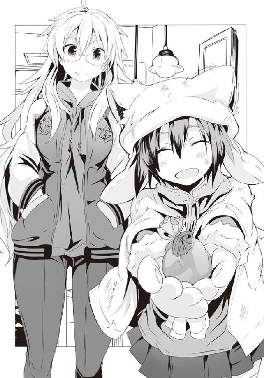
深く考えると負けな気がして、僕は貰った紙袋の方に意識を向けた。重さからするとクッキーかな？ 著莪がチラッと店内のカウンターの方を見やり、さっき店長さんが事故現場を見に出ていったっきりだったのをいいことに、彼女は紙袋のリボンを解いた。
中から出てきたのはクッキー。チョコチップ入りのそれは、一口サイズの小さなハート型。
型抜きを使っているはずなのだけれど、その小さなサイズを見ているとあせびちゃんの小さな手で作られたのが何となく想像出来てしまう。手作りってのは、不思議なものだ。
「めしあがれぇ〜」
あせびちゃんはほんわかとした最高の笑顔で、僕らに両手......というか肉球を差し出すようにして、言った。その微笑ましい彼女の姿とは別に、僕と著莪はドシリアスに、スカジャンの中に入れておいたお守りをそれとなく下に着ていたパーカのポケットに移動させ、少しでも胃腸に近くした上で、クッキーを頬張る。
咀嚼するとチョコチップがとろけてまったりと、甘い。苦味はほとんどなく、上品さよりも家庭的な温かさが伝わる、優しくて食べていると思わず笑みが浮かぶ、そんな味だった。
「うん、おいしい。甘いんだけど一個一個が小さいから幾らでも食べられちゃう感じだ」
良かったぁ〜、とあせびちゃんはまた笑い、首を傾げると帽子の耳がピコピコと動いた。
......ホント、一体どういう原理で動いているんだ、アレ。彼女と初めて会った時に貸してもらった予備の猫耳帽子は、単に綿が入っているだけだったんだけど......。
「いやぁ、変な事故だなぁ。目撃者ばっかで被害者がいないって......」
五〇歳ぐらいのオジサン店長さんが戻ってきたので、あせびちゃんがミルクココアを注文。その際、店長さんも猫耳帽子がやっぱり気になったのか、ちょっといい？ と言いながら動いていた猫耳を指でつまむのだけれど......やっぱり綿しか入っていないようだ。
首を傾げながら厨房に入っていく店長を見送ると、あせびちゃんが手袋を脱ぎ、トイレへ向かった。
「......ねぇ、佐藤、アタシさぁ、何となぁく嫌な予感するんだよね」
「まぁお守りあるから大丈夫だろ。......うん、まだ灰になりきってないし」
アタシたちは、ね......という著莪の妙な言葉とともに彼女は眼鏡をかけ直し、厨房の方を見やっているのだが......あぁ、なるほどな。何か明るくなってら......。
テトテトとムートンブーツのかわいらしい足音を立て、用を足しに行ったのではなく、単に飲食する前に手を洗いに行ったらしいあせびちゃんが戻ってくると、すぐに小首を傾げた。
「あれぇ？ 何だかさっきよりあったかいねぇ。暖房入れてくれたのかなぁ」
「なぁ著莪。店長さん、厨房に行ったよな。何で何もしないんだろ」
僕らは三人で連れ立って厨房に向かうと......まぁ、その......案の定、いい感じに炎上していた。コンロの火がスンゲー勢いで近くの棚に燃え移っていて、厨房がやたら熱い。
さらに炎に合わせて影も揺れていて、そのさまはまるでキャンプファイヤーを囲んでマイムマイムでも踊っているかのようだ。
しかし、踊るのは何も影ばかりではない。店長のオジサンもまた、踊っていた。
彼は炎の揺らぎになんて合わせない。そんな生温いリズムに用はない、俺の生きざまはもっとハードにロックだ、そんな魂の叫びが聞こえてくるテクニカル・ハイスピード・ダンス。もはやそれは人間業ではない。棒立ちしているだけなのに、彼の全身は凄まじい勢いかつ小刻みに振動していた。目を見開き、開いた口からヨダレを垂らしながら、さっきあせびちゃんの帽子をつまんだ右手の人差し指と親指でハンドミキサーのプラグを持ちながら、ハードにダンス。
どうだ、これが俺の生きざまだ。これが俺のソウルなんだ。緩く生きて何になる。男は常に生きるか死ぬか。持てる力の全てで踊るのさ。踊れ踊れ。さぁレッツダンシング！ 彼はそんなメッセージを全身から発していた。主にコンセントから流れ出る交流一〇〇Ｖのパワーで。
「......えっと......あぁ、アレだな。多分抜けかかっていたハンドミキサーの電源ケーブルを差し直そうとしたら手が濡れてたんだろうな」
燃え上がりつつある棚、全身を震わせるオジサンの合わせ技の光景に、本来ならすぐにでも行動すべきなのに......僕と著莪は現実離れしたその状況に思わず呆気にとられてしまった。
「あれぇ、オジサン、ひょっとして感電してるのかなぁ？ ねぇねぇ、大丈夫〜？ ......あっ」
あせびちゃんは洗ってきたばかりでまだ湿っていたその手でオジサンの体に触れてしまった。当然、そこから先はハードなダンスタイムである。踊れ踊れ。緩くは生きねぇ、ホットに生きてクールに死ぬ、それが俺たちさ。体から溢れるソウルに身を任せ、東京電力が生み出すエレクトリックパワーが俺たちのエネルギー。踊れ踊れ、ファンキーに。世界の中心はこのカフェ、その厨房さ。......そんなオジサンのロックなスタイルにあせびちゃんが取り込まれ、彼女はふんわり猫耳帽子の毛一本一本を逆立てて、そのまま一緒に高速振動を始めてしまった。
「著莪、消火器。僕はこっちの二人を処理する」
「佐藤まで踊りだすなよ、気をつけて」
なぁに、任せておけって。そう言って僕は足下にあった消火器を著莪に渡すと、親父からの教えを思い出す。この手の感電した奴を見つけた際には簡単な対処法が世の中にはあるのだ。
要はコンセントとの接触部分を解除してしまえばいいのだが、ヘタに触るとあせびちゃんみたいになって僕もソウルメイトの一人になり果て、己の生きざまをダンスを使って表現しかねない。だが、ある方法なら大抵どうにかなるものである。そう――助走をつけた、跳び蹴りだ。
僕の父方の家系は、祖父さんの代から国防関係に勤めていることもあってか、親父もまた様々な危機意識というものを強く息子の僕に語ってくれたものである。電気の話もその一つだった。
〝いいか洋。電気ってのはなきゃ困るが、それはとてもリスクの高いものなんだ。発電するためにはたくさんの物を燃やして火をおこしたり、自然を壊してダムを造ったり、原子力に頼ったりしなきゃならん。だが、電気自体もとても危ないものなんだ。例えば昔の話だが......〟
そう言って親父はかつて輝いていた若かりし頃を語ってくれた。
僕の親父の弟、つまり著莪パパは昔から電気工作とか、そういうのが好きだったそうな。それで親父たちがまだ学生だった頃、手製のラジオだかを作ってコンセントに繋ごうした際に感電してしまったのだ。それを偶然見つけた僕の親父はそれを見てしばらく笑った後に、この状況を打破し、弟を救助するにはどうしたらいいだろう、と少し考えたそうな。その末に、ある妙案を思いついたのだという。跳び蹴りである。跳び蹴りならば接触した瞬間に親父も感電するかもしれないが、飛んでいる以上は意識の有無とは関係なしに慣性の力でコンセントから離すことが出来るはずだ。親父は己の卓抜なる頭脳に満足しつつ、助走をつけて一撃かまし、弟を救助したのだった......と、ちょっとした英雄譚のようにして語った。
まぁ、感電している家族を見つけてしばらく笑うのもどうかと思うが、それとは別に著莪パパ、つまり感電して蹴られた本人から事前にその事件のあらましを聞いていた僕からすると、この時の親父のおぞましさに驚嘆したものだ。
いやね、親父の話は跳び蹴りして助けた、というところで終わっていたものの......実はそれには続きがあったのだ。当時、親父は高校生でありながら身長が一八〇を越えていて筋力もなかなかだったそうな。そんな親父がどちらかといえば細身な著莪パパを跳び蹴りしたもんだから、さぁ大変。著莪パパは物の見事に二階の窓をぶち破ってお外へダイブ。さらに怒濤の追撃を仕掛けるように絶妙なタイミングで祖父さんが車で帰宅し、空中から飛来した我が子をそのフロントバンパーで撥ね飛ばしてトドメを刺したのだという。
プラグをコンセントに、感電してダンス、親父爆笑からの跳び蹴り、窓クラッシュで地面へダイブ、そこに祖父のマイカー......話だけ聞いているとちょっとしたピタゴラスイッチである。
〝いいか、洋。電気ってのは有用だが危険なものなんだ。どんな道具やエネルギーもそうだが、使い方を間違えると大変なことになるんだぞ、弟みたいに。アイツ、一カ月も入院しやがったんだぜ〟
まるで悪いのは全て電気、そしてその扱い方を誤った著莪パパであるかのように語るさまに、僕は己の血筋に畏怖を覚えずにはいられなかった。
「うん、その話アタシも聞いたわ。それはいいんだけどさ、とりあえず、あせびたちいい加減助けてやんなよ。火、もう消したしさ」
お、それもそうだな。思わず語る方に意識が向きすぎて、オジサンとあせびちゃんをソウルフルにダンスさせたままにしてしまった。
「んじゃまぁ、親父の二の舞にならないように、軽めに一発。それじゃ......」
軽く助走をつけ、ジャンプしようとした......その瞬間、僕は己の足に妙な違和感を覚えた。力が抜ける。何だ、と瞬間的に下を見やれば靴紐が解けていた。
「おっとマズイ、靴紐が......あっ」
車と人間、急には止まれない。小学校とかで誰もが教えられるものだ。
そう、慌てて急ブレーキをかけたものの、僕の体は見事にあせびちゃんとギリギリ接触してしま――温い人生なんてまっぴらゴメンだ、シビアな世界をワイルドに生きる。それが俺さ。踊れ踊れ。このステップが俺、佐藤洋、その魂の輝きさ。踊れ踊れ、ファンキーに。もっともっと。世界に俺の存在を知らしめてあばあばばばばばばばばばばばばばばばばばばばばばば。
著莪が頭をポリポリとやり、ため息を一つ。眼鏡を外す。
「ったく、何やってんだよ、仕方ないなぁ。......代わりに行くぞ。そりゃっ!!」
「あっちたち、今日ツいてたねぇ〜」
著莪の蹴りが見事に決まり、無事交流電流が紡いだソウルメイトから離脱した僕とあせびちゃんは、一人ノーダメージの著莪とともにとっぷりと暮れた道を歩んでいた。
火事に遭遇して感電したことの何がツイていたかといえば、ダンスの後に、助けてくれたことでオジサン店長から珈琲代を無料にしてもらえたのに加え、ケーキまでご馳走になってしまったのだ。というか、厨房が消火器の粉でアレなことになっていたので、店を閉めざるを得ず、傷みやすいケーキをくれた、という方が正しいのだけれど。あせびちゃん的にはそれが自分の持つ幸運のおかげだと信じているのが......嘆かわしい。
まぁ本人がそれでも幸せだというのなら、それを否定することはしないけどさ。
「それじゃあっち、明日に備えてもう帰るね〜」
「明日に備えてって......あ、バレンタインデーか。何かいろいろあり過ぎて忘れてたよ」
「うん、あっちね、毎年ね、病院で入院している子たち全員にあげてるんだぁ」
へぇ〜、そいつはちょっとしたテロリズムだね♪ そう思わず口から出そうになったのを僕は慌てて飲み込み、「それは凄いね、きっとみんな喜ぶね」と教育番組みたいな台詞を吐いた。
それじゃ〜ね〜、とあの大きな猫の手手袋を振って、あせびちゃんはスキップするようにして帰っていく。
「なぁ著莪、僕らはあの娘を止めるべきだったのかな」
「でも病院内だから、大丈夫っしょ？ あせびのパパもわかってるだろし、食べた子全員をマークしているよ、きっと」
なるほど、と僕は著莪の言葉に頷き、あせびちゃんが去っていった井ノ上総合病院がある方角をしばし無言のまま見やっていた。
「......さて、と。結局なんだかんだで遅くなっちゃったし、ねぇ佐藤。軽くゲーセンでも寄って、それからマっちゃんのスーパー行こうか」
うんそうだな。そう言った直後に、著莪とのゲーセンは危険であることを思い出す。
そう、かなり危ないのだ。主に、財布が......！
しかしながらそんなピンチを助けてくださったのは、他のセガ派の皆様。著莪が明らかに狙っていたであろう『ボーダーブレイク ユニオン』の筐体は順番待ちの椅子すら全て埋まっている有様だ。こうなると数十分は待ち続けなくてはいけない。稼働してからそれなりの時間が経過してもなお、このゲームはユーザーを魅了し続けている。
もしかしたら僕と同じくロード画面に毎回現れてくれるオペレーターの巨乳美女、オペ子ことフィオナさんに魅了されているだけなのかもしれない。筐体はタッチパネルなので、彼女の特定の部位にタッチするとビクッと大きなおっぱいを揺らして顔を赤らめるのが......いいのだ。何より反応する箇所ってのがお尻、胸、そして脇というマニアックさがたまらない。
「チッ、週末の夜だもんなぁ。それに今はイベント戦期間かぁ〜。読みが浅かった。しゃーない、佐藤、他のにしようか」
ってことでしばらくウロウロしたあげく、なんとなく僕らが立ち止まったのは、普段ではまずプレイしないであろう筐体の前だった。
「......なぁ著莪、僕らに〝ミクさん〟は、厳しくないか......？」
そう、立ち止まったのは『初音ミク プロジェクト・ディーヴァ アーケード』の前だ。
これ、要は音ゲーなのだけれど......まぁその何というか、アーケードで音ゲーをやるのって正直周りの目が気になるし、ちょっと抵抗が。何より......まぁ、正直にいうと単にうちの家系、全員音ゲーがやたらヘタで、プレイ経験がそう多くないのである。
セガの音ゲーといえばＤＣで大好評を博した『スペースチャンネル５』シリーズがあるものの、あれは完璧な音ゲーというのとは少し違う側面があった。僕らの永遠のアイドル、マイケル・ジャクソンが出演しているおかげで結構遊びはしたのだけれど......やっぱちょっと違うのだ。あとＤＣ版だけでなくＰＳ２版も出たミッドナイトハイシューティングなる、いまだによくわからないジャンル名が付けられた『Ｒｅｚ』もあるけれど、あれはどちらかというと音ゲーの昇り詰める興奮をシューティングゲームに加えた......何というか、ゲーム自体は３Ｄシューティングだけれど、プレイが快感に繋がるという音ゲー独特の、表現出来ない〝感性〟を刺激する先進的なものだった。これらは超面白い。ただ音ゲーでありながら音ゲーではないというか、ちょっと独特なもので、純粋に音ゲーとして僕らがやり込んだものといえば......やはりアーケードから移植された、ＤＣ版『サンバＤＥアミーゴ』ぐらいなものだろう。
今でこそセンサーカメラで体の動きを捉え、ゲームをプレイするスタイルは当たり前になったけれど、当時は実際に体を使って遊ぶというプレイスタイルは非常に先進的であった。
何せ、マットの上でマラカスを振るのだ。つまりマラカスがコントローラなのだけれど、これ、実は本当にマラカスとして音が出るようになっていて、大勢でやるとそのおバカな雰囲気に場が盛り上がるのは間違いなく、深夜に一人でやろうものなら槍水先輩の一人豆まきよろしく、何とも言えない切なさを噛みしめることが出来るセガらしい素敵な周辺機器だった。
......んで、問題はこの周辺機器である。詳しくは知らないのだけれど、僕と著莪が遊びだした頃には何故かマラカスコントローラの片方だけやたら反応が鈍かった。親父が買ってきた初日にコードをひっかけちゃってビールをこぼしたのが原因かもしれないんだけど......時代的に考えても元々それほどセンサーの感度が良いとは言えないものだったから、余計に難易度が跳ね上がって、僕らは一晩中シャッシャシャ、シャッシャシャとマジになりながらプレイしたものだ。だから純粋に音ゲーというのとは違う楽しみ方をしたような気がする。
ちなみに音ゲーというとＳＳの『テクノモーター』というソフトに触れるべきなのだろうけれど......それはそれで結構長くなるのでまた別の機会にしよう。
ともかく僕ら......というか著莪一族はリズム感というものに致命的な難点を持っていて、あまり音ゲーに縁がなく......天使にして歌姫の初音ミクさんには若干距離を感じていたりする。
「でもさ、佐藤。アタシらも一度ぐらいはミクさんに挨拶させていただいた方がいいような気がするんだよね。......それに一人の時だとちょっちやりにくいし」
アーケードの音ゲーって、何がハードル高いって、絶対最初にプレイする時だよなぁ。
新規の格ゲーとかでもそうだけど、見知らぬ大勢の前で初見プレイって、結構シンドイものである。速攻でしくじって終わったりしたら、かなり恥ずかしいし......。
「うーん。確かにそろそろ僕らも一度ぐらい拝謁賜るべきかもしれない。......行くか」
そう言って僕らは頷き合った。僕が筐体にコインを投入すると、歌姫の前に跪くようにして著莪が筐体のボタンの上に手を置く。賑やかなゲーセンの中でありながら、ゴクリと著莪が唾を飲む音がはっきりと聞こえた。
そして、ついに、謁見の時が......その、えっと......。
この先の展開はご想像にお任せします。......うん、割と悲惨な有様だった。やっぱアレだよね、音ゲーってさ、反射神経でフォローしようとしてもいろいろ無理があるよね。
そ、それにさ、アレなんだよ！ ミクさんが超美麗に踊ったりするものだから、そっちに目がいって、プレイがおろそかになってしまうわけで......その、あれだ、うん、初体験な僕らにはちょっと刺激が強すぎた。
......ちなみに一応僕の方が著莪より若干うまかったのは付け加えておこう。
僕らはそれぞれ遊んだ後、何となくゲーセンの休憩用ベンチに二人して項垂れ、妙な疲労感を噛みしめた。
しばらく心身共に休憩した後、僕らは外へ。何となくこれ以上遊ぶ気分にもならず、意味もなく喋りながら夜の街を散歩した。まだ二月の半ばとはいえ、動いていればそれほど寒いと感じもしなかった。
「そんでさ〜。......あ、もうこんな時間か。ちょっち早いけど、そろそろスーパー、行こうか」
思いのほか著莪とダラダラしていた時間が長かったようで、地味に二〇時半を過ぎていた。予想以上に、二人で話している間の時間は早く流れていたみたいだ。
アレだな。いつも一緒にいる時とは違って、少し離れるとお互いにそれぞれ別の経験をして、話したいことがたっぷりとあるから......それで、会話が弾むのだろう。
「それもそうだなぁ。鏡が言っていた〝オマケ〟の正体を見極めるためにも、気持ち早い方が都合がいいかもしれない」
僕らはそれでも変わらず急がず、ダラダラとダベりながらゆっくりとマっちゃんの店に行くと......そこには見慣れたバイクから降りる見知った狼の姿。二階堂である。
「お前、最近何かやけに会うな。ははーん、さてはお前、この僕に淡い恋心を――」
って何冗談でも言っちゃいけないことを口走ってんだ、僕は!? 今さらっと当たり前の冗談のようにして信じられない言葉が出てきたぞ!? クッこれが調教......いや、洗脳ってヤツか!? あまりに日常的にその手の言葉や話を聞かされているものだから慣らされてしまったのか!?
この時、どこか遠くの地でニチャリと化け物がほくそ笑んだのを僕の第六感は確かに感じた。
「気色の悪いことを......変態め。たまたまだ。何よりここはオレの縄張りのようなものだしな」
「まっ、確かにアンタって、ほとんどこの店だよね。むしろ他で見ることがまずないもん」
うまいからな。そう言い残して、二階堂はさっさと店内へ。
内心ホッとしながら僕らもまた入店する。おっ？ と思うほどに鋭い視線が僕らに突き刺さる。その数は、一〇。こちらに意識を向けていないであろう二階堂を考えると一一か。
二〇時で閉店してしまうらしい店内テナントの鍵屋さんや書店、花屋さんを通りすぎ、僕と著莪は並んでスーパーのエリアへ。そして店内最奥の総菜・弁当コーナーへ。
相変わらず大きな店らしく、そのエリアは広い。気持ちがいいほどだ。土曜ということもあってか、残っている品はかなり少ない。サラダだけで棚が一つ分使われているのに、今はたった一個しか残っていなかったり、甘酢あんをかけた料理でもあったのか、場にほんのりと甘酸っぱい匂いは残っているものの、それらしき食材は総菜コーナーになかった。
弁当の在庫に不安を覚えながら総菜コーナーを抜け、弁当コーナーに足を踏み入れれば......三割引きシールの貼られた三つの弁当と、オマケの正体が書かれたＰＯＰがあった。
『週末限定！ お弁当を購入していただいたお客様で、ご希望の方に当店の女性スタッフ手作りのミニチョコレートバーをプレゼント！』
そんな文字とともに、女性スタッフの集合写真が一枚。染めた髪が中途半端に伸びたものだから、プリンのような髪色をしたマっちゃんが複数人のスタッフとともに写っていた。
二十代半ばのマっちゃんが調理場の担当をしているせいか、比較的若い人が多いようだけれど......うーん、多分ほとんど人妻なんだろうな。
......人妻からのチョコとか、紫華先輩じゃないけど、妙な背徳感があって味わい深そうだな。
弁当の方といえば......ん〜、相変わらずバリエーションに富んだ三つだ。これらの中から選ぶとすると......これだな、『地鶏を使った鶏飯＆鶏唐揚げ弁当』。さすがにあの目が眩むほどにうまかった『ザンギ弁当』こそないものの、あれも、そしてこれも唐揚げなのだから、きっとうまいに違いないだろう。
「佐藤は地鶏？ んじゃ、アタシは......こっちの『生姜焼き風豚バラカツ弁当』かな」
「お、そっちもいいよな。気になってた。二人で取れたら、ちゃんと味見な」
著莪が選んだのは摩訶不思議な......いや、しかし名前と、そして弁当の蓋越しに見えるカツの断面が何とはなしにその内容を見る者に想像させる弁当だ。
二口分ほどのカツが三つ。それらが半分にカットされて断面が上に向けられているのだけれど、それが層になっているのだ。いわゆるミルフィーユカツというか、たまにある薄切りの肉を巻いて一塊にし、カツにしたものである。そんで、その断面が肉の色合いではなく、生姜焼きのそれ。食べてみないことにはわからないけれど、多分生の豚バラを濃いめの生姜焼きのタレか何かに浸け込み、それを汁ごと巻いて揚げたのではなかろうか。
うーん、何かスゲーうまそうだな。豚バラを使っているということは、きっと温めようものなら中から肉汁が......。以前食べたザンギ弁当の味が忘れられなくて唐揚げ弁当の方にしてしまったけど......絶対うまいだろ、このカツ。ちょっと心......というか腹の虫がざわめくな......。
ちなみに残る一つはエビチリと麻婆豆腐の二種がおかずになり、白米の代わりに炒飯が入った至れり尽くせりの『中華弁当』である。エビチリと麻婆豆腐、どちらも日本人、いや、アジアに住む人々なら誰もが好むもの。
僕と著莪は共に店内を歩き、今宵の狼たちの様子を確認。著莪からすると知っている奴も多いようだけど、僕が見知っている狼は二階堂ぐらいかな。......って、何だ、アイツ、スゲー気迫を発しているぞ。どんだけやる気なんだ？
僕らはレトルト食品のコーナーに並んで立ち、ポケットに手を入れたまま口を閉ざして腹の虫と語らった。目指すべきはあの唐揚げ弁当。だが、腹の虫は訴える、あのカツも喰いたいのだと。しかしそれは著莪が獲るはずだ、だから彼女をカバーしてやれば自ずと口に出来る......そのはずだ。とにかく、今は加護を......力が必要だ。
全身に腹の虫からのパワーを行き渡らせていくにつれ、肌の感覚はより一層鋭くなっていく。そうなればなるほど、二階堂の気迫が大したものだというのが知れてくる。執念すら感じるが......正直狙う弁当が別のものであってほしいところだ。
スマホの時計を見やれば時刻は二一時一〇分。あと五分ほど......そう思った時、店内の空気が荒れた。何かが来る。狼たちが慌てる。だが、僕はその近づいてくる気配が誰であるのか、何となく察することが出来た。
自動ドアが開く音すらこの広い店舗では聞こえはしない。けれど、カツカツと固いヒールの音は店内のＢＧＭすら貫いて僕らの耳に届く。一人のように聞こえるものの、その足音はよく聞けば二人分のそれ。――オルトロスだ。
狼たちは明らかに動揺していた......しかし、決してそれに恐れてはいない。かつて忌み嫌われ、恐れられた双頭の犬も、今は一匹の獣として戦いの野を駆けているのだろう。
僕は何だか顔に笑みが浮かぶのを堪えきれなかった。
オルトロスはカゴを手に、スーパーのエリアへ進入。動揺している狼たちをものともせずに突き進み、弁当をチェック。その後比較的そこから近かった僕らのもとへ......。
「来ていただきまして、感謝いたしますわ。......我が儘ついでに争奪戦の後に、少々お時間を。よろしくて？」
「どこかで一緒に食べようか。それでいいなら」
ありがとうございます、と姉妹は柔らかな声を揃えて言うと、そのままどこかへと歩いていった。多分、二階堂だろう。
「......弁当は三つ、アタシと佐藤と、二階堂とオルトロス。果たしてどうなるんだか」
狼の数は彼女らで一三匹。普通にやったって楽じゃない。そこにオルトロスと今日は妙に気合いの入っている二階堂だ。少々ハードかもしれない。
半値印証時刻が、迫る。店内に一礼とともに現れる半額神、かつては最強の狼として名を馳せた《女帝》こと、松葉菊。
彼女は目を細め、微笑みを浮かべながら総菜、弁当コーナーへ。
エプロンからシール台紙を取り出し、サラリとシールを貼っていく。その手の動きはまるで蝶が花畑を舞うように、優雅で、軽やかだ。
全てに貼り終えると、彼女は途中で一度僕ら、オルトロス、そして二階堂の方をチラリと見やりながら去っていく。そうしてついに始まる、饗宴の刻。
スタッフルームへの扉が閉まると同時に、場は立体的に展開する。気合いを溜めていた二階堂がまさに地を這うが如くの低い姿勢で速攻を仕掛けるとともに、鏡が上空に舞い上がった。
驚いたことに鏡が、ギリギリという様子ではあったものの、天井に足を届かせる。この店はかなり天井が高く、僕も天井技はほぼ使えない。唯一使えたのは対《帝王》戦の際、魔導士の力を加算してようやくだった。彼女の跳躍力をそれほど意識したことはなかったが、僕と同じようなものだと思っていた。姉が飛翔を補助させたのだとしても届くものなのか。
それとも、彼女は今もなお成長を続けているというのか......！
僕と著莪も走りだす。その先では速攻を狙ったであろう二階堂が弁当コーナーに到達しかかるも、ガリガリに痩せた男もまた別ルートを使って走り込む。
異様に早いその姿に僕は犬のボルゾイを思い出すのだけれど......あぁ、アイツ、《ダンドーと猟犬群》の今の首魁だ。山原の後任である。
一瞬奴の登場にこの店にあいつらがいるのかとも思ったものの、そんな気配はない。つまり、単体でたまたま訪れていただけなのだろう。
そのことに安堵すると同時に危機感が湧く。あの連中がいないことに対する安堵、しかしそんなものよりも何より、三つしかない半額弁当に二匹が迫っているわけで......僕らはもちろん上空に舞い上がった鏡ですら間に合わない。
ヤバイか、そう思った直後、弁当コーナーに達し、中華弁当に手を伸ばすボルゾイと二階堂。そして次の瞬間に二人は互いの手を弾き合い、そのまま互いに走り込んだ勢いをタックルにして相手に叩きつけ合う。狙いが被ったのだ。
男二人が手と同様に体ごと弾かれ合う。重心を落としていたためか、それとも体重差か、ボルゾイは床をゴロゴロと転がったのに対し、二階堂は膝をつくだけで済む。そこに鏡が飛来。二階堂の頭にカゴを被せようとするものの、彼は舌打ちとともに床を転がり、これをかわした。
この時、僕らを含めた他の狼たちが弁当前に到着、乱戦を形成。鏡を上空に飛ばしていたがために、梗がワンテンポ遅れで乱戦の中に飛び込んだ。最初の二階堂とボルゾイの素早い動きに焦りを抱いたのか、狼たちの動きが激しい。誰もが戦いよりも弁当を狙う。
「くっそ、最前線に行けないぞ！」
誰しもが前に行こうとするが故に、乱戦密度が上がりすぎていた。そしてそんな中、僕らは中途半端に内側に喰い込んでしまったがために、ギュウギュウ詰めでうまく技に力を乗せられず、他者を吹き飛ばすことも叶わない。
「佐藤、上行け！」
隣にいた著莪が軽く重心を落としたので、その膝に足をかけ、そこからさらに肩に足をかけて上空へ飛ぶ。天井はやはり高い。僕は中途半端な高さで重力に捕まり、下降を開始。足下を見やれば二階堂が弁当を背にして、鏡と真っ正面からの殴り合いを演じていた。
本来の実力なら鏡、即ちオルトロス側が明らかに強いはずだが、乱戦密度が濃いがためにカゴ技の多くが封じられてしまっているのだ。今の鏡はカゴの口の中へ手を入れ、底を敵に向けて楯とするばかりで、攻撃は己の拳と足を使うのみ。技が小さく、数の勝負をしていた。そのせいか、その鏡と二階堂の鍔迫り合いの攻防は、本気のそれでありながら、どこかじゃれているように見えるのが不思議である。
もう一方のオルトロス、梗は、二階堂と戦う鏡を守るようにして、妹に背を向けており、こちらも同様だ。周りからの攻撃に対し、カゴを楯に使うばかりで薙ぎ払うことができない。
場が膠着している。これを動かせるとすれば......やっぱり、僕しかいないだろう！
乱戦の密度が高いこともあり、僕は床には落ちずに狼たちの肩に着地した。その反動で倒れかかる狼からさらにそいつと殴り合っていた狼の肩へ。そしてそいつの頭を蹴り飛ばしつつ、肩から肩へ、前へ進む。
迫る、梗。彼女と目が合う。おぞましげな笑みを浮かべるものの、その顔はあのボルゾイの顔が覆った。梗と戦っていた彼が振り返り、憎悪の目で僕を見る。
彼の気持ちに覚えがないわけじゃない。あの、山原が首輪を捨てた一戦の時以来の戦いだ。
僕は躊躇わず奴の頭を蹴り飛ばそうとするのだけれど、奴が両手でガード。その細い体からは想像出来ないほどにしっかりと受け止められてしまう。
防御の構えをしていたボルゾイの腕が素早く動き、ジーンズの裾を掴まれ、床の上に引っ張り下ろされる。いささか想定外なその状況に僕は対応出来ず、バランスを崩して着地。固い床が足の裏を叩き、衝撃に思わず膝をついた。前のめりになった僕の顔に迫る、ボルゾイの膝。
鼻頭を打たれ、強烈な痛みとともに目が眩み、無意識に体が仰け反ろうとするのだけれど、ボルゾイの組まれた両手が振り下ろされる。後頭部に衝撃。二連撃に、意識が飛びかかった。
僕は奴の足下に倒れかかる。かろうじて手をつくのだが......後頭部に迫り来る三撃目の気配に全身が硬直した。ボルゾイの踏みつけである。それを喰らって床に叩きつけられれば終わる、それは嫌というほどにわかった。仮に意識を保てたとしても、そこは乱戦の中央。まず立ち上がることは叶わず、狼たちに踏みつけられ続けることだろう。
だが、頭は二連撃を受けてクラクラだ。反射的に手こそつけたものの......体に命令が行き渡らない――対応出来ない。
僕は瞼を閉じた。諦めたのではない。諦めないために、瞼を閉じたのだ。
瞼裏に浮かぶ、唐揚げ。そして鼻と舌に思い出されるかつて著莪と頬張った巨大なザンギの記憶。それをベースとし、今宵見た唐揚げのビジョンからその味わい、食感をイメージ。ここで倒れれば全ては露と消えゆく夢想の欠片。だが持ち堪えられれば、それはっ......!!
力が走る。体が動く。ただし頭からのそれではなく、腹の虫からのそれ。意識した動きではない。ただひたすらな、食への欲求。
肺の中の空気を全て吹き出すと同時に、床についていた両手で掌底を放つ。反動で体が起き上がり、その後頭部にトップスピードに至る前のボルゾイの靴底がぶつかる。だが、それごと押し上げ、両膝をついた状態で僕は上半身を無理やり起こした。
驚くボルゾイは片足立ちになり、バランスを崩しかけている。その背後には梗、鏡と二階堂......そして、半額弁当だ。
片膝を立てる。その足にありったけの力を込め、立ち上がると同時に突進。ボルゾイのバランスを崩した体に当たると同時に、押す。その後ろにいた梗が「まぁ！」と場違いに楽しそうな声を出してボルゾイの体を受け止めようとするが、彼女すらも、僕は押した。
だが、それが唐突に止まる。鏡が背中合わせの姉の体を支え、ブレーキをかけたのだ。
しかし、そんな鏡の前には二階堂がいる。奴が見逃すわけもない。
二階堂の「はっ」という短い声と鏡の呻き。鏡の体が横へ飛ばされる。
それでブレーキは解除されたが、そこからさらに押し込むほどの勢いは僕の体にはない。体の主導権も腹の虫から頭へと戻りつつある。僕は無理をせず、すでに失神しているボルゾイの体を薙ぎ払い、二階堂と挟むような形で梗と相対する。
「何というリカバリー！ 素敵ですわ、佐藤さん！」
嬉々とした声で言うのだが......その背後で二階堂が動いた。攻撃......じゃない。弁当奪取だ。共闘してはいないのだから、当然か。
しかしわからないのは、梗だ。何故彼女は僕を見ているのか。何故背後の二階堂を意識しないのか。彼女が中華弁当狙いではなかったとしても、三つしかない弁当のうちの二つを獲ろうとする彼女らとしては、ここで一個失われるのはリスクにならないはずがない。それなのに......。
そう思った矢先、空中を飛来する影。カゴだ。横に吹っ飛ばされた鏡が床に落ちると同時に二階堂に向かって投げ放ったのだ。
スーパーのカゴは驚異的な耐久性に加え、適度な重さ、独特の形状、そして......無数の穴がある。そのためその全体のサイズからは想像もつかないほどに空気抵抗が少ない。
つまり、投げれば速いのだ。
鏡のカゴが二階堂の側頭部に着弾。奴の体は手を伸ばした体勢のまま回転するようにして倒れた。そして彼を撃ったカゴは空中に一度跳ね返るものの、それはまるで魔法のように梗の上に落ちてくる。
「さぁ、佐藤さん、たまにはわたくしとも遊んでくださいまし」
梗は見もせずに上空からのカゴを腕で弾くと、それは当たり前のように鏡の手へ戻っていく。
梗は自分と遊べと言っている。しかし......横手の総菜コーナー前にいる鏡の視線は明らかに僕に向いていた。つまり、ヘタをすると十字砲火を喰らいかねない。
その恐怖が僕を戸惑わせたが、その間に、やや密度を下げていた周りの狼たちが再び弁当に群がろうと僕の横を走り抜けるとともに、僕の背をも押していく。
梗は、仕方ないですわね、と唇だけで言葉を紡ぐとカゴの底を僕に向けつつ、バックステップし、弁当を守るようにして構えた。妹とともに獲ろうとするが故に、あえて単独では奪取しないのだろう。......その隙に飛び込めるかどうかが勝負だ。
背を押された勢いに突き動かされ、僕は梗へと愚直にも真っ正面からぶつかっていく。
たまにはそういうのも悪くない。......そうだろう、梗。
カゴの底へ左の拳を放つも、それは受け止められるどころか、カゴの柔軟さと梗の腕の動きによって生じた反発力で跳ね返された。だが、最近カゴ使いとの戦いで体が慣れていた僕は、反動をそのまま活かして右の蹴りへと滑らかに繋げる。横合いからの一撃。だが、そのつま先はトップスピードに乗る直前に横で戦っていた他の狼の体に触れてしまい、そいつを吹っ飛ばしてしまった。
混戦の中での大振りな蹴りはさすがに無理があったか！
予定外のところで蹴りの勢いが消えたので、その後に技を続けようとしていた僕の思惑がずれ、左片足立ちのまま死に体となってしまった。
梗が口元の笑みを濃くして、間合いを詰めてくる。
「何やってんだよ、ったくっ！」
著莪の声が聞こえ、僕の背に強烈な衝撃が走った。
梗の笑顔が驚きのそれに変わると同時に急激に迫ってくる......っていうか、僕が迫った。
梗が右手に持っていたカゴ技の間合いが崩れ、僕の体はつんのめるような姿勢のまま彼女の懐へ飛び込んでしまった。あらかじめ狙っていればウルフヘアのような投げ技に繋げられたけれど、あまりに唐突だったので、何も出来ず、僕は梗と抱き合うようにして体を密着させると、そのまま彼女を押し倒してしまう。
ゴンっと音を立て、梗の後頭部に陳列棚がぶつかる鈍い音がし、彼女は僕に抱きつかれたまま陳列棚に背を預けるようにして尻餅をついた。
「梗、おまえは妹がいないと視野が急に狭くなるな！」
得意げな著莪の声が聞こえると、梗に覆い被さるように抱きついている僕の背にグッと靴底の感触と、著莪の重み。合計で二人分の重みを受けている下の梗が呻きながらカゴを振るおうとするものの、尻餅をついた姿勢から、そして何より僕が上にいるせいで、パワーが乗らない。僕の上にいる著莪の足を鈍く叩くだけだ。
「姉さん、獲られる！」
鏡の悲痛な声が聞こえ、反射的にそちらを見やれば、彼女は意外とすぐ近くで、復帰した二階堂と乱打戦を繰り広げていた。
いただきっ！ 著莪の声が聞こえ......僕の体が一度グッと押し込まれると彼女の重さが消え、乱戦に動揺が走る。著莪が僕の上に乗った状態から弁当を獲ったのだ。
そしてその瞬間に至り、ようやく著莪と二階堂が密かに共闘したのだというのが読めた。
二人は狙いの弁当は違うため、争う必要はない。また二階堂の目下の敵は中華弁当狙いの鏡であり、彼女が中華弁当を狙う以上梗がそれを狙うことはありえないから、こちらは著莪にとっての目下の敵と言える。さらにいえばこの状況でオルトロスを分断することは互いの利益に適うため......。クソッ！ 考えれば考えるほどに、最初に狙うべき弁当を示していた二階堂は僕にしろ著莪にしろ非常に組みやすい相手だったのだとわかる。っつぅか、ツードッグスとか名前付けられてるんだから、最初に組むべきは僕なんじゃないのか、二階堂！
だが、著莪の狙いを二階堂は知らないはず......ということは、誘ったのは著莪の方からか!?
著莪も二階堂も東区の狼、僕が坊主や顎髭らと共闘したり戦ったりするように、馴染みなのだ。そして二人は恐らく僕以上にオルトロスと拳を交え、その対処法を見出し始めている......。
そのことに考えが及ぶと、僕の胸に言いようのない焦りが生まれる。
嫉妬とも似ているが、どこか置いていかれるような寂しさだった。
いつまでも梗に抱きついている場合ではない。僕も......やってやるぞ！
「あの時も......こうしてくださいましたわね、佐藤さん」
耳に染みるような声で囁く梗。
その言葉に、かつて槍水先輩が目の前でやられた時にもこうして梗に僕は......。
そう思った瞬間、あの時と同様に、上半身を反らすと同時に梗の額を掴もうとするのだが......この時になって、ようやく、誘われたのだと、わかった。
掴もうとした僕の手をかわし、梗の頭が迫る。ヘッドバット。目の前が真っ白になり、反っていた僕の体がさらに仰け反った。
「こ、これは、効きますわね！ ですが!!」
もう一発額に鈍い衝撃が走って、意識が飛びかかる。思考が薄れ、ヘッドバットの瞬間にかすかに見えた梗の瞳が頭に浮かんだ。
散歩用の綱を見せられた犬のような、そんな瞳。いい、目だった。
ドフッと腹部に一撃来た。息が詰まり、思わず僕は咳き込むものの......僕の体の下に梗がいないことに気がつき、さらに自分はいつの間にか乱戦の外で倒れているのに気がついた。
「寝ている余裕があるのかっ、佐藤！」
僕の腹を蹴った相手、二階堂が言い残して小規模になっている乱戦の中に飛び込んでいく。どうやら梗からの一撃で十数秒かそこら気を失い、吹っ飛ばされていたようだ。
「佐藤〜、早く起きないと終わっちゃうぞ〜」
顔を上げると弁当を手にした著莪がニヤニヤとした笑みで言った。僕は答える間もなく、争奪戦に向けて走る。現在残っているのはオルトロス含め、五。そこに僕と二階堂が飛び込む。
「ツードッグスのお相手をするのは久しぶりですわね。......鏡！」
梗はカゴを被るようにして重心を落とすと、そこに鏡が飛び乗った。そして彼女がジャンプすると同時に梗は両腕でカゴを上へ押し上げる。
カゴの分の嵩と、それを押し上げる力を加算させて天井に届かせていたのだ。
鏡、天井に着地すると同時にそこを蹴りつけ、カゴを振りかぶって飛来する。
佐藤！ 二階堂の声。それに応じるとともに前を走る奴の背を踏み台に上空に飛び上がり、鏡の迎撃に向かう。
飛び上がる僕と落下する鏡。相対速度は極めて速い。ぶつかれば技など関係なくかなりの衝撃が走るはずだ。ある程度のダメージを僕は覚悟した。
鏡は空中でカゴの口を下に向け、胸に抱くようにして構える。
僕からの攻撃を警戒したのかと思ったのだけれど......驚くことに、鏡の体が空中でありながら軌道を変え、僕の間合いから逃げてみせたのだった。
カゴの穴だ。それを的確に胸で押さえれば、カゴの内部に入り込んだ空気は塞がれていないところから勢いよく抜け出る......つまり、噴流が起こり、空中機動を可能とするのだ！
秋鹿のエコバッグによるエアブレーキ、鏡のカゴによる噴流......皆、己の武具を巧みに利用しやがる......！
鏡が着地すると同時にカゴを振るう。凄まじい音とともに四匹の狼が弾け飛ぶ。二階堂はあえて自ら地を転がることで、これを凌いだ。
だが、彼の前にはオルトロス。サポート出来るはずの僕は中途半端に空中に浮いているという有様だ。しかしそれでも二階堂は諦めていなかった。
彼は鏡の一撃を地を転がってかわしたが、それと同時に奪取を狙ったのだ。
技を放った直後の鏡の脇を抜け、その後ろで弁当を背にしている梗にぶつかっていく。
「連携がまだまだ浅いですわね、もう少しお二人で助け合うべきですわ......二階堂さん」
梗が禍々しい目でカゴを振るい、二階堂の技など児戯に等しいと言うかのように彼の放つ拳諸共その体を吹き飛ばした。
この時になって重力に引かれていた僕もまた着地。二階堂が僕に向かって真っ直ぐに飛ばされてきたので、奴の体を受け止めはするが......しかし、もう、間に合わない......！
「舐めるなぁあぁああぁ！」
予想外の所から声が聞こえ、誰もがハッとした。今までどこにいたのか、ボルゾイだ。奴が横合いからオルトロスに襲いかかる。すでに弁当を奪取しようと緊張を解いていた梗を守るように、鏡がカゴの口をボルゾイに向けて二人の間に入り込む。ボルゾイの細長い足での蹴りがカゴに入ると同時に鏡はそれを捻り、合気道の技でも仕掛けたように、ボルゾイの体を流れるように床に叩きつける。しかし、その技によって鏡は自然と膝をついたのだ。
ここしかない。そう思った。目を合わせることもなく、僕と二階堂は最後の勝負に出るのを決意する。受け止めていた二階堂の体が僕の腕からするりと抜け、重心を落とす。僕もまた同様に片足を下げて重心を落とした。
そして、二人同時に疾駆。最初は肩を並べ、だが、オルトロスに迫った瞬間に僕が左へ、二階堂は右に展開。慌てて立ち上がる鏡と一瞬弁当を見やるも妹が獲れないと判断して奪取を断念する梗、そんな彼女ら――オルトロスに挟撃を仕掛けた。
僕も二階堂も陳列棚に沿うように、真横からの攻撃だ。
二階堂が重心をさらに落とし、まるで地を滑るようにして鏡へ仕掛けるのを見てその真意が知れた。陳列棚より身を低くすることでその方向からの攻撃を阻止しているのだ。
僕もまたそれを真似てスライディングにて、梗を襲う。梗もこちらのしようとしていることを読み、カゴの口を僕らに向けた状態で、地面に剣を突き刺すようにして構える。
さすがに僕とはいえ、獣の口へ飛び込むほどに勇猛果敢ではない。僕はスライディングの足がカゴに触れる直前に、靴の踵を地面に突き刺すようにして急ブレーキ。走り込んだ勢いが乗っているので、体が通常ではありえないような速度で起き上がる。梗が慌ててカゴを持ち上げようとするが、いささか遅い。僕は両手を組み、それを頭上から梗の頭頂部に向けて放つ。
僕の胸にカゴの縁が叩きつけられるものの、それでも僕の固めた両手は梗の頭を捉えていた。衝撃に、僕も梗も互いに一瞬よろめく。互いの目を見る。獣の目。戦いはここからだった。
梗が横殴りにカゴを振るうので、僕は一度バックステップでそれをかわす。その足が着地した瞬間に左足に力を溜めると共に右肩を前へ出すように、構える。左足に溜め込んだ力を解放。全身が素早く大きく一歩前へ――梗へ向かうと同時に右手で居合いのような手刀を放った。
梗は先ほど同様、カゴの口をこちらに向けてそれを捕まえようするものの、すぐにハッとして事態を悟ったようだ。そう、拳等と違って、この手刀の類は直線的な攻撃ではないのだ。つまり、カゴの口には、まず捉えられない。
カゴを弾くが、梗はまだそれでも手離さない。でも、十分だ。胸元ががら空きになった。
「喰らえ、梗！」
右手刀からの、左掌底である。梗の顔から笑みが完全に消え失せ、驚き一色に染まった。
体ごと押し込むような僕の掌底は、梗の鳩尾に見事に入る。彼女の柔らかな体に腕を喰い込ませ、その背後にいる鏡ごと吹き飛ばさんとする。だが、僕の体に梗の腕が巻き付き、吹き飛ばない。また抱き合うようにして耳元に絞り出されるような梗の呻きこそあれ......下がらない。
完全に僕の掌底を受けきった。手刀から繋いだ掌底とはいえ、ほぼ全力に近いそれを......。
体が吹っ飛ばない以上、ダメージはでかい。だが、それを受け入れてでも背後の鏡ごと吹き飛ぶのを避けるために......コイツ、踏ん張りきりやがった！
バカな、そう呟いた瞬間に僕の体は隙だらけになったのだろう。密着した状態のままで梗に足払いを仕掛けられ、仰向けに転倒する。倒れる途中で密着を解いた梗は、カゴを振りかぶりながら僕の上に飛び乗ってきた。
「強くなりましたわね、佐藤さん......ますます愛おしいですわ」
梗だって強くなってんじゃん、そう胸の内で呟きながら、目前に迫り来たカゴを僕は喰らった。梗の体重が乗せられていたせいで、それは鈍く重い。視界が白と黒に明滅する。
感覚で梗が僕の腹に跨ったのがわかる。......マウントポジションを取られた。
本来寝技、投げ技はスーパーでは不利だが、しかしこの状況では有効だ。
意識は飛んでいない。僕は視界がないままで、僕の上に座っている梗へ両手を伸ばすのだが......一つはまるで子供が親に叱られるようにして弾かれ、もう一方の手は......梗の手に掴まえられる。指を絡めるようにしてしっかりと握られた時、僕の視界が戻ってきた。
ニッコリと微笑む梗の顔。そして僕と繋がっていない方の手は......カゴとともに彼女の頭上にて振りかぶられている。平時なら女の子に笑顔で跨られ、手をこんなふうにして繋げているというのは興奮せざるを得ないが......しかし、ここがスーパーであり、今が半値印証時刻であり、そしてカゴが振りかぶられているとなると話は違う。その光景は、終わりを意味するのだ。
「それでは、また......」
微笑みながら梗がカゴを振り下ろさんとした、まさにその瞬間だった。
彼女の顔の横に靴、いや、足が現れる。二階堂。横合いからの蹴り。彼が鏡に抱きつくようにして間合いを無理やり詰め、梗へ仕掛けたのだ。
姉さん！ 妹は叫ぶものの、声が響いたのは二階堂の蹴りが梗の側頭部に直撃してからだ。
梗の頭が弾かれたようにぶっ飛び、陳列棚と激しく衝突。反動で頭が跳ね返り、それに体が引っ張られ、僕の上から彼女は転げ落ちた。
「佐藤、弁当を獲れ!!」
二階堂が叫ぶものの、鏡のゼロ距離での掌底により、吹っ飛ばされる。だが、奴もそれは想定していたのか、自分から飛んである程度ダメージを抑えたようだ。吹っ飛ばされながらも彼の目線は僕を見ていた。
それで、わかった。二階堂は僕に弁当を獲れるようにしてはくれたが、それは善意などではない。オルトロスには、二つの弁当が必要なのだ。つまり、僕が弁当を獲れば......オルトロスは、退く。二階堂はそこまで読んで、あえて一撃喰らうのを覚悟で、僕にばかり意識を向けていた梗へ一撃かましたのだ。
やってくれる、本当に。僕は即座に立ち上がるなり、陳列棚へ手を伸ばす。だが、それは素早く振り返った鏡が弾く。思わず舌打ちが出た。
「姉さん！ 起きて、早く!!」
かなり激しく頭を打った梗は仰向けに倒れたまま、ぼんやりとした顔で天井を見上げるばかり。彼女が回復するまでに弁当を獲らなければ......負ける。僕も、そして二階堂も。
僕は即座に右で掌底を放ちつつ、左手で弁当を狙いに行く。勝てると思った。だが、相手がカゴ使いであるというのを僕はいささか失念していたのかもしれない。
鏡はカゴの取っ手から縁に素早く持ち変えると、その伸ばしたリーチで僕の胸を突く。掌底は空ぶり、左手は空を掴む。この手段じゃダメだということか。ならばッ......！
僕は身を低くして飛び込むように間合いを詰める。投げ技だ。だが、それを鏡は的確に読み、彼女もバックステップで距離を取ると同時に僕の頭にカゴを被せようとしてくる。僕は腕でこのカゴを弾いて、いなす。
やりにくい。単体になったオルトロスなど......と思わないでもなかったが、鏡の奴、積極的に攻めてこない。完全な守りに入っている。姉が起きるのを待つつもりなのだ。
いくら守りに入っているとはいえ、相手は歴戦の猛者。ヘタに踏み込めばやられ......あ。
「行くぞ、鏡!! 喰らえぇ!!」
僕は叫び、やや遠い間合いながら掌底を放つ。我ながら如何にもな叫びだが、それによって鏡は真っ直ぐに僕を見て、身構えた。......背後から迫る二階堂のことを知る由もなく。
僕の攻撃をミスだと思ったのか、彼女の顔にかすかに余裕が生まれ、容易いとでも言うかのように綺麗な動きのまま、掌底をカゴの口に捉える。素早くカゴを捻って僕を倒そうとするのだが、その背に二階堂のタックルが決まる。僕は己の腕をカゴから素早く逃がす。
「しまっ――!?」
予想外のそれに鏡はカゴこそ手放さなかったものの、つんのめって倒れかかる。
僕と二階堂が同時に奪取に動いた。僕は唐揚げ弁当へ、二階堂は中華弁当へ手を伸ばす。
二人の男に挟まれて鏡は唇を横一文字に結んで悔しげな表情をするものの......まだ、余力があるのが見て取れた。恐らく阻止出来る、僕か二階堂、そのどちらか一人ならば。
僕と二階堂の指先が弁当の容器に触れたタイミングで、鏡は判断した。倒れながら身を反転、手にしていたカゴを二階堂へ叩きつけた。悔しげな、どこか必死な、そんな顔で。
二階堂はよろめき、倒れ行く。そして鏡もまた。
そして、結果として最後に立っていた僕は、悠々と唐揚げ弁当を――！
「......あと少しでしたわね、佐藤さん。惜しかったですわ」
嬉々とした梗の声。そして、背後に迫る猛獣の尋常ではない気配。
......はぁ......さて、今夜はどん兵衛に何を合わせようか。なぁ、二階堂......。
いささか寒いといえなくもないけれど、僕らは近くのレイクパークのベンチで夕食を摂ることにした。二つ横に並んでいるベンチがあったので、著莪と僕、そして二階堂とオルトロスというように座ると、湖......と名乗っているだけの池を見やりながら言葉を重ねる。
――いただきます。
「最近は著莪さんと二階堂さんに組まれてしまうと、時折危うくなるので困ってしまいますわね」
梗は早速弁当の唐揚げに箸を伸ばす。ザンギと違い、男なら一口、女や子供なら二口といった小振りな、和風のお弁当によく似合うサイズだ。
僕が獲ろうとしたそれを、梗はその上品な口で半分ほど頬張る。
んー、と吐息のような感嘆の声を漏らし、梗の唇が肉汁によって月明かりで照る。
嫉妬心、そして唐揚げの断面から立ち上る湯気と彼女の色気に、僕は酷く心惹かれた。
その隣で鏡は中華弁当の蓋を開く。湯気が立ち上り、エビチリと麻婆の匂いが辺り一帯を支配する。そこに鏡は付属の薄いプラスチック製のレンゲを差し込んだ。こちらもうまそうで、二階堂がカップヌードルのシーフードを啜りながら横目で見やっていた。
「というより、今回姉さんは佐藤さんに執着しすぎでしたよ。確かにわたしたちは単体になると隙が多くなりますけど、それにしたって、あんな......」
「鏡ッ！ そっ、そんな、ダメ、ダメですわ！ どうしてあなたって子は!?」
「......はい？」
「今のではまるでわたくしが佐藤さんにばかり心が向いてしまって、最終的には先ほどのように身も心も手繋ぎ騎乗位で一つなりたいと言っているようなものですわ！」
「......姉さん、いきなり何を......」
「た、確かに嫌とは言いませんけれど、それを食事中にッ！ しかも二階堂さんや佐藤さんの肉親である著莪さんまでいらっしゃる前で......何てことを!? 鏡ったら、何て破廉恥ですの!? いやらしいですわ!!」
「言っていませんよ、そんなの。どうしてそういうことを連想するんですか。食事中ですよ」
......うーん、何かリアクションに困る二人の会話だな。嬉しいと言えば嬉しいし、今すぐにでもそのプレイを......と思わなくはないが、横に著莪、さらには二階堂もいるわけで......。こうなると僕は黙々とどん兵衛を啜り、ミニ助六セットの太巻きに齧りつくしかない。
ふと、鼻に生姜焼きの猛烈な匂いが滑り込んでくる。鏡の中華弁当の香りと真正面から対抗するそれは、もちろん著莪の弁当からだ。
「うまぁ。これ......いいなぁ」
オルトロスの会話などどこ吹く風というように、著莪は半分にカットされたカツに齧りつき、頬を膨らませ......そして至福といった表情で月を見るように顔を上げ、目を細める。
その横顔に思わず、僕はゴクリと太巻きとともに生唾を飲んだ。
白米を口に入れる著莪に、僕は猛烈な視線を送って「味見がしたい」アピールをするのだけれど、まったく彼女は気づいてくれない。むっちゃ目力込めて見るのだけれど、ダメだ。
......何だか、主人がご飯食べているのを横に座ってじっと見ている犬の気分である。
「なぁ著莪......いい加減、僕の熱い視線に気がついてもいい頃じゃないか？」
「え？ あぁ何にも気がつかなかったわ。これ、超うまいよ」
著莪は超得意げな顔を僕に向け、そして......また一人でカツとご飯のコンボを続ける。......いや、普通そこで「一つ、いる？」とかあるだろ。
「なぁ著莪。僕がめっちゃ見ている理由、わかるよな」
「え〜、わからないよぅ〜」
著莪は箸の先を咥えるようにして、上目遣いで僕を見るのだけれど......かわいこぶりやがって、コイツ、完全に僕をおちょくってやがるな。
僕はどん兵衛をベンチに置くと、隣に座る著莪に覆い被さるようにして弁当を奪おうとするのだけれど、著莪は笑いながら弁当を遠ざけ、抵抗する。
「ちゃんと欲しいなら欲しいって言えよ〜」
「超欲しい。我慢できないほど、凄く食べたいんだ」
「――わたくしをっ!?」
「......姉さん、唐突に人様の会話にインサートしないでください。あれだけ卑猥な言葉をこちらで連呼し続けていながら向こうの会話も全て把握していたことに驚きを禁じ得ません」
「で、でも、佐藤さんが食べたいというとやはり......女体のことでは？」
「どう考えたって今の流れは著莪さんのカツでしょう。少々重いですが、あれはおいしいです」
......まぁ梗の言う通り女体も食べたいけど、ともかく今は鏡の言うようにカツが喰いたい。どん兵衛とミニ助六セットでは、圧倒的に動物性タンパク質及び脂質が少ない。そのせいで、余計にカツへの渇望が!! ホラご覧よ、この滑らかに飛び出す愉快なジョーク！ 僕の頭は今、カツを喰うためにフル回転している証拠以外の何物でもない！
「ったく、まぁいいけどさ。ほれ」
そう言って箸に挟まれ、差し出された半分に切られたカツ。それは電子レンジで温められたことで、店内で見た時よりも一層の魅力を放っていた。
甘じょっぱい生姜焼き、豚肉、そしてカツの香りが一体となって湯気とともに断面から放たれていて、嗅ぐだけで白米を欲してしまう。そして見た目がまた......凄いのだ。月明かりに浮かぶその断面。店内で見たように、ミルフィーユ状に薄切りの豚肉を巻いてカツとしたものだが、こいつ、温められたことで脂がしたたっていやがる......！ 僕を誘っていると見た。
僕は今一度生唾を飲むと、著莪の箸から食べさせてもらった。
ガブリと箸に歯を立てるように......うん、熱い。割と、いや、結構熱い。しかも舌の上でカツの身を転がそうとすると断面から熱々の肉汁が口中に飛び散るので大変なことに!!
僕はベンチに座ったまま両足でダンダンッと地面を蹴りつけて、身悶えする。著莪が笑う。だがそちらを気にしている余裕はない。何とか前歯で挟み、カツを口内と引き離すものの、やはり汁が垂れる垂れる。歯茎を焼く。舌だけは、何とか逃げる。まだろくに咀嚼してもいないのに、すでに生姜焼きの味がしてきた。垂れている肉汁に生姜焼きのタレが混じっているのか。
ふーっふーっ、と獣のような吐息を漏らし、前歯で挟んだカツを少々冷ました。そしてしばしの後、覚悟を決めて口内で再びカツを転がし、咀嚼する。
――柔らかい。薄い肉が幾層にもなって出来ているカツ特有の、柔らかさ。しかしてその肉の隙間には大量に抱え込まれていた生姜焼きのタレと肉汁。これが、熱く、うまいのだ。
てっきりタレに浸け込んだ肉を巻いて揚げたものかと思えば、多分浸け込んではいるものの、さらにタレをゼラチン......いや、そうか、片栗か何かでとろみをつけ、それを肉に纏わせて塊状にしたか......!? だが、そんなものに衣をつけたとして、うまく揚がるものなのか？
僕はその謎を解くように歯と舌で探ってみるが、衣はしっかりと肉とくっついているようだし......もしかしたら内部にはタレをまとわせたヒタヒタの肉でも、衣を纏う表面はタレを纏わせていないただの薄切り肉なのかもしれない。そうすれば、こういった芸当も可能なはずだ。......手間かかってるなぁ。
しかも何だ、この食感......。肉や衣とは違う、もう少し繊維質な......生姜の薄切りかっ!? 生姜の薄切りが、肉の隙間に!? 噛んだ瞬間に一気に風味が吹き抜けやがったぞ!? 一気に脂の重さが消えていって......。ぐぉおぉ......何だよ、これ......この味は！
男の子が大好きな味だぞ、コンチクショウ!!
とんかつと生姜焼き、大好きな二つのものが見事に一つになっていやがる。しかもこの手のものにありがちな、どっちつかずではなく、どちらの良さもうまくまとめていて、最高だ!!
白米が欲しいものの、さすがにそこまでは著莪はくれないようだ。というか、多分、この味の濃さや脂の感じからするに白米とのバランスには気をつけないといけないだろう。それがわかってしまった以上、僕としても無理強いは出来ないので、太巻きで我慢することにした。
うーん、太巻きの酢飯というか具の味わいが、ちょっと邪魔だなぁ。やはり味のついていない白い飯と合わせたいところ。うん、次マっちゃんの店で見つけたらこれを狙ってみよう。
そんなふうに、僕は著莪から、二階堂は鏡のエビチリをつまませてもらったりしながら、僕らはなんだかんだと賑やかに夕餉を食べ進めていった。そして最後に彼女らが弁当を購入した際に、レジで渡された小包をレジ袋から取り出す。
紙袋に入れられたそれはチロルチョコ三つ分ほどの横長の小さなチョコバーだ。チョコの上にはホワイトチョコで『いつも ありがとう』と手書きの文字が書かれていて、見た瞬間に思わず笑顔になる代物。何だか、またお店に行きたくなるような、そんなオマケである。
著莪はそれをパキッと半分に割って、僕にくれる。オルトロスの二人からもそれぞれ二階堂に割って渡そうとするのだけれど......驚くべきことに、二階堂はそれを拒否して席を立った。
「おい、二階堂。いいのか？」
「あぁ。それが付くのは今日だけじゃない。明日もだ。......明日、オレは自らの手で勝ち得てみせる。だから、いらないんだ」
ただどんなものなのかは見ておきたかった、その期待によって明日はさらに腹の虫の加護を高めてみせる......と言葉を付け足し、彼はカップヌードルの容器などのゴミをレジ袋にまとめ、去っていってしまうのだった。
「まっ、憧れの人妻のチョコを年下の女から分けられるのは、奴のプライドが許さない......か」
独り言、というより僕にしか聞こえないほどの小さな声で、著莪が呟いた。
「何だ、それ」
別になんでもない、と著莪は僕の問いを曖昧に誤魔化してチョコを頬張る。
「何だか残念ですわね。まるでわたくしたちからのチョコを拒否されたような......あっ！ いけませんわ！ すっかり忘れていましたけれど、わたくしたちからのチョコ、二階堂さんに渡していませんわよ!!」
梗が慌てて言うものの、鏡は意外と平然として、争奪戦中はスーパーのロッカーに預けていたらしい、トートバッグを手に立ち上がる。
「わたしが渡してきます。姉さんは、佐藤さんに」
鏡がトートバッグから一つ箱を取り出して姉に渡すと、闇の中に消えていった二階堂の背を小走りで追い、そして彼女もまた、その姿を消してしまうのだった。
その背を、箱を手にした梗が消え入りそうな微笑みで見送ると、彼女もまたベンチを立って、僕の前に来た。
「佐藤さん。受け取ってくださいまし。わたくしたちからの気持ちですわ。あの時と、そして日頃の感謝を込めて」
思っていた以上にまじめに渡されそうだったので、僕も慌てて立ち上がり、まるで卒業証書授与式みたいな受け取り方をしてしまう。著莪が笑いを噛み殺していた。
......いや、そりゃ緊張するだろうさ。白梅からは義理ッ義理なチョコだったし、白粉のは悪意のチョコだったし、あせびちゃんのは友チョコってやつだろうし......ある意味真っ当な気持ちのチョコを貰うのなんて、マジで初めてのようなもんなんだしさ......。
「あ、ありがとう。大事に、食べるよ」
「最初は古来の呪術に倣ってわたくしたちの某所の体毛を混入させて、わたくしたちなしでは生きられぬ体にしてしまおうかとも思ったのですけれど、鏡が本気で止めましたので......やめにいたしましたの。ですから安心して食べてくださいましね！」
梗はほんのり頬を赤くさせ、ニッコリと笑って小首を傾げるのだけれど......いや、そういうこと言われると逆に怖くなるっての......。梗のこういうトップギアに入れたままアクセルベタ踏みなところがなければ今頃僕は彼女のご両親にご挨拶に行っているところなんだけどなぁ。鏡と足して二で割ったら最高の美少女になりそうなのに......。神様ってのはいじわるだ。
......それともやはり禁断の姉妹同時攻略という荒技に出れば総合的に......ゲフンゲフン。
うん、今、僕の好感度が著しく下がったのを感じたぜ！
「え、えーっと、と、とにかく、ありがとう。......大事に、食べさせてもらうよ」
うーん、僕の視界の外で著莪が本気で笑いを堪えているのを感じるな......。
僕が立ち上がってしまったせいで、意外に近くで梗と見つめ合うものの......著莪からの視線もあって、何か気まずい。言葉を探した。
「あ〜、その、うん。あ、そういえばさ、鏡って何でトートバッグごと持っていったんだろうね。一個取り出して持っていけばいいのに、らしくなく慌てていたのかな」
ニッコリとした笑顔のまま。けれど、梗はどこかその笑みに大人びた気配を漂わせた。
表情は何も変わっていないのに、どこか引きつけられるような、女を感じる。
「......さぁ、何故でしょう。わかりませんわ」
●
薄暗い道。レイクパーク。森の中の湖畔をイメージして作られた、池を囲む公園。
手入れされた芝生に伸びる道は、踏み固められただけの土の道。鏡のヒールの高い靴では、ちょっと走りにくい。
日が差し込むようにとあえて疎らに植えられた木々。その枝葉の隙間からは、今は月と星々の明かりが差し込み、道を照らしている。鏡の進む道を、彼が歩いたであろう道を。
スーパーではどれだけ激しく戦っても切れることのない息が弾み、鼓動が不規則に高鳴る。
手にしているトートバッグが酷く重い。でも、足は軽かった。ふわふわとしていてまるでマシュマロの上でも走っているかのよう。頼りない。気を抜くと転んでしまいそう。そして、それを理由に間に合わなければ......と、弱気に思う。
そうすればこの胸の不安や罪悪感は消えてなくなるのだから。
けれど、ヒールは固いを音を立て続ける。見えてくる公園を囲む柵、それが途切れる出入り口、彼の姿、彼のバイク。近づく、その刻。
彼はヘルメットを被ってバイクに跨り、キーを差す。
それを捻ろうとした直前に、鏡は声を出した。
「二階堂さん、待ってください」
フルフェイスのヘルメット越しに、彼が、二階堂が鏡を見る。
鏡は彼の前に立つと、すぐに言葉を紡ごうとするものの、うまく声にならない。息が切れているふりをして、時間を稼ぐ。鼓動を、気持ちを落ち着ける。そして頭の片隅で、そんな自分がどこか浅ましく、そして恥ずかしく思えてきて、それで少しだけ冷静になれた気がした。
いつもの自分が、少しだけ取り戻せた。
鏡は胸にそっと手を当て、バイクの上の彼の顔を見る。フルフェイスヘルメット。彼の顔はそこにはなく、あるのは歪んだ己の顔。頭が大きく、体が小さい。まるで幼い少女の頃のよう。
そう思った瞬間、姉が、あの男に恋心を抱き、そして酷く傷つけられたあの事件が......共に泣き続け、スーパーを離れたあの刻が、あの気持ちが、不意に胸の中で腐臭を放つように湧き起こる。吐き気を催すようなそれに、膝が震えた。
「......どうした、鏡」
バコっと音を立てて、二階堂がヘルメットのシールドを上げる。
頭でっかちな自分の姿が消え、彼の目が鏡を見つめていた。
彼の瞳に映る自分は、昔の自分ではなく、今の自分の姿だった。
まるで窓を開けたように、爽やかな風が鏡の胸に吹き込む。喉につっかえていた何かが取れ、胸が軽くなる。膝の震えは変わらずだけれど、あの記憶は、どこかへとなりを潜めた。
残ったのは単なる緊張と、鉄の塊のように冷たく重く、決して砕けぬ罪悪感だけ。
「あの、お渡しするタイミングを逃してしまって。良かったら受け取ってください」
鏡はトートバッグから箱を取り出す。佐藤に渡したものと同じ箱。
「姉とわたしからです」
「あぁ、ありがとう。いただくよ」
彼に渡す、姉と二人で作ったバレンタインデーチョコレート。おかしなものを入れようとした姉を必死に止め、当たり前に作った普通のそれ。少々のアレンジとしてナッツを中に入れてある、その程度のものだった。
彼は受け取ると、バイクの荷台部分に縛りつけてあったバッグを広げ、中に入れた。
「......どうした？」
鏡が見つめていたことで、彼は訝しげな目をして見つめ返してくる。
鏡は何も言えず、視線を落とすと、震え始めた手をトートバッグの中に入れた。
中敷きの板を外し、その下に潜めてあった手の平に載るほどの箱を取り出す。
何度も書き直した手紙をチョコとともに忍ばせた、箱だった。
手が冷たい。そして箱を持っている感覚も、重さも感じない。箱を持っているように見えるだけかもしれない。何も持っていないのかもしれない。そんな考えが頭に湧き起こる。
膝も手も震えている。彼にもきっとわかるほどだろう。
まるで自分が裸で立っているような気恥ずかしさといたたまれなさに、鏡は襲われた。
鏡は視線を地面に落としたまま、箱を持っているはずの手を、彼に恐る恐る差し出す。
「......わたしからです。受け取っていただけませんか」
姉に見つけられないよう、小細工の裏に隠した、自分の気持ち。
それを今、彼に――。
俯いたまま、ギュッと自然と瞼が閉じられる。手の中の箱は消えない。重さも感触もない。けれど、指の間の箱は確かにあり続けているのが、わかる。
受け取ってもらえないのが、わかる。手の中に箱がある。それが全てを物語っていた。
自然と止まっていた息を、吸う。鏡は涙が零れそうになっていた目をこすり、瞼を開けた。見えるのは己の足、姉とお揃いのパンプス、固められた土の道......そして彼の足。ハッとした。
顔を上げた鏡の前に、彼が立っていた。バイクを降り、ヘルメットを脱ぎ、すぐ近くに。
鏡を見つめる彼を見つめる。どこかハスキー犬を思わせる精悍な顔。いつも見ているのに、どこか今だけは初めて彼という人を見たような、そんな気がして息を呑む。
姉の肩越しにではなく、初めて一人で彼の前に立ったからかもしれない。
震えたままの鏡の手を、彼の両手が包むように伸びる。
その震えを止めるように、箱を受け取るように。鏡の気持ちに、応えるように。
「あの......」
「......あぁ、ありがとう。いただくよ」
さっきと同じ言葉。けれど......けれど、違う。
目眩がした。意識が途切れた気がする。立ったまま失神していたのかもしれない。
鏡の意識がはっきりとした時、彼はバイクに跨り、愛車のキーを捻っていた。そのエンジンの鼓動で、目が覚めたようだった。
全てが夢だったのではないか。そんなバカな考えが胸に湧く。けれど腕に掛けていたトートバッグは空になっている。バイクの荷台は先ほどよりも膨らみを増している。自分の目尻に、涙の雫が、ある。
彼が去っていこうとしていた。鏡は慌てて言葉を紡いだ。
「あ、あの......明日も、あのスーパーへ行かれるんですか？」
元最強の狼、女帝、松葉菊、かつてのガブリエル・ラチェットの主にして......彼の想い人であった女性の店へ。
「......あぁ」
ヘルメットのシールドが下ろされた今、彼の表情は、もう、見えない。でも、鏡は先ほどのような不安も恐怖もなかった。軽くなったトートバッグが、全てを拭ってくれている。
鏡は少し、微笑んだ。下げた両手をギュッと握りしめ、潤む瞳のままで。
「負けません」
フッと、彼もまたヘルメットの中で小さく笑った、そんな気がした。
また明日。そう言い残し、彼はバイクのアクセルを開く。
去っていく彼の背。風が吹く。鏡の髪を撫で、木々が優しくざわめいた。
目尻にたまっていた雫が、今になって鏡の頬を伝う。それをハンカチで綺麗に拭うと、トートバッグをたたみながら進んできた道を戻り始める。
あんまりに遅いと、姉に勘づかれるかもしれない。
遅かれ早かれ、自分の気持ちはきちんと告げるつもりであったとはいえ、結局今日までの間に口にする覚悟が鏡にはなかった。いつも自分は姉の後ろにいて、彼女を支え、彼女の肩越しに世間を歩んできた。だからこそ、余計に、言えなかった。
彼に告げるより、姉に告げる方が、鏡には辛かったのだ。
一歩進む度に、高揚していた気持ちが薄れ、代わりに彼への手紙を書こうとした時から胸の中に在り続けていた罪悪感が重くなっていく。鉄のようだったそれは、今はまるでナイフになり、鏡の心臓にゆっくりと、深く、突き刺さっていくようだった。
ちゃんとした彼からの返事は聞いていない。けれど、抜け駆けしたという事実は変わらない。
何て言おう。何が、言えるのだろう。姉は、何を想うのだろう。
彼へ気持ちを差し出した時とは違う、重くて苦しい緊張が鏡の胸を占める。
月をキラキラと反射する池が、そしてそれを囲むように設置されているベンチが見えてきた。けれどおかしなことにそこにいるのは姉の姿だけ。佐藤も著莪も、いない。
「......姉さん、佐藤さんたちは？」
姉はベンチから立ち上がると、どこか大人びた表情で、水面に揺れる月の明かりを見やった。
「鏡が遅くなりそうでしたので、先に帰っていただきましたわ」
そうですか、と鏡はいつものように言って、心の中で姉に怯えながらもベンチの上にあった弁当容器をレジ袋にまとめ......そして、ふと、気がついた。
――鏡が遅くなりそうでしたので、先に帰っていただきましたわ。
何故、遅くなるかもしれないと、そう思ったのだろう。そして何故、帰らせたのだろう。
思わずレジ袋が鏡の手から転がり落ちた。
「あの、姉さん......」
鏡、と姉が自分の名を呼び、そして柔らかに微笑みながら顔を向ける。
「二階堂さんに、ちゃんと渡せました？ あなたからの贈り物......あなたの、気持ちを」
「......何故......それを......」
姉は何も言わない。ただただ優しく、微笑むばかり。
その顔を見た瞬間、鏡は確信した。姉はきっと全てを知っていたのだ。しかし瞳はこれっぽっちも鏡を非難していなかった。全てを見通した上で、何もかもを赦していた。
世界で一人だけの自分の片割れ、双子の姉だからこそ、それが鏡にはわかった。
一度押さえ込んだはずの涙が鏡の両目から溢れる。ぼろぼろと止めどなく、頬を伝わり、顎先から雫となって落ちた。
瞼をギュッと閉じ、俯くようにして鏡は頷いた。
「......はい。ちゃんと、受け取っていただきました」
「そう。それは良かったですわ。......鏡ったら、いつも肝心なところで臆病になりますからね」
「......姉さんのように無謀じゃない......だけです......」
いつものように言おうとするのに言葉はたどたどしくなるばかり。涙はこんなにも出るのに。
抜け駆けしてしまったことへの申し訳なさと、それを知りながら応援してくれていたことへの感謝、そして隠してしまっていた己の心の弱さと卑小さに、涙が止まらなかった。
姉が、抱きしめてくる。鏡もまた腕を回し、お互いにしっかりと相手を受け止め合う。
「あなたにはいつも迷惑ばかりかけてしまっていたけれど......きっと、このことが一番でしたわね。あの時のわたくしの幼い恋心が、あなたの狼としてのプライドだけじゃなく、女性としての心までをも傷つけ、縛っていた。......許してくださいましね、鏡」
「いえ......謝るのはわたしの方です。わたしは......姉さんに何も言わず......」
「いいんですのよ、鏡。大丈夫、全部、わかっておりますわ。あなたの気持ちも何もかも。だから......いいんですのよ」
優しく、染みる姉の声。普段は奇天烈なことこの上ない姉ながら、時折妙な勘の良さを見せることがあった。そして、全てを赦すような大らかさがあった。それを忘れてバレていないと思い込んでいた自分の愚かさが、恥ずかしい。
それにしてもいつ彼女は察したのだろう。手紙を何度も書き直していた時か、それとも姉が入浴中に密かに一つ余分な、そして特別なチョコレートを作った時か、はたまた争奪戦の二階堂を追うのに意識を向けすぎて、姉のカバーがおろそかになった時か。
それとも......先日、久方ぶりのラブレターを貰ったことで、自分の理想とする人が彼しかいないのだと意識した、あの時か......。何にせよ、この人は......。
梗は片腕で鏡を抱きしめながら、もう一方の手で妹の頭を撫でた。
慰めるように、褒めてくれるように。
鏡は何も言えず、ただただ嗚咽を漏らして泣き、姉の体を強く強く抱きしめ続けたのだった。
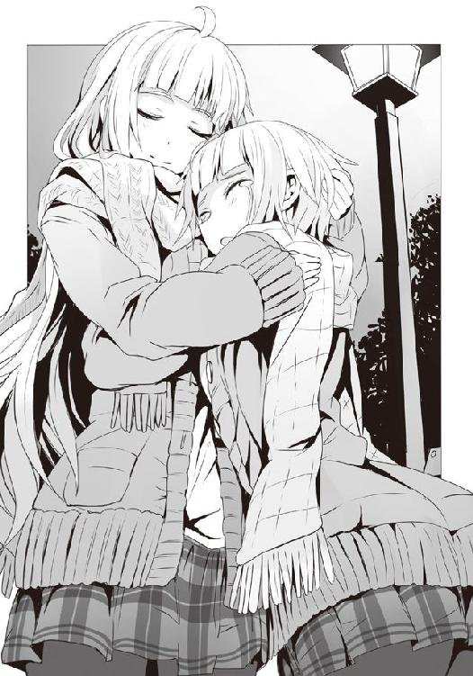
○
梗たちと別れ、一足先に帰ることになったものの......公園を出て少し歩いた時点で立ち止まり、早速沢桔姉妹からのバレンタインデーチョコの箱を開封することにした。
......というか、著莪が気になって仕方がないと駄々をこねたのだ。
チェッ、折角深夜、一人で文字通りに舐め回すようにして開封し、彼女らのわずかな匂いすら逃すことなくこの身に吸収しつつ、心のアルバムの一ページにしようとしていたのに......。
女の子からのプレゼントは街灯の下で開けるもんじゃないぜ、まったく。
綺麗に、そして丁寧に包装されていた箱の中には、ハート型のチョコ。そこに......多分、自画像だと思われる、ＳＤキャラ化した沢桔姉妹の姿がホワイトチョコの線で描かれていた。
結構かわいいけど......何か、小粋なアニメショップの商品というか、そういう雰囲気で、本命チョコ感が全然ないな、コレ......。
「あれ？ ナッツか何か入ってんのかな？ ......気になる。うん、良し、食べちゃおう」
「うん、そうだな......とでも言うと思ったのかよ。僕が貰ったんだぞ。大事に保存し続けるか、おいしく舐め溶かすかするのが......あっ」
箱を両手で持っていたが故に阻止出来ないのをいいことに、著莪の手がチョコに伸び......そして、あっという間に――。
「ちょっおまっ......おぉおぉ!?」
著莪はハート型のチョコをへし折り、その半分を颯爽と己の口の中へ。
「おっ、結構いいチョコのやつだ。ナッツもたっぷり。佐藤も食べたら？」
デェヘヘっと、おやつを貰った犬みたいに、得意げな顔をしやがってからに......。くそぅ、沢桔姉妹からの愛が半分に、かつ、姉妹が描かれていたのが、姉の梗のだけになってしまった。
このまま半分になったハートを持って帰るのも癪なので、著莪とともにその場で口にする。
......うん、本当にうまいやつだ。白梅のように高級感のある感じではなく、かといって紫華先輩のように家庭的なそれでもなく、はたまたあせびちゃんのような女の子な感じでもない。もちろんお徳用のチョコでもない。いいチョコに一工夫でナッツを入れて固めた感じの、それ。
手作りチョコって一括りに言っても、なんだかんだと個性が出るものだなぁ。
僕はチョコをおいしくいただき終わると、包み紙を丁寧に畳み、箱とまとめて大事に......著莪に取られました。
「もうゴミじゃん。アタシんちで捨てとくよ」
「......いいよ、しばらくは大事に取っておくから。思い出に」
僕は著莪から奪い返すと、箱も綺麗に畳んでスカジャンの内ポケットにしまった。
未練がましいなぁ、と著莪は笑った。
「そういやさ、佐藤、明日はどうする？」
二人してスカジャンのポケットに手を入れて歩きだすなり、著莪はそんなことを言った。
明日って？ と、返すと同時に、明日がバレンタインデーであり、例年の僕らの過ごし方を思い出す。
日本式ではない僕らのバレンタインデー。チョコを渡したりはせず、代わりにプレゼントを贈り合うのだけれど......僕は毎年広部さんあたりとラブる気満々であったため著莪には用意せずにいたものだから、その都度一日中彼女の奴隷のようにして付き合うのが通例となっていた。
すっかり忘れていたなぁとか思ったものの......いや、待て。明日は、まずい。
「い、いやぁ、明日はちょっと。......実は、槍水先輩の部屋にお呼ばれしてて......」
「っていう嘘だろ？」
ヘタクソな嘘だなぁ、と言って笑顔の著莪は、僕の頭にウリウリと拳を押しつけてくる。
「いや、その........................................................................割と、マジなんだけど」
......え？ と、著莪は言葉を失うように声を漏らし、急に立ち止まってしまう。振り返って見ればきょとんとした顔で彼女もまた僕の顔を見やる。
「......マジ、で？」
「うん、マジで。何日か前に日曜日空いてるか、って訊かれて、それで」
著莪は少し笑うようにしつつも、ちょっと俯き加減に不満げな目をする。
「え......え〜っ。だって、ほら、去年、言ったじゃん、今回も......って」
あれ、ひょっとしてマジでショック受けてる感じなのかな？ まぁ、一〇年以上大体そんな感じに過ごしてきたわけだから、急に今年は......ってなるとそうなるものなのかもしれない。
でも、著莪が去年言ったっていうのも、あれは約束というよりは彼女が一方的に言っただけで......あぁ、ダメだ、何で僕は胸の内でこんなことを言っているんだろう。卑屈になりかかってるのを自分自身で感じる。
僕らはお互いに立ち止まり、言葉を探しながら生まれてずっと一緒にいた相手の顔を見やった。そうしていると著莪が、僕が少し大人びた顔になったというように、著莪もまた少し顔つきが変わっているのに、ようやく気がついた。顔つきが著莪ママに似てきたという以上に、女の子、というよりは、女のそれになっている気がした。
可愛げは少し薄く、代わりにそれ以上の色気を内から漂わせている。笑っていると全然わからないけれど、こうして真顔で見つめ合っていると、それが如実に現れていた。
正直すっかり著莪のことが頭から抜け落ちていたのは事実だし、少し考えればここまで重い空気になるかどうかはともかく、彼女が嫌な気分になるであろうことはわかったはずだ。
だから、悪いのは多分僕なのだ。暗黙の了解、毎年の恒例......それがあまりに当たり前になっていたから......だから、逆に、つい......。
でも、すでに槍水先輩としっかり約束してしまった手前、今から著莪と遊ぶから......とは言えないのも事実である。でもクリスマスの時、結果的に一緒に過ごしたとはいえ、僕は槍水先輩と過ごすために著莪との約束を一度破ってしまっている。それをまた......。
出口のない迷路をグルグル回るような思考。僕は何も言えず、口を閉じ続けるしかなかった。
僕が完全に困窮したのを見て取ったのか、著莪は視線を外すと深くため息。
「......ちぇっ。せっかく新しい眼鏡買わせようと思ったのに......」
「......それってさ、今までで一番高くないか......？」
「それぐらいいいだろ。結局年末の埋め合わせで使った分より、お年玉の方がちょっと多かったんだし」
それを言われるとなぁ。今年は親戚がたくさん家に来たので、予想以上の収入があったのは事実である。ただ、僕の財布に若干の余裕がある以上に、著莪がその話を持ち出したのは......何となく、クリスマスのことを僕に意識させるためだったんじゃないだろうか。そんな気がする。
二度も連続で。そう言われているかのようだ。さすがに罪悪感が痛いほどに胸を刺す。
「まぁいいけど。......しゃーない、嬉し恥ずかしの仙のお宅訪問だしね。明日はガマか花菱でも誘ってどっか行くよ。佐藤は来週に......佐藤？」
僕の横を通り過ぎようとした著莪の腕を掴み、僕は少し力を入れて抱き寄せる。こういうのは喧嘩した時以外は僕の方からやらないのだけれど、今は、どうしてもしたかった。
少しばかり驚く著莪の顔。彼女の頭を支えるように手を伸ばし、僕はそっとキスを......しようとしたんだけれど......すんでのところで著莪の手が唇の間に差し込まれてしまう。
「......ダメだって」
そう言って著莪は僕の唇を指先で押すようにして、僕の腕の中から逃げてしまう。
腕の中から彼女がいなくなる瞬間、やけに空気が冷たく感じた。
崖っぷちに立ったような、今まであんまり感じたことのない焦りが生まれ、僕は慌てて著莪に何かを言おうとするのだけれど、その言葉を彼女の笑い声が遮る。
「有耶無耶にして逃げようったって、ダメだって。......来週、新しい眼鏡。はい、約束ね」
その言葉、その笑顔に、僕は何とも言えない安堵感を覚えずにはいられない。
うん、と僕は頷けば、彼女はもう帰ると言って背を向けるのだけれど......あっ、と声を上げるなり、すぐにまた振り返る。
「一応、念のため」
著莪はそう含みのある笑みを浮かべると、僕の首にその両腕を回してくる。
そして近づく彼女の顔。僕を包む、彼女の髪、花の香り。
「著莪......？ って、ちょっと、痛テテテテ！」
ダメだと言っておきながらキスされるのかと一瞬思ったものの、彼女の柔らかな唇が向かったのは僕の口ではなく、首筋。そして......何か、キュ〜っと音がするほどに思いっきり吸われ、キュポンっと漫画みたいな音を立てて離れた。
「うしっ、ガッツリついてる。これで鏡見る度思い出すっしょ。んじゃまた連絡するわ」
そう言って去っていく著莪の背中を見つつ、何が？ と思い、吸われた首をスマホで撮影してみれば......あぁ、思いっきり吸われた跡が。内出血して......あっ。ひょっとして、これが俗に言うキスマークってヤツか......？ 初めて見たけど......なるほど、たまに著莪パパの体にこれがあったのは、そういうことなのか!!
あんまり知りたくない親類の夜の営みの真実がわかりつつも、ここまでしなくても別に一週間後のことぐらい忘れないってのに、とちょっとだけ著莪の行動をおかしく思う。
ひょっとしたら明日のことを忘れられていたから、著莪もらしくもなく不安になったのかもしれない。僕からのキスを拒んだのもきっとそういう理由からで、だから眼鏡を買うという約束を有耶無耶にして逃げるなと――。
「......あ」
そこで僕はふととんでもないことに思い至り、一人息を呑んだ。
有耶無耶にして逃げるなってのは、ひょっとして来週のことじゃなくて......僕が抱いた罪悪感から......か？
著莪家伝統、というか著莪ママ直伝の技。とりあえずキスしておけば何となくＯＫな感じになるもの。でも著莪は、今回ばかりはそれで誤魔化すな、逃げるな、と......？
「......いや、そんなわけ、ないよな」
自分の妄想力は大したものだと普段から思ってはいたけれど、今回のは秀逸だ。
きっと少し著莪もまた大人になったのだと、彼女の顔を見て思ってしまったからだろう。
著莪はそんな面倒なことはしない奴だ。もっとストレートに、こうだと思ったらすぐに口にして、行動する。回りくどいマネなんてしない。まるで犬のように、愛らしく、愛おしく。
だから......違う、そのはずだ。
考えすぎた頭を冷やすのに、寮への道のりはちょうど良い。
僕は首筋を撫でながら、人気の失せた夜の道を一人歩みだす。
罪悪感と不安を抱いたまま......。
３章 恋する狼 その２
「うん、我ながら悪くないデキだ」
槍水仙
寮に帰宅した時、妙に静かだとは思っていたけれど......何だ、この有様は......。
著莪と別れてから約半日。昼までゆっくりと寝た僕が寮の洗面所で見つけたのは、白く燃え尽きた友の姿――衰弱して乾いた感じの内本君がいい顔して廊下に転がっていた。
「よ、よぅ、マイブラザー、佐藤。......いやぁ、白梅様の手作りチョコ......これほどとはな。オレの股ぐらが今大変なことになっているぜ......はは......。快楽の先には強い痛みがあり、それがまた快楽を生むという天国へのスパイラ......ル......」
ガクッと意識を失い、内本君は廊下の途中で力尽きた。
そんな彼を尻目に身支度を整え、スカジャンを羽織ると、いざ槍水先輩宅へ......と意気込むものの、知的好奇心を掻き立てられた僕は、それとなく神田君の部屋を覗いてみることにした。
彼の部屋に鍵はかかっておらず、ノブをそっと回して様子を見てみれば......そこには神になった男の姿があったのだった。
整理整頓された室内の中央に、窓から差し込む日の光を浴びながら上半身裸で座禅を組む、ちょっとスマートになった我が友、神田君。その表情には慈愛と賢良が満ち溢れていた。
佐藤か、久しいな。神田君は瞼を閉じたまま、まるで風がそよぐように静かに口にした。
「ど、どうしたんだ、神田君......」
「どうやら俺たちのような純潔にして健全極まるボーイズには、美少女からの手作りチョコというのは刺激が強すぎたようだ。まずはお徳用の義理チョコからが良かったのかもしれん。......よくよく考えてみれば手作りというのは何ともエロい。エロ過ぎる。考えてもみろ、手というのはその本人の体にくまなく触れ、その全てを知っている。頭や肩はもちろん、唇や乳房や......無論下腹部の様々な器官もだ。それらに日常的に触れている手によって作られた料理を食べるというのは、即ち間接的とはいえ、その作り手の体を味わうことに他ならないのではないか？ 白粉花さんが作ってくれた、どこかケミカルな苦味のあるチョコを舌の上でゆっくりと舐め溶かして味わうことは即ち、彼女の体を舐め回しているのと同義ではないのか......。それ故に、女慣れしていない俺たちはその強力な刺激により、体が過剰に反応し、繁殖行動欲求に激しく駆られたのだ。......佐藤、わかるか。風呂で身を清め、生まれて初めて自分に向けられたバレンタインデーの箱を前に正座し、これを食した時の衝撃が。最初は感謝と興奮だった。しかし、その直後には興奮だけとなったのだ。身悶えしそうなほどの性欲、廊下で半裸で歩いていた蔵田のおっぱいにさえむしゃぶりつきたくなる恐るべき衝動......。理性をかろうじて保った俺は部屋に閉じこもり、己を見つめることでその超えてはならぬ一線を死守したわけだが......買いだめしておいたティッシュが全てなくなったよ」
あぁ、今神田君は壮大な賢者タイムというわけか......。
人は何故生き、何故死ぬのか......とか、自分は頭がいいと思い込んでいるだけの多感な中学生が好き好んで語りそうなことを口にしだしたので、僕は入ってきた時と同じようにそっと部屋を後にし、一応矢部君の様子をお窺いしてみ......いや、やめた方がいいな、コレ。
「オレは......まだ......たた、かえる......！ まだ最後の一発が残って......いる......の、さ!!」
何だか、長大な物語のクライマックス、激戦の果てに最後の一撃でライバルを倒さんとするかのような声とともに、カチッカチッというマウスのクリック音が扉越しに聞こえてきたので、そっとしておくことにした。
最後に蔵田君の部屋を覗いてみると、ティッシュの花畑の中に全裸の彼がうつ伏せに倒れていたので、やっぱりここもそっとしておくことにした。
......白粉の奴、一体どんだけヤバイ薬をぶっ込んだんだよ......。チョコに入れておきながらケミカルな苦味がしたってことだから、三分の一ぐらいは薬だったんじゃないのか......。
興味本位で口にしなくて本当に良かった。僕はそんな感想を抱きながら友の亡骸に背を向け、寮を出た。目指すは槍水先輩が一人で暮らしているアパートである。
下着は出る前に新しいのにしたし、シャワーも浴びたし、スカジャンにはファブリーズを振りかけたし、爪は切ったし......うむ、完璧だな！ すでにピロートークの練習は誘われた日の夜から練習し続けているので、まるで唄うかのように語れる自信はある。これにより一層ロマンチックな雰囲気を演出して、そこからまさかの延長線に――以下略!!
ヌフゥ......落ち着け、落ち着くのだ、ヨー・サトウ。真のジャズマンは男子寮を出た直後に興奮して股間を膨らませるようなマネはしないものだ。これ以上興奮してはアパートに辿り着く前に果ててしまうぞ。
僕は自分にそう語りかけると、逸る気持ちを抑え込み、やや前屈みで歩みを進めていく。
しばしの後に辿り着く五階建ての学生向けアパート。最上階の角部屋、その扉の前に立った時、僕の鼓動はピークを迎えていた。
通路の手すりに指を這わせ、一度気持ちを落ち着けるために先輩宅の扉に背を向ける。
部室もそうだけれど、五階ぐらいまで来ると見晴らしは良く、ちょっと冷たいけれど気持ちの良い風が僕の興奮した体を冷やしてくれた。
手すりに両手をつき、眼下、十数メートル下の駐輪場を見やる。そうして心を落ち着けていると......薔薇の花束でも買ってくるべきだったか、と一瞬思うものの、そんなものを受け渡したりする暇がもったいないと自分を納得させた。もうアレだ、やるべきことは決まっているのだから、扉が開いた瞬間に柔道の技でも一発仕掛けて一気に寝技に持ち込んで、そこから......。
アダルティな映像作品の企画物にそんなのがあったような気もするけれど......悪くないな。うん、悪くない。例えば玄関を開けてくれたと同時に先輩の体に手を伸ばし、巴投げをかまして彼女を投げ......いや、巴投げはまずい。彼女が「わーっ」とあせびちゃんみたいに一階の駐輪場まで落ちていってしまう。あせびちゃんならかすり傷で済むだろうが、普通の人間は即死する。先輩はあせびちゃんのように強靱でもなければ、ファンタジー世界の住人でもないのだ。
そう、まずは紳士を装って、今日の招きに感謝しつつ、彼女がチョコを渡してきたら「そんな、信じられない」と驚き......その後は恥ずかしがる彼女をリードしつつ......いろいろあった後に、天井の染みを数えて『世界経済と性』というテーマの絶妙なるピロートークへ......。うん、イけるッ!!
よしっ、と僕は気合いを入れるとチャイムを押した。
「どうも、先輩。佐藤です」
『あぁ、待っていた。今、鍵を開ける』
トタトタと小走りに部屋の奥から玄関にやってくるかわいらしい足音が扉越しに聞こえ、そしてカチャリと鍵が解除される。扉が開く。その瞬間、先輩はまるで犬が主人の帰宅を喜ぶかのように僕に飛びつき......え？
まさか先輩ッ、こんな玄関どころか共有スペースの通路で!? 予想外な展開に、対応法をさっきまで想定していたことが仇となった。飛びかかってきた彼女の勢いを殺すことなく、僕はイメージトレーニング通りに彼女を巴投げで一階の駐輪場へ......って、危ねぇ!?
後転するように僕は尻、腰、背を地面につけ――たものの、飛びかかってきた彼女を抱き留めるようにして、仕掛けた巴投げを慌てて中止。
っぶねぇ!! 危うく殺人沙汰だぞ!? 人を増やす繁殖行動のために来たのに、いきなり減らしてどうするつもりなんだ、僕は!?
興奮の火が消え、全身に冷水をぶっかけられたような気分だった。手足が震えそうになりながらも、汗が噴き出た。だが、今、寝ながら先輩を抱きしめている、それを思うに、僕は――。
「こら、いきなり飛びかかるのは危ないだろう。手すりから落ちたりしたらどうするんだ」
いえ、大丈夫ですよ。僕は全てを受け止めてみせます。......そう言おうかと思ったものの、おかしな違和感を覚えて言葉を呑み込む。そして「あれ？」と思いつつ、両手で抱きしめているはずの彼女を手探りで確認すると......何か、小さいような......。
腕の中の彼女がもぞもぞと動き、昨日の梗のように僕の上に跨るようにして起き上がる。
何となく宙を彷徨っていた僕の両手に、彼女は――その子は小さな手を重ね、細い指を絡めるようにして左右それぞれを握る。
「久しぶりだから、嬉しくて。......えへへ、ごめんなさい、センパイ♪」
僕を見下ろす小さな顔、大きな瞳。けれどその目は笑みに細まり、逆に小さな口が大きく弧を描いていた。......危うく自分が殺されかけたことも知らずに。
「......ま、茉莉花？」
「はい、センパイ。お久しぶりです」
肩口までに綺麗に切りそろえられていた細い髪をサラリと揺らしながら、茉莉花は小首を傾げた。僕は握られていた両手をほとんど無意識に握り返しつつ、様々な意味で息を呑む。
茉莉花はいつもの首輪に、小さな獣耳が付いたフードのあるモコモコでゆったりと大きなパーカを羽織り、プリーツスカートにニーソを穿いて......その、僕の股間の上に跨っていた。
汚れのない小学生が、僕の股間の上で両手を繋いで純真無垢の笑顔で座っているという状況は傍から見れば完全に「あれ、入っているよね？」という有様であり、この状況を写真に撮られて警視庁辺りに提出されれば......そりゃもうＭＰ５で武装した一個小隊ぐらいの特殊捜査班......いや、僕ぐらいの勇猛果敢な戦士ともなれば特殊強襲班の投入、そして身柄確保は不可能だとして殲滅行動を取られる危険性があった。
即座に彼女をどかすべきだと思うものの、僕はいまだ巴投げを仕掛けたことへの恐怖と、何故僕と先輩が一つになる日に茉莉花がこの場にいるのか、まさか先輩、妹に英才的性教育を？ というか、まさかの姉妹を同時に......？ という様々な考えが錯綜してしまい、体が固まってしまう。指が絡み合う両手と、股間の上に乗る茉莉花の重みと、衣服を通して伝わってくる彼女の温もりを感じ取るばかりで......ようやく絞り出したのはシンプルな質問だけだった。
「ど、どうして......茉莉花が？」
「昨日こっちに来て、お姉ちゃんとチョコレート作ってたんです。だって、今日、バレンタインですよ。お父さんたちと......その、センパイへのをお姉ちゃんと作ってたんです」
「あ、そ、そうなんだ。へぇ、先輩、何も教えてくれなかったから......ビックリしたよ」
「あれ？ そうなんですか？ てっきりお姉ちゃん、ちゃんとセンパイに言ってくれてるのかなって思ってたんですけど」
......ははーん、ということはこのあと僕と槍水先輩が、今の僕と茉莉花を裸にしたような状況にはなることはない、ということか。手で繋がり、下腹部で繋がり、そしてもちろん心までもが繋がり合い、僕の上で彼女が艶めかしく腰を振り、乳房がたぷんたぷんと......そんな夢のような光景はやっぱり夢でしかないのか......。
まぁ......そうだよな、そんなもんだよな、そういうオチだってのは何となくわかっていたさ......ハハッ！
僕は苦笑いしながら、不思議そうな顔をする可愛らしい茉莉花を見やり......そして、ガチャリ、という音に視線を向けた。アパートの隣の部屋の扉が開き、そして――。
「ん〜うるさいなぁ......。えッ？ さ、佐藤......くん......？」
一瞬何故僕の名が呼ばれたのかわからなかったものの、そいつが寝ぼけ眼を驚きにハッと見開いた瞬間に、答えがわかった。寝起き姿のウルフヘアだ。
ボサボサの寝癖のついた頭をして、パジャマにダボダボのパーカを羽織っただけという何とも言えない姿だったせいで、一瞬それが誰かわからなかった。
僕と彼女はお互いに驚きの表情をしたまま固まった。
まるで広部さんにハートをロックオンされたかのように、僕が小学生と手繋ぎ騎乗位でいる姿にウルフヘアのハートがロックオンされたのかもしれない。
「うっそ、そんな小さな女の子を......共有スペースの通路で......？ け、警察に!!」
アカン!! ＳＡＴが強襲してくる!!
っつぅか何だよ、お前！ 何さりげなく先輩宅の隣に住んでるんだよ!!
「ま、茉莉花、ちょっとゴメン！」
慌てて室内に戻って通報しようとしているウルフヘアを止めんとして、僕は上の茉莉花をどかそうと思うのだけれど......茉莉花がしっかりと僕の両手を握っているものだから、なかなか外せない。どいてもらおうと身をよじるのだけれど、それがまずかった。
「こ、腰振り始めた!? 私が見てることで興奮を......？ う、うわあぁぁ！」
チィ、逃げられるッ!! 部屋の中に入られて鍵を掛けられたら、ぶち破るのに数十秒はかかってしまうぞ!! 僕の人生を終わらせるには十分過ぎる時間......クッ！
――承太郎さん！ あなたの『スタープラチナ』だ！
......チィッ!! ダメだ、露伴先生のマネをして言ってみたけれど、時は止まらないッ!! この辺の詳細は『ジョジョの奇妙な冒険 第四部』のクライマックスをご覧くださいっ!!
「こら、茉莉花。佐藤が迷惑しているだろう、こっちこい」
ネック周りが大きく開かれたセーターを着て、デニムのタイトスカートにいつもの黒ストッキングを身につけた槍水先輩が救世主がごとく現れ、茉莉花の首根っこを掴む。
「あぅーっ......」
先輩に獣耳フードを被せられ、まるで親猫に連れていかれる子猫のようにして、茉莉花が僕の上からどけられる。その瞬間、閉められつつあったウルフヘアの部屋の扉に僕は飛びついた。
ギリギリで閉まりきる前に隙間に指を差し込み、閉鎖を防ぐ。
「うわぁっ！ ちょっちょっと、やめて、やめてよ、佐藤くん！」
「違うんだ、話を聞け、聞くんだ！ え〜っと......」
僕はウルフヘアの名を知らぬことに気がつき、慌てて部屋の表札を見やるのだけれど......クソがッ、表札に名前がねぇ！ 都会に住む現代人のつもりか、小娘めがっ!! もういい!!
「聞け、今のは単なる事故だ！ というか思わず飛びかかられた際に反射的に巴投げしそうになって、慌てて技を解除したらあんな感じになったんだ！ って、聞いてる、ウっちゃん!?」
「ウっちゃんって誰!? 私ナンちゃんなんて相方なんていないからっ!! それに嘘がヘタ過ぎるよ、飛びかかられて反射的に投げ技仕掛けるとか、ゴルゴもビックリだって！」
ウルフヘアだからウっちゃんとしたのだけれど、不評だな。まぁいい、あだ名というのは総じてそういうものだ。それより重要なのは......ウっちゃんが割とマジで扉を閉めようとしているので、このままでは僕の両手の指、計八本が切断されかねないということである。
このままではさっきの茉莉花とやったような手繋ぎ騎乗位が出来ないのはもちろん、ゲームのプレイなどにも支障が......って、あ、ダメだ、痛い痛い痛いイテテテテテッ!!
「ウっちゃん、待て！ とりあえず待って、一瞬、一瞬でいいから扉開けて!! 僕の指が千切れちゃうから!! ねっ、ウっちゃん!!」
「ナンちゃんなんて知らないッ、全然知らないからっ!! それにどうせ扉を開けた瞬間に、ふははははははッバカめ！ とか笑いながら部屋に入ってきて......もうっ私に何する気!?」
知らんがな!! 何もするかよ、コンチクショウ!! くそ、こうなってしまっては......やはり、力で強引に行くしかないっ！ ソニックチームが力業でスプライトの回転を実現してみせたように、僕も力業でこの扉を押し開いてピンチを打開するのだ......ッ!!
僕は壁に足をつけ、ありったけの力で扉をこじ開ける。重心を落とし、ドアノブを必死に引っ張るウっちゃんごと、ズルズルと引きずるようにして扉を開いていく。
ウっちゃんが悔しげな顔で僕の顔を見つめるのだけれど......なんということでしょう。休日だからと油断していたのか......間違いない、彼女、現在絶賛ノーブラ中か......。
ドアノブを押さえているせいで、胸が寄って、昔流行った『だっちゅーの』みたいな感じになっていて、異様にエロい。ブラの固いラインが入ることなく、乳房の張りがありつつも柔らかそうな曲面がパジャマに浮き出ていて、何時間でも見ていたくなる。
僕の視線に気がついたように、ウっちゃんはハッとして、怯えたような表情をしつつ顔を赤らめ......何か、かわいい。そう思った瞬間、力が抜けてしまった。
扉が閉まる。だが、閉まりきるまえに指は素早く扉を放し、事なきを得た。
......が......まだ全てが終わったわけではない！
僕は扉の向こうにいるであろうウっちゃんに話しかけるために、素早くしゃがんで、新聞受けの蓋を指で押し開く。すると......ほほぅ、ウっちゃん、今日の下着は派手ですな。扉の攻防をしていたせいか、どうもパジャマの下が少しずり下がったようで、腰の部分からスポーティな感じのポップな柄物の下着がかすかに見えていた。無駄なく引き締まっている健康的なウェストもちらりと見え、いやらしいのにいやらしくない、不思議な光景だった。
ガチャガチャと二つの鍵を閉める音。先輩の部屋にもあったのだけど、ドアノブの所の鍵の他に扉の上の方にも鍵があるので、それを閉めたせいもあってウエストが出てしまったようだ。
「ウっちゃん、よく聞け、あれは犯罪でも何でもないんだ！ 僕はお隣の槍水先輩にお呼ばれされていてだな、さっき僕の上にいたのはその妹で、何も卑猥な行為はなかったんだ！」
「......え？ ちょっ、うわぁ、何してんの、もうやめてよ！」
新聞受けからの視線に気がついたのか、彼女は反射的に膝蹴りを放ってくるものの、僕が一旦退くと、彼女の膝頭はガンっと、虚しく扉を叩く。ウっちゃんの「ひぐっ」という妙な声が聞こえ、再度覗いてみると、彼女は玄関で膝を抱きかかえて涙目でゴロゴロしていた。
......多分、新聞受けの金具に当たったのだろう。痛そうだ。
「なぁウっちゃん。僕のことを通報しないっていうんなら、もうやめるけど......どうする？」
かなり痛かったのか、膝を抱えたまま、彼女は涙目で僕を見やりつつ、うんうん、と何度も頷いた。......何か、かわいいな、コイツ。
「......しない、通報しないよ、だから......もう、こんな酷いこと......やめて......」
「いや、何もしてないだろ。基本、自爆しただけだろ」
しばし涙目のウっちゃんが僕を見つめた後、彼女は視線を逸らして、その通りだと思ったのか、そっと、コクリと頷いた。とりあえず通報の危険性がなさそうなので、僕は新聞受けの蓋を開いていた指を抜き......しばらくしてからもう一回中を覗いてみる。ウっちゃんがお尻をこっちに向け、ハイハイするようにして部屋の奥へと戻っていくのが見えた。健康的ないいヒップラインだ。アングルが低い位置のせいか、何ともセクシーに見えるな。飛びかかりたくなる。
「......何をしているんだ、お前は」
先輩に声をかけられたので、今度こそ本当にウっちゃんの覗き窓......じゃなくて、新聞受けから指を抜いて、立ち上がる。
「ちょっと同級生がいたもので。特に何でもないです。えぇ」
僕は今一度ウっちゃんの部屋の扉を見やる。世間ってのは案外狭いものだ。
......スーパーだとそうでもないけど、普段は何かとイジリ甲斐がある子だな。今後先輩の部屋に来ることがあったら、その度にピンポンダッシュとかしてやろうと僕は決めた。
槍水先輩に促され、ようやく彼女の部屋へと上がった。
相変わらず槍水先輩の部屋は必要なものが必要なだけ、という感じなのでこざっぱりとしているなぁ。今は茉莉花が泊まりに来ているせいか、彼女の荷物らしいリュックサックとその中身の着替え類が部屋の片隅に置かれているものの、それでも綺麗で気持ちの良い部屋だ。
そして当然そこは槍水先輩の匂いで満ちていて、ビニールパックか何かに保存して寮に持ち帰りたくなる。よぉーく嗅いでいるとかすかにいつもの彼女の香水や、きっと朝食に目玉焼きかスクランブルエッグでも食べたであろう匂いを感じる。
「適当に座っていてくれ、今珈琲でも淹れよう」
あ、すみません。と言ってキッチンへ向かう先輩の後ろ姿をそれとなく、見やる。うむ、タイトなデニムのミニスカートと、黒ストッキングの組み合わせは悪くない。ニーソとの相性もいいが、これはこれで、なかなか......。ほぅ、そして冬合宿でもやっていたように、ストッキングに同色の黒いルーズなソックスを合わせるとは......冷え性対策なのだろうが......何か、この二つの組み合わせって......いいよね。
それにやはり今日はバレンタインデーだということだからなのか、少々化粧に気合いが入っているように見えるのは気のせいではあるまい。いつもより濃いというのではなく、いつも以上に丁寧にやった感じだった。
毎日顔を合わせているからこそわかる些細な違いだし、単に休日で身支度の時間に余裕があったからなのかもしれないけれど......それでも何か期待してしまうのは男の悲しい性か......。
「センパイ、センパイ♪」
茉莉花に呼ばれ、振り返ってみると、ちゃぶ台の前に座布団を用意してくれていて、そこを笑顔でポンポンと彼女は叩く。僕が促されるままにそこに座ってみると、彼女は大型犬が撫でてほしがる時のように、隣に座って身を寄せてくる。
何だか普段以上になついてくる茉莉花の頭を肩を抱くようにして撫でてやると、彼女は満足げな笑顔を僕に向けてくる。相変わらず指の隙間を流れていくような、細くてサラサラとした髪が気持ちよく、風に触れているかのようだ。
彼我の顔の間にある十数センチの距離は、その気になれば唇を奪うに十分な射程だな、と僕が一流の暗殺者のように目標との距離を測っていると、ふと、茉莉花と会うのは合宿以来なのだと気がついた。彼女がじゃれてくるのは、それで......なのかもしれない。
僕が彼女にしてあげたことは......割とハードなセクハラ紛いのことだけなのだけれど、彼女からすると僕は命の恩人的なアレだと思い込んでいるっぽいので、それで......？
近い距離で見つめ合いながら、あの時のことを考えると、あの暗闇の中での飴の遣り取りが自然と思い出されてしまう。唇に感じた、著莪以外の初めての唇の感触。冷たいのに温かくて、柔らかくて、恐る恐る茉莉花の――。
「すまん、佐藤。珈琲を切らしてしまっていたようだ。お茶でも、と思ったんだが......こっちもなかった。すまないが適当にゆっくりしていてくれ、すぐ行って買ってくる」
無意識に顔を茉莉花に近づかせていた僕は慌てて離し、先輩に引きつった笑みを向ける。
「あ、べ、別に大丈夫ですよ？ わざわざ買いに行かなくても、あ、何だったら僕が」
「いい。今日のお前はゲストなんだ、ゆっくりしていろ。茉莉花、ちょっと出てくるが、あんまり迷惑掛けるなよ」
「はぁーい。あ、お姉ちゃん、センパイに渡しちゃっていい？」
まったく、と槍水先輩は苦笑しつつ頷き、モッズコートを羽織ると部屋を出ていった。
その扉の閉まる音が響くなり、茉莉花は立ち上がり、キッチンから何やらブリキの宝箱のようなものを持ってくる。
壊れ物でも入っているのか、妙にそっと歩くのが少し気になるのだけれど......？
「それじゃ、センパイ。バレンタインデーのプレゼント......ですっ！」
「わぁー、ありが......とぅ？ なに、コレ？ 何か、南京錠が......」
茉莉花が得意げな、ちょっとイタズラ心のこもった笑みを浮かべた。
「単に渡すよりも面白いかな、と思ったので。宝探しゲームです。このお姉ちゃんの部屋のどこかにこのチョコの入った宝箱の鍵が隠してあります。センパイ、探してみてください」
なるほど、そういう趣向か。こんな一〇〇円ショップで売ってそうな南京錠など、その気になれば五秒とかからずに破壊出来るけれど......さすがにそれはルール違反か。
何より、もったいない。今、僕は茉莉花、そして恐らくは家主の先輩の許可を得ているだろうから、姉妹公認で僕はこの部屋を漁ることが出来るチャンスを得ているのだ。
......チラリと茉莉花に勘づかれないように横目で下着類が入っているであろうタンスを見やるものの、いきなりそこを開けて「ほほぅ、先輩、あんな顔してなかなか大胆なものを......」みたいなことをやると、さすがに茉莉花から顰蹙を買うかな？ ......先輩がいない今がチャンスという気がしないでもないが、まぁいい。後でごく自然な流れで漁るとしよう。
さて、それじゃと僕はまずはキッチンの方に向かってみる。うーん、一人暮らしらしく、調理器具や食器類は少ないし......まぁざっと見た感じではなさそうだな。多分朝食に使ったと思しきフライパンと皿がまだ汚れたままだったので、とりあえず洗っておく。
すると、ふと、ある物に気がついた。洗面台の上、かなり高い位置にある収納棚がちょっとだけ開いていたので、背伸びして覗いてみると中に綺麗に包装された箱が。
あれ？ 僕へのチョコレートって、さっきのブリキの宝箱の中にあるんじゃないの？ それともあの中には地図があって、これを見つけるのが本当のゴールってことか？
......あ、ひょっとして宝箱の中身は茉莉花からのものであり、これは槍水先輩からの......？
ということは、これには触れない方がよさそうだな。うん、見なかったことにしよう。
僕は一人そう決めると、脱衣所の方を見やる。......そうか、先輩は毎日ここで裸になっているのか。そう思うと、その脱衣所という空間にいるだけで何故か興奮してくる。男子寮での生活が一年にもなれば、こういうのは普通のことなのだと、僕は心の中で誰かに弁明しつつ、漁る。シャンプー、コンディショナーの予備や洗剤などの買い置きがあるだけだな。
となれば......と、僕は脱衣所に設置されている洗濯機にそっと手を伸ばす。
やはりこの中には使用済みの衣類が放り込まれていたりするのだろうか......。
これは宝探しのゲーム、この中を漁ることに何ら罪はないはずだぁ!!
「センパぁイ、そっちにはありませんよぅ〜？」
先ほどから居間にいる茉莉花からの声に、洗濯機の蓋を開けようとしていた僕の手が止まる。
......ぬぅ、そう言われてしまってはここを開けて中を物色することに正当な理由が見つけられんな。やむを得ん。僕は脱衣所を後にし、他の場所を物色することにした。
先ほどの僕が座っていた座布団の上でひよこ座りでニコニコしている茉莉花の視線を感じつつ、僕は本棚等を探るも、ない。続いてベッドへ。......ここになければ後はやはりクローゼットやタンスの辺りだな、とか考えていると、ふと、ベッド脇の写真立てが目に入った。
そこには部活で行った合宿での集合写真や文化祭の時にみんなで撮った写真、さらには修学旅行先の台湾で撮ったと思しき紫華先輩や木之下先輩たちとの写真なども並べられていて......何か、嬉しかった。ベッド脇のここにあるということは槍水先輩はいつも寝る前に僕らの顔を見ているのだろう。
......うーん、何だかタンスの中の下着を物色しようとしていた己の邪な心がパワーダウンしてしまうなぁ。申し訳ない気分になる。
「......ん、これは......？」
写真立ては他にもあって、僕らの写真に隠れるように飾られていたもののうちの一つを見やれば......烏田高校の制服を着た僕の知らない幾人かとの写真だった。髪を今よりいくらかおとなしい感じにセットしている槍水先輩や、烏頭みこと、そして彼女らに挟まれている金城優の姿もあって......それは、かつてのＨＰ部の写真だと知れた。よく見れば後ろの方にひっそりと秋鹿雅も写っているし、その彼の隣にも幾人かの男女が。その数、十人ほど。
槍水先輩は一年らしく、今のようなキリリっとした目つきはなく、ちょっとおどおどしているような顔をしつつ、微笑んでいた。照れ笑いするように。金城優の腕に恐る恐るつまむように指を這わせて。
僕の知らないＨＰ部。僕の知らない、槍水先輩の姿が、そこにはあった。
何だかその写真から目を離せず、僕はしばらく見つめていると、茉莉花に声をかけられる。
「センパぁ〜イ。早く見つけてくださいよー」
ごめんごめん、と僕は応じつつ一昨年の写真を元々あった場所に戻すのだけれど......何となく、無意識に僕らの写真の陰に完全に隠れるように置いてしまう自分の矮小さが、ちょっと、恥ずかしかった。
「しっかし、ないなぁ。本当にちゃんとこの部屋の中に隠してあるの？ 床下とか冷蔵庫の中の冷凍したご飯の中とか、そういう尋常ならざる場所じゃないよね？」
「大丈夫ですよ、先輩がちゃんと見てくれていればすぐにわかる場所です。ヒント、先輩が今立っている場所よりこっち側です」
......チッ、今のやつでタンスにはないということが確定してしまった。
僕は指定されたこっち側にある勉強机を再度調べるのだが、そこにもない、と茉莉花は言う。
「もう、センパイ。もっとちゃんと見てくださいよー。そっちも違って、こっち側です」
茉莉花はちょっと怒ったようにぷっくりとわざとらしく頬を膨らませて言うのだけれど......彼女のヒントを合わせて考えると隠し場所なんてほとんど......あっ。
ん〜ふふふっ、と僕は古畑任三郎のマネをして鼻で笑う。あまりにも似ていなかったせいか、それともそもそも茉莉花の歳になるとすでにその元ネタを知らないのかわからないが......何だかウケが悪いので、すぐにやめた。
ともかく、謎は全て解けた。何故先ほどから探索する僕をよそに、茉莉花は僕が座っていた座布団の上でひよこ座りをしたまま動こうとしなかったのか。普通こういうのは必死に探す姿を見て楽しむもの......。それなのにあえて座布団の上から移動していない。それはつまり――！
「茉ぁ〜莉花、ちょっと、立ってごらん？」
僕はニッコリと笑って、彼女の前でしゃがみ、言ってやった。
茉莉花がちょっと困ったような顔をする。
「......え？ た、立つんですか？ い、いいですけど......」
茉莉花はそっと、ゆっくりと立ち上がる。何か、内股っぽくなっているのだけれど......トイレかな？ まぁいい。とりあえず、これで鍵はゲットだ！
僕はしたり顔で座布団を持ち上げる。そう、答えはずっと僕の近くにあったのだ！
最初に茉莉花が座布団を用意してくれた時点で、すでに仕込みは終わっていたのだ。宝探しゲームが始まる前に仕掛けられていたせいで、盲点になりやすい場所......それが、座布団の下！
......うん、ねぇなッ!! ってことは......ははーん、座布団の裏に張り付いているんだな!?
......うん、ない。あれぇ......？
「茉莉花、ごめん、もうちょいヒントちょうだい。......茉莉花？」
「うー、落ちちゃう......」
何故か困った顔をして身を捩る茉莉花。それを見ていて、今度こそ本当に、わかった。
鍵は......茉莉花が持っているのだ。恐らく体のどこかに貼り付けたか何かしていたのだろう。それで、ヘタに動けなかったというわけか!! そうするとさっきの「もっとちゃんと見て」というのも合点がいく。もっと自分に注目してよ、ということで......今日がバレンタインデーだということと合わせて考えると、何とも......こそばゆくなるな。
さて、問題は茉莉花のどこにあるかだ。
僕はとりあえずフードの中を見てみる。茉莉花もすでにターゲットが自分になったのだとわかったのか、おとなしく、ちょっと頬を赤らめながら黙って僕にされるがままだ。
フードにはない。となると首輪をチェック。小さな南京錠なので、鍵は一、二センチぐらいしかないだろうから、首輪に隠せるかもしれない。ちょっと引っ張ってしまい、茉莉花が「うぐぅ」とかわいらしく呻く。......しかし、ない。
あ、もっとシンプルにパーカのポケットの中かな？ 僕は立っている彼女の後ろから抱きしめるように、細い体に手を這わせてそっとお腹のところのポケットに手を差し込む。
茉莉花の背はまだ低いので、まるで頬ずりをするようになってしまい、彼女のサラサラとした髪が僕の顔を撫で、ふにふにとした頬が触れる。そして先輩と似ているのに、何かが違う、そんな柔らかであどけない香りがして、目が眩みそうだった。
しばしもぞもぞしていると「センパイ......」とやたらと色気のある声で茉莉花が言うので、割と今の状況がセクハラな行為をしているのだと意識してしまい、僕はハッとして手を抜いた。
「えっと......ない、ね？」
「その......さっきまで見える場所にあったんですけど、今ちょっと多分見えないです」
何やら言いにくそうに茉莉花が言うので、僕は彼女を立たせたまま、その周りをグルグルと回りつつ、体の隅々まで観察する。
それこそ頭の先から爪先まで......あっ！ あるじゃん!!
僕はしゃがみ、そのわずかな凹凸を――茉莉花のニーソ、その太ももの部分にある鍵の輪郭を凝視した。そうか、そういうことか。多分、茉莉花、最初ニーソの履き口のところに見えるように鍵をキープさせていたのだろう。今日の茉莉花の短いプリーツスカートならば太ももとともにそこの部分は露出しているから、ひよこ座りしていれば......見えるのだ。でも、僕が立たせたことでスルッと中に落ちてしまったのだろう。
謎は全て解けた！ ......けれどこの子、凄い子だな。もっとちゃんと見て、って、自分の太もも、それもスカートとニーソの境目という街中で凝視しようものなら変態だと罵られそうなところを......。この子は将来どんな偉人になろうというのか。ちょっと心配になってくるぞ。
......やっぱり僕がきっちり面倒を見てあげるべきかもしれない。
......さて、問題はまだ茉莉花のニーソに浮き出た凸凹が必ずしも鍵であるとは限らないことだ。そう、見つけただけではゲットしたことにならない。ということで僕はさっそくその部分に指を這わせる。ビクッとする茉莉花をよそに、僕はそのぷにぷにとした太ももを揉むようにして鍵を上へ......股に近い、履き口、その入り口にして出口へと鍵を移動させようとするのだけれど......太ももの柔らかさを堪能するばかりで、鍵は昇っていかないな。むしろ落ちていく。
「セ、センパイ......それじゃ、多分、取れないんじゃないかな」
それもそうだな。と僕は同意するように彼女の顔を見上げようとして......自分が今、凄い体勢なのだと知る。茉莉花を立たせ、その前にしゃがみ、太ももを揉みしだきつつ、あとちょっと頭を下げれば、合わせ技でスカートの中まで覗いているように見えなくもないだろう。
これ、公園とかでやっていたら即座に警察官が飛んでくるのは間違いないな......。
「センパイ、早く......お姉ちゃん、帰ってきちゃう」
いや、別に見られちゃまずいことをしているわけではない......よね？
単なる宝探しのはずなのに、何故に、この子はそんなセリフを......。
茉莉花に促されるがまま、一気にケリをつけるために......そして自分の中にあるチャレンジ精神を発揮して、僕は......茉莉花のニーソにそっと手をかけた。だが、待て。これを脱がすなんていう破廉恥なマネをしてもいいのだろうか？ 小学生の衣類を脱がすなんて日本の法が許すものなのか？ いいや、許しはしないはずだ。......ならば、どうするか？ 簡単である。
指をニーソの中に入れて、鍵を取り出せばいいのだ!!
これはただのゲーム、それも僕は受動的に行っているのだから、何ら問題はないはずだ。
もう何だか頭が混乱してきて、余計なことを考えるより先に、僕は彼女の太ももの内側に押し込むようにして右手の指先をそわせ、ニーソの中に送り込む。
「セッ、センパイ!? ちょっと、それ......」
さすがに茉莉花も驚いたのか、急に内股になり、腰が引ける。
彼女は僕の頭を両手で抱えながら、吐息を少し乱れさせた。
意外にピッチリとしたニーソは僕の指先を、きめの細かく、張りのある温かな太ももに押しつけてくる。しかしそれにも負けず、僕はくにゅくにゅとニーソの奥に指を差し込んでいき......もう、何かアレだな。僕、この後死ぬんじゃねぇの？ っていうよくわかんない気分で茉莉花の内ももを撫で回すようにして、何とかその指先で鍵を挟み、これをゲットした。
彼女の肌を傷つけないように、ゆっくりと、やっぱり撫でるようにして指を引き抜こうとするのだけれど......ちょっと手がスカートの中に入り込むようにしないといけず、何か、背徳感にまみれた興奮が僕の心臓をギュッと握りしめた。
――あぁ、どん引きされてもかまわんね!! 知ったことか、世間から石を投げられようが、僕は今、この瞬間を精一杯に楽しんでやる!!
そんな熱い想いを胸に僕は己の手をニーソ、そしてスカートからそっと引き抜く。
茉莉花はスカートの裾を押さえながら顔を真っ赤にしてペタンと腰が抜けたように座った。
「センパイ......今の、大胆です」
ちょっとだけ非難するような上目遣いで、茉莉花が言った。さすがに世間から何を言われても気にしないけれど、茉莉花本人からこう言われると......今のはちょっとやりすぎた気がする。
温かくなっていた鍵を握りながら「ご、ごめん」と素直に謝る。
一瞬気まずい空気が流れたものの、その時、グラリと揺れた。
ちょっと大きめの地震だ。「ひゃっ」と声を上げて、茉莉花が抱きついてきたので、その肩を抱くと......地震はさらなる激しさを増す。おい、マジか!? と思ったほどの震動であり、それに呼応するかのように強い風が吹きすさんだ。
ロォオオォォオオォォオリイイィイィィィィイィィィイイィィイイィイィ!!
窓を震わすその振動が、まるで獣の咆吼のように聞こえ、どこか地底深くから巨大な化け物が現れるイメージが脳裏に浮かぶ。......それは十数秒ほど続いた後、静かに止んだ。
揺れも風も収まり、妙な静寂が訪れた次の瞬間、ガチャリっといきなり玄関の扉が開けられ、僕と茉莉花はつい「ひぎゃあっ」と声をハモらせて飛び退き、互いの体を抱きしめ合った。
「な、何だ、慌てて帰ってきたら......そのリアクションは。失礼だぞ」
レジ袋を下げた、槍水先輩である。
五階に着いた途端凄い地震があったので、慌てて駆け込んできたらしい。
「......心配して損した。まったく」
プンスカと擬音が見えそうなほどわかりやすく、槍水先輩は膨れてみせると、僕と茉莉花は一瞬顔を見合わせ、声を出して笑う。さっきまでのおかしな空気はもはやそこにはな――。
「あはははははヒック......ヒックッ......」
「どうした、しゃっくりか？ 地震に驚いたんだな。息を止めていろ、今水を持ってきてやる」
茉莉花が目をしばたたかせながら、息を止める。だが、数秒経つとしゃっくりが始まり、鼻と口から空気が漏れていた。そして先輩がグラスに入った水を持ってきてくれ、息を止めた状態から茉莉花は一気に飲み干すのだけれど......。
「えっほえっほ......ヒック」
むせて咳き込み、そしてしゃっくり健在という有様に、茉莉花は「う〜」と悔しげに唸った。
「仕方ないな。しばらく我慢していろ、そのうち治る。......佐藤、今、珈琲を淹れる、少し待っててくれ。そういえば、箱の鍵は見つかったのか？」
「え？ あ、はい！ そりゃもう、この通りです!!」
「そうか。ちなみに、茉莉花、散々悩んでいたが結局どこに隠したんだ？」
茉莉花の顔が見る見る先ほどまでと同じように赤くなり、あうあうあーヒャック、とわけのわからないことを言いだした。僕は慌ててそれを誤魔化すために声を上げる。
「そうだ！ しゃっくりを止める良い方法があるんです、くしゃみをすればかなりの確率で止まるんですよ、マジで！」
「くしゃみで、か？ ......ふむ、そうか、言われてみればしゃっくりは横隔膜の痙攣だから、くしゃみのような強制的かつ強烈な動きを与えれば......ということか。なるほど」
「で、でも、お姉ちゃん、くしゃみするっていっても、どうやって......ヒック」
僕はちゃぶ台の上にあったティッシュを抜くと、こよりを作った。
「これを鼻の奥に入れて、こしょこしょやれば一発だよ」
「う〜、それ、苦手です......ヒック」
得意な奴なんていないさ、と先輩はキッチンに向かいながら言うと僕らは笑った。
茉莉花は目をぎゅっとつぶり、僕が作ったこよりを鼻に入れてみるが......ダメのようだ。
「うーっ、無理ですよ、やっぱり、ヒック」
「うーん、かといって胡椒使うのもなぁ。ちょっと貸して。僕がやっていい？」
コクリと茉莉花は頷くと、僕に預けるように体を倒してくる。普通に座っていればいいのに、結局王子様が眠り姫にキスするみたいに肩を抱き、上から顔を近づけながらこよりを差し向ける。......うん、こよりの存在が邪魔過ぎて全然ロマンチックじゃないな。
「セ、センパイ......どうぞ」
そう言って茉莉花がギュッと瞼を閉じるのだけれど、こよりの代わりにキスしたらどんなリアクションをするのだろう、と実行したら危なそうな妄想をしつつ、僕はこよりを――そう！ 茉莉花の小さな穴に、僕の棒をそっと挿入し始めるのだった。
「うーっ......うーっ......ヒック......うーっ」
体内に異物が入り込む感覚が辛いのか、茉莉花はまるで泣きそうな声と顔で、唸った。
「大丈夫、怖くないよ。痛くしないよ。すぐに終わるから。楽にして。僕に任せて」
僕は優しく、リードするように言った。......自然と僕の鼻息が荒くなっているのは、きっと何者も侵入したことがない茉莉花の穴の奥に棒を挿入しようとする行為のせいだろうか。
......ハァハァ、何も性的な要素がないのに、何だ、この興奮は......!!
ゆっくり、ゆっくり。茉莉花が痛がらないように、今の状況を楽しむように、僕は棒――こよりを挿入していく。ちょっと体勢が辛いので、僕は座布団を折って枕を作るとそれを頭に当てがうよう、茉莉花を床に寝かせ、覆い被さるように彼女の股の間に膝をついて、プレイを――違う、くしゃみをさせんとこよりを進める。茉莉花の小さな穴を犯し......違う、侵していく。
「ふぇ、ふぇん......っぱい......うーっ、ヒック」
こよりが結構深く入っていくと、茉莉花の手が僕に伸びてきて、上着を掴む。そして、内股になった彼女の太ももに僕の足がギュッと挟まれた。
目尻にかすかな雫を溜めつつ、うっすらと開いた目で、茉莉花が僕を見る。
頬を赤らめ、鼻に異物があるせいで息苦しいのか、口を開け、はぁはぁ、と荒い息を漏らしていて......その色気というか婀娜っぽさは尋常ではなかった。
......この子がもう少し大きかったら僕は理性を保てなかったかもしれない。
「大丈夫、大丈夫だよ、茉莉花。すぐよくなるから......」
僕もまたハァハァと息を乱しながら、茉莉花の小さな穴の中に挿れている棒をそっと出し入れし、彼女の粘膜を......うん、僕、今なら逮捕されても反論しないぜ？ あぁ、何だったら銃撃してくれても構わんさ、あの世で「いやぁ、やらかしちゃったぜぇ〜でも後悔なんてしてないぜぇ〜」とか笑いながら言える自信がある。
別に何らいやらしいことではない、むしろ健全な行為であると言えるという事実と背徳感が僕の中で入り交じる。僕は得も言われぬ興奮を覚えながら茉莉花の顔と声と、僕の足を挟む彼女の股の間から伝わる体温を感じ続けた。
あぁ、今年は何て素晴らしいバレンタインデーなんだ!! 白梅からチョコは貰えるし、白粉からは......あれはいいや。あせびちゃんからも貰えて、オルトロス、そして槍水姉妹からのチョコ。そして......このプレイ!!
全然いやらしくないのに、何もかもが凄くいやらしくて楽しいこのプレイ!!
はっ！ 僕はもしかしたらビッグな商売を思いついたかもしれん......。
最近秋葉原とかで未成年を雇って性的なサービスをするお店が摘発されていたりするけれど、これならいいんじゃないのかい？ そう、未成年の女の子にこよりを優しく挿入、くしゃみが出るまでのプレイ......。うん、イける!!
「ふぁあっ、そこっ！ センパイ......センパイッきちゃうっ！ あっ、もうっ......もうっ!!」
ぬぅ、いかん、ビッグビジネスに心奪われているうちに茉莉花が絶頂、違う、くしゃみへのカウントダウンに入ったか。もう少し楽しんでいたかったけれど、仕方がない。
僕は最後にだめ押しというように、こよりで激しく茉莉花の体内を弄ぶと、素早く引き抜く。
その瞬間、茉莉花の体が硬直し、「へっぷちっ」とかわいらしいくしゃみが吹き出した。
......ハァハァ。た、たまらん。これ、毎晩やりたい......。
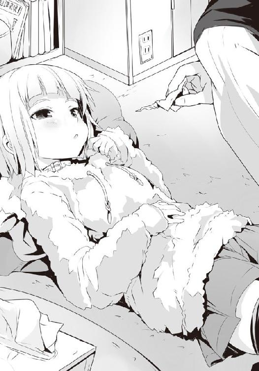
「ううー......。出たぁ」
極めてゲスな興奮に酔いしれていたものの、僕はそれをおくびにも出さずそっと茉莉花の上から体をのける。茉莉花も半身を起こすと、ティッシュを取って鼻をかんだ。
「どうだ、茉莉花。治ったか？」
珈琲を三つ用意して持ってきてくれた先輩に問われ、茉莉花は顎先に指をやりつつ、天井をしばらく見やる。
「......あ、出ない！ ホントに治った！ すごい、センパイ！」
いやぁはははっ、と僕は笑いながら心の中で思う。多分、一番凄いのは僕じゃなくて、茉莉花、君だよ......。僕が言うことじゃないのかもしれないけれど、今からそんなに男の心を惑わしていたら将来どうなるんだい......？
すごいすごい、と茉莉花はやたらと僕を褒めてくれ、腕に抱きついてくる。
先ほどまでのあまりにもアレにしか見えない顔つきから、今はかわいらしい子供っぽい笑顔への様変わりに、僕は何と言っていいかわからない。
その後、僕は忘れかけていた例のブリキの宝箱の鍵を外し、オープン。中にはハート型のチョコレートクッキーがたくさんだ。それも、焼いたクッキーの上に溶かしたチョコレートをコーティングし、さらに一つ一つホワイトチョコで〝ＬＯＶＥ〟の文字が書いてあって、何だか嬉しくなる。茉莉花が書いたのだという。
食べて食べてとせがまれたので、その場で一つ頬張ってみる。......うん、スッゲー甘い。あせびちゃんのそれと比べると、上にチョコがかかっているせいもあってか、甘みが強すぎる気はするけれど......何だか、その強烈な甘みが茉莉花っぽくて、微笑ましい。
「うん、我ながら悪くないデキだ」
うん、うん、と槍水先輩は満足げにブリキの宝箱の中に手を突っ込み、ＬＯＶＥの文字の書かれたクッキーを貪り食べていくのだけれど......あの、先輩、これ僕へのプレゼントではないのですか......？
茉莉花まで食べ始めて、凄まじい勢いで減り始めていく中、彼女がクッキーを咥えながら、不思議そうな顔をして僕を見てくる。
「どうかした？」
「あの、センパイ、これ、どうしたんですか？」
茉莉花の指先が僕の首筋に。クイクイっと押されたため、その位置が、昨夜著莪にやられたあの部分だと知れた。
あぁちょっとね、と僕は曖昧に誤魔化して、クッキーを頬張る。茉莉花は少し何かを考えるようにしていたのだけれど、結局最後は首を捻ってまたクッキーに手を伸ばす。
そして、槍水先輩はその間にも一人黙々と喰いまくっていたので、あっという間に宝箱の中身は空となってしまった。
「おいしかったね、お姉ちゃん。これならお父さんもきっと喜んでくれるね」
「そうだな。......ところで佐藤。食べ終わってから言うのもなんだが......一つ頼みがあるんだ」
お、いよいよか！ ついに先輩から「なぁ佐藤、私と一緒に日本の少子化問題に終止符を打たないか」とか言われちゃうわけか!?
いいよいいよ、やってやるよ！ 次世代のビッグダディになってやりますよ!!
そして最後にあのキッチンの棚に隠されている本命のチョコが出てくるってわけだ、もう見え見えだぜ先輩！
僕はにやけそうになるのを堪えつつ、先輩の子作り宣言を待つ......のだが、彼女の口から出てきたのは意外な言葉だった。
「今夜、行ってほしいスーパーがあるんだ」
今、僕の目の前には一軒の高級そうなスーパーが聳えていた。住宅街の奥、広めの駐輪場を有し、屋上には駐車場をも備えた高級志向なスーパーマーケットだ。
世界は夜、しかしこの店の周りだけは昼のように煌々とした光の中。
それは見る者に自然と神々しさを感じさせ、そこが単なる商業施設ではなく、神殿の類なのではないかと思わせるに十分だった。
かつてここで僕はかの《スルーア》からの攻撃を耐え凌ぎ、半額になってもなおやや高価な弁当を求めて争った。かつては槍水先輩すら退けた、今は神の膝元へと昇天した狼、《ガリー・トロット》と。
そういえばここってウルフヘアこと、ウっちゃんが結構頻繁に出入りしているところだよな。今日はいるのかな？
「でも、そうか。今日はさすがにいないか。バレンタインデーだもんな」
僕は一人呟き、スカジャンのポケットから折りたたまれたここの店のチラシを取り出した。槍水先輩から託されたもので、そこにはこうあった。
『男性限定！ 恋する乙女が作るバレンタインデースペシャル弁当フェア！』
......普通のスーパーではまず考えられない、店が客を選ぶという凄まじいフェアである。
一応普通の弁当も販売しており、そちらは誰でも購入出来るようだが、フェアの弁当に関しては高校生以上の男性のみ、という驚くべき仕様である。スーパーのメインターゲットの主婦層を完全に除外しているのだ。
槍水先輩からのお願い......というより、チョコクッキーとの交換条件が、この弁当だった。凄く食べてみたい、それも狼として半額に至ったこの弁当を......と。
多分何も考えていなかったのだと思うけれど、全て食べきってからお願いしてくるというハメ技具合だからたまらない。
僕はチラシをしまい、入店する。その瞬間、普段とはいささか質の違う視線が一斉に突き刺さってきた。高い天井を見上げながらそれを感じるに、視線は八匹か。いつもより殺気立っている気配がありつつも、どこか同情というか傷の舐め合いの感じがある、それ。
......そうか、よくよく考えてみれば日曜日のバレンタインデーの夜、限定の特製弁当を狙いに来る男となれば......僕のようなリア充とはほど遠い連中、というわけか。
フッ、すでに僕は勝ったも同然だな。何故なら僕はすでにチョコを幾人もの女子高生からいただきつつ、この後、先輩と部室で合流する予定なのだっ！ 茉莉花はさすがに明日小学校があるというのと、お父上にチョコを渡すためにさっき駅で見送ってきたのだけれど......いや、この言い方はおかしいな。まるで茉莉花との関係まで期待しているかのようじゃないか。彼女はまだ小学生、さすがに攻略対象とするには若すぎるってもん......だよ、な？
うーん、今日の、こよりプレイの時の彼女を思い出してしまうと〝愛し合うのに年齢なんて関係ないじゃないか！〟と力強く訴えたくなってしまうが......。
と、ともかく今宵は槍水先輩である。彼女が、バレンタインデーの夜に部室で一人で待っていてくれる。もはやそれは、隠してあったチョコを渡しつつ告白→「抱いて！」→ビッグダディ・洋の誕生、という完璧なコンボが発生するのは間違いなかった。
お前らとは違うのさ。そんな優越感とともに僕は入り口の周辺にある、今はすでに閉まっているテナントを見やりつつ、食品売り場のエリアに足を一歩踏み入れた......その瞬間だった。
全身に怖気が走る。それは白粉のネチャリとした視線と似つつも、もっとワイルドかつアグレッシブな視線。そして殺傷範囲に足を踏み入れたのを動物的な勘で察し、その場から飛び退きたくなるような危機感が僕を襲った。
「何だ、このヤバイ感じは？ 一体、誰が、僕を......ハッ！ 奴か!?」
僕の視線の先......店内最奥付近の総菜コーナー脇にあるバター等の日配コーナーとハムなどの畜産加工食品コーナーの境目にいるのは、食品実演販売員、というにはいささか威風堂々し過ぎた存在の人物......この店の半額神こと、ビッグ・マムだ!!
......そうか、よくよく考えてみればあの人の店だもんな。男だというが、パッと見は巨大な肉団子のような体型をしたおばさんである。彼は、エプロンを身につけ、調理帽を被ってパイプ椅子に座ってふんぞり返っていた。その脇では首が長くて、どこかＥ．Ｔ．を思わせる女性店員が悲しげな顔をしてホットプレートでウィンナーを焼き、小皿に爪楊枝とともに盛りつけていた。もっとも、それを片っ端からビッグ・マムが喰っていってるんだけど......。
......何だろう、あのよくわからないエリアは。
ビッグ・マムの絡みつくというよりは、僕の全身をまさぐるような視線を感じつつ、店内を歩いていくと店内ＢＧＭ越しに、彼らの会話がかすかに聞こえてくる。
――チッ、アイツ、あのロリコンか。――主任〜、そろそろ解放してくださいよ〜。今夜は旦那と二人っきりで過ごす予定が......。――は？ ふざけんじゃないわよ！ アタシは家に帰ったって一人なのに、何一人でいい思いしようとしてんのよ!? ――自分の旦那に甘えるのぐらいいいじゃないですかぁ。それにこれ、いい加減怒られますよ。誰にも配らずに主任が一人で食べてますし。――いいのよ、このウィンナーはアタシのポケットマネーで買ったヤツだから。むしろビール飲まずにいるだけでもありがたいと思ってもらいたいわね！ ――そもそもその主任が計画した、山木さんをダシにして一人モンの男を鑑賞しようっていうこと自体が不毛なんですよ、意味ないでしょ、そんなの。――バカね、アンタは。世の中にはまだこんなにも決まった相手のいない男がいる、それを見るだけで女は幸せになれるもんなのよ。――主任......切ないです。――店が閉まったらお前ん家で飲むからな、覚悟しとけ。――えぇえぇ!? ――仕方ねぇだろっ！ 山木のアニキ共は全員予定あっていねぇってんだから!! ――......うちの旦那を滑り止めみたいに使うのやめてくださいよ......。――じゃなに、本命ならいいわけ？ ――絶対ダメです。嫌です。私が死にます。――じゃ黙ってウィンナー焼いてろ。店終わり次第乗り込むぞ。――......旦那が危ない......。
僕は、何も聞かなかったことにして総菜・弁当コーナーへ向かった。......気にしていたら食欲が落ちるわ。
途中にあった〝まだ間に合うバレンタインデーチョコレート！〟という、この季節には男が寄りつかぬお菓子コーナーを横目にしつつ、店内最奥へ。
久方ぶりのその店の総菜・弁当コーナーは相変わらずセンスが良く、季節感のある飾り付けで雰囲気が出ていた。さらには総菜・弁当コーナーでありながら他コーナーの商品と合わせて展示することで、押しつけがましくなく、ごく自然に他の商品を勧めてくる辺りがうまい。
例えば、今宵であればまさにバレンタインデーらしく、チョコレートに合うワインのＰＯＰや――中身が入っているのかわからないが――ボトルが展示されていたりする。
普通、甘いチョコレートと合わせるとワインが負けてしまうけれど、きちんとチョイスすればマッチするものがある、そしてそれらワインの肴にはチョコだけでは足りなくなるはずだから......ということで日配コーナーにあるチーズのオススメチョイスが並んでいたりと、とにかく気が利いた展示の仕方だった。
また総菜コーナーも、今はほとんどないけれど、どうやら今日ばかりはいつもと違い二人で食べるのにちょうど良いサイズの、ちょっとお洒落なものが多かったようだ。
そしていよいよ弁当コーナーなのだけれど......ない。正確には通常の弁当コーナーには何もない。全て売り切れている。けれど、その弁当コーナーの三分の一ほどのスペースを使った例の男性のみが購入出来るバレンタインデー特設コーナーには三個だけある。
ははぁ、なるほどな。通常の弁当の方は主婦をはじめとした女性の皆さん、もしくは若干バレンタインデー特別仕様の弁当の購入を躊躇ってしまった男性などが買っていってしまったのだろう。さらに特設コーナーに場所を取られている分、数が少なかったのかもしれない。それで結局特別仕様の弁当の方が残った、というわけか。
はてさて、その弁当は......ほほぅ、カレー......いや、ハヤシライスか！
器はやや小振りな四角形。手前には飾り付けのように生クリームの白いラインが走るハヤシライスのルーとライス。それらとは別の区分けには、箸や先割れスプーンで食べることを想定してか、短冊状にカットされ、黒っぽいソースのかけられている豚ロースらしきもの。そしてその隣のエリアには......何だろう？ 焼きトマト？ それが十字に切られて、花でも開いたように飾られている。そしてさらにデザートなのか、賽の目状に切られたパンのようなものがこんもりと盛られ、チョコレートとおぼしきソースがかけられたエリア。
展示コーナーのＰＯＰを見やれば久方ぶりに見る山木柚子の姿。照れ笑いする顔でカメラを見やっている彼女の写真とともに『大切な人を想って作ったお弁当です』とあった。
チラリと先ほどからウィンナーの焼ける匂いを垂れ流している日配コーナーを僕は見やる。
パイプ椅子にどっしりと腰を据えて、腕組みをしつつ、ウィンナーに刺さっていたであろう爪楊枝を咥えるビッグ・マム。......きっと、あの人のことを考えて作られた弁当なのだろう。
「あれ、洋。来てくれたんだ」
声をかけられ、ゆっくりと動かしていた足を止める。
見やれば......頭にバンダナを巻いたエプロン姿の山木柚子だ。
彼女ははにかむように笑って、肩から提げていた昔の携帯電話のような機器の電源を入れた。
「久しぶりだね。ボクのお弁当目当てなの？ ......そっか、何だか嬉しいな」
確か二十歳ぐらいのはずだが、少年のように屈託のない笑みを見せるものだからたまらない。中性的な顔の作りに、無垢な表情。そのくせしてボディは完全にエロイ大人の女性っていうのだから、罪な存在である。
また、料理に化粧品の匂いを付けないためか、彼女は今すっぴんのようで、それがまた何とも彼女には似合っていた。
「三個、残っているんだね」
「うん。朝方は正直、調子に乗ってちょっと作り過ぎちゃったかなって思ったんだけど、ここまで本当によく売れてくれて。......それにマムにも食べてもらって......凄くいいって」
恋する乙女が作った弁当、か。なるほど。僕は思わず照れ笑いで頬を赤らめる柚子の横顔に、そんなことを思う。僕のためにではないのかもしれない、けれど彼女の気持ちがきっと目一杯に入った弁当......それは、きっと、最高においしいのだろう。
槍水先輩がどうしても食べてみたいとお願いをしてくる価値は、確かにありそうだ。
「今日はバレンタインデーだから、それに合わせてちょっと挑戦的な感じのを作ってみたんだ。これ、チョコやココアパウダーを使ってるんだよ。もし洋も食べられたなら、感想教えてね」
柚子はピッピッと、残っていた弁当の値札を、肩から下がる機械のバーコードリーダーで読み取っていく。そうするとカタカタと音を立てて三〇％ＯＦＦのシールが機械から生まれていくので、彼女はそれを元の値札の上に丁寧に貼っていった。
その時、不意に僕の体が一気に引き締まる。店内の空気が急激に乱れた。慌てている、そんな感じだ。これはいったい......。
気がつくと僕の横に一人のサラリーマン風の男が立っていた。細くて長身で、ネクタイもビシッと決まっている、そんな奴。彼は三〇％値引きされたばかりの弁当に手を......え!?
奴は弁当を手に取ると、「山木さん」と声を出す。柚子が〝？〟の文字を頭の上に浮かべながら彼の顔を見やり、「何でしょう？」と首を傾げた。
「あの、実は以前から働くあなたの姿を見ていて、俺......」
......あぁ、そういうことか。なるほどな、そりゃ確かにこれだけ魅力的な柚子が人目に触れるところで働いていればこういうこともあるわな。
僕は少しお邪魔っぽいので、さりげなくその場を離れる。すると、あの首の長い小顔の女性店員とすれ違った。
「他のお客様のご迷惑になりますので、こちらへ。山木さん、奥へご案内して」
言われて柚子は素直にそのイケメンな彼に弁当を持たせたままスタッフルームの中へ案内していく。柚子の美貌だ、この種のことは頻繁にあるのかもしれない。
......ただ、問題なのは半額を前に弁当が一つ減り、そして......さっきまで日配コーナーでふんぞり返っていたビッグ・マムの姿がすでに消えている、ということであろう。
「フッ、主任に命じられたとはいえ......また罪を重ねてしまったか......」
自虐的な笑みを浮かべる店員の視線の先には高揚した様子の先ほどの男。彼が山木に誘われ、その扉の奥へと姿を消していくのだけれど......何故だろう、何故だかわからないのだけれど、その観音開きの扉がどこか食虫植物の花のように僕には見えてしまった。
山木柚子というエサに寄ってきた男、首の長いＥ．Ｔ．みたいな店員にそそのかされて店の奥深くへ......。そこで待ち受けているのは......きっと......。
僕は消えていった男の未来を思い、自然と敬礼をしていた。グッドラック。
しかしながら、状況はシリアスだ。あの男の未来もそうだが、まだ半値印証時刻までは二、三〇分はあろうかというのに弁当は二つだけ。しかも先ほどの僕と柚子の会話に聞き耳を立て、彼女の横顔を見やっていた狼は少なくないだろう。......そうなれば、何としてでもあの弁当が喰いたくなっているはずだ。シビアさが増したのは間違いない。何より恐れるべきは、僕のようなリア充と違い、今日という日にいまだチョコの類を口にしていない連中からすると何としてでもアレを欲するわけであり、そうなると三〇％ＯＦＦでも......となりかねない。
僕はやや全身に緊張を走らせつつ、しばらく時を過ごす場所を探す。今日が日曜ということで余裕を持って早く来たはいいが......これから先の時間は長く感じることだろう。
一人でじっと待つより誰かと過ごしたい。どこかに知り合いは......いた。坊主と顎髭である。
僕は彼らと背を向け合うようにして、乾物の島棚の前に立った。
坊主がフッ、と小さく笑う。何故だかわからないが、この危機的状況下でありながらちょっと余裕を感じる。
「まったく、卑しい連中だぜ。まさに飢えた獣だな。俺たちのように余裕がねぇ」
あぁ、その通りだ、と隣の顎髭が同意する。
「......何だ、二人して誰かからチョコ貰ったのか？ ひょっとしてコレから？」
僕は胸に大きな球体を描くように手で示せば、二人はすぐにその意味するところを理解する。
「シーリーコートからは貰ってねぇよ。長ぇ付き合いなんだからくれてもよさそうなもんだが、アイツが今年渡すのは親父と弟だけだとさ」
幸せな弟だよな、と続ける顎髭の言葉に坊主は笑う。
「俺たちにくれたのは......ワン公、お前だって貰ったんだろ。オルトロスだよ。昨日、争奪戦に参加しないのにスーパーに現れて、俺らと、アイツに渡していったよ」
坊主が今し方の僕のように胸元に大きな球体を描くようなマネをする。
そうか、それであの二人、僕と二階堂の分の割にはやたらと大きな袋を持っていたり、ギリギリまでスーパーに来なかったりしたわけか。
うーん、ちょっと残念だと思ってしまうなぁ。いやほら、オルトロスも二人ということで、せめて僕と二階堂の二人だけにチョコを渡していないというのなら......ねぇ？ 顎髭たちまで貰ってるとなると義理というか、日頃の感謝のそれだというのが確定してしまった感じだ。
「オレら以外の連中は何としてもガリー・トロットのカカオを使ったあの弁当をゲットしようと血眼だ。寂しい連中だぜ、まったく」
オルトロスのが本命じゃないってわかっているだろうに顎髭は勝者の余裕を漂わせる。
「だが、それが命取りになるんじゃないのか。半値印証時刻はあれが食べたいと飢えている奴の方が有利というものだろう。腹の虫の加護は否が応にも増す」
「まぁそうだな。だから俺たちはこうしていつも以上に念入りに、そしてたっぷりと腹の虫との語らいを......おっと、また一人増えやがったな」
他の狼たちも警戒しているのか、新たな入店者の気配に店内の空気がやや乱れる。そいつは見るまでもなく狼だというのがわかるほどに気迫を発していて、なかなかの相手だと知れた。
「って......アレは......」
ズンズンとエントランスから弁当コーナー前にまで進み、その場をゆっくりと通り過ぎる姿......スニーカーに、ちょっとお洒落なジャージ、雨を弾く素材らしいテカテカとした黄色いフード付きのジャケット。それに鍔付き帽といったスポーティなスタイルのそいつ。
季節柄か、マスクをしているのだけれど......あれ、ウルフヘアじゃん。
「ほほぅ、やはり運命の赤い糸はオレたちを結んでいるな。そうだ、あのメーカーはお洒落でありながら機能的で、昨年からの流行だ。さすがはマイ・エンジェル......わかっている」
聞き慣れた声が乾物コーナーの反対側から聞こえてきたので、坊主たちと離れて裏に回ってみれば......地味に、ジョニーがいた。
「何してんだ、お前。いい歳した男が割と大きな声でマイ・エンジェルとか言って......」
「なに!? 聞こえて......いや、違う、その、アレだ。守護天使的な意味で、その、そう！ 今オレが着ているこのジャージのメーカーはオレに健全な体を与え、危険から守ってくれる天使的な意味で、そのだから......！」
「......っつぅか、気のせいかお前、西区に現れまくっていないか？ ここ何日か、よく半値印証時刻前とかにお前の話聞くんだけど」
「ハハッ！ き、気のせいさ！ その、アレだ、運命の赤い糸がオレをこの地に引っ張るんだ、そう、主にこの店に......ハハッ！」
「......あぁそうか。ウルフヘアの縄張りもこの店だものな。退魔師は？ 一緒じゃないのか？」
「あぁ、従兄さんなら今は警戒しておとなしくしているぜ。この前もトラックが急に突っ込んできたり、闇に紛れて音もなくスリングショットで飛ばしたと思しき金属玉が撃ち込まれたりしていてな。危なくて夜、外に出れねぇんだ」
......気のせいか、僕の頭に白梅の顔が思い浮かぶのだけれど......多分、違うよな、うん。
彼女なら一撃で仕留める気がするし。うん、違う違う。一方的に白梅を愛しちゃってるダメな連中がそれとなく動いているような気もするけれど、多分違うよね、ハハッ！
さぁて、ジョニーと千葉の埋め立て地に生息している化け物みたいな笑い声を上げている場合じゃない。僕は彼と別れ、ウルフヘアのもとへ行ってみる。
よぅウっちゃん、と気軽に声をかけてみれば、彼女はビクッと全身を硬直させた。
「ナンちゃんとか......知らない。わ、お、俺はピンの......その......」
「あぁ、それってひょっとして男装のつもりだったの？ 言われてみればそのジャケット、気持ちダボっとしてるから体のラインは誤魔化せてるか」
「何のことかわからない、ぜ。わた、俺はただ柚子さんのお弁当を獲りに来ただけの一匹の名も無き狼さ」
「あぁ男限定だからか。......でもそれで男って、正直苦しくないか、ウっちゃん」
「何がだ？ わ、わからないな。わた、俺は、そのただの狼だ」
「あくまでその設定で行くつもりか。......じゃ、日中判明したウっちゃんの自宅情報をジョニーに、あのジャージ着たマッチョに教えてもお前は気にしないな。うん、じゃっ言ってくる」
「待って！ 待ってよ、佐藤くん、それホントに勘弁！」
......軽い冗談のつもりだったのだけれど、ウっちゃんにいきなり腕掴まれて哀願されるあたり、ジョニー......お前、相当嫌われているぞ。
彼女はマスクを顎の下にずらし、その顔を見せる。
「あの人、何か最近ホントしつこくて。怖いんだよね、争奪戦の最中とか嫌がらせみたいに私の近くに来ようとするし、何か技が決まった瞬間にドヤ顔見せられたりとか......かと思えば変に助けてくれたりして......何がしたいのか、わからなくて」
ウっちゃんは帽子を目深に被り、ションボリ気味に俯いた。
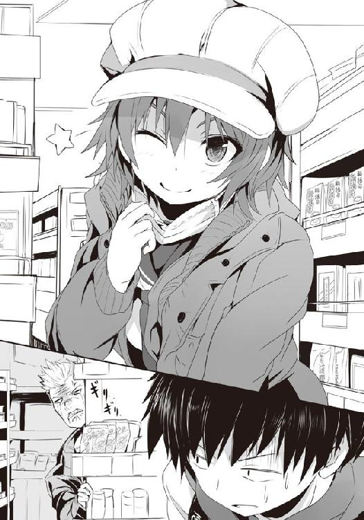
ジョニー、不器用にもほどがあるぞ。逆効果になってんじゃん......。まぁあんだけわかりやすいアイツの気持ちに気づかないウっちゃんもなかなかだとは思うけれど。
「とにかく、私は今ただの一匹の男の狼なの。佐藤君、邪魔しないでよね。そうしたら昼間の変態な行動は、黙っててあげるから」
ちゃんとした理由もあるし、別に誰かに言われたところでこれといったダメージはないのだけれど、ウっちゃん的には僕の弱味を握ったとでも思っているようだ。
フフン、と少し得意げな顔をする彼女が小憎らしくも可愛らしい。
うーん、そんな顔を向けられているからだろうか。何か、さっきから僕の背に殺意の籠もった視線というか、怨念が......。チラリとそちらを見やれば、島棚に隠れつつ、『家政婦は見た！』みたいな感じに顔を半分だけ出してこちらを窺っているジョニーの姿。しかし、アイツ、薄手とはいえダウンジャケット着ているのに加えて、そもそものガタイがいいもんだから、思いっきり体がはみ出しまくっていて余計に目立っていた。バカか、アイツは。
「ほら、またこっち見てる。怖いでしょ、アイツ。争奪戦前は遠目にすっごい見てくるし、終わったら終わったで何か〝あの、こ、この後あばばば、その、あれだ、従兄さん直伝の正しいスクワットのやり方を教えようか!?〟っていきなりわけのわかんないこと言ってくるし......」
うん、確かにそれは嫌というか、怖いなぁ。ウっちゃんだから何もしないだけで、普通の女性なら怖がってスーパーから離れるか、警察に行くかのどちらかだろう。
ウっちゃんはつきまとわれるようになってからの、ここ一週間ぐらいの出来事を僕に愚痴ってくるので、それを笑いながら聞いていると、彼女もまただんだんと笑顔になっていく。そして、比例するように僕に向けられる視線もだんだんとおぞましいものになっていった......。
「こ、この野郎......犬畜生の分際で、オレの天使に何ちょっかい出してんだよ......。オレだってまだそんなにお話ししたことねぇってのに......」
お話と来たか......。争奪戦が始まったら奴の動きには警戒した方がよさそうだな。狼としての攻撃ならともかく、私恨でやられたりしたら笑えない。
しかしながら、ここ二、三日のスーパーはちょっといつもと雰囲気が違うなぁ。やっぱりバレンタインデーということで、何となく誰もが男女のことを意識してしまうからなのか。
僕個人に限って言うと、女性と接触している時間がここ何日かは異様に長い。中学までは変に意識しているのに加え、周りの視線を気にするあまりに、むしろバレンタインデー前とかって微妙に女の子と距離を取ることの方が多かった気もするし。著莪は例外としても......あ〜。
そういえば僕は、初めて今年、バレンタインデーを著莪と会わずに過ごすのか。毎年いつもこの日は一緒に過ごしてきたのだけれど、今年はついに......。
自然と首筋に手が伸びる。著莪の奴、今頃何してんのかな。あとで電話でもしてみようか。
「あ、佐藤くん。そろそろっぽいよ。ほら、柚子さん、出てきた。......やっぱり今日だけは作り手の柚子さんが半額神なんだ。......うーん、やっぱり食べたいなぁ、あのお弁当」
......というより、今きっとビッグ・マムは他のことで忙しいからなんじゃない？ 僕はそう言おうとしたものの、口に出す前にやめた。食欲が落ちるだけで誰も幸せにならない。
「男装したりするぐらいだから、やっぱ期待大って感じ？」
「そりゃね。だって、私、ここで狼としてデビューしてるんだよ。最初の頃、意識なくした時とかは柚子さんにスタッフルームで面倒見てもらったりしたし、たまに相談に乗ってくれたりもして......その、凄く、いい人なの。男の子みたいだけど料理はもちろん、家事全般何でもできちゃう人だし、もう最高っ！ ......そんな人が想いを込めて作ったバレンタインデーのお弁当......絶対おいしいよ」
胸に手を当て、温泉にでも浸かっているようないい顔で言うウっちゃんを見ていると、この子は白梅と同じ性癖なのだろうか、と疑ってしまいそうになる。
でも多分、この感じからすると単に憧れの年上のお姉さんという感じかな。
「それにね、前に聞いた時だと、チョコとかをふんだんに使った料理なんだって。ね、佐藤くん、デザートじゃなく、おかずとかに使うんだよ。興味湧くでしょ？」
......確かに。言われてみればチョコとかはほとんどスイーツに扱うばかりでそれ以外で食べたことなどない。ウっちゃんが興味引かれるのも、わかる。
うん、ジョニーという面倒な敵を抱えた気はするけれど......ウっちゃんと話して良かった。腹の虫がさらに活性化している。やる気が、湧く。
僕は礼を言うと、腹の虫に語りかけるようにして、頭の中でシミュレーションをする。正直、料理の味はまったく想像出来ないのだけれど......しかし、そんな変わり種の弁当を持って部室へ行き、先輩と二人で食べるシーンなら想像出来る。二人で驚き、堪能し、そして笑い合う、その光景が。
僕と、本来参戦出来ないはずのウルフヘアは肩を並べて集中すること十数分......。
腹の虫の加護を全身に行き渡らせていると、不意に店内がざわめく。閉じていた瞼を開いてみれば、柚子が再び店内に現れていた。
今宵ばかりはビッグ・マムを差し置いて半額神となった彼女は、バーコードリーダーで値札を読み取っていく。しかし、肩から提げた機械からはシールが出てこず、代わりにエプロンのポケットからシール台紙を取り出すのだけれど......その意味は一発で分かった。
――月桂冠シールだ!!
「うっそ、凄い。このお店の月桂冠シールなんて......初めて、見る......！」
縄張りとしているウっちゃんでさえそうなのだ。そりゃ誰もが驚く。狼たちが雄叫びを上げるように、気合いを発した。先ほどまではどこか独り身の男故なのか、若干みみっちくあった店内の空気がより一層殺伐としつつも、それだけではない、洗練された鋭い緊張で満ちていく。
今ひょっとしたら僕は極めて特殊な状況下にいるのかもしれない。滅多に出ない月桂冠、それが男たちしか参戦出来ない今日という日に出てくる......。
いや、逆か。最近のこの店は柚子が入ってからさらに弁当の消化率が上がったせいで、そもそも半値印証時刻が発生しない場合が多々あると聞いている。
それが二つ残り、その両方が月桂冠に至る......それはこの特殊な状況であるが故か。
柚子はシールを貼り終えると振り返り、店内にいる狼たちに視線を向けてきた。バンダナを外すと「頑張ってね」とでも言うかのように、微笑んでみせ、スタッフルームへ向かっていく。
今日だけだからなのか知らないけれど、その様子はスキップするようでまだまだ初々しい。他店の半額神のドッシリとした重厚な雰囲気はないが、それがバレンタインデーという今日にあっては、狼たちの気分を盛り上げる。
彼女が作った弁当、彼女からの弁当......。そう考えるに、腹の虫の他に男としての本能もまた力を発揮してくれる......そんな気がした。
柚子、店内に向かって一礼。そして、その奥に姿を消した。扉が、閉まる。戦いが始まる。
ドンッと、普段のそれよりも猛々しい踏み切り音が店内を揺るがす。男だらけ故の、パワーだ。ウルフヘアも僕とともに、店内を走る。
全員が気合いを入れていたせいか、速攻を仕掛けられた者は誰もおらず、陳列棚前で僕を含む一〇匹の狼が......え？
「おいっ、マジかよ!?」
思わず僕は叫んでしまった。普通、陳列棚前に集結した場合、乱戦を形成するはずなのに......ほとんどの狼が何の躊躇いもなく体を投げ出すようにして弁当を狙っていきやがった。ダメージ覚悟の、捨て身の奪取である。だが、誰もが同じことを考えていたせいでほとんどエクストリーム・押しくらまんじゅう――全員で互いに体当たりをする、という酷い状況になり、壮大にエネルギー交換が行われ、密集した次の瞬間には全員が弾かれ、床を転がった。
それはまさに彼女の出来ない不器用な男たちの魂の衝突......とでも言えばカッコイイのだろうが、実際には独り身の男たちの必死なアタックである。......何だ、この状況。
全員が尻餅をつき、倒れ、転がった。そんな中でウルフヘアが一歩先んじる。一人だけうまく受け身を取り、即座に再度弁当へ仕掛ける。だが、弁当の表面に指を這わせるところまで行ったウルフヘアを挟むように、坊主と顎髭が左右からそれぞれ跳び蹴りを喰らわせ、三人が固まって床を転がる。そしてそこに体勢を立て直した狼が群れる。ここに至ってようやく通常の乱戦を形成。僕もまた中で揉まれるように、近くにいた狼と攻防を展開する。
「お前の相手は、オレだ、盗人変態犬野郎!!」
僕と拳を打ち合わせていた狼が横薙ぎに吹っ飛ばされ、ジョニーが現れる。
全身から並々ならぬ殺気を漂わせ、肌は紅潮し、目は怒りで血走っていて......ほとんど鬼である。節分は終わっただろうに、季節感のない奴だ。
街中でこんな男と出くわそうものなら全力疾走で逃げるところだが、今は争奪戦。そして何より......今の彼は、どうということはないのがすぐにわかった。だから......！
上空から縁を握っているカゴを被せる、というよりは被せつつも床にまで捻り潰そうとする一撃が迫る。周りが乱戦状態であることを考慮するならばヘタに逃げるよりは懐に飛び込んだ方がいいはずだ。だが、ジョニーはそれを待っている。もう一方の手で飛び込んできたところに一発かます気だ。
......でも......だからこそ、あえてそれに乗ってやろう。僕は奴の懐に無防備に飛び込んだ。
ジョニーがほくそ笑みつつ拳を放ってきたので、僕は飛び込んだと同時に重心を落とし、掌底を放った。拳に当てる。そして、弾かず、そのまま真っ直ぐに押し返した。
「なに......!?」
いまだ自分の状態が理解出来ないのか、ジョニーは驚愕の表情を浮かべつつ、バランスを崩す。僕は彼の膝に足を掛け、そこから奴の顎に膝蹴りを喰らわせる。完全に、入った。
「狙いが濁ってるぞ、ジョニー！ 弁当を欲さぬただの男がここで何が出来る!?」
腹の虫の加護のない、男としての嫉妬による攻撃などこの場では大した威力を持ちはしない。そんな奴に負ける狼などいるものか。
僕はジョニーの肩に足をかけ、そこを蹴り飛ばすようにして前へ出る。途中にいたパーマをかけた狼の肩を踏み、そこを経由して最前線へ。そこでは坊主と顎髭が激しい攻防を繰り広げていた。ウルフヘアの姿はないものの、あの鍔付きの帽子が足下に落ちているところを見ると、彼女はすでにやられたか。どの道、女の子では弁当は買えないのだ、仕方がないだろう。
僕は陳列棚を背にして他の狼と戦っていた坊主と顎髭の間に飛び込んだ。視界に入る、透明な蓋越しに見える柚子の弁当。彼女が恋心を込めて作った、それ。
腹の虫が騒ぐ。そして、それに男としての本能が加算されていく。
あの弁当を食べたいとする想いが、一つになり、体の中で燃え上がった。
ワン公！ 顎髭と坊主が叫びつつ、飛び込んできた僕を挟むように、着地と同時に仕掛けてくる。顎髭の顔面狙いの拳と坊主の足払いのような蹴り。左右からの上段と下段への同時攻撃。彼らもまた伊達に長く戦っているわけではない、見事な連携技だった。
腹の虫の加護が高まったことで一気にいけるかと思ったものの、さすがにキツイか。
転倒はまずいので、拳を顔面に喰らいつつもローキックを同じく蹴りで相殺する。
視界が揺れる。それでも痛みは薄く、衝撃は意識を飛ばすには至らない。拳に続いて追撃を仕掛けてきた顎髭に、僕は軽くジャンプするとともに飛び込むようにして腹部への蹴りを放つ。それは蹴りにしては弱いが、僕は奴の腹を押すようにして、その反動で坊主へと飛んだ。
僕が顎髭に向かったと思って一瞬油断したようで、坊主は他の狼へ意識を向けようとしており、僕の行動は完全に彼の隙を突いていたのだが......クソッ！ 顎髭の奴、蹴りを受けた瞬間に腰を引きやがったな!? 横合い――坊主への跳躍がいささか弱い。
速度が乗らず、坊主に勘づかれ、対応する間が生まれてしまった。
「へっ、二人同時の相手はさすがに調子乗りすぎだろ、ワン公!?」
坊主は周りから迫っていた狼への攻撃をやめ、一、二発そいつらから喰らうのを覚悟で僕へ顔を向け、拳を固める。空中にいる僕はもはや軌道修正のしようもないので、最悪相打ちで吹っ飛ばすぐらいの覚悟を決めたのだが......そこで僕らの予想外の出来事が発生した。
僕と坊主、そして周りの狼たちの上に、影が出来ていた。燦々とする白色灯の光が遮られ、薄暗闇になったのだ。それが何を意味するのか、僕よりも先に坊主が勘づき、上を見る。
僕もまた彼に攻撃を仕掛けつつも、それに倣えば......人がいた。両手足を広げ、僕らの頭上へ舞い降りてくる。
それを理解した時、自分は確かに調子に乗っていたのだとわかった。今宵の敵を見た限り、天井技を使う相手がいないと無意識に判断していたのだろう。元々この店は天井が高いために天井技は使いにくく、また何より使える狼がそもそも少ない......そして、僕がする側であったから。だから坊主の方が、反応が――状況の理解が早かったのだ。
だが......それでも坊主は驚いていた。そして彼が驚いているのを視界の端に捉らえつつ、一瞬の後に僕もまた驚いた。飛来する狼は、僕らに背を向けていたのだ。顔も当然天井へ向いているため、僕らを見ようともしていない。それで攻撃など出来るはずがない。では、何のためにそいつ――やや大柄な狼はこんな無茶を？ まさに得体の知れない攻撃だった。
僕は坊主へ放とうとしていた拳を引っ込め、上空からのそいつへの対処に意識を向ける。坊主もまたそれを察したのか、僕への攻撃の意志を消し、掌底のようなものを放ってくるのみ。それは単に僕を止めるだけのものだった。僕は掌底を受け、慣性を打ち消し、床に着地。一瞬前まで攻撃しようとしていた坊主と共に陳列棚に背を向けて肩を並べ、上空からの狼に備えた。
そして、その時になってそれが攻撃ではなく、攻撃をされた狼だったのだと知れる。
手足を広げ、降ってくる男、その上にもう一匹、誰かいる。
逆光のような状況に、僕も坊主も目を細め、状況を理解しようと努め......そして、ようやく全てが知れた。フードを被ったウルフヘアだ。アイツが飛来する男の腹の上に、乗っている。恐らく乱戦の中から大きく狼を一匹空中に投げ飛ばし、その上に飛び乗ったのだ。
男を受け止めれば、その上からウルフヘアが弁当に手を伸ばし持っていかれる。だからといって、二人分の質量をまとめて弾き返すには力を溜める時間が足りない。
何よりウルフヘアがその男にずっとしがみついているわけではないのだ。男を薙ぎ払った直後の隙だらけなところを彼女に攻撃されればひとたまりもない。
そして、そこは最前線......。即座に弁当奪取に動かれたら......。
せめて乱戦の密度が濃いのならば、ウルフヘアの対処は他に任せて男を薙ぎ払えもした。だが、上空から迫り来た影を天井技の一種だと早とちりした前線に近い狼たちは皆一様に避けようとして散ってしまっている。誰もそれが攻撃された者の体であり、その陰に隠れるようにもう一匹狼がいるところまでは読めなかったのだ。
たった一瞬。しかし、その間に僕らは完全に劣勢になり、ウルフヘアは見事なまでにうまいことやってのけたのを嫌というほどに感じた。
「ワン公、来い!!」
坊主が隣で声を上げた。上から横へ、視線を向ける。彼もまた僕を見ていた。目と目、それは極めて短い時間であるのならば口よりも多くを語り、耳よりも相手の意思を聞く。
僕は理解した。坊主は顎髭と長くやってきたわけだが......僕とも一年近く戦ってきたのだ。
坊主は両の手のひらを股ぐらの前で重ね、そこに僕は足を掛ける。そして、飛んだ。
坊主が全力をかけて僕を押し上げてくれる。それらの力が合わさり、ロケットの打ち上げがごとく、凄まじい勢いで僕は上昇。頭上に迫っていた男の背に、拳を放つ。
「また!? いっつも邪魔ばっかりっ!!」
苛立ち混じりの声とともに、ウルフヘアが男の上から逃げる。男の体は僕の攻撃により彼方へぶっ飛ぶものの、ウルフヘアはそのまま落下。立ち直りつつあった顎髭と僕を押し上げた坊主の間に落ちていく。一方、僕は勢いが強すぎたのか、男を吹き飛ばした後も上昇を続けていくが......天井に達しはしない。途中で重力に捕まり、落下し始める。
下方を見る、ウルフヘアを坊主と顎髭がまさに挟み撃ちというように締め上げていたのだけれど......そこに、ジョニーが介入してきた。前線の密度が下がったこともあり、遮二無二前に出てきたようだ。
カゴの縁を持ち、その長いリーチを使った突き。ジョニーの得意技だ。
坊主はそれを受けはしたものの、走り込んできたジョニーのパワーに負けてしまい、後ろ腰を陳列棚にぶつけた。そこにジョニーの追撃だ。
坊主のツルツルの頭にカゴが被せられる。引きずり倒すのかと思いきや、そうではない。
ジョニーの体に並々ならぬ力が入ったのが上空から見ているだけで、はっきりとわかった。
ジョニーが重心を落とすとともに雄叫びを上げながら弁当陳列棚に背を向ける。坊主の頭がすっぽりと収まったままのカゴを、彼はまるでアンダースローで剛速球を投げるようにして乱戦後方に向けて放ってみせた。
カゴはジョニーの手に残ったまま、しかし坊主は信じられないような速度で乱戦を切り裂き、二、三匹の狼を弾き飛ばしながら、遥か彼方の島棚の間にまで吹っ飛んだ。
信じられないほどの凄まじい威力に、僕はあるスポーツを思い出す。
「今のはまるでハイアライ......セスタの原理か!?」
日本ではマイナーなそのスポーツは、腕にセスタと呼ばれる長い筒状のラケットをはめ込み、それを使って球を投げたり受けたりするものだ。腕を延長したようなラケットから繰り出される球は三〇〇キロを超えるといわれ、時には死者すら出す豪速の球技。
ジョニーはスーパーのカゴでセスタを再現し、坊主をボールの代わりに吹っ飛ばしたのだ。
ジョニー得意のカゴ技をよりアクティブに、よりパワフルに進化させ、攻撃としてはもちろん、そこに投げ技の要素が入ることで敵を戦線から遠ざけつつ、同時に複数人への攻撃へも可能としたか。......何て技だ......。
「従兄さんが考案してくれた、新技だっ！ どうだ!?」
ビシッと親指で自分の顎先を示すようにして、ドヤ顔をするジョニー。その視線の先は、フードを被ってマスクをしていてもはっきりと分かるほどどん引きしているウルフヘアである。
彼女はテンションが下がったのか、顎髭と拳の応酬をしていたが唐突に押し負け、顔面に一撃喰らって、膝をついてしまう。
「貴様ッ、よくもマイ・エンジェルに!!」
ジョニーが憤怒の表情で顎髭に襲いかかるものの......先ほどまであった迫力が薄れたのを感じる。明らかに腹の虫ではなく、単なる男としての行動だ。
今のタイミング、普通に考えれば顎髭を無視して弁当に手を伸ばせば運が良ければ奪取出来たはずだ。......そうか、恐らく、ジョニー自身もそれがわかっていたんだ。だから、顎髭に向かった瞬間に腹の虫の加護が一気に弱くなったのか。ならば......！
着地した僕は周りにいた狼一匹に足払いをかけ、もう一匹近くにいた狼に拳を喰らわせてぶッ倒しつつ、背を向けていたジョニーに背後から掌底を放つ。
「もう仕方ないっ!!」
ウルフヘアが介入してきた。横合いからの蹴り。......こいつ、ジョニーと組むつもりか!?
僕は舌打ちする。蹴りを喰らいつつも、掌底はジョニーの背にねじ込んだのだが......吹っ飛ばせない。ウルフヘアの蹴りのせいで弱まったのもあるだろうが、それよりもジョニーの全身に並々ならぬ気迫が一気に溢れたせいだ。
ウルフヘアへの邪な心で腹の虫の加護が増すとは思えない。何故だ――？
「行くぜ、変態ッ！ とくと喰らえ!!」
掌底を背で受けたジョニーが振り返る。全身に力が漲り、腰を落としつつカゴを被せに来る。その動きは先ほどの坊主へやったのと同じ――。
僕は両手の拳を頭上で叩きつけるように合わせてカゴの捕縛を肘で阻止しようとするのだが、その片方の腕にウルフヘアの蹴りが当てられる。防御が崩された。
頭上からカゴ。視界が格子で区切られた。そのまま抉られるように、首をもぎ取られそうな衝撃が走る。
その瞬間、僕はおかしな感覚を味わう。カゴ技。それなのに、どこかその攻撃に《ギリー・ドゥー》こと禊萩真希乃とのかつての死闘を思い出す。
そしてかすかに、一年前の槍水先輩の攻撃も、また......。
違う技、違う痛み、それでも僕は何故かその二人を連想する。しかし、それも一瞬だった。
顎を引っ張り上げられるような力。上から押しつぶすような圧力に一瞬尻餅をつきそうになるものの、首を引っ張られ、むしろ足が地面から離れるのを感じる。踵がかすかに床を滑る。
踏ん張れば吹っ飛ばされる距離は減らせるだろう。だが、そうなると首にカゴの縁が喰い込むに違いない。このジョニーのパワー......ただ息が詰まるだけで済むとは思えなかった。
僕は苦渋の判断で、足から力を抜き、飛ばされるに任せた。あえて抵抗しなければダメージは最小限に――まずいっ!!
首に喰い込むカゴの縁。あえて吹っ飛ばされるがままとしたのに、それでも予想を遥かに超える力だった。引き絞った糸が切れるように、自分の意識が一瞬途絶えたのを感じる。
感じる、と思った時はすでに意識が回復しており、凄まじい速度で僕は空中を飛んでいた。天井が見える。壁も見える。店内外周のルートを、仰向けで、飛んでいる。
僕は両方の踵を床に叩きつけた。一気にブレーキ、しかしそれでもなお全身が慣性に引っ張られる。顎を引き、衝撃に備えた。速度の低下を感じた直後に重力に引かれ、僕のケツが床に落ち、激しい勢いで後転。それでもまだ勢いが殺せない。
大股を開くようにして、膝をつき床をその状態でしばし滑って......ようやく、止まる。
弁当コーナーが、遠い。顎髭が一人で踏ん張り続けている。
さっき僕がついでのように二匹の狼を薙ぎ払ったのが痛かった。顎髭がジョニーとウルフヘアを同時に相手にし続けるのは、無理がある。
ジョニーがその気になれば弁当を獲れる、だが、彼はウルフヘアに先に弁当を獲らせようとしている。それ故にあえて獲りに行かず、そうであるが故に腹の虫の加護がまた弱まってしまい決定打を出せないでいる。そして、それらを読んだ顎髭は、ジョニーの攻撃を受けつつウルフヘアに注意を向け、彼女にだけは弁当を獲らせまいとしていた。だが、それが維持出来るのはわずかな時間でしかないだろう。どう考えても顎髭一人では手数が足りない。
案の定、顎髭は弁当に手を伸ばしたウルフヘアの手を弾き、彼女を蹴り飛ばすものの......その際にジョニーにカゴを被せられてしまう。
――ここから走り込んで、間に合うものなのか。僕は考える。自分のコンディションを計算に入れる。ジョニーたちのその後の展開を読む。......ウルフヘアが一個奪取するのは甘んじて受け入れても......直後のジョニーにギリギリで追いつけ......ない。ダメだ、間に合わない。
......しかし、やるしかないのだ。もはや道は一つしかない。
僕は全身に力を込めつつ、あえて瞼を閉じる。腹の虫へ最後の語らい。あの弁当を思い浮かべる。チョコなどを使ったという柚子の手料理。生クリームのかけられたハヤシライス、豚肉、トマト、賽の目状にカットされたパンのようなもの......。どんな香りがするのだろう。どんな味がするのだろう。どれだけ......おいしいのだろう。狼として活躍し、一時期は氷結の魔女さえも退けたかつての名うての狼が胸を張って作った月桂冠。その味を疑う余地はない。
けれど、それは......どんな感じなのだろう？ おいしいだろうと信じることが出来るのに、味自体は全然想像がつかない。わからない。だからこそ......食べてみたい。この後、部室で槍水先輩とともにそれを頬張りたい。今日という日に、彼女の期待に応えるためにも。
全身に腹の虫の加護が行き渡る。瞼を開く。全てはスローモーションのようにゆっくりと。
ジョニーが顎髭を床へと押し潰していく......。尻餅をついていたウルフヘアが立ち上がりつつある。――今の僕じゃ、間に合わない。
だが、走るしかない!! 奇跡はいつだって諦めない奴に起こるものだ!!
僕は足に踏ん張れ、走れと伝える。持てる力の全てをそこにぶち込み、奇跡を力ずくで起こさんと腹に力を入れる。息を吸った――その瞬間、砕くがごとくに床を蹴りつけ、まさに飛ぶがごとくに加速した。自分自身驚くほどの、それ。
踏み切ってから、全てを僕は理解する。吹っ飛ばされた位置は日配コーナーの前......そう、その近くでは先ほどまでビッグ・マムがいた。半額神とその部下は、そこで先ほどまでウィンナーを焼いていたのだ。今はもうホットプレートは電源が落とされ、ウィンナーもない。
だが......神が残した香りは目に見えぬものの、そこに在り続けていたのだ！
夜遅い時刻、戦いの末、最後の最後、空腹をさらに強めた今の状況に......それはあまりに刺激的だった。
最後まで足掻こうと決めた僕の鼻から体内に入り込んだ、ウィンナーの匂い。
それを腹の虫が吸収し、信じられぬほどのパワーを生んだ。
僕の気迫か、それとも踏み切り音に反応したのか、ウルフヘアがハッとして僕を見やり、慌てて弁当コーナーへ手を伸ばす。
ジョニーもまた今の己のコンディションを理解しているが故か、顎髭に被せて潰そうとしていたカゴから手を放し、ウルフヘアから一瞬遅れて弁当コーナーへ手を伸ばす。
さっきまでなら間に合わなかった。だが、今は......違う!!
弁当コーナーへ続く床がまるで激流のように僕の下を後方へ流れていく。
投げられたボールのように、ジョニーとウルフヘアの姿が大きくなる。迫ってくる。
足の感覚が消えていく。だが、走っている。振っていたはずの両腕の感覚も消える。
ウィンナーの匂いを含む空気を取り入れたはずの肺が、血液を大量に送り出す心臓も存在が......全てが、薄れていく。
残ったのはウルフヘアとジョニー、そして彼女らの向こう側にある弁当を見つめ続ける両目と、そして......爆発しそうな空腹を訴える胃袋のみ。
考えるより先に体が動いていた。目前に迫ったウルフヘアの背中。そこに意志とは無関係に手が伸び、そのフードを被る彼女の後頭部を掴む。まるで獣が牙でも突き立てるかのように指を立て、しっかりと。そして、それを後ろへ引っ張る。シーリーコートがやったように。
ウルフヘアを後方へ引っ張り飛ばすと同時に己をさらに加速させる。ジョニーが叫び声を上げて、振り向きざまに肘打ちを放ってくる。顔面狙い。僕は、躊躇わず喰らった。痛みはない。
狼としてのそれならともかく、ただの男でしかない今の奴の攻撃など、痛むに値しない。
腹の虫が僕の中で、はっきりとそう言った。
肘打ちを喰らいながらもなお、僕は手を伸ばした。
半額弁当へ。月桂冠へ。柚子が作った、今宵の夕餉へ――！
弁当の容器。その下へ指を潜り込ませ、親指で蓋を押さえる。掴む！
僕は陳列棚下方へ蹴りを放つ。しっかりと床に固定されている棚はビクともしないが、ほとんど空中に浮いていた僕の体は反動で、陳列棚から一気に遠ざかる。
手の中の重み。厚み。そして掴んだ瞬間に蓋の隙間から溢れ出たハヤシライスの匂い。
――獲った!! だが、今回はまだ終わらない！
奪取した安堵感で僕の体から腹の虫の加護が抜け始めるのだが、今の僕は全力で陳列棚を蹴りつけてしまったがために、後方へ凄まじい勢いで吹っ飛んでいた。まるでさっきジョニーに吹っ飛ばされた時そのままだ。ヘタをするとせっかく勝ち取った弁当をぶちまけかねない。
空中でバランスを取りつつ、弁当を抱きしめるようにして......偶然にも、そのままさっき僕が後方へ引っ張り飛ばしたウルフヘアに衝突した。立ち上がろうとしていたタイミングだったようだ。思いのほか柔らかい彼女の体がクッションになり、僕は床に激しく叩きつけられることもなく、静かに弁当を保持したまま着地。......そして、完全に、勝利をその手にしたのだった。
うぐぐっ、と呻きながらウルフヘアが僕を見ることもなく、立ち上がる。もはや文句を言っている場合ではないということなのだろう。
「マイ・エンジェル！ 急げ、弁当を獲るんだ!! ハゲが動きだしたぞ!!」
ジョニーが陳列棚前で膝をついたままで言った。どうやら最後の一つの弁当をウルフヘアにくれてやろうとしたがために腹の虫の加護が完全に切れたようだ。
「ハゲじゃねぇ、坊主だ!! っつぅか、その黄色い奴、たまに見る女じゃねぇか!!」
ハゲ......じゃなくて、弁当へ向かって走る坊主が怒りの咆吼を上げる。彼に言われて見やれば......あぁ、そうか、僕がフードごと頭を掴んで引っ張ったものだから、それが脱げ、さらにぶつかった際にマスクも外れて......結果、いつものウルフヘアがそこにいた。
「ああぁーっ!? し、しまったぁ!!」
ウルフヘアも頭と口元に手をやり、己の状態に気がつき、悲鳴のような声を上げる。購入の権利がないのが白日の下に晒された。
ジョニーが舌打ちし、慌てて己の手で獲ろうとするのだけれど......その手が弾かれてしまう。
尻餅をついた彼の脇にはトドメを刺し損ねた男が立っていた。頭にカゴを被ったままの、妙な気迫を発する顎髭である。そして先ほどまでぶっ飛ばされていた幾人かの狼たちもまた、ラスト一個になった月桂冠の弁当を目指して立ち上がり、坊主とともに最前線に向かって走り始めた。
「今日という日に女と組んでこの弁当を狙うとはな。......イイ根性だ、覚悟しろ!!」
誰かの魂の籠もった言葉が店に響き渡った時、青い顔をしていたジョニーは......いや、あえて多くを語るまい。彼は酷い目にあった、その一言で十分だろう。
ふむ、なるほどな。槍水先輩は電子レンジの中で回る『バレンタイン？ それがどうした。俺たちに何の関係がある。あえて特別な日にこそ日常を送る......それこそが、ロック!! 喰らえ、雄々しく猛々しく岩に齧りつくがごとく!! ロックな巨大骨付きハンバーグ弁当!!』という、リアクションのしようがないアブラ神の弁当を温めながら、言った。
ある意味いつもと同じような光景ながら、今日の彼女は制服ではないのと、休日のせいもあって部室棟全体が冷えていて暖房を入れてもなかなか部屋が暖まらず、今もコートを羽織ったままなので、まるで合宿にでも来たかのような雰囲気だった。
「恐らくそのジョニーとやらは、素直なんだろうな。思ったことをそのまま口にしてしまうような、そんな類だ」
槍水先輩みたいな感じですか？ と、僕が麦茶を注ぎながら言うと、先輩がちょいちょいと目を電子レンジに向けたまま手招きするので近寄ってみれば、ぺちっと額を叩かれた。
「......ともかく、それで腹の虫が精神の影響を受けやすいんだろう。佐藤が争奪戦の中で感じた、そのウルフヘアの女がジョニーと組むと決めた瞬間に力が増したというのもそれ故だ」
「でも、そういう邪な思惑があっては普通腹の虫の加護は落ちるもんじゃないんですか？ 実際、その前までジョニーの奴、ウルフヘアを意識した途端にパワーダウンしてましたし」
......それに、僕も対ガリー・トロット戦をはじめとして幾度かエロいことを考えて腹の虫の加護が減衰したためにぶちのめされたことが何回かあるのだ。言わないけど。
「普通はそうだろう。だが、恐らくジョニーは、ウルフヘアが組もうと決めてくれた瞬間に......脳裏に描いたんじゃないのか？ 彼女とともに食べる弁当の味を、その至福の時間を」
「つまりそれって、意識が弁当を奪取すること、その一点に集中したから腹の虫の加護が阻害されなかった......と」
「むしろ、力が加算された、とみるべきもしれない。腹の虫の加護は高まり、それと同時にその背を押すがごとく、片想いの相手との勝利、そしてその後の食事への渇望が加わって、通常以上の力を出せたんだろう。それだけではさすがに半値印証時刻では戦えないが、狼としての技能を有する者であれば最後の一押しになり得る要素だと言っても過言ではないはずだ。......ん、よし。佐藤、次はお前の弁当だ」
先輩の電子レンジの弁当を入れ換える姿を見つつ......僕は、あの時に感じたおかしな印象を思い出していた。
ジョニーのカゴ技を喰らった時に、あらゆるものがまったく違うのに、何故か僕は真希乃のことを連想していた。何かが似ている、と感じたのだ。それが何であるのか......それが何となく見えた気がする。
考えてみれば、あの時、真希乃は淡雪えりかがスーパーにやってきたタイミングで共闘を解消し、僕と戦うこととなったわけだが......彼女は、強かった。それまでの共闘では感じられないほどの覇気と半額弁当への執着があった。それは......彼女もまた今宵のジョニーと同じように、淡雪えりかとの夕餉を想ったからなのか。
そして、よくよく思い出してみれば......あの時もまた、僕は彼女の攻撃に槍水先輩を思い出している。それらの共通点は――。
一つの謎に答えが出ると、僕の頭の中で連鎖的にさらなる疑問と回答が生まれていく。まるでドミノ倒しのように。それらが倒れ、最後に描くのは――。
「佐藤、月桂冠シールだ。フォルダに貼っておけ。あの店のシールは普通のでもレアだが、月桂冠は格別だぞ。私でさえ獲ってないんだからな」
僕の思考を遮り、先輩が月桂冠のシールを綺麗にはがして、渡してくれる。
それはバレンタインということだからなのか、ハート型である。恐らく今日のためだけに柚子が作ったものなのだろう。
僕は早速棚に収まっている分厚い月桂冠のフォルダを取り出し、開く。パラパラと捲っていけば目に飛び込んでくる見知らぬ名前、知っている名前、そして槍水先輩の名前。その中に僕と白粉の名前が混じりだし、そしていまだ白い、何も書かれていないページが現れる。そこにハートのシールを貼り、己の名前と日付を記入した。
僕がフォルダを片づけている間に温めは無事に終わり、先輩は上機嫌に窓際の席に二つの弁当を並べてくれた。......その時、まだ蓋を開けてもいないというのに、室内にハヤシライス特有の酸味を含むあの匂いが。そしてその中には......かすかに香ばしくも甘く、コクのあるカカオの香りが混じっている！
僕はゴハンを見せられた犬のように先輩の隣の席に慌てて座る。彼女もまた座って、それぞれ笑顔で手を合わせた。
「「いただきます！」」
バレンタインデーの夜、静まりかえった部室棟に響く、二人っきりの声。月明かりだけの世界で、僕らは宝箱を開けるように互いの弁当の蓋を開いた。
途端に溢れ出る湯気と匂い。槍水先輩の弁当からはアブラ神らしい肉のパワフルさ。僕の弁当からは豚肉とハヤシライスのそれに加えてカカオのトリッキーな香り。......不思議な匂いだ。
「えっと、先輩、食べてみます？」
僕は付属の先割れスプーンを取り出しつつ訊いてみるのだけれど......先輩、すげぇな。
「佐藤、取りあえず、お前が獲ったんだ。まずお前が食べろ。......うん、こっちは安定のアブラ神の味わいだな」
先輩は驚くべきことに......手づかみで弁当を食べ始めていた。というか、それもそのはずで、彼女が獲ってきた弁当というのは凄まじいのだ。名前からもわかるように、ロックだった。
まず弁当容器がデカい。電子レンジで回るかどうかのきわどいサイズに加え、底も深い。
そこには白米ではなく、玄米ごはんをたわら状に握ったおにぎりが三つ。そしてベビーコーンやニンジン、ブロッコリーなどの温野菜のエリアがあって......トドメに素揚げされた小振りなジャガイモとともに堂々たるさまで鎮座している巨大な骨付きハンバーグが二つ。
これが、凄い。ハンバーグなのだから骨も何もないのだろうけれど、あえて骨に挽肉を巻き付け、オーブンでじっくり焼き上げたらしく、握り拳大のそれの全面に良い具合の焼き色がついていた。しかもただのハンバーグと違い、ソースの類がかかってないところを見るに――。
僕は至福の笑みを浮かべつつ、さらに肉にかぶりつく先輩を注視する。
「うん、香辛料が利いてる。ケバブのようなクセはないが、少し雰囲気が似ているな」
やはりか。その手の味で喰わせるってわけだな？ さすがアブラ神、ロックで......待てよ、まさか......この弁当、何故骨付きハンバーグなんだ？ いや、確かにに弁当名のようにロックな、岩に齧りつくような感じなのだけれど骨の必要性はどこにある？
......まさか、この弁当、ロック→岩石→石器時代とかけていて、それでこんな野性味溢れる感じなのか？ それで骨付き？ それでソースなし？ それで温野菜？ それで基本手づかみで食べられるようにと玄米ご飯のおにぎりが......いや、玄米って石器時代には絶対なかっただろうけれど......とにかく、そういう地味に難易度の高い隠し要素があったりするのだろうか。
僕は唇を脂でてからせて微笑んでいる先輩にその可能性を話してみる。すると彼女はハッとして、手にした歯形のついた肉を見やった。
「......可能性は、あるな。そんな高度な遊び心が......。この肉、尋常ではない粗挽きなのは、それのせいもあるのか？」
尋常ではない？ と、僕が首を捻ると、先輩は「ん」と肉を差し出してきてくれる。普段はさして気にしないけれど、先輩の歯形が付いているところに齧りつくべきか否か、さすがに迷った。決めきれないまま、歯形の横に齧りつかせてもらえば......なるほど、粗挽き胡椒をはじめとした香辛料がいい風味を作っていた。山椒なども混じっているようで、ほんのりピリリときて、食欲をより一層刺激する。塩気も良い具合で......あぁ、ひょっとしてアブラ神のことだから岩塩とか使うところまでこだわっていそうだなぁ。
そんなことを考えながら咀嚼すると、本来ハンバーグでは感じるはずのない食感が。
肉の、それだ。いや肉喰ってるんだから当たり前なんだけれど、そうじゃなく、粗挽きハンバーグとかいうレベルではない、ちゃんとした肉の歯ごたえがあった。
僕は驚き、齧りついた肉の断面を見てみれば......挽肉の他に、別の肉が混ぜられている!!
口の中を探るように咀嚼していけば......これ、多分、牛と豚の合い挽きに加え、普通の肉を包丁でめっちゃ叩いたかフードプロセッサで軽くやったかした肉を混ぜ込んでいるのだろう。それで食感が凄いのだ。
挽肉の均一な食感の中に突如として、しっかりとした食感の肉が現れるのだから、驚くし、面白い。普通のハンバーグでは味わえぬ肉の旨味がそこから生まれていやがる。
......うっ、ヤバイ、これ一本丸ごと食べてしまいたい。けれど、ダメだ。さすがにそれは、ダメだ。僕には柚子の月桂冠があるのだ！
危ない危ない、アブラ神のパワーに心奪われてしまいそうになってしまったぜ。
僕は腹に力を入れ、先割れスプーンを握り直す。そして今一度目の前にある、今宵の勝利の一味が入ったそれを見やる。
ハヤシライス、豚ロース、焼きトマト、そして賽の目状に切られたパンのようなもの。
立ち上る湯気には、うまそうな匂い。そしてカカオの香り。気のせいかかすかにチーズのような匂いもあった。
僕はまずハヤシライスにスプーンを向けた。蓋越しにではよくわからなかったけれど、ライスの上にはパセリが少々と......あと、これはオニオンフライかな？ 輪っかとかではなく、みじん切りのそれを揚げたような感じで、ふりかけのようにしてかかっていた。
それらが載るライスはカカオの実の形を模したような楕円の形に盛られていて、その周りにはたっぷりと牛肉の薄切りと炒め玉ねぎが泳ぐハヤシのルー。その様子はどこか海に浮かぶ島のようだ。ルーの上にたっぷりとした生クリームが白い線を躍らせているのが、さざ波のように見えるからかもしれない。
ライスとルーを半々になるようにスプーンで掬い......そして、口へ。
ルーは玉ねぎの甘み、牛肉の旨味がしっかりあるものの、トマトの気持ちの良い爽やかさを活かしていて比較的あっさりめ。いいね、うまい。......でもあれ？ 普通のハヤシライスだな。
変だな。ひょっとして、チョコとかを使っているものの、ハヤシのパワーに負けてしまって僕の舌では感じられないレベルなのだろうか。だとしたらちょっと残念だ。もう無果汁でいいじゃん！ って言いたくなるような、果汁１％のドリンクのようじゃないか。
少しだけ拍子抜けしつつ、次は豚ロースだな、と狙いを定めるものの、とりあえず生クリーム部分と混ぜて食べてみよう。少し白い部分を混ぜてもう一口ハヤシを――。
「......なん......だと......!?」
「どうした、佐藤？ ......どんな味だ？」
「うぉ......お？ おぉ？ ん？ おー......」
「佐藤、言葉にしろ。呻いていてはわからないぞ」
「先輩、これ、言葉にするの、ちょっと難しいですよ。何だろう、これ。うわぁ、凄い、頭が混乱する......！」
そうなのだ。うまいかどうかを問われたら、間違いなく「うまい」と答えるだろう。ただ、そこには経験したことない風味が唐突に現れていて......それが僕の言葉を曖昧にする。
完全に不意を突かれた。生クリームだと思っていたそれは、そうじゃなかったのだ。
よくよく考えてみれば誰がその白いとろりとした液体を生クリームだと言ったのだと、数秒前までの己を叱咤したくなる。
これは......チーズだ。それもただのそれじゃない。ホワイトチョコレート入りの、チーズだ!! クセのないチーズに、ホワイトチョコレートのミルキーな甘みが不思議な融合をしていて、それがハヤシのあっさりとしたルーに混ざると......そうか、それでこのルー、あっさりとしていたのか!! とにかくこれらが混ざると得も言われぬまろやか〜な味になるのだけれど......だけれど、うぉおぉ、頭が、僕の頭がホワイトチョコレートの風味に振り回される。
ホワイトチョコレートはカカオの脂分を固めたココアバターに乳固形分（牛乳から水分を抜いたもの）等と合わせて作られるお菓子だ。そのためチーズと相性がいいのはわかる。ただ、問題はそれがハヤシライスとともに口に入るとなると、混乱せずにはいられない。一応砂糖はほとんど使われていないのか、甘みこそ薄いものの......それでも今まで経験したことのない味だ。
主食なのかおかずなのか、それともやっぱりお菓子なのか僕の中でジャンル分けが出来ない。
相性を無視してお菓子的な甘味があるのなら、ここまでは混乱しなかったのだろうけれど......何だろうな、この感じ。どっかで、昔......あぁそうか！ 昔、バニラエッセンスを舐めた時に似ているんだ！ 幼い頃、あの甘ったるい香りに誘われてペロリと雫を舐めてみれば、そのアルコール分や苦味に度肝を抜かれる。その衝撃に似ていた。甘いはずだという思い込みと現実の味わいの差が衝撃となっているのだ。
僕はさらにもう一口白いそれを合わせつつ、食べる。すると今度は先ほどの衝撃はなく、まだまだ頭が混乱しているものの、味がようやく楽しめるようになってくる。最初はあっさり味のハヤシから、口の中でホワイトチョコレートチーズと一体になり、まったりな味わいへと変容する。そして慌てずに咀嚼すればそこに牛肉の薄切りが喧嘩せずに一体化し、時折口の中でオニオンフライの欠片が軽やかな音を立てるのだ。
もう一口いってみれば......もうこっちのものだ。慣れが出て、食べる側にも余裕が生まれる。うまいじゃないか、やるな柚子。素直にそう思えた。
そう、匂いに対する思い込みを一度消せば、うまいのだ。要はこの料理におけるホワイトチョコレートはポジション的にいえばバターのようなものなのだろう。香りと風味を一変させる。
違いはといえば、こちらの方がバターほどに野性味がないというか......味が、かわいらしい。
だから、これらをまとめるなら、このハヤシライスは面白くて、かわいげのある、そんな味で......イタッ!! え？ 何で、今、僕、先輩からペチッと叩かれたの？
「おいっ、佐藤。さっきから私を無視して食べ続けてると思ったら、何いい顔しているんだ。すでに三分の一がなくなっているじゃないか。私の分はどうする気だ!?」
「え？ あぁ、すみません。ついパクパクといっちゃいました。......先輩も、味見をどうぞ」
先輩はどんなリアクションするんだろうなぁ、と思ってスプーンを渡そうとするのだけれど......彼女は何やら自分の手を見て、ちょっと困ったように小首を捻る。
「その......佐藤、すまんが食べさせてくれ。手が......」
あぁ、そうか先輩、右手で骨付きハンバーグを掴み、左手はおにぎりを掴んでいて両手がちょっとアレなことになっているのか。一々拭くのも面倒だし......うん、僕が食べさせてあげよう。
僕はいろんな意味でニヤニヤしそうになるのを堪えつつ、先輩に例のホワイトチョコレートチーズとともにハヤシライスを掬い、彼女の口へ。
「はい、あーん......」
あーん、と先輩はそっと瞼を閉じて素直に口を開ける。おぉ......今年の冬に真希乃に開発された僕の新たなる性癖にビンビンきやがるぜ......！ しかも年下の真希乃とは違う、年上の槍水先輩があーんっとやるのは、また違った趣があって......ぬふぅ。
ただ、先輩が右手に骨付き肉で、左手におにぎり持ったままなせいもあって、真希乃より二つも年上のはずなのに、何だかちょっと色気が薄いというか、赤ちゃんに食べさせているみたいで......まぁ、コレはコレで悪くない。ビデオが欲しい。
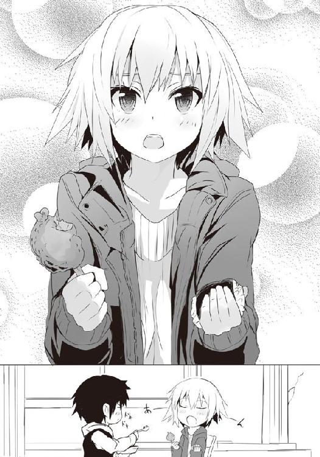
先輩が口の中のものを、ご飯一粒損なうことなく食べようというように、その薄くルージュの引かれた唇がスプーンの上を滑る。そしてゆっくり寝起きのように瞼を開く。黒水晶のような瞳が現れ、僕の顔を見つめながら、唇についたチーズをペロリと舌で舐め取った。
「佐藤、これは......甘くはない......？ 何だ、何々だこの味は......ダメだ、もう一口くれ」
「あの〜、先輩、そんなにハヤシライスだけ食べていたら、まだおかずが別途あるんですから。あとで、とか」
「こんなモヤモヤした気持ちでいつまでもいられるか！ もう一口、もう一口でいいんだ！」
先輩が肉とおにぎりを持ったままで言うものだから、まるで駄々をこねる子供のようで見ていると思わず頬が緩む。そんな僕に先輩は怒るのだけれど、それはそれでまたかわいらしかった。
僕は謝る代わりにハヤシライスを、あーん、することで許してもらう。
「......なるほど、見えてきたぞ。使い方としてはバターのようなものなのか」
「ですが、バターよりかわいげのある味になっている気がしません？」
「......かわいげか、料理の味としては変わった表現だな。だが、しっくりくる」
うんうん、と先輩は満足げに微笑んで頷いてくれるので、僕は次なる謎に立ち向かう。
豚ロースだ。これは食べやすいように少し厚めながら短冊状に切られており、先割れスプーンに刺してパクっといけるようにカットされていた。さらに肉には編み目状の焼き目がつき、添え物のポテトサラダとアスパラ......さらにスライスされた苺があるという不可思議な仕様。そして間違いなくチョコレートが入っていると思しき黒々としたソースがデコレーションのようにかけられていた。また肉の上には限界まで細く千切りにされた何かが......うーん、匂いからすると生姜かな？
「これはまた珍妙な......。一品食べる度に頭を悩ませますね。解説書が欲しいぐらいです」
解説書？ ......あっそうだ、と先輩が親指についていたご飯粒を食べながら言った。
彼女は弁当に付属していたナプキンで手を拭うと、席を立ち、電子レンジの前に放置されていたレジ袋から紙切れを取り出す。
「......すまん、佐藤。そういえば袋の中にチラシが入っていたと思っていたが......これ、その弁当の解説だと思う」
申し訳なさそうな先輩から受け取ってみれば......あぁ、ホントだ。全品それが何であるのかの解説が書いてあるじゃん。
達筆なペン文字で書かれたそれによれば......やはり、この豚ロースにかかっているのは生姜、そしてソースはチョコレート入りグレイビーなのだという。グレイビーって何だろう......？
「グレイビーは肉汁をベースに作ったソースのことだ。イギリスなどではステーキ等によく使われるポピュラーなものなんだぞ」
先輩は言いながらも視線で早く僕に喰えとメッセージを伝えてくる。僕が喰わないと自分が食べられないからだろう。少しいじわるしてあえて焦らしてやろうかとも思ったけれど......弁当が冷めていくのをじっと待つのもどうかと思うので、僕は苦笑いしながら肉に先割れスプーンをブッ刺した。とろりとしたソースを絡めて、パクリ。
「ん？ お？ おぉ......慣れてきたのかな、それとも......むしろこっちの方が」
ハヤシに比べると、目が回るようなパニックはない。グレイビーだからなのかわからないけれど、塩胡椒で下味がついている豚肉にチョコレートの風味が思いのほか、よく馴染んでいる。
変に甘くなく、まろやかでありながら、チョコレートの苦味加減が肉の旨味、甘味を引き立てていた。そう、その味わいはハヤシライスのようにかわいげのある感じではなく、それより幾分シックな味わい。チョコ風味ながら、大人の味、と言ってもいいかもしれない。
生姜の千切りの具合もいい。最初からそうだったのか、それとも電子レンジで温めたからなのかわからないけれど、細く、しんなりとしていることで口の中で角が立つようなこともなく、その風味を活かしている。チョコの余計な甘さや脂っこさを抑えて、料理が重くならないように調整しているようだ。すり下ろしたり、その汁をソースに混ぜても良いのだろうが、あえて千切りにして上からかけることで色合いも良くなるし、何より咀嚼していてそれとなく生姜を噛むと、一気にその香りが広がってスッキリ感を生む。だから、食べ飽きないのだ。
僕はそんな感想を先輩に告げようと横を見るのだけれど......先輩はすでに瞼を閉じて、顎先を少し上げて僕に口を向けていた。もうちょっと口を閉じていたら完全なキス顔というヤツだ。
今、肉の代わりに僕の唇を......と邪な考えが浮かぶものの、多分、「え!? さ、佐藤......」みたいなラブリーな展開ではなく、思いっきりガブリと唇を噛まれそうな気がする......。
さすがにそんな特殊プレイは遠慮したいので、僕は彼女の口に肉を運び入れつつ、肉の感想を語った。
「......うむ。なるほど。佐藤の言う通りだな、さっきのハヤシと比べると幾分大人の味だ。そして、ちょっと和風だというのが小粋でいい」
和風？ と僕は疑問を口にすると、ソースだけ口にしてみろ、と先輩に言われてスプーンでちょいと掬って口にしてみれば......これは、醤油か!?
「そうだ。ソースに隠し味のように醤油が使われているだろう？ 醤油は元々肉との相性がいいし、最近ではスイーツに使われる場合もあるように、決して豚肉とチョコ、それらと喧嘩するものではない。生姜に至っては語るまでもないだろう」
なるほど、と僕は尊敬するように先輩を見やるのだけれど......彼女、まだ肉とおにぎりを手にしているものだから子供が大人ぶって語っているようにしか見えず、何か、かわいい。
「しかし気になるのは、デザートのパンはいいとして、こっちのトマトですね。これは......なるほど、箸休めという感じみたいですよ」
解説ペーパーによれば、この十字に切られたそれは焼きトマト。塩と少量のオリーブオイルをかけてあるのだという。豚肉とハヤシライス、それらを食べていく際に口が飽きてきた時のためのものらしい。つまり、和食で言うところの漬け物のような箸休めのポジションだ。
確かに豚肉は当然、ハヤシライスもホワイトチョコレートチーズもあって比較的ヘビーだから、これは嬉しい。
食べてみれば......滅茶苦茶熱いものの......生のそれよりも落ち着いていて、青くさくはなく、爽やかな味だ。口の中がサッパリする。しかもそれは豚肉にもハヤシにもピッタリくる味なのだから、実に良いチョイスだろう。
一通りの謎が解けたことで、僕と先輩は互いの弁当を時折食べさせ合いながらパクパクと口にしていく。この月桂冠、何だか面白い、そんな印象を抱く弁当だった。
月桂冠を手に入れた時は、呻くほどに感激するものだけれど、この弁当はドキドキして、そしてワクワクしてくる何かがある。まるで新しいゲームソフトをプレイする時のような、凄く魅力的な人に出会えた時のような......そんな印象である。
何より奇をてらった、一瞬の面白みのための弁当ではなく、驚きをスパイスにしながらもきっちりとうまい料理に仕上げている。それが、いい。
食べるに満足感が湧いてくる、そんな弁当だった。
僕と先輩は弁当を食べていく。笑顔になっていく。苺が意外なことに肉と合うという発見があったりしながら......そのほとんどを食べ終えた。最後に残ったのは、あの賽の目状にカットされたパンにチョコレートソースと思しきものがかけられた、それ。
最初は単に表面にかかっていただけだったのに、電子レンジで温めたことでソースは熱々にとろけ、今ではパンに染みている。早速口にしてみれば......ははっ、と、何故か笑ってしまった。笑うところなんて何にもないんだけれど......面白かった。
「先輩、これ......とりあえず、あーん」
素直にあーん、と口を開ける先輩に早速食べさせてみると、彼女もまた、笑った。
意外なほどに、普通なのだ。凄くシンプル。
きつね色に焼いてカットしたパンにバターを塗り、それの上に見たままの甘〜いチョコレートソースがかかっている......それだけなのだ。強いて言えば温めたことでパンにチョコが染みていて、むぎゅっと噛む度にチョコが溢れてくるのがたまらん。
そんなチョコレートフォンデュのような、温かいデザート。それに何故笑うかといえば、それまでの料理が奇抜だったのに、最後には定番な味で攻めてきたこと。そして何より......おかしな要素がないと確信した時に、不思議とホッとする自分自身がおかしかったからだ。
「うん。甘くて、うまい。チョコレートの匂いを嗅いだら、やっぱりこの味わいがどうしても欲しくなるものな。奇抜に始まり、安心で終わる。......いいじゃないか。ガリー・トロット。いや、今は神に仕えし山木柚子か」
かつては打ち破られ、そして半年前に打ち破った相手に、先輩はどこかしみじみとした表情で語りかけた。
僕は空っぽになった弁当容器を見やる。愛嬌のある少女のようなハヤシライス、大人の女性を思わせた豚ロース、それらをうまく繋いだ焼きトマト、そして最後にはしっとり甘く、食べるとニンマリとするチョコレートフォンデュのようなスイーツ......食べ終わってから感じるのも何だけど、そのどの料理にも柚子の顔が思い浮かぶなぁ。
ごちそうさまでした。僕と先輩はお腹一杯胸一杯になりながら、手と言葉を揃え、本日の夕餉に終止符を打った。
「さてと。いつもなら遊んでいくところだが......ちょっと寒いしな。今夜は、帰ろうか」
槍水先輩が壁の時計を見やりながら言うので、そうですねー、と僕は適当に相づちを打つ。
二人で今日の夕餉の感想を語り合ったり、もう一つの月桂冠は激戦の末に坊主が持っていったことなどを喋りながら、空いた弁当容器を片づけ......そして、部室棟を出た。
さすがにいつぞやの時のように手を繋いだりこそしなかったけれど、やっぱり先輩は寮まで送ってくれる気らしい。
白粉がいる時は部室棟前で解散するのだけれど、二人っきりの時は大抵こうだった。
当たり前のように先輩は僕との帰り道を一緒に歩いてくれる。それを意識すると、ちょっとむず痒い気持ちになった。
「今日は我が儘を言ってすまなかったな。あの弁当、最高だった。ありがとう。......それじゃ、また明日な、佐藤」
「はい、先輩も。お気をつけて」
まるでバレンタインという過酷な夜をやり過ごそうとするかのように、気配を消して静まりかえっている男子寮の前で、先輩と僕は笑顔でそう言って、別れた。
先輩はコートのポケットに手を入れ、固いブーツの足音を鳴らして去っていく。歩く度に、彼女の肩から下がるショルダーバッグが躍り、彼女のお尻を叩く。
カッコイイコートに、同様に頑丈そうなショルダーバッグなのに、どこかその姿は尻尾を揺らして歩く犬のように僕には見えた。
久々の月桂冠の弁当を腹に収め、先輩に寮まで送ってもらって、お腹も胸もいっぱいだ。そして恐らく神田君たちからはまだ白粉の毒が抜けきっていないだろうし、安心して眠りにつくことが出来るだろう。風呂入ったら、著莪に電話して、今日のこと謝って......あとは......あっ。
「僕は......バカか。そして先輩......天然にもほどが......!!」
そう、柚子の弁当のおかげというか、せいで、満足してしまったがために思いっきり油断していた。おいおい、まだ僕と先輩のバレンタインデーは終わりじゃないだろう!?
先輩、あの棚の上に隠していたチョコは!? っていうか、その肩から下げているショルダーバッグって、そのチョコを入れておくためにわざわざ持ってきたんでしょ!? 渡した後が恥ずかしいから寮の前で別れる直前に僕に渡そうって魂胆だったんでしょう!?
まったく、仕方ないな、先輩！ 僕は一人呟くなり、先輩が去っていった方角へ向けて走り始める。若干別れてから間が空いてしまったのですれ違いになってしまうかもしれないが......まぁ、その時は先輩のアパートまで行こう。ウっちゃん宅でピンポンダッシュもしたいしね！
僕は頭の中で周辺の地図をイメージしつつ、夜の街を進んでいく。
人気はあまりなく、先輩が歩いていればすぐに見つけられそうなものだが......映画とかと違ってやっぱ簡単には見つけられないもんだな。
見つけた時にどうして追いかけてきたのかを問われたらどうしようか。何て言ってうまく誤魔化そう。まさかサプライズなチョコの存在を知っていたとなったら、先輩もショックだろうから......でも、偽りを述べるのも彼女に悪い気がする。となると、素直に「先輩とホットな夜を過ごしたくて......」とどストレートに告げるのも悪くない。いや、悪いよ。夜にアパートまで押しかけてきてその宣言とか、完全に押し倒す気満々じゃないか。さすがに強引が過ぎる。
そしてさらに、その告白シーンを運悪くウっちゃんに見られようものなら、どんな言い訳をしようが今度こそ通報されるのは確実だ。
さすがに先輩とホットな夜を過ごしつつＳＡＴを相手に一戦かますのは少々厳しい。
そんなことを考えていると、先輩のブーツが立てる足音がかすかに聞こえた気がした。
......ムッ、どこだ？ こっちかな？ あっちかな？ 僕に犬並みの嗅覚があれば先輩の香水をたどれたんだろうけれど......えぇい、こっちだ！
たまに自分の勘が怖くなる時があるのだけれど......意外といるのね、先輩が。
彼女は一軒の家の前に立っていた。人気はなく、誰もいないのが傍から見てもはっきりとわかる、そこ。彼女はポケットに両手を入れ、ションボリとした様子で足下に転がっていた石を蹴飛ばすと、ため息を一つ。
この家に何か用事？ でも、留守だったからションボリって感じだろうか。何となく声がかけづらかった僕は電信柱の陰でひっそりと気配を消して、先輩の様子を見続けた。
先輩が、歩きだす。信号か何かで止まった時に声をかけようと思ってあえて黙ってついていくというストーキングミッションに打って出ようと思ったのだけれど......その前に、誰の家だったのか、ちょっと気になって表札を見てみれば、それは――。
「この音......公園の方か！」
槍水先輩が小さく呟き、走りだした。その音に引っ張られるように、僕もまた走った。
先輩が耳にしたのはエンジン音。それも、高音域を削ったような、くぐもっていて、普通のそれよりも響かないという特徴あるバイクのそれ。僕もまた、その音を......知っていた。
僕は、走った。槍水先輩の足音を追って。気配を消して。
そうして辿り着いたのはあの家の近くにあった、小さな公園。遊具も滑り台とブランコしかない。ベンチが辺りを囲み、街灯も隅っこにあるだけで薄暗い場所だった。
その前に停まっているバイクに、やっぱり僕は見覚えがあった。
槍水先輩がその停められているバイクを指先でそっと撫で......そして、公園の中へ。
そこにはベンチに座り、弁当を食べる男の姿。
「......金城先輩」
槍水先輩の震えるような声に、ベンチで弁当を食べていた男――金城優が、顔を上げた。
「今夜は、てっきり女帝の店にいるかと思っていたんだがな。......どこに行っていた？ 仙」
「......アブラ神の、店で。戦っていました。あの......」
彼の前に立つ槍水先輩は俯き、足下を見やるばかりでブーツの先をモジモジとして、はっきりとした言葉を口にしない。
そのせいか、金城はすぐに顔を弁当に落とし、食べるのを再開してしまう。
先輩が俯いて言葉を失い、その前でベンチに座ったまま平然と弁当を喰らい続ける金城という不思議な構図は、数分もの間続いた。
金城は弁当を食べ終えたのか、容器と箸を脇に置き、代わりにベンチの上にあった見覚えのある小さな箱を開け、中の小さいチョコレートバーを取り出した。そこにはかろうじて僕の位置からも見える〝いつも ありがとう〟の文字。マっちゃんの店の弁当特典だ。
「あ、金城先輩......デザートなら......これを......」
まるで怯えている少女のような、普段は聞くことのない声で、槍水先輩は言い......そして、バッグからあの隠してあった包みを取り出すのだった。
「......その、良かったら......」
箱を持つ先輩の両手が震えているのが、遠目にもはっきりとわかった。
「......金城先輩......」
差し出された箱に一瞥くれただけで、金城は手にしていたマっちゃんのチョコレートに視線を向け、それを齧る。パキッと軽快な音がした。
「......金城......先輩......？」
まるで怯える茉莉花のような、そんな声で槍水先輩は箱を差し出し続ける。それを受け取ることもなければ、視線を向けることなく、金城は勝ち獲ってきたチョコを食べ続ける。
そして金城が全てを胃に収めたのを見て、槍水先輩は今まで以上に震える手でグッと彼の前に箱を差し出す。だが、それでも彼は受け取らない。
仙、とため息混じりに金城は言って、空いた弁当の容器等ををレジ袋にひとまとめにして手に提げると、立ち上がった。彼の革手袋に包まれた手がようやく伸びる。
だが、その行き先は箱ではなく、俯き加減の槍水先輩の頭だった。
金城は槍水先輩の頭を胸に抱くようにして、彼女の耳に己の口を近づける。
「......何度も言っただろう。俺が求めているのは、そんなちゃちなものじゃない。......いい加減覚悟を決めろ。お前が、最後の可能性なんだ」
「先輩、私は......先輩が......ずっと......」
涙声で呟く槍水先輩の頭をポンと一度軽く叩くと、金城は彼女をその場に残し、歩きだした。
「......狼でないお前に、価値などない」
金城が歩いていく。差し出していた箱を胸に抱きしめ、その場にしゃがみ込んで小さな声で呻く槍水先輩を、振り返ることもなく。
「俺の残り時間はわずかだ。......まずはカペルスウェイトを狩る。その間に覚悟を決めろ。俺を失望させるな、仙。何のために一年も待ってやったと思っている」
金城はヘルメットを被るとバイクのエンジンをかけ、何の躊躇いもなくアクセルを吹かして公園から去っていった。
地面に膝をついて箱を胸に力一杯に抱きしめ、涙と嗚咽を漏らす槍水先輩と......そして、狩ると宣言された僕を残して。
「私には......私なんかには、やっぱり......無理だよ、金城先輩......」
震える声が、夜の公園に空しく響いていた。
そして僕は、物陰に隠れて息を殺していた。泣いている彼女に何も出来ずに、ただ僕は――。
〈了〉
著者紹介
アサウラ
１９８４年生まれ。北海道出身。東京在住。
大学在学中に第５回スーパーダッシュ小説新人賞に応募した「黄色い花の紅」で大賞を受賞、デビュー。
「ベン・トー」シリーズが「このライトノベルがすごい！ ２０１１」（宝島社）で第５位にランクインし、大ブレイク。
柴乃櫂人（しばの・かいと）
１９８１年生まれ。大阪出身。東京在住。
ゲーム会社に所属しニンテンドーＤＳの大ヒットＲＰＧ「ルミナスアーク」などのキャラクターデザインを手がけたのち、フリーに。
「ベン・トー」シリーズのコミカライズで漫画家デビューも果たす。
集英社ｅスーパーダッシュ文庫
ベン・トー 10
恋する乙女が作るバレンタインデースペシャル弁当３５０円
著者 アサウラ
(C) ASAURA 2013
２０１３年７月17日発行
この電子書籍は、集英社スーパーダッシュ文庫「ベン・トー 10 恋する乙女が作るバレンタインデースペシャル弁当３５０円」
２０１３年５月31日発行の第２刷を底本としています。
発行者 鈴木晴彦
発行所 株式会社 集英社
東京都千代田区一ツ橋２丁目５番10号
〒１０１−８０５０
［電話］
０３−３２３９−５２６３（編集部）
０３−３２３０−６３９３（販売部）
０３−３２３０−６０８０（読者係）
制作所 株式会社デジタルディレクターズ
本作品の全部また一部を無断で複製、転載、改竄、インターネット上に掲載すること、および有償無償に関わらず、本データを第三者に譲渡することを禁じます。なお個人利用の目的であっても、コピーガードを解除しての複製は、法律で禁じられています。